About
记录了一些代码阅读和读书笔记.
PyTorch
相关缩写
C10 = Caffe Tensor Library(Core Tensor Library)存在这两种说法吧
aten = a tensor library
THP = TorcH Python
TH = TorcH
THC = TorcH Cuda
THCS = TorcH Cuda Sparse
THCUNN = TorcH Cuda Neural Network
THD = TorcH Distributed
THNN = TorcH Neural Network
TH = TorcH Sparse
tch-rs
tensor 相关结构之间关系

autograd
梯度反向传播
requires_grad 这个具有传染性, grad_fn
>> t1 = torch.randn((3,3), requires_grad=True);
>> t2 = 3 * t2;
>> t2.requires_grad
True
>>> t2.grad_fn
<MulBackward0 object at 0x100df4f70>
torch.nn.Autograd.Function class
toch/autograd/function.py:222
# mypy doesn't understand `with_metaclass` from torch._six
class Function(with_metaclass(FunctionMeta, _C._FunctionBase, FunctionCtx, _HookMixin)): # type: ignore[misc]
r"""Base class to create custom `autograd.Function`
To create a custom `autograd.Function`, subclass this class and implement
the :meth:`forward` and :meth:`backward` static methods. Then, to use your custom
op in the forward pass, call the class method ``apply``. Do not call
:meth:`forward` directly.
To ensure correctness and best performance, make sure you are calling the
correct methods on ``ctx`` and validating your backward function using
:func:`torch.autograd.gradcheck`.
See :ref:`extending-autograd` for more details on how to use this class.
最主要的两个方法，forward 和backward
gradient that is backpropagated to f from the layers in front of it multiplied by the local gradient of the output of f with respect to it's inputs.
向自己的每个input 反向传播。
def backward (incoming_gradients):
self.Tensor.grad = incoming_gradients
for inp in self.inputs:
if inp.grad_fn is not None:
new_incoming_gradients = //
incoming_gradient * local_grad(self.Tensor, inp)
inp.grad_fn.backward(new_incoming_gradients)
else:
pass
学习资料
- PyTorch 101, Part 1: Understanding Graphs, Automatic Differentiation and Autograd
- Implementing word2vec in PyTorch (skip-gram model)
- The Ultimate Guide To PyTorch
《Pytorch Pocket Reference》 笔记

Tensor
tensor相关属性和方法
import torch
x = torch.tensor([[1.0,2], [3,4]], requires_grad=True)
print(x)
print(x[1,1])
print(x[1,1].item())
print("shape of x is", x.shape)
print("ndim of x is", x.ndim)
print("device of x is ", x.device)
print("layout of x is", x.layout)
f = x.pow(2).sum()
print(f)
print("before backward, grad of x is", x.grad)
f.backward()
print("after backwrad, grad of x is", x.grad)
print("grad_fn of x is", x.grad_fn)
print("grad_fn of f is", f.grad_fn)
deep learning dev with Pytorch
深度学习开发流程，先数据预处理，然后做模型训练，最后做模型推理部署。
数据预处理
模型开发
torch.nn 预制了很多函数和神经网络层
- 神经网络layer(有全连接层，卷积，池化，normalized, dropout, 各种非线性激活函数）
- 损失函数
- 优化器
- layer的container.
模型训练
from torch import optim
from torch import nn
# 定义模型
model = LeNet5().to(device)
# 定义损失函数
criterion = nn.CrossEntropyLoss()
# 定义优化器
optimizer = optim.SGD(model.parameters(), lr=0.001, momentum=0.9)
# 模型训练和验证
N_EPOCHS = 10
for epoch in range(N_EPOCHS):
# Training
train_loss = 0.0
model.train()
for inputs, labels in trainloader:
inputs = inputs.to(device)
labels = labels.to(device)
optimizer.zero_grad()
outputs = model(inputs)
loss = criterion(outputs, labels)
loss.backward()
optimizer.step()
train_loss += loss.item()
# Validation
val_loss = 0.0
model.eval()
for inputs, labels in valloader:
inputs = inputs.to(device)
labels = labels.to(device)
模型部署
训练好的模型保存到指定的文件，然后在后面使用时，使用load_state_dict重新加载模型
model.train()
# train model
# save model to file
torch.save(model.state_dict(), "./lenet5_model.pt")
# load model
model = LeNet5().to(device)
model.load_state_dict(torch.load("./lenet5_model.pt"))
# use model predict
model.eval()
mini torch
https://minitorch.github.io
Tengine
repo 地址: https://github.com/OAID/Tengine

函数调用主流程
register op

NLP
Bert
How to code bert 笔记
https://neptune.ai/blog/how-to-code-bert-using-pytorch-tutorial

The Annotated transformer 笔记
Self-attention, sometimes called intra-attention is an attention mechanism relating different positions of a single sequence in order to compute a representation of the sequence
symbol representation -> encode -> continuous representations -> decode -> symbol representation

Attention
An attention function can be described as mapping a query and a set of key-value pairs to an output, where the query, keys, values, and output are all vectors. The output is computed as a weighted sum of the values, where the weight assigned to each value is computed by a compatibility function of the query with the corresponding key

he two most commonly used attention functions are additive attention (cite), and dot-product (multiplicative) attention
HuggingFace transformers
huggingface/transformers

Questions: 怎么杨使用已经下载的model?
相关资料:
nncase
nncase 是一个为 AI 加速器设计的神经网络编译器。
comile流程
Compile过程


k210的kernels, 为啥看到的都是c++代码？不是应该直接调driver的方法吗？

kpu
riscv-plic-spec:https://github.com/riscv/riscv-plic-spec/blob/master/riscv-plic.adoc
RISC-V Platform-Level Interrupt Controller Specification

facedetect example

kpu
kpu_load_kmodel
kpu_run_kmodel
关键函数为ai_step，是pli中断的callback, 会一层层的执行kmodel
看了kpu.c中的代码，貌似只有conv2d是在kpu上跑的，其他算子的都是c++代码
应该是在cpu上跑的。
dmac

plic
RISC-V Platform-Level Interrupt Controller Specification
全局中断，也就是所说的外部中断，其他外设统统都是外部中断。外部中断连接在Platform-Level Interrupt Controller (PLIC)上。
PLIC需要一个仲裁决定谁先中断，存在个优先级的问题。

k210 Standalone SDK
相关资料文档
- Github地址：https://github.com/kendryte/kendryte-standalone-sdk
- K210 sdk开发文档: 英文pdf, 中文pdf
platform

根据platform.h中的地址定义，地址空间布局如下:

kpu
AXI BUS是啥
你可以理解为一种用于传输数据的模块或者总线。用于两个模块或者多个模块之间相互递数据。反正它有一堆优点。。被SOC广泛采用了。

riscv-plic-spec:https://github.com/riscv/riscv-plic-spec/blob/master/riscv-plic.adoc
RISC-V Platform-Level Interrupt Controller Specification
kpu_load_kmodel
kpu_run_kmodel
关键函数为ai_step，是pli中断的callback, 会一层层的执行kmodel
看了kpu.c中的代码，貌似只有conv2d是在kpu上跑的，其他算子的都是c++代码
应该是在cpu上跑的。
dmac
plic
RISC-V Platform-Level Interrupt Controller Specification
全局中断，也就是所说的外部中断，其他外设统统都是外部中断。外部中断连接在Platform-Level Interrupt Controller (PLIC)上。
PLIC需要一个仲裁决定谁先中断，存在个优先级的问题。
参考文献
face detect example
Ray
相关资料整理
主要组件
- Gcs: Global Control State, 存储了代码，输入参数，返回值
- Raylet:Local Scheduler, Worker通过Raylet和Gcs通信。
- Redis
Ray Paper
- 论文arxiv 地址 ray paper

Ray Remote
Actor 生命周期是怎么管理的。
LocalSchedule task保存在哪里？
dynamic task dag是怎么构建的？
Ray和Dask的区别是什么？

GcsServer

GcsServer Star流程
tensorflow
some notes on reading tensorflow source code
Tensorflow Graph Executor(草稿)
摘要
Tensorflow中单机版的(direct session)会按照device将graph先划分成子图subgraph, 然后每个subgraph会交给一个execturo去执行，分布式的（GrpSession) 首先会将graph按照worker划分，每个worker划分成一个子图，然后注册到每个worker的graph_mgr, 并在graph_mgr中再按照device将worker_subgraph划分成device的subgraph, 最后每个device对应的subgraph会由executor去执行，Tensorflow中的graph执行示意图如下(图片来自tensorflow-talk-debugging)。

本文主要分析了executor在执行graph时，Node的执行调度以及node的输入输出数据, 执行状态是如何保存的，最后结合代码和Tensorflow control flow implemention这部分文档分析了的control flow的具体实现。主要涉及的代码为common_runtime/executor.cc
Executor中主要类
Executor
Executor为基类，对外提供了两个接口Run和RunAsync, 其中Run是对RunAsync简单的一层包装。
// Synchronous wrapper for RunAsync().
Status Run(const Args& args) {
Status ret;
Notification n;
RunAsync(args, [&ret, &n](const Status& s) {
ret = s;
n.Notify();
});
n.WaitForNotification();
return ret;
}
Executor基类只要去实现RunAsync就行。
virtual void RunAsync(const Args& args, DoneCallback done) = 0;
ExecutorImpl
ExecutorImpl继承实现了Executor，它的RunAsync实现转发给了ExecutorState::RunAsync, ExecutorImpl主要的工作是从Graph中解析出一些静态信息，比如FrameInfo, GraphView, 由后面的ExecutorState执行的时候使用。
void ExecutorImpl::RunAsync(const Args& args, DoneCallback done) {
(new ExecutorState(args, this))->RunAsync(std::move(done));
}
ExecutorState
Executor中的调用关系
ExecutorImpl call flow
Executor被调用的入口为NewLocalExecutor, 在DirectSesion中会为每个subgraph创建一个executor, 然后交给ExecutorBarrier同时执行多个Executor。NewLocalExecutor在ExecutorImpl成员函数中的调用过程如下：

Exector::RunAsync这个会被转发给ExecutorState::RunAsync（这个函数的执行逻辑见下文）
ExecutorImpl::Initialize
在ExecutorImpl::Initialize中，对于graph中的每个node, 创建对应的NodeItem, 主要包含了三块：
- 调用params.create_kernal, 创建nodeItem->kernal.
- 记录nodeItem.input_start, input_start 是该node在它所属frame的input_tensors中的偏移index, 这个在后面的ProcessInputs和ProcessOutputs中会用到。
- 创建node对应的pending_id， pending_id用于找到记录它执行状态的pendingCount, 这个在后面的ActiveNode中会用到.
在BuildCtronlFlow中会建立好framename之间的父子关系, frameInfo是frame的静态信息（对应着执行时候的FrameState动态信息），并且建立了从node id找到node所属frame name的映射关系，包含了frame中的total inputs, 这个frame所包含的node.

ExecutorState::RunAsync

ExecutorImpl::Process

Control Flow
后来在[1]中发现节点还有Switch, Merge, IterNext, Enter, Exit 五个flow control node，用来实现while循环，为此tensorflowe引入了frame的概念，可以粗略的认为和函数调用一样吧, 在遇到Enter node的时候，就新建一个child frame，把inputs(类似于函数函数调用时候参数入栈)一样，forward到child frame中，在遇到Exit node，就把输出放到parent frame 中(类似于将函数的return值入栈)。
未完待续
Executor中数据流程
参考
- [Tensorflow control flow implemention]
- tensorflow-talk-debugging
Sub Graph 预处理: Node => NodeItem => TaggedNode (Draft)
引言
下图是一个graph中每个node被处理的过程，首先在ExecutorImpl::Initialize的时候，将node 处理成NodeItem，创建node对应的kernal, 然后在node ready可执行的时候，会创建一个TaggedNode(TaggedNode主要多了个frame指针，记录了当前执行的frame), 并将它放入Ready队列中，最后交给ExecutorState::Process去执行这个Node。

NodeItem
NodeItem的主要作用是将Graph中每个node的op，转换成可以在device上执行的kernal, 另一方面，记录该node输入tensor的位置，并且使用PendingCount来记录Node的执行状态。 Gview可以看成是NodeItem的容器，根据node的id就可以找到相应的NodeItem, 对于graph中的每个node, 在ExecutorImpl::Initialize中都会创建一个NodeItem，放到Gview中。
NodeItem 主要包含的字段
- kernel: 由params.create_kernel创建，kernel是在device上执行的主要对象，kerenl 并将在ExecutorImpl的析构函数被params.delete_kernel删除。
// The kernel for this node.
OpKernel* kernel = nullptr;
- input_start：纪录了在当前IteratorState的input_tensors中开始的index。这个node的输入为：input_tensors[input_start: input_start + num_inputs]这部分对应的Tensors。
// Cached values of node->num_inputs() and node->num_outputs(), to
// avoid levels of indirection.
int num_inputs;
int num_outputs;
// ExecutorImpl::tensors_[input_start] is the 1st positional input
// for this node.
int input_start = 0;
// Number of output edges.
size_t num_output_edges;
- pending_id: 根据这个id在当前的IteratorState中找到对应的PendingCount，从而找到这个nodeItem的执行状态。
PendingCounts::Handle pending_id;
- expensive/async kernel: 标志表明kernel是否是Async的和expensive的。
bool kernel_is_expensive : 1; // True iff kernel->IsExpensive()
bool kernel_is_async : 1; // True iff kernel->AsAsync() != nullptr
- control node ，标志该node是否是Control flow node, 以及类型
bool is_merge : 1; // True iff IsMerge(node)
bool is_enter : 1; // True iff IsEnter(node)
bool is_exit : 1; // True iff IsExit(node)
bool is_control_trigger : 1; // True iff IsControlTrigger(node)
bool is_sink : 1; // True iff IsSink(node)
// True iff IsEnter(node) || IsExit(node) || IsNextIteration(node)
bool is_enter_exit_or_next_iter : 1;
- allocate attribute: 影响device所返回的allocator,从而影响kernal执行时候，申请内存时候的处理行为。
// Return array of per-output allocator attributes.
const AllocatorAttributes* output_attrs() const { return output_attr_base(); }
InferAllocAttr主要根据device, send, recv等节点, 来设置是否是gpu_compatible的，
attr->set_nic_compatible(true);
attr->set_gpu_compatible(true);
其中AllocatorAttributes主要影响GpuDevice所返回的allocator上。
//common_runtime/gpu/gpu_device_factory.cc
Allocator* GetAllocator(AllocatorAttributes attr) override {
if (attr.on_host()) {
if (attr.gpu_compatible() || force_gpu_compatible_) {
ProcessState* ps = ProcessState::singleton();
return ps->GetCUDAHostAllocator(0);
} else {
return cpu_allocator_;
}
} else {
return gpu_allocator_;
}
}
TaggedNode
TaggedNode 增加了了一个FrameState指针，指向了Node将要执行的FrameState, input_iter, input_frame加上input_iter可以确定了
struct TaggedNode {
const Node* node = nullptr;
FrameState* input_frame = nullptr;
int64 input_iter = -1;
bool is_dead = false;
TaggedNode(const Node* t_node, FrameState* in_frame, int64 in_iter,
bool dead) {
node = t_node;
input_frame = in_frame;
input_iter = in_iter;
is_dead = dead;
}
在node处于ready 可执行状态的时候，会创建一个TaggedNode, 并放到TaggedNodeSeq队列中，等待调度执行。
ExecutorState::FrameState::ActivateNodes ==>
ready->push_back(TaggedNode(dst_item->node, this, iter, dst_dead));
ExecutorState::RunAsync ==>
for (const Node* n : impl_->root_nodes_) {
DCHECK_EQ(n->in_edges().size(), 0);
ready.push_back(TaggedNode{n, root_frame_, 0, false});
}
获取node输入tensors指针
首先根据TaggedNode中的input_frame，input_iter获取node的输入tensors
Entry* GetInputTensors(FrameState* input_frame,
int64 input_iter) const NO_THREAD_SAFETY_ANALYSIS {
return input_frame->GetIteration(input_iter)->input_tensors;
}
然后根据NodeItem中定义的input_start获取first_input tensor的指针
//在ExecutorState::Process中:
Entry* input_tensors = GetInputTensors(input_frame, input_iter);
Entry* first_input = input_tensors + item.input_start;
Flow Control op
在Tensorflow中，graph中每个node的op，都在一个execution Frame中执行，Enter/Exit分别负责execution Frame的创建和删除，如果把execution frame和函数调用做类比的话，那么Enter有点类似于传参，而Exit则类似于return 返回值。 而switch/merge/nextIteration 则用于实现类似于while/if之类的分支跳转和循环。本节主要参照 1 这篇文章。
flow control op

Tensorflow中control flow op对应具体定义如下
switch
A Switch operator forwards the input tensor d to one of its outputs depending on the boolean tensor of the control input p. A Switch is enabled for execution when both its inputs are available.
Switch 根据predict将输入tensor导出到相应的true/false输出。没获得输出的分支会被标记为dead状态(有点类似于if/else中没被执行到的代码), 这个dead状态会往下传播。
Merge
A Merge operator forwards one of its available inputs to its output. A Merge is enabled for execution when any of its inputs is available. It is unspecified which available input it outputs if there are multiple inputs available.
Merge 将输入tensor中的一个导出到输出（先到先得）,一般配合switch用
Enter
An Enter operator forwards its input to the execution frame that is uniquely identified by the given name. This Enter op is used to pass a tensor in one execution frame to a child execution frame. There can be multiple Enter ops to the same child execution frame, each making a tensor available (asynchronously) in that child execution frame. An Enter is enabled for execution when its input is available. A new execution frame is instantiated in the TensorFlow runtime when the first Enter op to that frame is executed
Enter node将输入tensor导入到一个frame中。frame name是唯一的，可以根据frame name来找到对应的frame， 在执行的时候，如果frame不存在的话，Enter会创建相应的子frame, Enter node所在的frame是该frame的parent frame.
Exit
An Exit operator forwards a value from an execution frame to its parent execution frame. This Exit op is used to return a tensor computed in a child execution frame back to its parent frame. There can be multiple Exit ops to the parent frame, each asynchronously passing a tensor back to the parent frame. An Exit is enabled when its input is available.
Exit node 从Frame中导出一个tensor到parent frame中。
NextIteration
A NextIteration operator forwards its input to the next iteration in the current execution frame. The TensorFlow runtime keeps track of iterations in an execution frame. Any op executed in an execution frame has a unique iteration id, which allows us to uniquely identify different invocations of the same op in an iterative computation. Note that there can be multiple NextIteration ops in an execution frame. The TensorFlow runtime starts iteration N+1 when the first NextIteration op is executed at iteration N. As more tensors enter an iteration by executing NextIteration ops, more ops in that iteration will be ready for execution. A NextIteration is enabled when its input is available.
NextIteration将输入导出到下个iteration, NextIteration导出的应该是循环变量，比如下面代码中的j和sum
for(int j=0, sum=0; j < 100;){
int tmp = i + 1;
j * = 2
sum += j;
}
While loop
可以通过上述的五个flow control node来实现tensorflow中的while loop
tf.while_loop(lambda i: i < 10, lambda i: tf.add(i, 1), [0])

可以看到NextIteration导入导出的是循环变量i，merge node可以用来初始化变量, 类似于 i= i || 0的效果, switch控制是否结束循环，Exit跳出循环。
在文献1中还讲述了dead传播，分布式的whileloop，以及while loop对应的gradient op.讲的比较深，后面再补上吧。
参考文献：
Executor Frame
引言
在Executor 执行Graph的时候，会首先分析Graph, 创建关于Graph中frame的静态信息，比如ControlFlowInfo和FrameInfo，对于graph中的每个node, 可以根据ControlFlowInfo去得到它对应的frame_name, 然后根据frame_name可以得到FrameInfo的一些信息。
而FrameState和IterationState这两个是动态的状态，由Executor在执行Graph时候动态创建的。FrameState对应着整个while loop，而IterationState则对应着while loop中的某个迭代。 FrameState中包了total_input(frame中所有node input个数等信息），IterationState中有个EntryVec用于保存某次迭代时候，node之间输入输出的Entry。
本文主要分析了Executor中ControlFlowInfo， FrameInfo, FrameState, IterationState，这几个和Executor Frame相关的struct， 以及它们之间的关系。
ExecutorImpl::ControlFlowInfo
ControlFlowInfo里面unique_frame_names保存了computation graph中所有frame的名字，frame_names则是个倒查表，索引对应于node->id, 可以根据frame_names[node->id()]找到node对应的frame_name.
struct ControlFlowInfo {
gtl::FlatSet<string> unique_frame_names;
std::vector<string> frame_names;
};
ControlFlowInfo的创建
BuildControlFlowInfo 会遍历整个graph, 然后处理Enter/Exit node, 填充好ControlFlowInfo中的字段,
- 如果遇到Enter node, 则进入子Frame, Enter node的每个输出node对应的frame_name都是EnterNode对应的 "frame_node"属性
//Enter node包含了frame_name 属性，
GetNodeAttr(curr_node->attrs(), "frame_name", &frame_name));
- 如果是Exit node, 则退出子Frame, Exit node的每个输出node对应的frame_name都是Exit node parent node的 frame_name
//other code
else if (IsExit(curr_node)) {
parent = parent_nodes[curr_id];
frame_name = cf_info->frame_names[parent->id()];
parent = parent_nodes[parent->id()];
}
- 如果是其他类型的node, 则node的每个输出node frame和当前node一致
parent = parent_nodes[curr_id];
frame_name = cf_info->frame_names[curr_id];
controlflow info被用到的地方
在executor中首先会根据node->id找到frame_name, 然后根据frame_name找到对应的FrameInfo
const string& frame_name = cf_info.frame_names[id];
FrameInfo* frame_info = EnsureFrameInfo(frame_name);
ExecutorImpl::FrameInfo
FrameInfo包含的主要字段如下:
// The total number of inputs to a frame.
int input_count;
int total_inputs;
PendingCounts::Layout pending_counts_layout;
PendingCounts* pending_counts; // Owned
input_count
input_count 代表graph中Enter到该frame的Enter Node个数, 统计个数的代码如下：
//ExecutorImpl::Initialize
for (const Node* n : graph_->nodes()) {
//other code..
if (IsEnter(n)) {
string enter_name;
TF_RETURN_IF_ERROR(GetNodeAttr(n->attrs(), "frame_name", &enter_name));
EnsureFrameInfo(enter_name)->input_count++;
}
}
total_inputs
total_inputs会在ExecutorState::IteratorState中用到，它的值为frame中所有node的inputs个数的总和。
// The total number of input tensors of a frame.
// == sum(nodes[*].num_inputs()) where nodes are the nodes in the frame.
int total_inputs;
total_inputs在后面的影响如下：
FrameInfo.total_inputs ==> FrameState.total_input_tensors ==> IterationsState.input_tensors(new Entry[total_input_tensors])
PendingCounts
- PendingCounts相关，pending_counts_layout在后面会用来创建Node的PendingCount, pending count会用来跟踪Node的状态（比如是否所有的input都已ready, Node是否已经执行过了，Node是否在Dead path)，
struct FrameInfo由EnsureFrameInfo这个函数lazy创建，并在Intialize填充好它的字段。
FrameInfo* EnsureFrameInfo(const string& fname) {
auto slot = &frame_info_[fname];
if (*slot == nullptr) {
*slot = new FrameInfo;
}
return *slot;
}
FrameInfo将在ExecutorImpl的析构函数中被删掉。
~ExecutorImpl() override {
//other code
for (auto fiter : frame_info_) {
delete fiter.second;
}
ExecutorState::FrameState
前面两个ControlFlowInfo/FrameInfo都是静态的信息(所以叫XXXInfo)，而FrameState和IterationState都是动态信息，会在Graph执行的时候动态创建。
创建FrameState: FindOrCreateChildFrame
在FindOrCreateChildFrame中，会调用InitializeFrameInfo从FrameInfo中抽取有用的字段
void InitializeFrameInfo(const string& enter_name) {
auto it_frame_info = executor->frame_info_.find(enter_name);
DCHECK(it_frame_info != executor->frame_info_.end());
ExecutorImpl::FrameInfo* finfo = it_frame_info->second;
pending_counts = finfo->pending_counts;
total_input_tensors = finfo->total_inputs;
num_pending_inputs = finfo->input_count;
nodes = finfo->nodes;
}
FindOrCreateChildFrame被调用的stack
Process -> PropagationOutputs -> FindOrCreateChildFrame
删除FrameState: DeleteFrame
1.在PropgateOutputs中，如果is_frame_done，就会调用DeleteFrame, DeleteFrame会向parent frame传播dead_exits（TODO: 这部分描述细化）
IterationState删除的地方
- CleanupFrameIterations
- frame->CleanupIterations
ExecutorState::IterationState
Entry* input_tensors;
// The number of outstanding ops for each iteration.
size_t outstanding_ops;
int outstanding_frame_count;
PendingCounts counts_;
FrameState和IterationState创建地方:
-
在ExecutorState的构造函数中会创建一个FrameState作为rootframe, 同时也会创建该frameState的第一个IterationState。
-
在执行完一个Node之后，PropagateOutputs在遇到Enter节点的时候，会调用FindOrCreateChildFrame来创建一个新的FrameState,以及该FrameState的第一个IterationState
-
在PropgateOutputs的时候，遇到NextIteration Node 会去调用FrameState::IncreatementIteration新增一个IterationState
-
所有的framesate都放在了outstanding_frames 这个map中，新建的framestate会插到这个map中，删除的时候会从这个map中去掉。
Tensorflow Direct Session (Draft)
摘要
本文主要分析了tensorflow 中DirectSession部分的代码。如果把executor 执行graph当成一个函数的话，那么Tensorflow中Session主要功能是把用户传过来的一些参数Feeds到compute graph中，然后运行到graph target node，最后在graph computation完成之后，取出用户指定名字的一些tensor。
DirectSession 则主要工作以下几方面：
- Rewrite Graph： 将FeedInputs和FetchOutputs节点加到graph中，然后去掉graph中运行不到的节点，最后采用并查集的方式，给graph中每个node分配一个device。
- Graph partition：根据每个node所device，将node划分成不同的subgraph, subgraph之间添加send和recv节点做不同device之间的通信。
- CeateExecutors：每个device的subgraph会创建一个Executor来执行graph computation。
- Fetch outputs：对于DirectSession来说，FeedInputs和FetchOutputs 所添加的节点是
_Arg和_RetVal，这两个节点会通过directSession的callframe来读写input，output。
RewriteGraph
RewriteGraph这块的callstack如下图所示，主要主要涉及到 GraphExecutionState, SubGraph, Placer这三块。
GraphExecutionState据文档所说(graph_execution_state.h)，其主要作用是按照BuildGraphOptions选项将Graph转换成可执行的Client Graph。
GraphExecutionState is responsible for generating an executable ClientGraph from the original GraphDef that specifies the complete graph and from BuildGraphOptions which specifies input/output nodes.
ClientGraph与GraphDef的区别是： ClientGraph中每个node都被Assign了某个Device，这部分由Placer完成；另外添加了input/output nodes, 去掉了执行不到的node, 这部分由subgraph完成。
An executable Graph differs from a GraphDef by being Placed, meaning that each Node is assigned to a single Device in the available set.

Call frame: feed and fetch
DirectSession中采用了call frame的方式读写compution graph中的inputs/outputs

DirectSession::Run的时候，首先会创建一个FunctionCallFrame, 把要feed的tensor填充到FunctionCallFrame::args_。
// In DirectSession::Run
FunctionCallFrame call_frame(executors_and_keys->input_types,
executors_and_keys->output_types);
gtl::InlinedVector<Tensor, 4> feed_args(inputs.size());
for (const auto& it : inputs) {
if (it.second.dtype() == DT_RESOURCE) {
Tensor tensor_from_handle;
TF_RETURN_IF_ERROR(
ResourceHandleToInputTensor(it.second, &tensor_from_handle));
feed_args[executors_and_keys->input_name_to_index[it.first]] =
tensor_from_handle;
} else {
feed_args[executors_and_keys->input_name_to_index[it.first]] = it.second;
}
}
const Status s = call_frame.SetArgs(feed_args);
在创建Executor的时候，通过Executor::Args.call_frame把call_frame放到OpkernalContext中。
//## DirectSessioin::Runinternal
Executor::Args args;
args.step_id = step_id;
args.call_frame = call_frame;
//other code...
//每个device subgraph对应一个item, item.executor为这个subgraph的exeuctor.
item.executor->RunAsync(args, barrier->Get());
//## ExecutorState::Process
OpKernelContext::Params params;
params.step_id = step_id_;
params.call_frame = call_frame_;
//other code ...
// Synchronous computes.
OpKernelContext ctx(¶ms, item.num_outputs);
nodestats::SetOpStart(stats);
device->Compute(CHECK_NOTNULL(op_kernel), &ctx);
当所有的subgraph Executor执行完毕后，通过FunctionCallFrame::ConsumeRetVals的方式把输出的tensor取出来。
// DirectSession::Run
if (outputs) {
std::vector<Tensor> sorted_outputs;
const Status s = call_frame.ConsumeRetvals(&sorted_outputs);
if (errors::IsInternal(s)) {
//other code
Device placer
Placer 在初始的时候，用户会指定某些节点的device, 比如有的节点是gpu:0, 有的cpu:0, 有的node是gpu:1, 然后将有相同class_属性@loc:xxx的node节点放到一个集合里面，随后根据以下约束, 采用并查集的方式，对node集合进行进一步的划分:
- 用户指定了device，就将node放到用户指定的device上
- Generateo node 和output node放到同一个device上
- Meta node（比如cast操作) 和input node放到同一个device上
- Reftype 的Input, input和output节点尽量放到同一个device上
- 采用并查集的方式将node place给device
- 对于stateful的node, 不改变它的device assign。
stateful node 在placed之后，就不能移到别的device上了, 对于这种node，GraphExecutionState的做法是在placer run之前将stateful node的device assign保存以下，在placer run 之后再恢复回去。
Map of placed stateful nodes, i.e. nodes for which is_stateful() is true, such as "params" and "queue" nodes. Once placed these nodes can not be moved to a different device. Maps node names to device names.
可以通过打开log_device_placement的方式让placer在stderr中把node的device place情况打出来:
config=tf.ConfigProto(log_device_placement=True)
sess = tf.Session(config=config)
Graph partition
Graph partition根据上面Placemnet的结果，将graph partition成不同的子图，子图之间添加send 和recv节点，send和recv节点会用rendzvous来传送tensor。有时候除了send和recv node还需要添加一些control flow node。
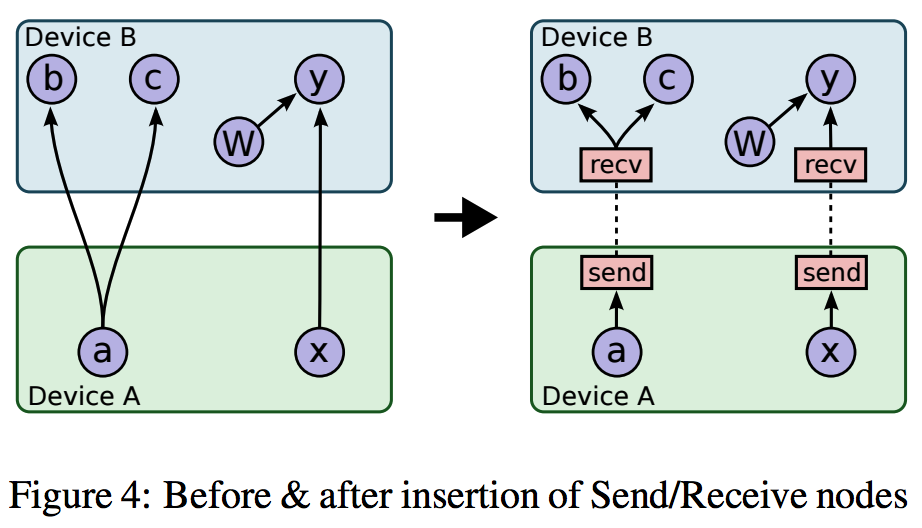
（这个地方需要看下tf implement那个文档，了解下具体情况）
Executor Cache
提交给DirectSessoin在经过Graph Partition之后，会划分成不同的子图，比如下图将一个大的graph划分成了3个subgraph分别放置在了在CPU, GPU1, GPU2上，device之间通过rendezvous来通信，每个subgraph都会创建一个executor去执行。
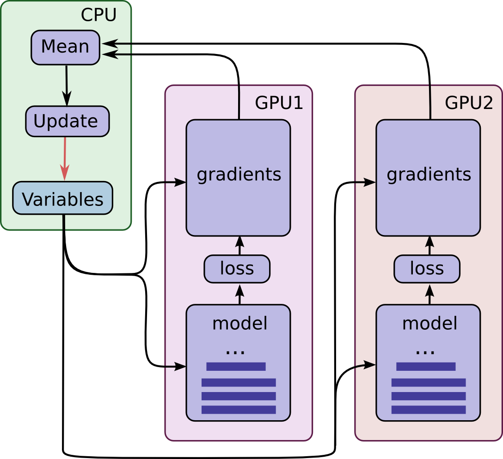
在模型的训练通常会多次迭代run, 因此要加一层cache避免多次做graph的parition，多次创建executor。
with tf.Session(config=config) as sess:
sess.run([merge, gd_step], feed_dict={x: batch_xs, y_label: batch_ys})
cache的key为input, output，target tensor的names 连起来的。还有一个key是吧input, output, target的names分别sort之后再连起来。
DirectSession::Run中cache的key很有意思，有两个key, 首先去是未排序的，另外一个是排序的。未排序的为了快速查找，而排序的key是为了避免由于input_names中names顺序不一样导致cache miss。
// Fast lookup path, no sorting.
// Fast查询的key, 没排序
const string key = strings::StrCat(
str_util::Join(inputs, ","), "->", str_util::Join(outputs, ","), "/",
str_util::Join(target_nodes, ","), "/", run_state_args->is_partial_run,
"/", debug_tensor_watches_summary);
// 将names分别排序然后concat起来.
std::vector<string> inputs_sorted(inputs.begin(), inputs.end());
std::sort(inputs_sorted.begin(), inputs_sorted.end());
std::vector<string> outputs_sorted(outputs.begin(), outputs.end());
std::sort(outputs_sorted.begin(), outputs_sorted.end());
std::vector<string> tn_sorted(target_nodes.begin(), target_nodes.end());
std::sort(tn_sorted.begin(), tn_sorted.end());
const string sorted_key = strings::StrCat(
str_util::Join(inputs_sorted, ","), "->",
str_util::Join(outputs_sorted, ","), "/", str_util::Join(tn_sorted, ","),
"/", run_state_args->is_partial_run, "/", debug_tensor_watches_summary);
// Set the handle, if its needed to log memory or for partial run.
Tensorflow Rendezvous
摘要
Rendezvous负责在Send和Recv node之间传递tensor, tensor的传递可能会跨设备(cross device), 也可能跨主机(GRPC，MPI，Rdam）等。如何提供统一简洁的接口，并同时实现不同场景下tensor高效传递是关键，Rendezvous功能上主要涉及以下两点：
- Send操作不会被block，而Recv操作可能会block，一直等到有tensor，才会返回或者调用异步的callback。
- 由于send 和recv node可能在同一个worker的不同device上，也有可能在不同worker的不同device上，所以Rendezvous又分为LocalRendezvous, IntraProcessRendezvous, RemoteRendezvous 以对应不同的场景。
Rendezvous
继承关系
Rendezvous中各个层级实现功能如下：
- LocalRendezvor实现了核心Send和Recv操作，每个key对应了一个queue, send根据key放到相应的队列里，recv根据key去对应的队列取。
- IntraProcessRendezvou使用CopyTensor::ViaDMA处理了不同device间的copy问题，其send, recv还是会交由LocalRendezvous去做。
- RpcProcessRendezvous实现了将woker的本地tensor(tensor如果在GPU上的话，需要先从GPu上copy到内存中）通过grpc buffer传递给调用者。

LocalRendezvous: Send and Recv
LocalRendezvous 实现了send和recv最基本的操作，按照send请求和recv请求顺序做了不同的处理：
-
如果recv先到，就新创建一个item，把recv请求放到queue里面，等待send tensor抵达的时候，调用item.waiter回调函数通知recv， tensor已经到了。
-
如果send先到，就新创建一个item, 把item放到queue里面，等recv请求到达的时候，从队列中取出最开头的一个，调用recv.waiter回调函数，通知tensor已经到了。这里send请求就是简单的把tensor放入key对应的队列中，并不会block住。
IntraProcessRendezvous
IntraProcessRendezvous 用于处理进程内的通信, 他的send和recv是委托给LocalRendezvous, 在Local的RecvAsync的回调函数中，它会调用SameWokerRecvDone, 使用CopyTensor::ViaDMA处理跨device通信问题。
void IntraProcessRendezvous::SameWorkerRecvDone(...)
//other code ...
//case 1：都在内存中，直接用使用tensor的operator=
if (src_host && dst_host) {
*out = in;
done(Status::OK());
return;
}
//other code ...
//case 2: 使用ViaDMA处理不同device之间的tensor通信
CopyTensor::ViaDMA(parsed.edge_name, send_args.device_context,
CopyTensor::ViaDMA
CopyTensor::ViaDMA处理了device之间的copy tensor。 Tensor的copy有3个方向：
- HOST_TO_DEVICE
- DEVICE_TO_HOST
- DEVICE_TO_DEVICE
从下图可以看出这些操作最终调用的还是stream_executor的ThenMemcpy所封装的函数。

VarientDeviceCopy这个处理数据是DT_VARIENT结构的Tensor的，最后调用的是TensorListeDeviceCopy函数，这个函数所对应的deviceCopyFn就是stream_executor所封装的Memcpy, 这里的VarientDeviceCopy和copyfn都采用了static registor的模式（这种模式在tensorflow中用的非常多）。
static Status TensorListDeviceCopy(
const TensorList& from, TensorList* to,
const UnaryVariantOpRegistry::AsyncTensorDeviceCopyFn& copy) {
to->element_shape = from.element_shape;
to->element_dtype = from.element_dtype;
to->tensors.reserve(from.tensors.size());
for (const Tensor& t : from.tensors) {
Tensor tmp(t.dtype());
TF_RETURN_IF_ERROR(copy(t, &tmp));
to->tensors.push_back(tmp);
}
return Status::OK();
}
BaseRemoteRendezvous
BaseRemoteRendezvous 的RecvAsync中会检查是否是同一个recv 和sender是否在同一个worker上。
// 检查是否是同一个worker
bool BaseRemoteRendezvous::IsSameWorker(DeviceNameUtils::ParsedName src,
DeviceNameUtils::ParsedName dst) {
return DeviceNameUtils::IsSameAddressSpace(src, dst);
}
如果是同一个worker的话就采用类似IntraProcessRendezvous方式来处理，否则需要通过远程调RecvFromRemoteAsync。
void BaseRemoteRendezvous::RecvAsync(const ParsedKey& parsed,
//other code ..
//case1: 是同一个worker, 说明在本地上
if (IsSameWorker(parsed.src, parsed.dst)) {
local_->RecvAsync(
parsed, recv_args,
[this, parsed, done](
//other code ...
//in recv done callback
SameWorkerRecvDone(parsed, send_args, recv_args, in, out,
} else {
//case2: 不是同一个worker需要用RPC 去取。
RecvFromRemoteAsync(parsed, recv_args, std::move(done));
}
RemoteRendezvous中加了个一个Initialize的接口, 这样绑定了一个WorkerSession, 然后在SameWorkerRecvDone的时候，通过这个workerSession去找到对应的device。
Status BaseRemoteRendezvous::Initialize(WorkerSession* session) {
//other codes...
}
在SameWorkerRecvDone中通过workerSession找到src_device和dst_device
void BaseRemoteRendezvous::SameWorkerRecvDone(
//other code ...
Status s = sess->device_mgr->LookupDevice(parsed.src_device, &src_device);
//other code ...
s = sess->device_mgr->LookupDevice(parsed.dst_device, &dst_device);
//other code ..
//通过ViaDMA实现各个device之间的copy
CopyTensor::ViaDMA(parsed.edge_name, send_args.device_context,
RpcRemoteRendezvous
RpcRemoteRendezvous在BaseRemoteRendezvous的基础上，实现了RecvFromeRemoteAsync的功能, 首先找到send所在的src_worker, 然后通过rpc调用去取的远程src_worker上的tensor。
void RpcRemoteRendezvous::RecvFromRemoteAsync(
//other code..
RpcRecvTensorCall* call = get_call_freelist()->New();
//1. 找到远程的src_worker
WorkerSession* sess = session();
WorkerInterface* rwi = sess->worker_cache->CreateWorker(call->src_worker_);
//2. 找到要copy到的device
s = sess->device_mgr->LookupDevice(parsed.dst_device, &dst_device);
//other code ..
//3. Grpc call
call->Init(rwi, step_id_, parsed.FullKey(), recv_args.alloc_attrs, dst_device,
recv_args, std::move(done));
call->Start([this, call]() {
//other code ..
在RpcRecvTensorCall中会call worker的RecvTensorAsync。
void StartRTCall(std::function<void()> recv_done) {
//other code
wi_->RecvTensorAsync(&opts_, &req_, &resp_, std::move(cb));
}
中间经过worker service，最终会去call GrpcWorker::GrpcRecvTensorAsync.
void GrpcWorker::GrpcRecvTensorAsync(CallOptions* opts,
// Case 1: 如果目标tensor在GPU上的话，需要先cp到host上
if (src_dev->tensorflow_gpu_device_info() && (!on_host)) {
StatusCallback copy_ready = [response, done, copy, is_dead](const Status& s) {
//other code ..
// copy到response buffer中
grpc::EncodeTensorToByteBuffer(is_dead, *copy, response);
done(s);
}
GPUUtil::CopyGPUTensorToCPU(src_dev, send_dev_context, &val, copy, copy_ready);
} else {
//Case 2: 在Host上直接cp到response的buffer中。
grpc::EncodeTensorToByteBuffer(is_dead, val, response);
done(Status::OK());
}
}
RendezvousMgr
RendezvousMgr的作用是维护一个从step_id到Rendezvous的映射。
RendezvousMgr keeps track of a set of local rendezvous instances. All tensors sent by this worker are buffered in a RendezvousMgr until the tensor is received. Each global unique "step_id" corresponds to one local rendezvous instance managed by a RendezvousMgr.
RendezvousMgr的继承关系如下

映射的table在BaseRendezvousMgr中。
//BaseRendezvousMgr的数据成员
typedef gtl::FlatMap<int64, BaseRemoteRendezvous*> Table;
mutex mu_;
Table table_ GUARDED_BY(mu_);
它的派生类比如RpcRendezvousMgr通过override它的Create函数来创建自己版本的rendezvous。
//BaseRendezvousMgr 的CreateRendezvous的纯虚函数
protected:
virtual BaseRemoteRendezvous* Create(int64 step_id,
const WorkerEnv* worker_env) = 0;
Tensorflow Device
摘要
Device包含了自己的memory的计算单元，它是对GPU， TPU， CPU等计算device统一抽象，主要的接口有以下几个：
- GetAllocator: 这个返回一个allocator，负责在device上分配memory
- Compute，ComputeAsync: 负责执行OpKernel中的运算。
- ResourceMgr: 负责管理分配在Device上的Variable
- tensorflow device thread pool: 调度执行device compute的线程池。
其中1，2最重要，分别负责allocate memory和执行opkernel的compute。
Device
Device的继承关系
Device thread pool
Gpu对应的线程池创建有三种模式:global, gpu_private, gpu_shared，由环境变量TF_GPU_THREAD_MODE控制, 默认是global的。
- global: GPU uses threads shared with CPU in the main compute, thread-pool. This is currently the default.
- gpu_private: GPU uses threads dedicated to this device.
- gpu_shared: All GPUs share a dedicated thread pool.
在DirectSession::Ruinternal调用executor的时候，会把device_thread_pool 传给Executor
// DirectSession::RunInternal
thread::ThreadPool* device_thread_pool =
item.device->tensorflow_device_thread_pool();
if (!device_thread_pool) {
args.runner = default_runner;
} else {
args.runner = [this, device_thread_pool](Executor::Args::Closure c) {
SchedClosure(device_thread_pool, std::move(c));
};
}
item.executor->RunAsync(args, barrier->Get());
}
在分布式tensorflow中，GraphMgr::StartParallelExecutors, 通过类似的方法吧device_thread_pool 传给executor。
//GraphMgr::StartParallelExecutors
thread::ThreadPool* device_thread_pool =
item.device->tensorflow_device_thread_pool();
if (!device_thread_pool) {
args.runner = default_runner;
} else {
args.runner = [this, device_thread_pool](Executor::Args::Closure c) {
SchedClosure(device_thread_pool, std::move(c));
};
}
item.executor->RunAsync(args, barrier->Get());
}
在Executor::schedulReady中，会使用这个runner去执行node的process。
// Executor::ScheduleReady
//Case 1
//other code and
// Schedule to run all the ready ops in thread pool.
runner_([=]() { Process(tagged_node, scheduled_usec); });
//other code and if...
// Dispatch to another thread since there is plenty of work to
// do for this thread.
runner_(std::bind(&ExecutorState::Process, this, *curr_expensive_node, scheduled_usec));
//other code under some if ...
// There are inline nodes to run already. We dispatch this expensive
// node to other thread.
runner_(std::bind(&ExecutorState::Process, this, *curr_expensive_node, scheduled_usec));
Device Context
GpuDeviceContext有点复杂，有不少的代码逻辑是用来处理一个GPU 启动了多个streams的，graph中的每个node会分配一个stream_id。
device context map
每个node对应OpKernel的device_context会使用这个stream_i来CopyCpuTensorToDevice， CopyDeviceTensorToCpu, 在Compute的时候，opkernel的计算也会这个stream_id对应的stream上执行。

不过现在好玩的是现在BaseGPuDevice的构造函数中max_stream传的值为1，使用多个stream的特性没开，大家用的是同一个stream，在stackflow上搜到了一个为啥这么做的回答：
Yeah, you are looking at code that is a bit stale; we've tried experimenting with multiple compute streams and have found that, so far, it hasn't helped that much in important use cases. We technically support multiple streams, but we never turn it on.
At some point in the future, we want to start playing around with using multiple compute streams again though, so it's nice to have the code there.
Devices can use as many DeviceContexts as they want; on GPU we only use a few and we use FillContextMap to do the mapping, but it really depends on the hardware how they should be used
目前这个特性是实验性的，在重要的use cases中没起到重要的作用，所以这个特性没开, 后续可能会开，所以这部分代码保留了。
除此之外，还在stream_id的基础上做了一个EigenDevice，估计是给Eigen计算提供的吧。无论怎样，DeviceContext给每个Opkernel包了stream_id，然后在执行的时候，会找到这个stream_id对应的cuda_stream。
Eigen::GpuDevice
给Eigen::GpuDevice封装了一个EigenCudaStreamDevice, 用来给Eigen::GpuDevice allocate和deallocate memroy, 具体的怎么用的估计要去挖Eigen的代码了, 还有scratch buffer的作用也不是很明白。
class EigenCudaStreamDevice : public ::Eigen::StreamInterface
// allocate
void* allocate(size_t num_bytes) const override{
//使用device的allocate进行内存分配
}
//deallocate
void deallocate(void* buffer) const override {
//异步的AsyncFreeData，最终调用的是Device的allocate去free内存
}
Compute
Gpu的Compute部分主要有BaseGpuDevice::ComputeHelper来处理，主要是如果gpu使用了多个stream特性的话，需要等待input的stream都完成之后，再执行op对应的stream。
void BaseGPUDevice::ComputeHelper(OpKernel* op_kernel,
//如果是多个stream,需要等待所有input的stream执行完毕。
if (num_streams > 1) {
// If this op's device context is different from the other contexts,
// we must wait on the stream.
for (int i = 0; i < context->num_inputs(); ++i) {
const GPUDeviceContext* idc =
static_cast<GPUDeviceContext*>(context->input_device_context(i));
//other code: 主要是log
if (idc->stream() != stream) stream->ThenWaitFor(idc->stream());
}
gpu::cuda::ScopedActivateExecutorContext scoped_activation{stream->parent()};
op_kernel->Compute(context);
//other code: 主要是cuda执行状态检查
Device Factory
DeviceFactory的继承关系如下：
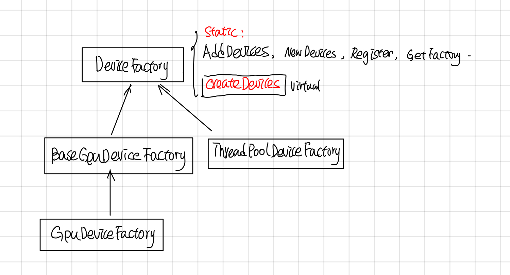
DeviceFactory包含了一些静态函数： AddDevices, NewDevices, Register, GetFactory, 和一个virutal CreateDevices。 NewDevices用于自动化测试，对外主要接口是AddDevices, Register负责device factory的注册, 这两者的调用关系如下：
DeviceFactory也采用了static registor的方法，自动注册了DeviceFactory,
//device_type, DeviceFactoryClass, Prority
REGISTER_LOCAL_DEVICE_FACTORY("CPU", ThreadPoolDeviceFactory, 60);
REGISTER_LOCAL_DEVICE_FACTORY("CPU", GPUCompatibleCPUDeviceFactory, 70);
REGISTER_LOCAL_DEVICE_FACTORY("GPU", GPUDeviceFactory, 210);
这个宏展开后是声明了一个Registrar的 static var, 在它的构造函数中会去调用DeviceFactory的Register注册Factory， 而Register函数最后会把Factory 加入到static device_factories中。
template <class Factory>
class Registrar {
public:
explicit Registrar(const string& device_type, int priority = 50) {
DeviceFactory::Register(device_type, new Factory(), priority);
}
}
在创建一个DirectSesion, 或者GrpServer::Init(每个worker都会起一个GrpcServer)的时候，会调用AddDevices获取worker上的devices.
tensorflow model optimize
将keras模型导出为tf frozen graph
frozen keras model
将keras的h5文件转换为tensorflow的pb文件, 这里面使用了 convert_variables_to_constants将模型中的变量都convert成了常量（方便后续采用quantilize或者tensorrt， 对模型推断部分做进一步的优化）
import keras
from keras.layers.core import K
import tensorflow as tf
def frozen_keras_model(keras_model_path, output_node_names, export_path):
output_node_namess = output_nodes.split(",")
model = keras.models.load_model(keras_model_path)
print("the model output nodes is {}".format(model.outputs))
with K.get_session() as sess:
output_graph_def = tf.graph_util.convert_variables_to_constants(
sess,
tf.get_default_graph().as_graph_def(),
output_nodes_names,
variable_names_blacklist=['global_step']
)
with tf.gfile.Gfile(export_path, "wb") as f:
f.write(output_graph_def.SerializeToString())
将global_step放到variable_names_blacklist是因为2中的bug.
variable_names_blacklist=['global_step']
可以通过print model.outputs来查看keras的输出节点，可以通过tensorboard来看keras模型，然后找到最后的输出节点。一般keras模型的输出节点有好多个（比如训练用的之类的)，预测输出节点为其中的一个。
使用tensorboard展示keras model对应的graph
首先使用tf summary创建相应的log
def keras_model_graph(keras_model_path, log_dir):
model = keras.model.load_model(keras_model_path)
with K.get_session() as sess:
train_writer = tf.summary.FileWriter(log_dir)
train_writer.add_graph(sess.graph)
启动tensorboard
$tensorboard --log_dir logdir
参考文献
使用dataset iterator 优化keras model预测的吞吐量
predict_on_generator
现在做的项目，需要在短时间内一次性预测一组大量的图片，刚开始的时候，采用了keras的predict_on_generator和Sequnce，速度比一个个feed dict的形式快了不少, 但是吞吐量还是没达到要求，感觉还有优化的地方。
class BatchSequnce(Sequence):
def __len__(self):
# 返回batch总个数
return self.batch_count
def __getitem__(self, idx):
#返回一个batch的数据
#这里可能会做一些数据预处理的工作，比如将图片从文件中加载到内存中然后做特征预处理
pass
model = keras.load_model(model_path)
generator = BatchSequnce(....)
ret = model.predict_generator(
generator=generator,
steps=None,
workers=10,
verbose=True,
)
Dataset
经分析, GPU每次都要等 BatchSequnce的__getitem___处理完之后，才能fetch到数据，如果__getitem__做了比较耗时间的操作的话，会让GPU一直在等待, 而且GPU在处理每个Batch数据的时候，都要等一次, tensorflow的Prefech感觉可以缓解这个问题，后来尝试了下，所消耗的时间优化到了以前的70%左右。
使用iterator 改造keras模型
-
首先采用将keras模型导出为tf frozen graph中的方式，将Keras的h5模型转换成tensorflow的pb文件。
-
使用
tf.data.Iterator.from_structure(可重新初始化迭代器可以通过多个不同的 Dataset 对象进行初始)的形式, 声明iterator的输出dtype和TensorShape, -
调用
tf.import_graph_def导入模型, 导入的时候，使用input_map将placeholde,比如"input"替换成Dataset的itereator next_element
这部分代码如下
def load_model(self, sess, frozen_model_file):
with tf.name_scope("dataset"):
iterator = tf.data.Iterator.from_structure(
tf.float32,
tf.TensorShape([self.batch_size, 450, 450, 3]))
next_element = iterator.get_next()
next_element = tf.convert_to_tensor(next_element, tf.float32)
with tf.gfile.GFile(frozen_model_file, "rb") as f:
graph_def = tf.GraphDef()
graph_def.ParseFromString(f.read())
tf.import_graph_def(
graph_def,
name="",
input_map={"input_1:0": next_element})
output_op_name = "y"
output_op = sess.graph.get_operation_by_name(output_op_name).outputs[0]
return iterator, output_op
设计DataSet
这里面需要注意的时候, 真正的map函数需要采用py_func包一层, 同事指定py_func的输出tensor shape, 这里的num_map_parall一般取cpu的个数.
class DataSetFactory(object):
def make_dataset(self):
def generator():
#返回要处理的文件路径, 或者坐标等
yield [x, y, w, h]
output_types = (tf.float32)
output_shapes = (tf.TensorShape([4]))
ds = tf.data.Dataset.from_generator(
generator,
output_types,
output_shapes=output_shapes)
ds = ds.map(lambda region: self.map_func(region), num_map_parall=80)
ds = ds.prefetch(buffer_size=self.batch_size * 256)
ds = ds.batch(self.batch_size)
ds = ds.prefetch(buffer_size=self.batch_size * 10)
return ds
def map_func(self, region):
def do_map(region):
# 加载图片和预处理
return img_data
# 这里采用了py_func，可以执行任意的Python函数，同时需要后面通过reshape的方式设置
# image_data的shape。
img_data = tf.py_func(do_map, [region], [tf.float64])
img_data = tf.reshape(img_data, [450, 450, 3])
img_data = tf.cast(img_data, tf.float32)
return image_data
prefetch_to_device
tensorflow 后来加了prefetch_to_device, 经测试可以提高5%左右的效率吧,但是和structure iterator初始化的时候有冲突，因此这个地方把它去掉了。
# 由于prefech_to_device必须是dataset的最后一个处理单元，
# structure iterator用这个ds初始化的时候会有问题，
# 因此这个地方将prefetch_to_gpu注释掉了
# gpu_prefetch = tf.contrib.data.prefetch_to_device(
# "/device:GPU:0",
# buffer_size=self.batch_size * 10)
# ds = ds.apply(gpu_prefetch)
使用dataset初始化iterator
def init_iterator(self, dataset):
# 这里的output_op就是load_model时返回的iterator
init_iterator_op = self.iterator.make_initializer(dataset)
self.sess.run(init_iterator_op)
def predict(self):
# 这里的output_op就是load_model时返回的output_op
while True:
outputs = self.sess.run(self.output_op)
统计gpu,cpu利用率脚本
#!/bin/bash
start=$(date +%s)
while [ 1 ]
do
cpu=$(awk -v a="$(awk '/cpu /{print $2+$4,$2+$4+$5}' /proc/stat; sleep 1)" '/cpu /{split(a,b," "); print 100*($2+$4-b[1])/($2+$4+$5-b[2])}' /proc/stat)
seconds=$(expr $(date +%s) - $start)
gpu_util=$(nvidia-smi --query-gpu=utilization.gpu --format=csv,noheader,nounits)
echo "$seconds, $cpu, $gpu_util"
#sleep 1
done
pthread
Pthread primer 笔记
进程和线程
在kernel中process的context
- cpu相关：program counter pointer, stack top pointer, cpu general registers, sates.
- 内存：memory map
- user: uid, gid, euid, egid, cwd.
- 信号: signal dispatch table
- File: file descriptors
thread的context data
- cpu相关：program counter pointer, stack top pointer, cpu general registers, sates.
- 内存相关: stack

线程的stack是分配在process的heap上的
//设置和获取线程的stack address
include <pthread.h>
int pthread_attr_setstack(pthread_attr_t *attr, void* stackaddr, size_t stacksize);
int pthread_attr_getstack(const pthread_attr_t* attr, void** stackaddr, size_t* stacksize);
整个进程只有一份signal dispatch table
所以signal 中断的时候，说不准会中断到那个thread里面，需要加signal mask来处理。
使用thread的好处
context switch: process的上下文切换比thread的context switch 耗时间.memory share: thread之间的通信，共享process的内存，file等资源比process之间的通信，share内存方便.
线程调度和生命周期
线程调度
线程有两种调度方式，一种是完全在user space, 由thread库做调度，优点是省了system call 从而省下了从user space 到kernel space的切换, 比较快，缺点是，有一个线程挂在IO上后，整个process都会被挂起.(可以把block的system call 改成nonblock的，使用asyc io来解决这个问题).
另外一种是kernel 实现的light weight process(lwp), lwp避免了整个线程被挂起的缺点，但是需要从user space 到kernel space的切换, 比完全user space实现的线程慢一点。
现实中这两种的实现的方式可以混合起来， 混合方式如下：
- 多个线程对应一个lwp
- 一个线程对应一个lwp
- 多个线程对应多个lwp
在pthread 中可以这么设置调度的属性:
//pthread中设置调度scope
//PTHREAD_SCOPE_SYSTEM 表示system 全局的， PTHREAD_SCOPE_PROCESS 表示process scope的。
pthread_attr_t attr;
pthread_attr_init(&attr);
pthread_setscope(&atttr, PTHREAD_SCOPE_SYSTEM);
pthread_create(&tid, &attr, foo, NULL);
影响线程调度的一些属性
- scope: PTHREAD_SCOPE_PROCESS, PTHREAD_SCOPE_GLOBAL
- policy: SCHED_RR, SCHED_FIFO, SCHED_OTHER
- priority
- inheritance
线程状态以及状态之间的迁移关系如下图：

四种running中的线程被切出去的状况
- synchronization 线程require lock的失败被挂在lock的sleep queue上。
- preemption 被抢占了，T1在运行的时候，一个更高优先级的线程T2到了runnable的状态, T1会被T2抢占了。
- yielding. 线程T1主动调用sched_yield, 如果有和T1优先权一样的T2线程，就切换到T2线程，如果没有，T1就接着运行。
- time-slicing. T1的时间片用完了，和T1有同样优先权的T2接着运行。
创建和退出线程
//create
int pthread_create(pthread_t* thread, const pthread_attr_t* attr, void*(* start_routine)(void*), void* arg);
//exit
void pthread_exit(status);
线程的返回值，一种是函数执行结束后，直接return的值，另外一种是pthread_exit(status)这个的返回值。
join: 等待线程执行结束
join之后线程会处于阻塞状态直到等待的线程T1执行完毕，join之后t1线程的相关内存会被清理掉，所以说一个子线程只能被join一次.
设置线程的属性为joinable
pthread_t thread_id;
pthread_attr_t attr;
pthread_attr_init(&attr);
pthread_attr_setdetachstate(&attr, PTHREAD_CREATE_JOINABLE);
pthread_create(&thread_id, &attr, work, (void*)arg);
阻塞等待线程的执行结果，获取线程的返回结果
//等待t1线程执行结束, exit_status 是子线程的返回值.
pthread_join(t1, &exit_status)
joinable线程和detehced线程的区别是线程结束的时候，资源(线程对应的标识符pthread_t, 线程返回信息)该怎么释放.
对于joinable线程t1, 只有当其他线程对t1调用了pthread_join之后, 线程t1才会释放所占用的资源, 否则 会进入类似于进程的zombile状态，这些资源不会被会回收掉.
使用信号量 等待线程执行结束
使用信号量等待一堆子线程执行结束, 在主线程里面调用thread_signle_barrier, 然后子线程结束的时候调用SEM_POST(barrier)
void thread_signle_barrier(sem_t* barrier, int count){
while( count > 0) {
SEM_WAIT(barrier);
count--;
}
}
detach
如果想要t1线程执行结束收系统自动回收t1的资源, 而不是通过调用pthread_join回收资源(会阻塞线程), 我们可以将线程设置为deteched, 有三种方式可以设置线程为deteched.
- 创建线程时指定线程的 detach 属性: pthread_attr_setdetachstate(&attr, PTHREAD_CREATE_DETACHED);
- 通过在子线程中调用 pthread_detach(pthread_self());
- 在主线程中调用 pthread_detach(thread_id);(非阻塞, 执行完会立即会返回)
取消线程的执行
在pthread中可以通过pthread_cancel(t1)来取消线程t1的执行, 这个会设置线程t1的cancel state, 由线程t1在自己在cancel point 检查是否退出线程, 在退出线程的时候会执行cleanup stack中的函数(比如释放自己hold的锁). 一般会block的函数调用，比如sem_wait, pthread_cond_wait或者会block的系统调用前后检查check point.
如下代码段：
void cleanup_lock2(void* arg){
pthread_mutex_unlock((pthread_mutex_t*)arg)
}
void thread1_run(){
pthread_mutex_lock(&answer_lock);
pthread_cleanup_push(cleanup_lock2, (void*)&answer_lock);
while(!firest_thread_to_find_answer) {
pthread_cond_wait(&cvn, &answer_lock);
}
pthread_cleanup_pop(0)
}
也可以通过pthread_setcanceltype设置为异步取消PTHREAD_CANCEL_ASYNCHRONOUS，这样会给t1线程发送SIGCANCEL信号，t1线程在信号处理函数中结束自己的执行。
Signal 信号处理
Linux 多线程应用中，每个线程可以通过调用 pthread_sigmask() 设置本线程的信号掩码, pthread_kill像某个线程发送signal.
signal handler 异步的方式处理信号
多线程处理signal时候需要注意事项
- 信号处理函数尽量只执行简单的操作，譬如只是设置一个外部变量，其它复杂的操作留在信号处理函数之外执行；
- errno 是线程安全，即每个线程有自己的 errno，但不是异步信号安全。如果信号处理函数比较复杂，且调用了可能会改变 errno 值的库函数，必须考虑在信号处理函数开始时保存、结束的时候恢复被中断线程的 errno 值；
- 信号处理函数只能调用可以重入的 C 库函数(只能调用async safe 的函数)；譬如不能调用 malloc（），free（）以及标准 I/O 库函数等；
- 信号处理函数如果需要访问全局变量，在定义此全局变量时须将其声明为 volatile，以避免编译器不恰当的优化
sigwait, 同步串行方式
等待信号的到来，以串行的方式从信号队列中取出信号进行处理.
void signal_hanlder_thread() {
sigemptyset(&waitset);
sigaddset(&waitset, SIGRTMIN);
sigaddset(&waitset, SIGUSR1);
while (1) {
//串行的方式处理信号
rc = sigwaitinfo(&waitset, &info);
if (rc != -1) {
sig_handler(info.si_signo);
}
}
Thread local storage
TLS是只在线程自己可见的全局数据, 而不必担心别的线程会改变这个全局数据, 比如要实现每个线程对db的connection单例模式的话，可以把线程的全局connection单例变量存在TLS中。 在使用中有两种方式，一个是pthread_key的方式，另外一个是使用gcc提供的__thread.
Thread Specific Data
pthread_keycreate
pthread_setspecific
pthread_getspecific
__thread
__thread是gcc提内置的attr, 它只能用于修饰POD类型，不能修饰class类型，因为它无法自动调用构造函数和析构函数。 __thread每个线程都有一份独立的实体，线程之间相互不影响.
int g_var; // 全局变量
__thread int t_var; //thread变量
线程的同步
atomic 指令
线程执行的时候，在两个指令之间，随时都可能会被抢占掉, 所以需要一个atomic的指令来避免这种状况.
atomic test and set style: ldstub
ldstub (load and store unsigned byte) 就是一个atomic test and set的指令, 从内存中载入一个unsigned字节，并且把内存中那个字节设置为1.
一个mutex lock的实现
try_agin: ldstub address -> register
compare register, 0
branch_equal got_it
call go_to_sleep
jump try_again
got_it: return
从这儿可以看到，线程从go_to_sleep返回之后，需要去重新获取lock, 如果获取失败，就接着go_to_sleep.
basic primitive
所有线程之前shared的数据需要被用lock保护起来，比如全局数据，传入到另外一个线程的Data struct， 还有static数据。
mutex lock(互斥锁)
线程获取mutex lock失败以后，会被放到mutex对应的sleep队列中。
pthread_mutex_lock
//critical section
pthread_mutex_unlock
另外一种非阻塞的获取锁的方法pthread_mutex_trylock 如果获取锁成功返回0，否则返回EBUSY.
semaphores(信号量)
信号量机制用于协调多个资源的使用(比如一个队列或者缓冲区)，semaphores的值表示可用资源的数量(队列中可用资源的个数)。常用于解决生产者和消费者问题.
// 初始化
int sem_init(sem_t *sem, int pshared, unsigned int val);
// 没有可用的信号量就等待，否则
int sem_wait(sem_t *sem);
// 释放一个信号量，信号量的值加1
int sem_post(sem_t *sem);
信号量处理流程

生产者消费者问题, 假设队列的长度是20:

#include <semaphore.h>
//shared global vars
sem_t sem_producer;
sem_t sem_consumer;
//list
void producer(){
while(1){
sem_wait(sem_consumer);
pthread_mutex_lock(list_lock);
add(list);
pthread_mutex_unlock(list_lock);
sem_post(sem_producer);
}
}
void consumer(){
while(1) {
sem_wait(sem_producer);
pthread_mutex_lock(list_lock);
consume(list);
pthread_mutex_unlock(list_lock);
sem_post(sem_consumer);
}
}
void main(){
sem_init(&sem_producer, 0);
sem_init(&sem_consumer, 20);
pthread_t producer_tid;
pthread_t consumer_tid;
pthread_create(&producer_tid, nullptr, producer, nullptr);
pthread_create(&consumer_tid, nullptr, consumer, nullptr);
}
condition var (条件变量)
condition var 的流程, condition var 访问需要用个mutex lock保护起来, condition判断失败之后，会unlock 保护condition var 的lock, 然后进入sleep, 之后被唤醒的时候，会再次去获取condition var的lock。
<code>
// 初始化
pthread_cond_t cond = PTHREAD_COND_INITIALIZER;
// 动态初始化
int pthread_cond_init(pthread_cond_t* restrict cond, const pthread_condattr_t* restrict attr);
//销毁
int pthread_cond_destroy(pthread_cond_t* cond);
//等待
int pthread_cond_wait( pthread_cond_t* restrict cond, pthread_mutex_t* restrict mutex );
int pthread_cond_timedwait( pthread_cond_t* restrict cond, pthread_mutex_t* restrict mutex, const struct timespec* restrict abstime );
// 通知
// singal 函数一次只能唤醒一个线程, 而 broadcast 会唤醒所有在当前条件变量下等待的线程.
int pthread_cond_broadcast(pthread_cond_t* cond);
int pthread_cond_signal(pthread_cond_t* cond);
wait for condition
// safely examine the condition, prevent other threads from
// altering it
pthread_mutex_lock (&lock);
while ( SOME-CONDITION is false)
pthread_cond_wait (&cond, &lock);
// Do whatever you need to do when condition becomes true
do_stuff();
pthread_mutex_unlock (&lock);
signal condition
// ensure we have exclusive access to whathever comprises the condition
pthread_mutex_lock (&lock);
ALTER-CONDITION
// Wakeup at least one of the threads that are waiting on the condition (if any)
pthread_cond_signal (&cond);
// allow others to proceed
pthread_mutex_unlock (&lock)
read write lock (读写锁)
在某个时间内，多个线程可以同时获得读锁, 如果已经有线程获得了读锁，那么尝试获取写锁的将被block, 如果已经有线程获取了读锁，那么其他线程的尝试获取读锁或者写锁将会被block.

pthread_rwlock_t rwlock;
int pthread_rwlock_init(pthread_rwlock_t* restrict rwlock, const pthread_rwlockattr_t * restrict attr);
int pthread_rwlock_destroy(pthread_rwlock_t* rwlock);
// 获取读锁
int pthread_rwlock_rdlock(pthread_rwlock_t* rwlock);
// 获取写锁
int pthread_rwlock_wrlock(pthread_rwlock_t* rwlock);
// 释放锁
int pthread_rwlock_unlock(pthread_rwlock_t* rwlock);
Spin lock (自旋锁)
多次trylock, 如果失败了再block, 它的出发点是trylock这个指令的时间很短（比如2us)然后mutex block一次可能需要42us,所以它先尝试几次, 如果在这几us内，lock被释放了，那么能够成功的获取锁了。
spin_lock(mutex_t* m) {
for(int i = 0; i < SPIN_COUNT; i++) {
if (pthread_mutex_trylock(m) != EBUSY) {
return;
}
}
pthread_mutex_lock(m);
return;
}
Adaptive Spin lock
在很多kernel里面使用的，kernel先看拥有锁的线程在不在running(如果在跑的话，那么线程可能短时间内会释放这个锁，所以值得spin几次去尝试下), 如果不在running 状态的话，就直接去require lock了,然后线程会被block.
使用spin lock的时候，需要好好的评估下到底值不值得，就是critical section hold住lock的时间会不会很长。。如果一般很短的话，值得用spin lock，否则的话用spin lock反而浪费时间。
Barriers
pthread_barrier_t mybarrier;
//初始化
pthread_barrier_init(&mybarrier, NULL, THREAD_COUNT + 1);
pthread_barrier_destroy(&mybarrier);
pthread_barrier_wait(&mybarrier);
等待最后一个线程达到barrier点。

附录
- linux中的process的virutal memory layout 参见Processes and Memory Management

参考
Glibc的pthread实现代码研读 1: 线程的生命周期
本文主要包含pthread线程在linux上的创建，执行，exit, detach, join, cancel, thread local storage。
pthread_t
struct pthread定义在nptl/descr.h中, 这边抽几组主要的field来说明下(这里为了方便描述，对field在struct的顺序做了重新的编排)。
首先是创建完线程之后，系统给的id和各种flag attribute.
/* Flags. Including those copied from the thread attribute. */
int flags;
pid_t tid;
/* Lock to synchronize access to the descriptor. */
int lock;
然后最显而易见的是, 线程要执行的函数指针，函数参数以及函数执行的结果, 这几个字段会在线程的入口start_thread中用到。对于result字段: pthread_join(t1, &status), 这个会等待线程t1执行结束，然后把结果放到status中。
//保存线程返回结果
void *result;
// 线程执行的函数和参数
void *(*start_routine) (void *);
void *arg;
然后一些field用于处理下面这几种异常情况: 线程如果抛异常了，线程调用pthread_exit提前exit了，线程被其它线程pthread_cancel了。
// 线程cancel的状态
int cancelhandling;
// 线程被cancel的时候，处理cleanup callback和cleanup jmp
struct _pthread_cleanup_buffer* cleanup;
struct pthread_unwind_buf* cleanup_jmp_buf;
/* Machine-specific unwind info. */
struct _Unwind_Exception exc;
标明线程是被join的还是已经deteched字段, 这个字段涉及到线程的pthread struct该什么时候释放。
struct pthread* joinid;
#define IS_DETACHED(pd) ((pd)->joinid == (pd))
stack相关的field, 在ALLOCATE_STACK和回收statck的时候会用到，由于pthread的这个struct也是放在stack上的，因此需要一些参数记录pthread的offset, user_statck表示是否是由用户提供的stack。
/* True if the user provided the stack. */
bool user_stack;
void *stackblock;
size_t stackblock_size;
/* Size of the included guard area. */
size_t guardsize;
/* This is what the user specified and what we will report. */
size_t reported_guardsize;
thread specific data相关的字段
// 用于thread specific data, thread local storage
struct pthread_key_data
{
uintptr_t seq;
void* data;
} specific_1stblock[PTHREAD_KEY_2NDLEVEL_SIZE];
struct pthread_key_data* specific[PTHREAD_KEY_1STLEVEL_SIZE];
最后调度策略和调度参数相关的字段，在线程create的时候，会调用sched_setaffinity， sched_setscheduler让系统设置这些参数。
// 调度策略和调度参数
struct sched_param schedparam;
int schedpolicy;
pthread struct 的alloc和free
nptl/allocatestatck.c 中的allocate_stack和__deallocate_stack负责alloc和free pd struct。如果用的是系统分配的stack话， pthread有个stack list，当alloc的时候，从这个stack list中取出一个，然后在free的时候，把这个stack放回到stack list中。
这就导致了一个问题, pthread_t 并不适合作为线程的标识符，比如下面两个线程的pthread_t的地址是一样的(参考自Linux 多线程服务端编程: 4.3节):
int main() {
pthread_t t1, t2;
pthread_create(&t1, NULL, threadFunc, NULL);
printf("%lx\n", t1);
pthread_join(t1, NULL);
pthread_create(&t2, NULL, threadFunc, NULL);
printf("%lx\n", t2);
pthread_join(t2, NULL);
}
pthread_create
pthread create 首先分配线程的栈，并在这个栈上划出一片内存给pthread struct, 然后调syscall clone(2) 创建一个线程，创建的新的线程会从START_THREAD_DEFF 这个入口开始执行起来，最后线程的执行结果保存在pd->result里面， 用户可以通过pthread_attr_setstack来指定线程stack的内存，也可以直接使用系统的内存。
 分配stack, 使用用户提供的stack或者系统分配一个stack(pd 这个struct也存放在stack里面了)
分配stack, 使用用户提供的stack或者系统分配一个stack(pd 这个struct也存放在stack里面了)
ALLOCATE_STACK(iattr, &pd)
create_thread 调用linux系统接口clone创建线程, 如果线程要指定在某个CPU上跑的话，调用sched_setaffinity设置好cpuset, 最后何止好调度策略和调度参数。
ARCH_CLONE(&start_thread, STACK_VARIABLES_ARGS, clone_flags, pd, &pd->tid, tp, &pd->tid)
INTERNAL_SYSCALL(sched_setaffinity, err, 3, pd->tid, attr->cpusetsize, attr->cpuset)
INTERNAL_SYSCALL(sched_setscheduler, err, 3, pd->tid, pd->schedpolicy, &pd->schedparam)
其中clone 的flags如下：
const int clone_flags = (CLONE_VM | CLONE_FS | CLONE_FILES | CLONE_SYSVSEM
| CLONE_SIGHAND | CLONE_THREAD
| CLONE_SETTLS | CLONE_PARENT_SETTID
| CLONE_CHILD_CLEARTID
| 0);
CLONE_THREAD, 标明是创建一个线程，和创建者同一个group, 同一个parent。
STACK_VARIABLES_ARGS对应着上一步ALLOCATE_STACK分配好的内存地址, 这块内存会作为新的线程的stack来用。
clone中的的start_thread就是线程的entry_point, 这个函数定义在nptl/pthread_create.c里面 START_THREAD_DEFF, 这个函数就是新创建的线程的入口。
start thread
start thread是线程的入口， 在跑用户函数之前，会设置一个jmp point, 之后等线程执行结束的时候(调用pthread_exit, 或者线程被cancel掉的时候)，会longjump 回到这个函数, 接着做线程执行完的清理工作。
如果线程是Deteched， 那么线程的pd结构就会被释放掉(因为pthread返回的status指针是保存在pd->result这个里面的)，否则就要等pthread_join完之后释放掉。
最后线程exit_thread之后，会把pd中的tid设置为0，这样就可以唤醒等待join该线程结束的线程。
- 设置好unwind buffer, do cancel的时候可以跳回来
int not_first_call;
not_first_call = setjmp ((struct __jmp_buf_tag* ) unwind_buf.cancel_jmp_buf);
if (__glibc_likely (! not_first_call))
{
THREAD_SETMEM (pd, cleanup_jmp_buf, &unwind_buf);
setjmp和longjmp是非局部跳转函数, 它可以在在栈上跳过若干调用帧，返回到当前函数调用路径上的某一个函数中, 若直接调用则返回0，若从longjmp调用返回则返回非0值的longjmp中的val值。之后的do_cancel可能会longjmp到这个地方。
- 调用用户提供的函数, 结果存在
pd->result中
#ifdef CALL_THREAD_FCT
THREAD_SETMEM (pd, result, CALL_THREAD_FCT (pd));
#else
THREAD_SETMEM (pd, result, pd->start_routine (pd->arg));
#endif
- 做一些清理工作，清理TLS, 标记stack为可复用状态，如果线程是detached, 则释放pd struct的内存, 否则要在pthread_join里面释放这个pb struct, 如果一个线程既不是deteched，也没有线程在pthread_join等待他，这个pb struct就不会被释放，进入一个类似于zombile的状态。
__call_tls_dtors ();
/* Run the destructor for the thread-local data. */
__nptl_deallocate_tsd ();
/* Clean up any state libc stored in thread-local variables. */
__libc_thread_freeres ();
if (IS_DETACHED (pd))
__free_tcb (pd);
// mark stack resuable
char *sp = CURRENT_STACK_FRAME;
size_t freesize = (sp - (char *) pd->stackblock) & ~pagesize_m1;
assert (freesize < pd->stackblock_size);
if (freesize > PTHREAD_STACK_MIN)
__madvise (pd->stackblock, freesize - PTHREAD_STACK_MIN, MADV_DONTNEED);
// other code
__exit_thread ();
pthread_exit
猜测pthread_exit 的do_cancel的unwind会调用pthread_cleanup_push中注册的cleaup函数，最后会longjmp回到start_thread里面的setjmp那块，继续执行线程结束后的清理工作。
__pthread_exit (void* value)
{
THREAD_SETMEM (THREAD_SELF, result, value);
__do_cancel ();
}
do_cancel定义如下:
__do_cancel (void)
{
struct pthread* self = THREAD_SELF;
THREAD_ATOMIC_BIT_SET (self, cancelhandling, EXITING_BIT);
__pthread_unwind ((__ pthread_unwind_buf_t*)
THREAD_GETMEM (self, cleanup_jmp_buf));
}
pthread_join
pthread_join(t1, &result) 线程会调用lll_wait_tid等到t1执行结束，然后从t1的pd->result获取线程返回的结果, 返回给status，最后释放线程t1对应的pd sturct.
- 检查是否有死锁, 避免等待自己，以及正在被cancel的线程，
if ((pd == self
|| (self->joinid == pd
&& (pd->cancelhandling
& (CANCELING_BITMASK | CANCELED_BITMASK | EXITING_BITMASK
| TERMINATED_BITMASK)) == 0))
&& !CANCEL_ENABLED_AND_CANCELED (self->cancelhandling))
result = EDEADLK;
- 设置
t1->joinid = self;
/* Wait for the thread to finish. If it is already locked something
is wrong. There can only be one waiter. */
else if (__builtin_expect (atomic_compare_and_exchange_bool_acq (&pd->joinid,
self,
NULL), 0))
/* There is already somebody waiting for the thread. */
result = EINVAL;
- 等待t1线程执行结束, 这里的lll_wait_tid 最后会去调用linux提供的futex, 会被挂起来，一直等到t1的tid变为0。
/* Wait for the child. */
lll_wait_tid (pd->tid);
- free t1线程的pd struct
pd->tid = -1;
/* Store the return value if the caller is interested. */
if (thread_return != NULL)
*thread_return = pd->result;
/* Free the TCB. */
__free_tcb (pd);
pthread_detach
标记线程为detached, 把pd的jionid改为自己。
int result = 0;
/* Mark the thread as detached. */
if (atomic_compare_and_exchange_bool_acq (&pd->joinid, pd, NULL))
{
if (IS_DETACHED (pd))
result = EINVAL;
}
else if ((pd->cancelhandling & EXITING_BITMASK) != 0)
__free_tcb (pd);
return result;
pthread_cancel
pthread_cancel 只是把pd->cancelhandling的状态记为CANCLEING_BITMASK|CANCELED_BITMASK。
do{
oldval = pd->cancelhandling;
newval = oldval | CANCELING_BITMASK | CANCELED_BITMASK;
//other code
} while (atomic_compare_and_exchange_bool_acq (&pd->cancelhandling, newval,
oldval);
然后在pthread_testcancel的时候，才真正的调用do_cancel去cancel thread.
//pthread_testcancel --> CANCELLATION_P
if (CANCEL_ENABLED_AND_CANCELED (cancelhandling)) \
{ \
THREAD_SETMEM (self, result, PTHREAD_CANCELED); \
__do_cancel (); \
}
或者一些会check cancel point的调用比如pthread_cond_wait里面，会去检查这个标记，
pthread_cond_wait -->futex_wait_cancelable --> pthread_enable_asynccancel --> __do_cancel
futex_reltimed_wait_cancelable --> pthread_enable_asynccancel --> __do_cancel
sem_wait_common -> futex_abstimed_wait_cancelable --> pthread_enable_asynccancel --> __do_cancel
singal handle
Glibc的pthread实现代码研读 2: 线程同步
第二部分主要讲述pthread中的线程的同步方法包括mutex, sem, condition var, rwlock, barrier的实现，pthread使用了linux的futex来实现这些同步方法。
futex
pthread中的locks通过linux的futex(faster user space locking)实现, lock放在process之间的共享内存中, pthread通过atomic的指令来对这个lock进行dec, inc, load and test 等操作, 如果有竞态冲突的时候获取锁失败的时候，才会去sys call 调用linux底层的do_futex, 底层把线程放到futex对应的wait队列里面, 然后挂起线程等待被唤醒。
由于只有竞态冲突的时候才需要syscall, 其他情况都不需要，因此节省了很多sys call，这样比较快。

Mutex
xchgl 这个是atomic操作吧，失败了回去调用do_futex, flag 是FUTEX_WAIT
phtread_mutex_lock --> LL_MUTEX_LOCK --> ll_lock --> lll_lock_wait|lll_lock_wait_private --> xchgl
Sem
Condition var
Read write lock
Barrier
Yew
doc overview

Context
VNode
Scope

scheduler
wasm_bindgen
Callback
Axum
Router
Router数据结构

路由注册和分发
handlers
trait Handler
In axum a "handler" is an async function that accepts zero or more "extractors" as arguments and returns something that can be converted into a response.

extract: FromRequest
FromRequest用于将requestPart解析成各种类型，然后传个handler
#![allow(unused)] fn main() { #[async_trait] pub trait FromRequest<B = crate::body::Body>: Sized { /// If the extractor fails it'll use this "rejection" type. A rejection is /// a kind of error that can be converted into a response. type Rejection: IntoResponse; /// Perform the extraction. async fn from_request(req: &mut RequestParts<B>) -> Result<Self, Self::Rejection>; } }
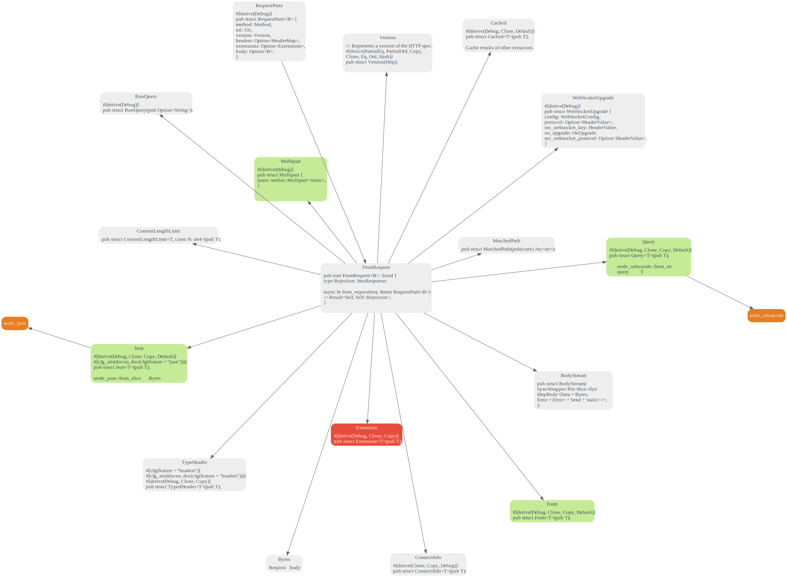
比较常用的有Json, Query, MatchedPath
Json
Json会用serde_json::from_slice将request body bytes解析为对应的类型，用法示例如下：
#![allow(unused)] fn main() { #[derive(Deserialize)] struct CreateUser { email: String, password: String, } async fn create_user(extract::Json(payload): extract::Json<CreateUser>) { // payload is a `CreateUser` } let app = Router::new().route("/users", post(create_user)); async { axum::Server::bind(&"".parse().unwrap()).serve(app.into_make_service()).await.unwrap(); }; }
Query
Query会使用serde_urlencoded将query解析为相应的param, 用法示例如下:
#![allow(unused)] fn main() { fn app() -> Router { Router::new().route("/", get(handler)) } async fn handler(Query(params): Query<Params>) -> String { format!("{:?}", params) } /// See the tests below for which combinations of `foo` and `bar` result in /// which deserializations. /// /// This example only shows one possible way to do this. [`serde_with`] provides /// another way. Use which ever method works best for you. /// /// [`serde_with`]: https://docs.rs/serde_with/1.11.0/serde_with/rust/string_empty_as_none/index.html #[derive(Debug, Deserialize)] #[allow(dead_code)] struct Params { #[serde(default, deserialize_with = "empty_string_as_none")] foo: Option<i32>, bar: Option<String>, } }
Multipart: 文件上传
使用表单获取上传文件，其中form的enctype='multipart/form-data', 并
使用ContentLengthLimit 来限制文件大小。
#![allow(unused)] fn main() { async fn accept_form( ContentLengthLimit(mut multipart): ContentLengthLimit< Multipart, { 250 * 1024 * 1024 /* 250mb */ }, >, ) { while let Some(field) = multipart.next_field().await.unwrap() { let name = field.name().unwrap().to_string(); let data = field.bytes().await.unwrap(); println!("Length of `{}` is {} bytes", name, data.len()); } } async fn show_form() -> Html<&'static str> { Html( r#" <!doctype html> <html> <head></head> <body> <form action="/" method="post" enctype="multipart/form-data"> <label> Upload file: <input type="file" name="file" multiple> </label> <input type="submit" value="Upload files"> </form> </body> </html> "#, ) } }
tower.Layer
Layer 用来写中间件, Axum中提供了HandlerError中间件，可以指定一个函数，将handler的错误 转换为对应的response。ExtractorMiddleware可以将extractor转成middleware，如果extract 成功则继续执行，否则就提前返回。
#![allow(unused)] fn main() { pub trait Layer<S> { /// The wrapped service type Service; /// Wrap the given service with the middleware, returning a new service /// that has been decorated with the middleware. fn layer(&self, inner: S) -> Self::Service; } }
ExtractorMiddleware
#![allow(unused)] fn main() { #[async_trait::async_trait] impl<B> FromRequest<B> for RequireAuth where B: Send, { type Rejection = StatusCode; async fn from_request(req: &mut RequestParts<B>) -> Result<Self, Self::Rejection> { if let Some(auth) = req .headers() .expect("headers already extracted") .get("authorization") .and_then(|v| v.to_str().ok()) { if auth == "secret" { return Ok(Self); } } Err(StatusCode::UNAUTHORIZED) } } async fn handler() {} let app = Router::new().route( "/", get(handler.layer(extractor_middleware::<RequireAuth>())), ); }
HandleErrorLayer
HandleErrorLayer 可以使用闭包的函数将错误转换为相应的response，相应例子如下
问题：可以使用不同的HandlerErrorLayer堆在一起，每个处理自己相应类型的错误吗？ 还是需要在这个地方统一来处理？
#![allow(unused)] fn main() { let app = Router::new() .route("/todos", get(todos_index).post(todos_create)) .route("/todos/:id", patch(todos_update).delete(todos_delete)) // Add middleware to all routes .layer( ServiceBuilder::new() .layer(HandleErrorLayer::new(|error: BoxError| async move { if error.is::<tower::timeout::error::Elapsed>() { Ok(StatusCode::REQUEST_TIMEOUT) } else { Err(( StatusCode::INTERNAL_SERVER_ERROR, format!("Unhandled internal error: {}", error), )) } })) .timeout(Duration::from_secs(10)) .layer(TraceLayer::new_for_http()) .layer(AddExtensionLayer::new(db)) .into_inner(), ); }
Response
Extensions
#![allow(unused)] fn main() { /// A type map of protocol extensions. /// /// `Extensions` can be used by `Request` and `Response` to store /// extra data derived from the underlying protocol. #[derive(Default)] pub struct Extensions { // If extensions are never used, no need to carry around an empty HashMap. // That's 3 words. Instead, this is only 1 word. map: Option<Box<AnyMap>>, } }
http::extentions::Extensions::get方法，根据typeid 获取对应的type.
#![allow(unused)] fn main() { pub fn get<T: Send + Sync + 'static>(&self) -> Option<&T> { self.map .as_ref() .and_then(|map| map.get(&TypeId::of::<T>())) .and_then(|boxed| (&**boxed as &(dyn Any + 'static)).downcast_ref()) } }
Examples
Cookies
OAuth

Multipart

Hyper
make_service_fn
Server
tokio
Executor
Executor中主要有Executor, TypedExecutor, enter, DefaultExecutor, Park
-
Executor,TypedExecutor主要作用是spawn future，转换为相应的任务，然后去执行该任务，不断的poll future,直到future complete. -
DefaultExecutor作用，是将tokio::spawn的future转给当前默认的executor. -
enter用于阻止在当前executor context中，再start一个executor -
park是对线程block/unblock操作的抽象.
原文如下（摘自tokio-executor/src/lib.rs)
-
The [
Executor] trait spawns future object onto an executor. -
The [
TypedExecutor] trait spawns futures of a specific type onto an executor. This is used to be generic over executors that spawn futures that are eitherSendor!Sendor implement executors that apply to specific futures. -
[
enter] marks that the current thread is entering an execution context. This prevents a second executor from accidentally starting from within the context of one that is already running. -
[
DefaultExecutor] spawns tasks onto the default executor for the current context. -
[
Park] abstracts over blocking and unblocking the current thread.
Executor impl
实现Executor接口的主要有current thread，task executor, default executor还有thread pool的executor.
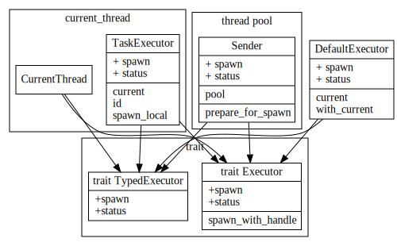
DefaultExecutor
DefaultExecutor 扮演了入口的角色，会将spawn调用转发给thread local storage var的Executor;

current thread
current thread executor 是单线程的executor。task spwan和execute是在同一线程上完成的。
代码中Entered和Borrow的作用是干啥的不太明白，感觉这块代码有点绕.
Entered和Borrow定义如下:
#![allow(unused)] fn main() { /// A `CurrentThread` instance bound to a supplied execution context. pub struct Entered<'a, P: Park> { executor: &'a mut CurrentThread<P>, } }
#![allow(unused)] fn main() { /// This is mostly split out to make the borrow checker happy. struct Borrow<'a, U> { id: u64, scheduler: &'a mut Scheduler<U>, num_futures: &'a atomic::AtomicUsize, } }

thread pool sender
thread pool的sender使用future创建相应的task, 然后调用pool的submit_external提交任务
#![allow(unused)] fn main() { fn spawn( &mut self, future: Pin<Box<dyn Future<Output = ()> + Send>>, ) -> Result<(), SpawnError> { self.prepare_for_spawn()?; // At this point, the pool has accepted the future, so schedule it for // execution. // Create a new task for the future let task = Arc::new(Task::new(future)); // Call `submit_external()` in order to place the task into the global // queue. This way all workers have equal chance of running this task, // which means IO handles will be assigned to reactors more evenly. self.pool.submit_external(task, &self.pool); Ok(()) } }

Executor setup
thread local var EXECUTOR的设置过程
#![allow(unused)] fn main() { thread_local! { /// Thread-local tracking the current executor static EXECUTOR: Cell<State> = Cell::new(State::Empty) } }

在调用tokio::spawn时，会通过DefaultExecutor调用相应的Thread local storage中设置好的Executor
#![allow(unused)] fn main() { //tokio-executor/src/global.rs pub fn spawn<T>(future: T) where T: Future<Output = ()> + Send + 'static, { DefaultExecutor::current().spawn(Box::pin(future)).unwrap() } }
#![allow(unused)] fn main() { //tokio-executor/src/global.rs impl DefaultExecutor { #[inline] fn with_current<F: FnOnce(&mut dyn Executor) -> R, R>(f: F) -> Option<R> { EXECUTOR.with( |current_executor| match current_executor.replace(State::Active) { State::Ready(executor_ptr) => { let executor = unsafe { &mut *executor_ptr }; let result = f(executor); current_executor.set(State::Ready(executor_ptr)); Some(result) } State::Empty | State::Active => None, }, ) } } }
park
park是对当前线程block和unblock操作的抽象, 和std的park/unpark操作来比，在线程被blocked的时候，可以去调用一些定制化的功能。
Park impl
Reactor Park
Reactor 相关数据结构如下,

Par接口的park/unpark操作主要依赖于mio的poll和SetReadness。
Thread pool default park
线程池的default park主要依赖于croess beam的park和unpark
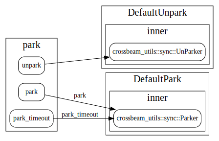
ParkThread
数据结构之间关系
接口调用关系

tokio thread pool
schedule
tokio 使用了crossbeam中的Queue, Stealer, Worker等来实现线程池，其中觉得有意思的地方时work stealing策略
每个task被分给worker的过程如下：有个pool.queue作为全局的task队列入口每次spawn task都会将task push到pool.queue中
worker run函数取task的逻辑如下：
- 从自己的worker队列中去取任务.
- 如果自己队列中没任务，则从全局队列中，获取一批任务。
- 如果全局队列中也没任务，则随机的从其他的worker中steal一批任务。
这样做的好处是，降低对全局队列的频繁加锁等操作，而且有steal机制，使得task可以比较均匀的被调度。
task spawn
task 从spawn到最后run的过程：

task wake
worker sleep
worker在sleep时候，会把自己push到pool的sleep_stack上, entry中的park/unpark负责线程的sleep和wake.
worker run
tokio driver
Driver 简单来说，就是io event事件触发后，找到相应等待的task, 然后调用预设好的回调函数.
tokio中事件驱动主要靠mio::poll, 在像mio::register中注册一个event时，会带上一个token(token是在tokio中生成的）, driver根据该token建立到SchduleIo的映射，event触发的时候，就会调用schedulIo中预先定义好的方法。
然后事件被触发的时候,mio会把这个token带过来。
task <-> mio event
task和mio event通过token 建立关系，回调函数waker通过过Context包装, 传递给future的poll函数，当future需要等待某个事件时候，就会把事件和context关联起来。然后等事件被触发了，就调用context中预先设置好的waker.

主要数据结构
reactor::inner中的io_dispatch表，用于记录事件token到ScheduleIO的一个映射关系.
#![allow(unused)] fn main() { //reactor.rs pub(super) struct Inner { /// The underlying system event queue. io: mio::Poll, /// ABA guard counter next_aba_guard: AtomicUsize, /// Dispatch slabs for I/O and futures events pub(super) io_dispatch: RwLock<Slab<ScheduledIo>>, /// Used to wake up the reactor from a call to `turn` wakeup: mio::SetReadiness, } }
ScheduledIo, 主要用于指向context
#![allow(unused)] fn main() { pub(super) struct ScheduledIo { aba_guard: usize, pub(super) readiness: AtomicUsize, pub(super) reader: AtomicWaker, pub(super) writer: AtomicWaker, } }
Context 中的waker则定义了如何唤醒task, 对于threadpool 会去调用Task::Schedule方法，而对于current thread, 则会去调用Node.Notify
context 注册过程
首先ctx会在task run时候，被创建，然后传递给future_poll, 经过层层的poll_ready 之类的，注册到Reactor::inner::io_dipatch表中
注册的key会在Reactor::inner::add_source计算出来，然后传递给mio的register函数。
然后mio的poll函数在事件发生时，会将该token带上，在Reactor::dispatch中根据token找到相应的contex waker, 调用对应的wake函数。
thread pool 中 ctx waker的创建
#![allow(unused)] fn main() { //threadpool/task/mod.rs pub(crate) fn run(me: &Arc<Task>, pool: &Arc<Pool>) -> Run { //... let waker = task::waker(Arc::new(Waker { task: me.clone(), pool: pool.clone(), })); let mut cx = Context::from_waker(&waker); //... } }
其中Waker定义如下, event经过dispatch 后, 最终会调用Task::Schedule.
#![allow(unused)] fn main() { // threadpool/waker.rs impl ArcWake for Waker { fn wake_by_ref(me: &Arc<Self>) { Task::schedule(&me.task, &me.pool); } } }
current thread中ctx waker的创建
#![allow(unused)] fn main() { pub fn block_on<F>(&mut self, mut future: F) -> F::Output where F: Future, { // Safety: we shadow the original `future`, so it will never move // again. let mut future = unsafe { Pin::new_unchecked(&mut future) }; let waker = self.executor.scheduler.waker(); let mut cx = Context::from_waker(&waker); // ... other code } }
event, token, scheduleIO
tokio中通过token将event和scheduleIO关联起来
token到ScheduleIO
在reactor::inner::add_source中, 会在io_dispatch表中先创建一个ScheduleIO， key为aba_guard, 使用aba_guard计算出一个token,
最后通过调用mio.register 将token和event关联起来, 这样就建立了ScheduleIO和event之间的关系.
#![allow(unused)] fn main() { // tokio-net/src/driver/reactor.rs pub(super) fn add_source(&self, source: &dyn Evented) -> io::Result<usize> { // Get an ABA guard value let aba_guard = self.next_aba_guard.fetch_add(1 << TOKEN_SHIFT, Relaxed); let key = { // Block to contain the write lock let mut io_dispatch = self.io_dispatch.write(); if io_dispatch.len() == MAX_SOURCES { return Err(io::Error::new( io::ErrorKind::Other, "reactor at max \ registered I/O resources", )); } io_dispatch.insert(ScheduledIo { aba_guard, readiness: AtomicUsize::new(0), reader: AtomicWaker::new(), writer: AtomicWaker::new(), }) }; let token = aba_guard | key; debug!("adding I/O source: {}", token); self.io.register( source, mio::Token(token), mio::Ready::all(), mio::PollOpt::edge(), )?; Ok(key) } }
ScheduledIo 到context,
主要在Registration::inner::register中完成.
#![allow(unused)] fn main() { pub(super) fn register(&self, token: usize, dir: Direction, w: Waker) { debug!("scheduling {:?} for: {}", dir, token); let io_dispatch = self.io_dispatch.read(); let sched = io_dispatch.get(token).unwrap(); let (waker, ready) = match dir { Direction::Read => (&sched.reader, !mio::Ready::writable()), Direction::Write => (&sched.writer, mio::Ready::writable()), }; waker.register(w); if sched.readiness.load(SeqCst) & ready.as_usize() != 0 { waker.wake(); } } }

事件分发：dispatch
reactor::poll调用mio::poll来轮询是否有事件发生，如果有事件发生，则从mio的event中取出token,
然后调动dispatch, 调用相应的wake函数
#![allow(unused)] fn main() { //tokio-net/src/driver/reactor.rs #[cfg_attr(feature = "tracing", tracing::instrument(level = "debug"))] fn poll(&mut self, max_wait: Option<Duration>) -> io::Result<()> { // Block waiting for an event to happen, peeling out how many events // happened. match self.inner.io.poll(&mut self.events, max_wait) { Ok(_) => {} Err(e) => return Err(e), } // Process all the events that came in, dispatching appropriately // event count is only used for tracing instrumentation. #[cfg(feature = "tracing")] let mut events = 0; for event in self.events.iter() { #[cfg(feature = "tracing")] { events += 1; } let token = event.token(); trace!(event.readiness = ?event.readiness(), event.token = ?token); if token == TOKEN_WAKEUP { self.inner .wakeup .set_readiness(mio::Ready::empty()) .unwrap(); } else { self.dispatch(token, event.readiness()); } } trace!(message = "loop process", events); Ok(()) } }
#![allow(unused)] fn main() { fn dispatch(&self, token: mio::Token, ready: mio::Ready) { let aba_guard = token.0 & !MAX_SOURCES; let token = token.0 & MAX_SOURCES; let mut rd = None; let mut wr = None; // Create a scope to ensure that notifying the tasks stays out of the // lock's critical section. { let io_dispatch = self.inner.io_dispatch.read(); let io = match io_dispatch.get(token) { Some(io) => io, None => return, }; if aba_guard != io.aba_guard { return; } io.readiness.fetch_or(ready.as_usize(), Relaxed); if ready.is_writable() || platform::is_hup(ready) { wr = io.writer.take_waker(); } if !(ready & (!mio::Ready::writable())).is_empty() { rd = io.reader.take_waker(); } } if let Some(w) = rd { w.wake(); } if let Some(w) = wr { w.wake(); } } } }
tokio io
Core I/O abstractions for the Tokio stack.
AsyncRead/AsyncWrite use nonblock IO
non-blocking. All non-blocking I/O objects must return an error when bytes are unavailable instead of blocking the current thread.
Would block error to future Not Ready poll
AsyncRead
poll_read: Attempt to read from theAsyncReadintobuf.poll_read_buf: Pull some bytes from this source into the specifiedBufMut, returning how many bytes were read.
AsyncReadExt An extension trait which adds utility methods to AsyncRead types.
This trait inherits from std::io::Read and indicates that an I/O object is non-blocking. All non-blocking I/O objects must return an error when bytes are unavailable instead of blocking the current thread.

AsyncWrite
poll_write: Attempt to write bytes frombufinto the object.poll_write_buf: Write aBufinto this value, returning how many bytes were written.poll_flush: Attempt to flush the object, ensuring that any buffered data reach their destination.poll_shutdown: Initiates or attempts to shut down this writer, returning success when the I/O connection has completely shut down.

tcp stream
/// An I/O object representing a TCP stream connected to a remote endpoint.

Split
Split a single value implementing AsyncRead + AsyncWrite into separate
AsyncRead and AsyncWrite handles. 还不是太明白这个地方为啥需要lock ?类似与rw lock？
将一个stream分为reader, write部分，解决需要两次mut引用问题（src, dst)
调用poll_read, poll_write都会调用poll_lock, 此处的poll_lock并不会block线程。类似于spin lock。
#![allow(unused)] fn main() { // 类似与Spin Lock. impl<T> Inner<T> { fn poll_lock(&self, cx: &mut Context<'_>) -> Poll<Guard<'_, T>> { if !self.locked.compare_and_swap(false, true, Acquire) { Poll::Ready(Guard { inner: self }) } else { // Spin... but investigate a better strategy ::std::thread::yield_now(); cx.waker().wake_by_ref(); Poll::Pending } } } // 用于Mutex impl<T> Guard<'_, T> { fn stream_pin(&mut self) -> Pin<&mut T> { // safety: the stream is pinned in `Arc` and the `Guard` ensures mutual // exclusion. unsafe { Pin::new_unchecked(&mut *self.inner.stream.get()) } } } }
Copy
future copy实现了从reader异步write到write逻辑
#![allow(unused)] fn main() { impl<R, W> Future for Copy<'_, R, W> where R: AsyncRead + Unpin + ?Sized, W: AsyncWrite + Unpin + ?Sized, { type Output = io::Result<u64>; fn poll(mut self: Pin<&mut Self>, cx: &mut Context<'_>) -> Poll<io::Result<u64>> { loop { // If our buffer is empty, then we need to read some data to // continue. if self.pos == self.cap && !self.read_done { let me = &mut *self; // 从reader中异步读取n个字节 let n = ready!(Pin::new(&mut *me.reader).poll_read(cx, &mut me.buf))?; if n == 0 { self.read_done = true; } else { self.pos = 0; self.cap = n; } } // If our buffer has some data, let's write it out! while self.pos < self.cap { let me = &mut *self; // 异步写n个字节到writer中 let i = ready!(Pin::new(&mut *me.writer).poll_write(cx, &me.buf[me.pos..me.cap]))?; if i == 0 { return Poll::Ready(Err(io::Error::new( io::ErrorKind::WriteZero, "write zero byte into writer", ))); } else { self.pos += i; self.amt += i as u64; } } // If we've written al the data and we've seen EOF, flush out the // data and finish the transfer. // done with the entire transfer. if self.pos == self.cap && self.read_done { let me = &mut *self; // 最后写完了等待flush ready!(Pin::new(&mut *me.writer).poll_flush(cx))?; return Poll::Ready(Ok(self.amt)); } } } } }
buf reader/writer/sream
codec
Transport
Codec
This is often known as “framing”: instead of viewing your connections as consisting of just bytes in/bytes out, you view them as “frames” of application data that are received and sent. A framed stream of bytes is often referred to as a “transport”.
Encode/Decode Trait
有点像序列化和反序列化
Encoder
#![allow(unused)] fn main() { pub trait Encoder { /// The type of items consumed by the `Encoder` type Item; /// The type of encoding errors. /// /// `FramedWrite` requires `Encoder`s errors to implement `From<io::Error>` /// in the interest letting it return `Error`s directly. type Error: From<io::Error>; /// Encodes a frame into the buffer provided. /// /// This method will encode `item` into the byte buffer provided by `dst`. /// The `dst` provided is an internal buffer of the `Framed` instance and /// will be written out when possible. fn encode(&mut self, item: Self::Item, dst: &mut BytesMut) -> Result<(), Self::Error>; } }
Decoder
#![allow(unused)] fn main() { pub trait Decoder { type Item; type Error: From<io::Error>; fn decode(&mut self, src: &mut BytesMut) -> Result<Option<Self::Item>, Self::Error>; fn decode(&mut self, src: &mut BytesMut) -> Result<Option<Self::Item>, Self::Error>; fn framed<T: AsyncRead + AsyncWrite + Sized>(self, io: T) -> Framed<T, Self> } }

framed
frame write

channel
multi producer and single consumer for sendin values between tasks;
data struct

function call
函数调用
task waker

atomic waker
AtomicWaker is a multi-consumer, single-producer transfer cell. The cell
stores a Waker value produced by calls to register and many threads can
race to take the waker by calling wake.
Because of this, the task will do one of two things.
-
Observe the application state change that Thread B is waking on. In this case, it is OK for Thread B's wake to be lost.
-
Call register before attempting to observe the application state. Since Thread A still holds the
wakelock, the call toregisterwill result in the task waking itself and get scheduled again.
crossbeam
SkipList
SkipList 算法
SkipList是William Pugh 在 1990论文：Skip Lists: A Probabilistic Alternative to Balanced Trees 中提出的一个数据结构。
最低层level 0的为全链表，level 1层为level 0层的一半，level i层node个数为level (i-1)层的一半，越往上越稀疏。
插入和查询
data struct
insert
rust
books futures explained
https://cfsamson.github.io/books-futures-explained/0_background_information.html
OS Thread, Green Threads, Callback based, Async task
Green threads use the same mechanism as an OS - creating a thread for each task, setting up a stack, saving the CPU's state, and jumping from one task(thread) to another by doing a "context switch".
async, await, Future, Pin
GreenThread 有点像GO的做法.
GreenThread做法
- Run some non-blocking code.
- Make a blocking call to some external resource.
- CPU "jumps" to the "main" thread which schedules a different thread to run and "jumps" to that stack.
- Run some non-blocking code on the new thread until a new blocking call or the task is finished.
- CPU "jumps" back to the "main" thread, schedules a new thread which is ready to make progress, and "jumps" to that thread.
GreenThread DrawBacks
- The stacks might need to grow. Solving this is not easy and will have a cost.
- You need to save the CPU state on every switch.
- It's not a zero cost abstraction (Rust had green threads early on and this was one of the reasons they were removed).
- Complicated to implement correctly if you want to support many different platforms.
去看下GO是怎么解决 1/2的
这个代码可以要仔细研究下 https://cfsamson.gitbook.io/green-threads-explained-in-200-lines-of-rust/
#![feature(llvm_asm, naked_functions)] use std::ptr; const DEFAULT_STACK_SIZE: usize = 1024 * 1024 * 2; const MAX_THREADS: usize = 4; static mut RUNTIME: usize = 0; pub struct Runtime { threads: Vec<Thread>, current: usize, } #[derive(PartialEq, Eq, Debug)] enum State { Available, Running, Ready, } struct Thread { id: usize, stack: Vec<u8>, ctx: ThreadContext, state: State, task: Option<Box<dyn Fn()>>, } #[derive(Debug, Default)] #[repr(C)] struct ThreadContext { rsp: u64, r15: u64, r14: u64, r13: u64, r12: u64, rbx: u64, rbp: u64, thread_ptr: u64, } impl Thread { fn new(id: usize) -> Self { Thread { id, stack: vec![0_u8; DEFAULT_STACK_SIZE], ctx: ThreadContext::default(), state: State::Available, task: None, } } } impl Runtime { pub fn new() -> Self { let base_thread = Thread { id: 0, stack: vec![0_u8; DEFAULT_STACK_SIZE], ctx: ThreadContext::default(), state: State::Running, task: None, }; let mut threads = vec![base_thread]; threads[0].ctx.thread_ptr = &threads[0] as *const Thread as u64; let mut available_threads: Vec<Thread> = (1..MAX_THREADS).map(|i| Thread::new(i)).collect(); threads.append(&mut available_threads); Runtime { threads, current: 0, } } pub fn init(&self) { unsafe { let r_ptr: *const Runtime = self; RUNTIME = r_ptr as usize; } } pub fn run(&mut self) -> ! { while self.t_yield() {} std::process::exit(0); } fn t_return(&mut self) { if self.current != 0 { self.threads[self.current].state = State::Available; self.t_yield(); } } fn t_yield(&mut self) -> bool { let mut pos = self.current; while self.threads[pos].state != State::Ready { pos += 1; if pos == self.threads.len() { pos = 0; } if pos == self.current { return false; } } if self.threads[self.current].state != State::Available { self.threads[self.current].state = State::Ready; } self.threads[pos].state = State::Running; let old_pos = self.current; self.current = pos; unsafe { let old: *mut ThreadContext = &mut self.threads[old_pos].ctx; let new: *const ThreadContext = &self.threads[pos].ctx; llvm_asm!( "mov $0, %rdi mov $1, %rsi"::"r"(old), "r"(new) ); switch(); } true } pub fn spawn<F: Fn() + 'static>(f: F){ unsafe { let rt_ptr = RUNTIME as *mut Runtime; let available = (*rt_ptr) .threads .iter_mut() .find(|t| t.state == State::Available) .expect("no available thread."); let size = available.stack.len(); let s_ptr = available.stack.as_mut_ptr().offset(size as isize); let s_ptr = (s_ptr as usize & !15) as *mut u8; available.task = Some(Box::new(f)); available.ctx.thread_ptr = available as *const Thread as u64; //ptr::write(s_ptr.offset((size - 8) as isize) as *mut u64, guard as u64); std::ptr::write(s_ptr.offset(-16) as *mut u64, guard as u64); std::ptr::write(s_ptr.offset(-24) as *mut u64, skip as u64); std::ptr::write(s_ptr.offset(-32) as *mut u64, call as u64); available.ctx.rsp = s_ptr.offset(-32) as u64; available.state = State::Ready; } } } fn call(thread: u64) { let thread = unsafe { &*(thread as *const Thread) }; if let Some(f) = &thread.task { f(); } } #[naked] fn skip() { } fn guard() { unsafe { let rt_ptr = RUNTIME as *mut Runtime; let rt = &mut *rt_ptr; println!("THREAD {} FINISHED.", rt.threads[rt.current].id); rt.t_return(); }; } pub fn yield_thread() { unsafe { let rt_ptr = RUNTIME as *mut Runtime; (*rt_ptr).t_yield(); }; } #[naked] #[inline(never)] unsafe fn switch() { llvm_asm!(" mov %rsp, 0x00(%rdi) mov %r15, 0x08(%rdi) mov %r14, 0x10(%rdi) mov %r13, 0x18(%rdi) mov %r12, 0x20(%rdi) mov %rbx, 0x28(%rdi) mov %rbp, 0x30(%rdi) mov 0x00(%rsi), %rsp mov 0x08(%rsi), %r15 mov 0x10(%rsi), %r14 mov 0x18(%rsi), %r13 mov 0x20(%rsi), %r12 mov 0x28(%rsi), %rbx mov 0x30(%rsi), %rbp mov 0x38(%rsi), %rdi " ); } #[cfg(not(windows))] fn main() { let mut runtime = Runtime::new(); runtime.init(); Runtime::spawn(|| { println!("I haven't implemented a timer in this example."); yield_thread(); println!("Finally, notice how the tasks are executed concurrently."); }); Runtime::spawn(|| { println!("But we can still nest tasks..."); Runtime::spawn(|| { println!("...like this!"); }) }); runtime.run(); }
promises return a state machine which can be in one of three states: pending, fulfilled or rejected
promise三个状态: pending, fulfilled, rejected
function timer(ms) {
return new Promise((resolve) => setTimeout(resolve, ms));
}
timer(200)
.then(() => timer(100))
.then(() => timer(50))
.then(() => console.log("I'm the last one"));
async function run() {
await timer(200);
await timer(100);
await timer(50);
console.log("I'm the last one");
}
Since promises are re-written as state machines, they also enable an even better syntax which allows us to write our last example like this:
state machines? 为什么 promise可以被rewrite为state machines?
Futures
A future is a representation of some operation which will complete in the future.
Async in Rust uses a Poll based approach, in which an asynchronous task will have three phases.
- The Poll phase. A Future is polled which results in the task progressing until a point where it can no longer make progress. We often refer to the part of the runtime which polls a Future as an executor.
- The Wait phase. An event source, most often referred to as a reactor, registers that a Future is waiting for an event to happen and makes sure that it will wake the Future when that event is ready.
- The Wake phase. The event happens and the Future is woken up. It's now up to the executor which polled the Future in step 1 to schedule the future to be polled again and make further progress until it completes or reaches a new point where it can't make further progress and the cycle repeats.
leaf future, non-leaf future
#![allow(unused)] fn main() { let mut stream = tokio::net::TcpStream::connect("127.0.0.1:3000"); `` Operations on these resources, like a Read on a socket, will be non-blocking and return a future which we call a leaf future since it's the future which we're actually waiting on. ## non-leaf future Non-leaf-futures are the kind of futures we as users of a runtime write ourselves using the async keyword to create a task which can be run on the executor. ```rust let non_leaf = async { let mut stream = TcpStream::connect("127.0.0.1:3000").await.unwrap();// <- yield println!("connected!"); let result = stream.write(b"hello world\n").await; // <- yield println!("message sent!"); ... }; }
The key to these tasks is that they're able to yield control to the runtime's scheduler and then resume execution again where it left off at a later point.
yield 地方下次poll时候，会接着执行。 这个是怎么实现的？有点像thread context switch时候保存stack ptr,下次来的时候，接着执行了。
不知道rust是怎么实现的? state每次 async 对应的task结构是？ switch(state) { case state1: xxx code yield: set state to state2 case state2: xxx code }
In contrast to leaf futures, these kind of futures do not themselves represent an I/O resource. When we poll them they will run until they get to a leaf-future which returns Pending and then yield control to the scheduler (which is a part of what we call the runtime).
Mental Model
A fully working async system in Rust can be divided into three parts:
Reactor Executor Future
Reactor 表示最底层事件？
So, how does these three parts work together? They do that through an object called the Waker. The Waker is how the reactor tells the executor that a specific Future is ready to run. Once you understand the life cycle and ownership of a Waker, you'll understand how futures work from a user's perspective. Here is the life cycle:
A Waker is created by the executor. A common, but not required, method is to create a new Waker for each Future that is registered with the executor.
When a future is registered with an executor,
it’s given a clone of the Waker object created by the executor.
Since this is a shared object (e.g. an Arc
The future clones the Waker and passes it to the reactor, which stores it to use later.
Rust 标准库关注的：接口..
What Rust's standard library takes care of
-
A common interface representing an operation which will be completed in the future through the Future trait.
-
An ergonomic way of creating tasks which can be suspended and resumed through the async and await keywords.
-
A defined interface to wake up a suspended task through the Waker type.
async keyward rewrites our code block to a state machine. Each await point represents a state change.
a waker i spassed into Future::poll, iT wil hang on to thath waker
until it reaches an await point. when it does it will call poll on that future and pass the waker along
We don't actually pass a Waker directly, we pass the waker as a aprt of an object call Context which might add extra
context to the poll method in the future.
Reactor just caretes an object implementing the Future trait and returns it.
leaf_fut.poll(waker)
Trait object
fat pointer
use std::mem::size_of; trait SomeTrait { } fn main() { println!("======== The size of different pointers in Rust: ========"); println!("&dyn Trait:------{}", size_of::<&dyn SomeTrait>()); println!("&[&dyn Trait]:---{}", size_of::<&[&dyn SomeTrait]>()); println!("Box<Trait>:------{}", size_of::<Box<SomeTrait>>()); println!("Box<Box<Trait>>:-{}", size_of::<Box<Box<SomeTrait>>>()); println!("&i32:------------{}", size_of::<&i32>()); println!("&[i32]:----------{}", size_of::<&[i32]>()); println!("Box<i32>:--------{}", size_of::<Box<i32>>()); println!("&Box<i32>:-------{}", size_of::<&Box<i32>>()); println!("[&dyn Trait;4]:--{}", size_of::<[&dyn SomeTrait; 4]>()); println!("[i32;4]:---------{}", size_of::<[i32; 4]>()); }
The layout for a pointer to a trait object looks like this:
The first 8 bytes points to the data for the trait object The second 8 bytes points to the vtable for the trait object
fat pointer, vtable
use std::mem::{align_of, size_of}; // A reference to a trait object is a fat pointer: (data_ptr, vtable_ptr) trait Test { fn add(&self) -> i32; fn sub(&self) -> i32; fn mul(&self) -> i32; } // This will represent our home-brewed fat pointer to a trait object #[repr(C)] struct FatPointer<'a> { /// A reference is a pointer to an instantiated `Data` instance data: &'a mut Data, /// Since we need to pass in literal values like length and alignment it's /// easiest for us to convert pointers to usize-integers instead of the other way around. vtable: *const usize, } // This is the data in our trait object. It's just two numbers we want to operate on. struct Data { a: i32, b: i32, } // ====== function definitions ====== fn add(s: &Data) -> i32 { s.a + s.b } fn sub(s: &Data) -> i32 { s.a - s.b } fn mul(s: &Data) -> i32 { s.a * s.b } fn main() { let mut data = Data {a: 3, b: 2}; // vtable is like special purpose array of pointer-length types with a fixed // format where the three first values contains some general information like // a pointer to drop and the length and data alignment of `data`. let vtable = vec![ 0, // pointer to `Drop` (which we're not implementing here) size_of::<Data>(), // length of data align_of::<Data>(), // alignment of data // we need to make sure we add these in the same order as defined in the Trait. add as usize, // function pointer - try changing the order of `add` sub as usize, // function pointer - and `sub` to see what happens mul as usize, // function pointer ]; let fat_pointer = FatPointer { data: &mut data, vtable: vtable.as_ptr()}; let test = unsafe { std::mem::transmute::<FatPointer, &dyn Test>(fat_pointer) }; // And voalá, it's now a trait object we can call methods on println!("Add: 3 + 2 = {}", test.add()); println!("Sub: 3 - 2 = {}", test.sub()); println!("Mul: 3 * 2 = {}", test.mul()); }
std::mem::transmute
#![allow(unused)] fn main() { #[async] fn print_lines() -> io::Result<()> { let addr = "127.0.0.1:8080".parse().unwrap(); let tcp = await!(TcpStream::connect(&addr))?; let io = BufReader::new(tcp); #[async] for line in io.lines() { println!("{}", line); } Ok(()) } fn print_lines() -> impl Future<Item = (), Error = io::Error> { lazy(|| { let addr = "127.0.0.1:8080".parse().unwrap(); TcpStream::connect(&addr).and_then(|tcp| { let io = BufReader::new(tcp); io.lines().for_each(|line| { println!("{}", line); Ok(()) }) }) }) } }
State machines as "stackless coroutines"
#![allow(unused)] fn main() { fn print_lines() -> impl Future<Item = (), Error = io::Error> { CoroutineToFuture(|| { let addr = "127.0.0.1:8080".parse().unwrap(); let tcp = { let mut future = TcpStream::connect(&addr); loop { match future.poll() { Ok(Async::Ready(e)) => break Ok(e), Ok(Async::NotReady) => yield, //这块的yield, 怎么记住state , 下次进来怎么resume ? Err(e) => break Err(e), } } }?; let io = BufReader::new(tcp); let mut stream = io.lines(); loop { let line = { match stream.poll()? { Async::Ready(Some(e)) => e, Async::Ready(None) => break, Async::NotReady => { yield; continue } } }; println!("{}", line); } Ok(()) }) } }
yield 关键字: the most prominent addition here is the usage of yield keywords. These are inserted here to inform the compiler that the coroutine should be suspended for later resumption
问题: Coroutine::resume是怎么实现的？
#![allow(unused)] fn main() { struct CoroutineToFuture<T>(T); impl<T: Coroutine> Future for CoroutineToFuture { type Item = T::Item; type Error = T::Error; fn poll(&mut self) -> Poll<T::Item, T::Error> { //不知道Coroutine::resume 这个是怎么实现的 match Coroutine::resume(&mut self.0) { CoroutineStatus::Return(Ok(result)) => Ok(Async::Ready(result)), CoroutineStatus::Return(Err(e)) => Err(e), CoroutineStatus::Yield => Ok(Async::NotReady), } } } }
设计要点
- No implicit memory allocation
- Coroutines are translated to state machines internally by the compiler
- The standard library has the traits/types necessary to support the coroutines language feature.
As a result, coroutines will roughly compile down to a state machine that's advanced forward as its resumed. Whenever a coroutine yields it'll leave itself in a state that can be later resumed from the yield statement. 这个是怎么实现的呢？
yield关键字
#![feature(generators, generator_trait)] use std::ops::{Generator, GeneratorState}; fn main() { let a: i32 = 4; let mut gen = move || { println!("Hello"); yield a * 2; println!("world!"); }; if let GeneratorState::Yielded(n) = gen.resume() { println!("Got value {}", n); } if let GeneratorState::Complete(()) = gen.resume() { () }; }
https://tmandry.gitlab.io/blog/posts/optimizing-await-1/
std::mem::replace 这个类似于c里面的memcp ?
std::mem::replace(self, GeneratorA::Exit
go
Runtime PGM Schedule
PGM concept:
// 摘自src/runtime/proc.go
// G - goroutine.
// M - worker thread, or machine.
// P - processor, a resource that is required to execute Go code.
// M must have an associated P to execute Go code, however it can be
// blocked or in a syscall w/o an associated P.
三者struct之间的引用关系如下：

Work stealing scheduler
Golang中的PGM采用类似于tokio的thread pool executor. 采用了worksteal的形式, 一方面降低了对global队列的锁的竞争。 另一方面每个G(go routine) 生成的go routine优先放到proc的local 队列里面，优先由同一个线程执行，比较好的增加了局部性。

processor创建
machine worker thread线程创建

Status
Goroutine

Proc
sysmon

Goroutine Stack
goroutine switch
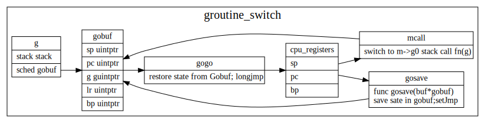
mcall
mcall 保存被切换gorutine信息，并在当前线程g0 goroutine上执行新的func
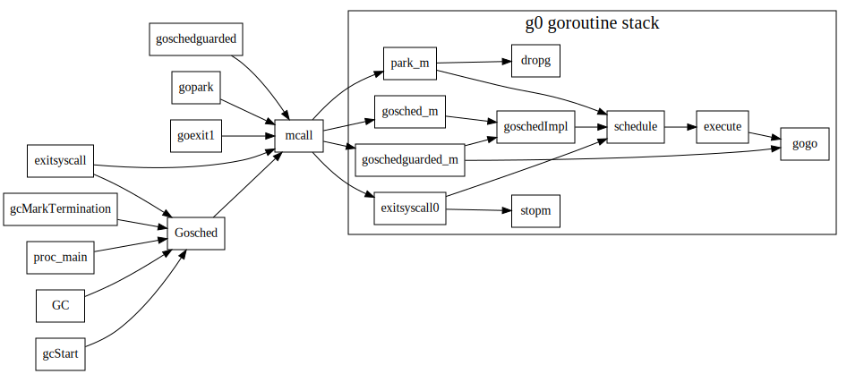
// func mcall(fn func(*g))
// Switch to m->g0's stack, call fn(g).
// Fn must never return. It should gogo(&g->sched)
// to keep running g.
TEXT runtime·mcall(SB), NOSPLIT, $0-8
MOVQ fn+0(FP), DI
get_tls(CX)
MOVQ g(CX), AX // save state in g->sched
MOVQ 0(SP), BX // caller's PC
MOVQ BX, (g_sched+gobuf_pc)(AX)
LEAQ fn+0(FP), BX // caller's SP
MOVQ BX, (g_sched+gobuf_sp)(AX)
MOVQ AX, (g_sched+gobuf_g)(AX)
MOVQ BP, (g_sched+gobuf_bp)(AX)
// switch to m->g0 & its stack, call fn
MOVQ g(CX), BX
MOVQ g_m(BX), BX
MOVQ m_g0(BX), SI
CMPQ SI, AX // if g == m->g0 call badmcall
JNE 3(PC)
MOVQ $runtime·badmcall(SB), AX
JMP AX
MOVQ SI, g(CX) // g = m->g0
MOVQ (g_sched+gobuf_sp)(SI), SP // sp = m->g0->sched.sp
PUSHQ AX
MOVQ DI, DX
MOVQ 0(DI), DI
CALL DI
POPQ AX
MOVQ $runtime·badmcall2(SB), AX
JMP AX
RET
gogo
gogo 用来从gobuf中恢复协程执行状态，并跳转到上一次指令处继续执行
// func gogo(buf *gobuf)
// restore state from Gobuf; longjmp
TEXT runtime·gogo(SB), NOSPLIT, $16-8
MOVQ buf+0(FP), BX // gobuf
MOVQ gobuf_g(BX), DX
MOVQ 0(DX), CX // make sure g != nil
get_tls(CX)
MOVQ DX, g(CX)
MOVQ gobuf_sp(BX), SP // restore SP
MOVQ gobuf_ret(BX), AX
MOVQ gobuf_ctxt(BX), DX
MOVQ gobuf_bp(BX), BP
MOVQ $0, gobuf_sp(BX) // clear to help garbage collector
MOVQ $0, gobuf_ret(BX)
MOVQ $0, gobuf_ctxt(BX)
MOVQ $0, gobuf_bp(BX)
MOVQ gobuf_pc(BX), BX
JMP BX
gosave
gosave感觉和cgo相关，这个代码还没怎么搞明白

// func gosave(buf *gobuf)
// save state in Gobuf; setjmp
TEXT runtime·gosave(SB), NOSPLIT, $0-8
MOVQ buf+0(FP), AX // gobuf
LEAQ buf+0(FP), BX // caller's SP
MOVQ BX, gobuf_sp(AX)
MOVQ 0(SP), BX // caller's PC
MOVQ BX, gobuf_pc(AX)
MOVQ $0, gobuf_ret(AX)
MOVQ BP, gobuf_bp(AX)
// Assert ctxt is zero. See func save.
MOVQ gobuf_ctxt(AX), BX
TESTQ BX, BX
JZ 2(PC)
CALL runtime·badctxt(SB)
get_tls(CX)
MOVQ g(CX), BX
MOVQ BX, gobuf_g(AX)
RET
Stack增长
编译器在每个函数调用中都会插入对morestack的调用。
morestack会检查当前栈空间是否够用，不够用的话，会调用newstack增长空间. newstack 会分配2倍大小的stack, copy过去, 并将指向该stack的引用指针也修改过去。

Memory分配
struct之间引用关系

//src/runtime/malloc.go
// fixalloc: a free-list allocator for fixed-size off-heap objects,
// used to manage storage used by the allocator.
// mheap: the malloc heap, managed at page (8192-byte) granularity.
// mspan: a run of in-use pages managed by the mheap.
// mcentral: collects all spans of a given size class.
// mcache: a per-P cache of mspans with free space.
// mstats: allocation statistics.
- fixalloc 用于分配mspan等固定大小的object
- mheap 用于8KB page粒度内存管理
- mspan: 一段连续的pages,用于分配制定specClass的object.
- mcentral: 所有span的list
- mcache: 线程的span cache, 优先从cache中分配, 避免每次访问heap需要lock.
下图摘自1 比较清楚的画出了这几者之间的层级关系

mspan
mspan的创建路径如下
Ref
GC
GcPhase
_GCoff: GC not running; sweeping in background, write barrier disabled_GCmark: GC marking roots and workbufs: allocate black, write barrier ENABLED_GCmarktermination: GC mark termination: allocate black, P's help GC, write barrier ENABLED
如下图所示，GC过程中开启了两次STW(stop the world), 第一次主要为parepare阶段， 第二次为Marktermination阶段:

//go:nosplit
func setGCPhase(x uint32) {
atomic.Store(&gcphase, x)
writeBarrier.needed = gcphase == _GCmark || gcphase == _GCmarktermination
writeBarrier.enabled = writeBarrier.needed || writeBarrier.cgo
}
Mark Phase
Golang中是如何根据指针找到对象，以及该对象所引用的对象的？答案是根据heap Arena中bitmap存储的元信息。 对于Arena中每个word, bitmap使用了两个bit，来标识该word是否是指针，以及该word是否已被扫描过。
type heapArena struct {
// bitmap stores the pointer/scalar bitmap for the words in
// this arena
bitmap [heapArenaBitmapBytes]byte
spans [pagesPerArena]*mspan
pageInUse [pagesPerArena / 8]uint8
pageMarks [pagesPerArena / 8]uint8
zeroedBase uintptr
}

另外每个span中有allocBits和gcmarkbits用来标记span中每个slot是否被分配。在mallocgc中会使用该信息，找到可分配的slot, 另外在gc sweep阶段根据coutAlloc()==0 来判断mspan是否是空闲的，可以被回收.
//go:nosplit
// 返回一个指针在heapArena中的bits位
func heapBitsForAddr(addr uintptr) (h heapBits) {
// 2 bits per word, 4 pairs per byte, and a mask is hard coded.
arena := arenaIndex(addr)
ha := mheap_.arenas[arena.l1()][arena.l2()]
// The compiler uses a load for nil checking ha, but in this
// case we'll almost never hit that cache line again, so it
// makes more sense to do a value check.
if ha == nil {
// addr is not in the heap. Return nil heapBits, which
// we expect to crash in the caller.
return
}
h.bitp = &ha.bitmap[(addr/(sys.PtrSize*4))%heapArenaBitmapBytes]
h.shift = uint32((addr / sys.PtrSize) & 3)
h.arena = uint32(arena)
h.last = &ha.bitmap[len(ha.bitmap)-1]
return
}
func (s *mspan) markBitsForIndex(objIndex uintptr) markBits {
bytep, mask := s.gcmarkBits.bitp(objIndex)
return markBits{bytep, mask, objIndex}
}
// bitp returns a pointer to the byte containing bit n and a mask for
// selecting that bit from *bytep.
func (b *gcBits) bitp(n uintptr) (bytep *uint8, mask uint8) {
return b.bytep(n / 8), 1 << (n % 8)
}
并发标记

WriteBarrier
a := new(A)
a.c = new(C)
混合写屏障1 这里的shade就是将白色对象放入待扫描队列中(wbBuf)
writePointer(slot, ptr):
shade(*slot)
if current stack is grey:
shade(ptr)
*slot = ptr
编译器注入的writeBarrier
0x0059 00089 (test.go:14) CMPL runtime.writeBarrier(SB), $0
0x0060 00096 (test.go:14) JEQ 100
0x0062 00098 (test.go:14) JMP 115
0x0064 00100 (test.go:14) MOVQ AX, (DI)
0x0067 00103 (test.go:14) JMP 105
0x0069 00105 (test.go:15) PCDATA $0, $0
0x0069 00105 (test.go:15) PCDATA $1, $0
0x0069 00105 (test.go:15) MOVQ 56(SP), BP
0x006e 00110 (test.go:15) ADDQ $64, SP
0x0072 00114 (test.go:15) RET
0x0073 00115 (test.go:14) PCDATA $0, $-2
0x0073 00115 (test.go:14) PCDATA $1, $-2
0x0073 00115 (test.go:14) CALL runtime.gcWriteBarrier(SB)
0x0078 00120 (test.go:14) JMP 105
scanobject
scanobject:根据bitmap信息，判断是否是指针，是否已扫描过。 如果是指针的话，查找指针对应的object, 并加到队列里面（标记为灰色） 这样下次gcDrain会从队列中去取，接着循环的扫描。。
// scanobject scans the object starting at b, adding pointers to gcw.
// b must point to the beginning of a heap object or an oblet.
// scanobject consults the GC bitmap for the pointer mask and the
// spans for the size of the object.
//
//go:nowritebarrier
func scanobject(b uintptr, gcw *gcWork) {
// Find the bits for b and the size of the object at b.
//
// b is either the beginning of an object, in which case this
// is the size of the object to scan, or it points to an
// oblet, in which case we compute the size to scan below.
hbits := heapBitsForAddr(b)
s := spanOfUnchecked(b)
//...
if s.spanclass.noscan() {
// Bypass the whole scan.
gcw.bytesMarked += uint64(n)
return
}
var i uintptr
for i = 0; i < n; i += sys.PtrSize {
// Find bits for this word.
if i != 0 {
// Avoid needless hbits.next() on last iteration.
hbits = hbits.next()
}
// Load bits once. See CL 22712 and issue 16973 for discussion.
bits := hbits.bits()
// During checkmarking, 1-word objects store the checkmark
// in the type bit for the one word. The only one-word objects
// are pointers, or else they'd be merged with other non-pointer
// data into larger allocations.
if i != 1*sys.PtrSize && bits&bitScan == 0 {
break // no more pointers in this object
}
if bits&bitPointer == 0 {
continue // not a pointer
}
// Work here is duplicated in scanblock and above.
// If you make changes here, make changes there too.
obj := *(*uintptr)(unsafe.Pointer(b + i))
// At this point we have extracted the next potential pointer.
// Quickly filter out nil and pointers back to the current object.
if obj != 0 && obj-b >= n {
// Test if obj points into the Go heap and, if so,
// mark the object.
//
// Note that it's possible for findObject to
// fail if obj points to a just-allocated heap
// object because of a race with growing the
// heap. In this case, we know the object was
// just allocated and hence will be marked by
// allocation itself.
if obj, span, objIndex := findObject(obj, b, i); obj != 0 {
greyobject(obj, b, i, span, gcw, objIndex)
}
}
}
//...
}
Sweep Phase

scavenging
go1.13之后改为更智能的内存归还给os2

Ref
Context
Context struct之间关系

Context example
// This example demonstrates the use of a cancelable context to prevent a
// goroutine leak. By the end of the example function, the goroutine started
// by gen will return without leaking.
func ExampleWithCancel() {
// gen generates integers in a separate goroutine and
// sends them to the returned channel.
// The callers of gen need to cancel the context once
// they are done consuming generated integers not to leak
// the internal goroutine started by gen.
gen := func(ctx context.Context) <-chan int {
dst := make(chan int)
n := 1
go func() {
for {
select {
case <-ctx.Done():
return // returning not to leak the goroutine
case dst <- n:
n++
}
}
}()
return dst
}
ctx, cancel := context.WithCancel(context.Background())
defer cancel() // cancel when we are finished consuming integers
for n := range gen(ctx) {
fmt.Println(n)
if n == 5 {
break
}
}
// Output:
// 1
// 2
// 3
// 4
// 5
}
defer, recover, panic
- 每个defer语句生成的defer结构会插到队首，defer执行时从defer link list头开始执行.所以defer以LIFO顺序执行。
- 每个return语句会编译器会插入deferreturn。
- 在panic中会调用defer 链表中的函数，然后在defer中可以recover, 也可以接着panic.
defer

defer 语句
每个defer语句会转换成对deferproc的调用.
// Calls the function n using the specified call type.
// Returns the address of the return value (or nil if none).
func (s *state) call(n *Node, k callKind) *ssa.Value {
//...
switch {
case k == callDefer:
call = s.newValue1A(ssa.OpStaticCall, types.TypeMem, deferproc, s.mem())
...
}
deferproc 会新建一个_defer结构的struct, 并插到当前goroutine的_defer列表队头
// Create a new deferred function fn with siz bytes of arguments.
// The compiler turns a defer statement into a call to this.
//go:nosplit
func deferproc(siz int32, fn *funcval) { // arguments of fn follow fn
if getg().m.curg != getg() {
// go code on the system stack can't defer
throw("defer on system stack")
}
// the arguments of fn are in a perilous state. The stack map
// for deferproc does not describe them. So we can't let garbage
// collection or stack copying trigger until we've copied them out
// to somewhere safe. The memmove below does that.
// Until the copy completes, we can only call nosplit routines.
sp := getcallersp()
argp := uintptr(unsafe.Pointer(&fn)) + unsafe.Sizeof(fn)
callerpc := getcallerpc()
d := newdefer(siz)
if d._panic != nil {
throw("deferproc: d.panic != nil after newdefer")
}
d.fn = fn
d.pc = callerpc
d.sp = sp
switch siz {
case 0:
// Do nothing.
case sys.PtrSize:
*(*uintptr)(deferArgs(d)) = *(*uintptr)(unsafe.Pointer(argp))
default:
memmove(deferArgs(d), unsafe.Pointer(argp), uintptr(siz))
}
// deferproc returns 0 normally.
// a deferred func that stops a panic
// makes the deferproc return 1.
// the code the compiler generates always
// checks the return value and jumps to the
// end of the function if deferproc returns != 0.
return0()
// No code can go here - the C return register has
// been set and must not be clobbered.
}
其中return0的定义如下
TEXT runtime·return0(SB), NOSPLIT, $0
MOVL $0, AX
RET
compiler生成的代码会检查ax寄存器的值。
defer函数的调用
编译器在函数的return RET指令后面加入deferreturn的调用.
func fa() {
defer fmt.Printf("hello")
}
"".fa STEXT size=106 args=0x0 locals=0x48
0x0000 00000 (test.go:7) TEXT "".fa(SB), ABIInternal, $72-0
0x0000 00000 (test.go:7) MOVQ (TLS), CX
0x0009 00009 (test.go:7) CMPQ SP, 16(CX)
0x000d 00013 (test.go:7) JLS 99
0x000f 00015 (test.go:7) SUBQ $72, SP
0x0013 00019 (test.go:7) MOVQ BP, 64(SP)
0x0018 00024 (test.go:7) LEAQ 64(SP), BP
0x001d 00029 (test.go:7) FUNCDATA $0, gclocals·33cdeccccebe80329f1fdbee7f5874cb(SB)
0x001d 00029 (test.go:7) FUNCDATA $1, gclocals·33cdeccccebe80329f1fdbee7f5874cb(SB)
0x001d 00029 (test.go:7) FUNCDATA $2, gclocals·9fb7f0986f647f17cb53dda1484e0f7a(SB)
0x001d 00029 (test.go:8) PCDATA $0, $0
0x001d 00029 (test.go:8) PCDATA $1, $0
0x001d 00029 (test.go:8) MOVL $0, ""..autotmp_1+8(SP)
0x0025 00037 (test.go:8) PCDATA $0, $1
0x0025 00037 (test.go:8) LEAQ "".fa.func1·f(SB), AX
0x002c 00044 (test.go:8) PCDATA $0, $0
0x002c 00044 (test.go:8) MOVQ AX, ""..autotmp_1+32(SP)
0x0031 00049 (test.go:8) PCDATA $0, $1
0x0031 00049 (test.go:8) LEAQ ""..autotmp_1+8(SP), AX
0x0036 00054 (test.go:8) PCDATA $0, $0
0x0036 00054 (test.go:8) MOVQ AX, (SP)
0x003a 00058 (test.go:8) CALL runtime.deferprocStack(SB)
// 如果deferprocStack返回值不为０,则调到末尾执行deferreturn
0x003f 00063 (test.go:8) TESTL AX, AX
0x0041 00065 (test.go:8) JNE 83
0x0043 00067 (test.go:11) XCHGL AX, AX
0x0044 00068 (test.go:11) CALL runtime.deferreturn(SB)
0x0049 00073 (test.go:11) MOVQ 64(SP), BP
0x004e 00078 (test.go:11) ADDQ $72, SP
0x0052 00082 (test.go:11) RET
0x0053 00083 (test.go:8) XCHGL AX, AX
0x0054 00084 (test.go:8) CALL runtime.deferreturn(SB)
0x0059 00089 (test.go:8) MOVQ 64(SP), BP
0x005e 00094 (test.go:8) ADDQ $72, SP
0x0062 00098 (test.go:8) RET
0x0063 00099 (test.go:8) NOP
0x0063 00099 (test.go:7) PCDATA $1, $-1
0x0063 00099 (test.go:7) PCDATA $0, $-1
0x0063 00099 (test.go:7) CALL runtime.morestack_noctxt(SB)
0x0068 00104 (test.go:7) JMP 0
deferreturn 会调用jmpdefer，不断的执行defer link中的fn
// func jmpdefer(fv *funcval, argp uintptr)
// argp is a caller SP.
// called from deferreturn.
// 1. pop the caller
// 2. sub 5 bytes from the callers return
// 3. jmp to the argument
TEXT runtime·jmpdefer(SB), NOSPLIT, $0-16
MOVQ fv+0(FP), DX // fn
MOVQ argp+8(FP), BX // caller sp
LEAQ -8(BX), SP // caller sp after CALL
MOVQ -8(SP), BP // restore BP as if deferreturn returned (harmless if framepointers not in use)
SUBQ $5, (SP) // return to CALL again
MOVQ 0(DX), BX
JMP BX // but first run the deferred function
panic
在panic中会调用当前goroutine的defer 函数，在这些defer函数中也可能会有panic，所有每个goroutine也有个panic的link list。
如果在defer中调用了recover, 那么goroutine会从derfer的sp,pc处接着执行，否则就进入fatalpanic，打印堆栈，最后exit(2)
func gopanic(e interface{}) {
//other code
var p _panic
p.arg = e
p.link = gp._panic
gp._panic = (*_panic)(noescape(unsafe.Pointer(&p)))
atomic.Xadd(&runningPanicDefers, 1)
for {
d := gp._defer
if d == nil {
break
}
// If defer was started by earlier panic or Goexit (and, since we're back here, that triggered a new panic),
// take defer off list. The earlier panic or Goexit will not continue running.
if d.started {
if d._panic != nil {
d._panic.aborted = true
}
d._panic = nil
d.fn = nil
gp._defer = d.link
freedefer(d)
continue
}
// Mark defer as started, but keep on list, so that traceback
// can find and update the defer's argument frame if stack growth
// or a garbage collection happens before reflectcall starts executing d.fn.
d.started = true
// Record the panic that is running the defer.
// If there is a new panic during the deferred call, that panic
// will find d in the list and will mark d._panic (this panic) aborted.
d._panic = (*_panic)(noescape(unsafe.Pointer(&p)))
p.argp = unsafe.Pointer(getargp(0))
reflectcall(nil, unsafe.Pointer(d.fn), deferArgs(d), uint32(d.siz), uint32(d.siz))
p.argp = nil
// reflectcall did not panic. Remove d.
if gp._defer != d {
throw("bad defer entry in panic")
}
d._panic = nil
d.fn = nil
gp._defer = d.link
// trigger shrinkage to test stack copy. See stack_test.go:TestStackPanic
//GC()
pc := d.pc
sp := unsafe.Pointer(d.sp) // must be pointer so it gets adjusted during stack copy
freedefer(d)
if p.recovered {
atomic.Xadd(&runningPanicDefers, -1)
gp._panic = p.link
// Aborted panics are marked but remain on the g.panic list.
// Remove them from the list.
for gp._panic != nil && gp._panic.aborted {
gp._panic = gp._panic.link
}
if gp._panic == nil { // must be done with signal
gp.sig = 0
}
// Pass information about recovering frame to recovery.
gp.sigcode0 = uintptr(sp)
gp.sigcode1 = pc
mcall(recovery)
throw("recovery failed") // mcall should not return
}
}
// ran out of deferred calls - old-school panic now
// Because it is unsafe to call arbitrary user code after freezing
// the world, we call preprintpanics to invoke all necessary Error
// and String methods to prepare the panic strings before startpanic.
preprintpanics(gp._panic)
fatalpanic(gp._panic) // should not return
*(*int)(nil) = 0 // not reached
}
recovery, 这个地方将ret值改为了1
func recovery(gp *g) {
// Info about defer passed in G struct.
sp := gp.sigcode0
pc := gp.sigcode1
// d's arguments need to be in the stack.
if sp != 0 && (sp < gp.stack.lo || gp.stack.hi < sp) {
print("recover: ", hex(sp), " not in [", hex(gp.stack.lo), ", ", hex(gp.stack.hi), "]\n")
throw("bad recovery")
}
// Make the deferproc for this d return again,
// this time returning 1. The calling function will
// jump to the standard return epilogue.
gp.sched.sp = sp
gp.sched.pc = pc
gp.sched.lr = 0
gp.sched.ret = 1
gogo(&gp.sched)
}
Ref:
- https://tiancaiamao.gitbooks.io/go-internals/content/zh/03.4.html
- https://blog.learngoprogramming.com/gotchas-of-defer-in-go-1-8d070894cb01
leveldb
记录一些学习leveldb源码笔记
https://github.com/google/leveldb
struct and alg
skiplist
skiplist 应用的非常广泛，O(log n)的查找复杂度, O(log n)的查找复杂度, 下图是wiki上找到的示意图

ref
[1] https://en.wikipedia.org/wiki/Skip_list
Draft
数据结构之间引用关系
- Cache
- Table
- VersionSet
- Env

DB Get

DB Put

DB Compact
Table builder
memtable写入文件过程
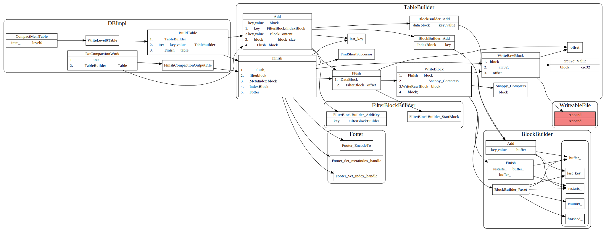
table format
- restart point的作用是啥？

VersionSet
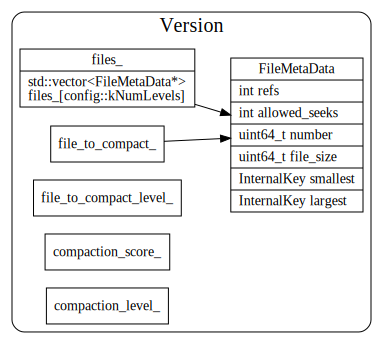
Manifest文件
VersionEdit
TODO:
WAL日志
Iterator
Bloom Filter
Ref
代码及模块间关系

具体细节
LevelDB Write 流程
数据写入流程
leveldb中数据写入流程如下:
- 首先会将kv batch写入日志中，如果宕机了，能从日志中恢复过来，由于采用顺序写的方式，速度很快。
- 确保memtable的空间足够（没有超过一定大小限制），如果memtable没足够空间了，会新建一个memtable, 并将老的memtable转为 immtable，然后由后台压缩线程将immtable写入到level 0 文件。如果level 0 文件个数超过限制，也会触发background 压缩线程。
- 将kv batch插入memtable中, memtable的底层实现为skiplist, 插入时间复杂度为O(Log(n)),每个key,value插入都有自己的sequnceNumber. 用来控制版本号.

写入细节
- 由MakeRoomsForWrite来保证memtable空间足够写入新的kv，如果immtable正在等待被写到文件中，或者level0文件个数超过阈值了，则需要阻塞等待后台线程处理完毕。由
backgroup_work_finished_signal_condvar控制。 - 多线程写入时候，有个
writes_队列做并发控制, writes_队列也使用condvar来控制，writes_队列开头的writer写完后，触发condvar，下个writer线程接着写。 - immtable由
CompactMemtable写入level 0文件 - 后台线程压缩时候，先使用
PickCompaction选择需要合并压缩的sstable文件，然后使用DoCompactionWork做归并排序合并。 - 每次写入都会更新versionSet的LastSequnceNumber，用于版本控制,Sequnce越大，表明key,value值越新。
WAL 日志写入
WAL 日志恢复

LevelDB Read流程
数据读取流程
- 根据key和options中snapshot 拼接为looupKey
- 现在MemTable中查找，然后再immutable中查找，最后到level文件中查找。
- 通过version中的
files_可以获得当前version中所有level file的列表。 - level0中的文件key range有重叠，所有要每个文件都搜索。
- 其他level的通过fileMeta中记录的key range，定位到相应的sstable file.
- 文件操作：先从cache中查找，是否sstable的datablock index和bloomfilter已在内存中，如果不在的话，加载这些到内存中。cache以LRU方式来更新，淘汰。
- 先从datablock index中定位到相应的datablock和bloom filter,通过bloom filter快速查看key是否不存在，避免不必要的文件操作。
- 文件操作: 读取datablock到内存中，做二分查找, 将datablock放到缓存中。
读取细节
涉及到的模块说明:
- VersonSet负责维护version信息。
- 每个version中的
file_数据成员，维护了每个层级的FileMetaData. - 每个FileMetadata记录了该file的最大值和最小值，方便查找key,value时候，快速定位。
- TableCache封装了Table和LRUCache逻辑。
- Table封装了table加载，查找等逻辑。
SSTable 文件格式和读写
Table format
table文件分为Foot,metadataindex, dataIndex, metadat block, datablock这几块。
- Footer 48个字节，以Magic number为结尾。存储了指向metaDataIndex和DataIndex的BlockHandle（offset, size)
- MetaBlock存储了bloomfilter 相关数据
- DataIndexBlock 存储了每个block的lastKey，value为Datablock的blockHanle(offset和size)
- MetaIndexBlock 中也是key,value形式，key为
filter.filter_policy_name，value为filterblockHandle, 当前只有bloomFilter - RestartPoint用于记录key shared共同前缀开始的位置。
- 每个DataBlock/IndexBlock除了原始数据，还包含了compressType(是否压缩）以及CRC32用于校验。
Table write 流程
Table 读取流程
TableOpen中会读取文件的Footer, 读取indexBlock以及解析Metadatablock.
Versionset和Manifest
Manifest文件写入
version记录了当前每个level的各个文件的FileMetadata.
在压缩时候，每个level的FileMetadata可能会更改, 这种修改是用VersionEdit来表示的, 每次修改会将VersionEdit Encode写入日志中, 方便崩溃时候能够从Manifest日志文件中恢复。
Recover
Current文件内容记录了当前的manifest文件, 在DBOpen时候会去加载Mainfest文件，然后读取每个versionEditRecord 将它Decode为VersionEdit，然后一个个的apply，最终得到最后的version, 最后加入到VersionSet中。

遗留问题： SequenceNumber和FilNumber这些是怎么保存的？
Compact
PickCompaction
选择要合并compact的FileMetaData

多路归并Compact
将选择好的FilemetaData合并，输出到level+1层。通过versionEdit更改Version.

Iterator 迭代器
Iterator 继承关系
BlockIter
Table中某个BlockData数据块的iter, 这里面有意思的restartPointer, restartPointer指向的record, key没有共享部分。 所以Seek时候先通过SeekToRestartPoint，找到合适的RestartPoint点，然后再使用ParseNextKey迭代遍历。
LevelFileNumIterator
用于遍历一组FileMetadat中定位target所在的FileMeta Index, 在TwoLevelIterator中作为index iter使用。

TwoLevelIterator
双层迭代器，先通过index找到对应的block，调用block_function创建相应的block iterator.
增加了SkipEmptyData检查，当一个blockIter迭代完后，自动切换到下一个block iter.
TwoLevelIterator可以套娃:
- IndexBlockIter和DataBlockIter套在一起得到一个TableIterator
- LevelFileNumIterator和TableIterator套在一次，得到某一层的Iterator.

MergingIterator
归并N个有序的iterator.
DBImpl::NewIterator
- 内存中的mm_和imm_分别作为一路iter，放到merging iter中
- level0层由于table文件之间有overlap的，所以每个level0对应tableIterator作为一路放在merging itertor中。
- level1 ~ levenN层 LevelFileumIterator和TableIterator通过TwoLevelIterator套在一起，得到某一层的iterator.
Bloom filter
filer policy
leveldb中filter用于快速确定key是否不在table中, 一堆key经过一系列的hash计算后，可以得到 很小指纹数据。查询时候，可以根据这个指纹信息，快速排除key不存在的情况。
计算keys对应的指纹数据：
for (int i = 0; i < n; i++) {
// Use double-hashing to generate a sequence of hash values.
// See analysis in [Kirsch,Mitzenmacher 2006].
uint32_t h = BloomHash(keys[i]);
const uint32_t delta = (h >> 17) | (h << 15); // Rotate right 17 bits
for (size_t j = 0; j < k_; j++) {
const uint32_t bitpos = h % bits;
array[bitpos / 8] |= (1 << (bitpos % 8));
h += delta;
}
match过程:
uint32_t h = BloomHash(key);
const uint32_t delta = (h >> 17) | (h << 15); // Rotate right 17 bits
for (size_t j = 0; j < k; j++) {
const uint32_t bitpos = h % bits;
if ((array[bitpos / 8] & (1 << (bitpos % 8))) == 0) return false;
h += delta;
}
return true;
filter数据写入和读取流程
写入流程
每个table的block数据的filter数据是写在一块的，通过一个filter_offsets来保存每个datablock对应的filter
在整个filter数据中的偏移和大小。
TableBuilder时候，每次开始新的一个datablock，都会调用filter的start new block， 然后Add Key，value时候，调用 AddKey, 创建key的指纹数据。
最后Table finish时候，写入filter data block数据，并且在metaindexblock中添加filter_policy_name和filter data block handle
读取流程
每个talbe Get时候，会使用ReadFilter加载该table的所有filterdata, 然后根据blockData的offset 找到该block对应的 filter数据，并使用该数据来判断key是不是不存在。

RocksDB
Draft
Class之间关系

Write
- 最终怎么写到了memTable中。
- WAL写的流程是什么样？
WriteBatch
ColumnFamily
- Blob 中value和key是怎么对的上的？
- 数据结构之间怎么串起来的。
Write Thread
Writer的状态

write thread过程 Write group leader 负责写入WAL日志。 memtable可能由group leader写，也有可能由各个writer 并发写。
write thread是对写线程的抽象

write impl

PreprocessWrite

后台压缩
MaybeScheduleFlushOrCompaction
后台线程压缩
compaction job之间是怎么划分的？怎么让不同线程去compact不同部分？
compaction picker
level compaction picker
以下两张图摘自facebook wiki leveled-compaction
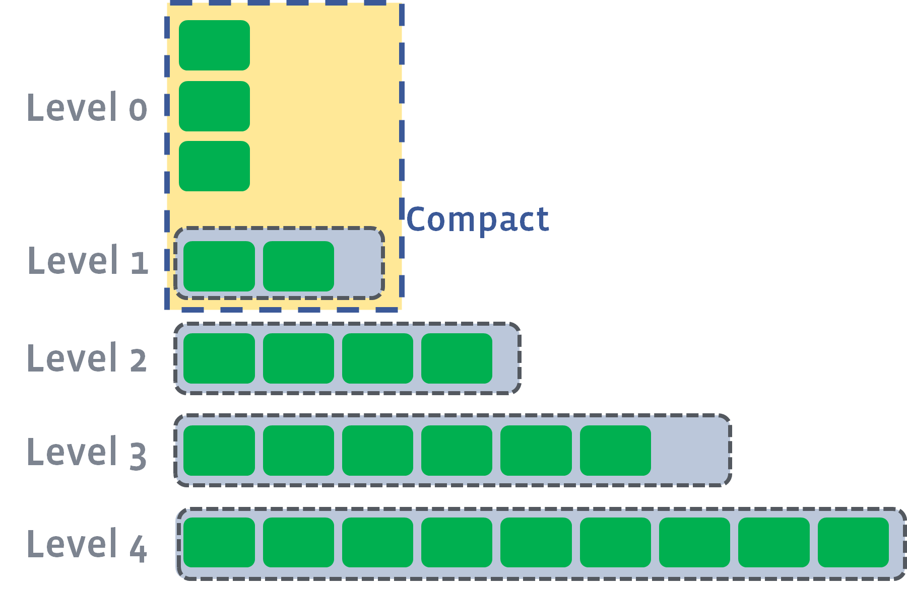

Column Family
- 每个columnFamily有单独的Version, memtable以及imm memtable list
- VersionStorageInfo 存储了属于该version的所有Filemetadata信息
- 读取时候，先从columnFaimly的memTable，然后imm list，然后version 中的各个level的文件
- 写时候，先写WAl日志，然后插入到memtable中，memtable在满时候，会转到imm list中, 然后由 后台线程flush到level0, 后台线程compact.
rocks db中主要数据结构关系如下：

数据结构之间引用细节如下：
Write Ahead Log
WriteBatch
put/delete等操作先写入writeBatch中
writeBatch中Record类型如下:
// WriteBatch::rep_ :=
// sequence: fixed64
// count: fixed32
// data: record[count]
enum ValueType : unsigned char {
kTypeDeletion = 0x0,
kTypeValue = 0x1,
kTypeMerge = 0x2,
kTypeLogData = 0x3, // WAL only.
kTypeColumnFamilyDeletion = 0x4, // WAL only.
kTypeColumnFamilyValue = 0x5, // WAL only.
kTypeColumnFamilyMerge = 0x6, // WAL only.
kTypeSingleDeletion = 0x7,
kTypeColumnFamilySingleDeletion = 0x8, // WAL only.
kTypeBeginPrepareXID = 0x9, // WAL only.
kTypeEndPrepareXID = 0xA, // WAL only.
kTypeCommitXID = 0xB, // WAL only.
kTypeRollbackXID = 0xC, // WAL only.
kTypeNoop = 0xD, // WAL only.
kTypeColumnFamilyRangeDeletion = 0xE, // WAL only.
kTypeRangeDeletion = 0xF, // meta block
kTypeColumnFamilyBlobIndex = 0x10, // Blob DB only
kTypeBlobIndex = 0x11, // Blob DB only
// When the prepared record is also persisted in db, we use a different
// record. This is to ensure that the WAL that is generated by a WritePolicy
// is not mistakenly read by another, which would result into data
// inconsistency.
kTypeBeginPersistedPrepareXID = 0x12, // WAL only.
// Similar to kTypeBeginPersistedPrepareXID, this is to ensure that WAL
// generated by WriteUnprepared write policy is not mistakenly read by
// another.
kTypeBeginUnprepareXID = 0x13, // WAL only.
kMaxValue = 0x7F // Not used for storing records.
};
MemtableInserter
MemTableInsertor 遍历writeBatch，将记录插入到memtable中,使用MemTableRep封装了skiplist和VectorRep这两种类型的memtable;
WriteToWAL
日志会被分片为固定大小kBlocksize, 太小的会被填充padding,太大的会被切分为first/mid/last等分片record
固定大小这个有什么优势吗？
RocksDB Write流程
WriteBatch
PreprocessWrite
schedule flush
schedule flush, 将满的memtable转变为immtable, 加到flush_schedule_队列中
由BackgrounFlush将immtable刷到dish上。

Write thread
Writer的状态
write 相关struct之间引用关系

Backgroud flush and compaction
MaybeScheduleFlushOrCompaction
MaybeScheduleFlushOrCompaction会使用线程池调度，最后在后台线程中调用BackgroundFlush
和BackgrondCompaction分别做memtable的flush和ssfile的compaction.

后台线程调度Schedule
后台线程flush
生成flushRequest放入flush队列中
向flush_queue_中放入FlushRequest的数据流程如下:

具体函数调用细节如下：

后台线程处理flush队列中请求
后台线程执行BackgroundFlush从flush_queue_中取出FlushRequest转换为FlushJob.
cfd会被flush的条件
bool MemTableList::IsFlushPending() const {
if ((flush_requested_ && num_flush_not_started_ > 0) ||
(num_flush_not_started_ >= min_write_buffer_number_to_merge_)) {
assert(imm_flush_needed.load(std::memory_order_relaxed));
return true;
}
return false;
}
最终调用WriteLevel0Table 将memtable写入磁盘中，具体调用关系如下:
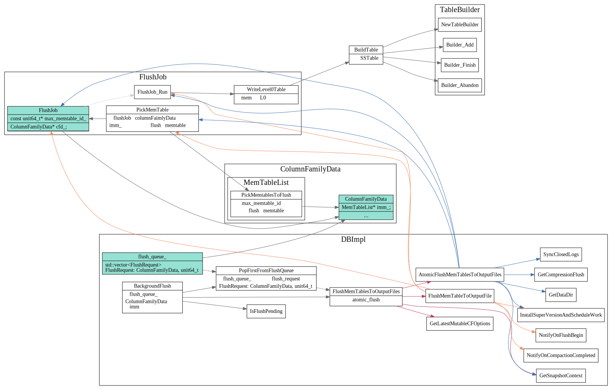
后台线程compact
cfd放入compact队列

处理compact队列，生成compactionJob
后台线程会通过PickCompactionFromQueue 去compaction_queue_中取出需要compact的ColumnFamilyData,
然后调用ComlumnFamilyData的PickCompaction 选择compactio的input level, output leve, 以及input files等，
多线程并发compact
在compact Prepare中会将compactJob划分为不同的SubCompactionState，然后由多线程并发执行压缩
Compaction Picker
三种compaction style
Level Style Compaction
Universal Style Compaction
FIFO Style Compaction
Compaction Picker
Compaction生成流程:
- SetupInitialFiles 选择要compaction的level和input files
- SetupOtherL0FilesIfNeeded和SetupOtherInputsIfNeeded补充选择和input files overlap的文件
- 最后GetCompaction 生成最终的Compaction然后重新CompuateScore用于下次Compact

SetupInitialFiles 初始选择的优先级顺序，当前一个选择为空时候，才会去选择下一个:
CompactionScore
TODO拆分为不同的子图
详细调用图如下
Ref
- leveled-compaction: https://github.com/facebook/rocksdb/wiki/Leveled-Compaction
- choose level compaction files: https://github.com/facebook/rocksdb/wiki/Choose-Level-Compaction-Files
read 流程
Questions
SuperVersion ？ 为啥起这个名字？
多级index:
- ColumnFamily 根据Version中的
std::vector<FileMetaData*>定位到具体的Table。 - Table根据
bloom filter快速排出key不存在的case，如果key不存在，避免后续的磁盘操作。 - Table根据
IndexBlock定位到对应的Datablock。 - 根据Datablock数据中的
restartPoint列表二分查找，找到对应的restartPoint偏移, 进一步缩小查找区间。 - 在具体的
restartPoint之间遍历查找具体的key
多级LRU缓存:
- TableCache
- DataBlockCache
- RowCache
详细调用关系：
Blob
Questions:
- PinnableSlice 这个作用是啥
- rocksdb的blob和pingcap的titan之间关系？实现逻辑？
- Blob文件是怎么选择的
Blob将key和value分来开存储。
// A wrapped database which puts values of KV pairs in a separate log
// and store location to the log in the underlying DB.

Blob Log
blob log format
blob index

Open
Blob open

Put
BlobPut

Get
BlobGet

Transaction
Transaction struct
主要数据成员
rocksdb中，每个事务主要有track_keys_和write_batch_这两个数据成员，
track_keys_用于跟踪管理该事务写操作涉及的keywrite_batch_用于记录事务最终的写结果。
所有的悲观事务(pessimistic transaction), 通过txn_db_impl_指针共享 PessimisticTransactionDB，
从而共享全局的TransactionLockMgr,用来统一管理key的lock。

乐观事务
在commit的时候才去检查key的冲突
一些问题：
- 根据什么判断是否有冲突的？貌似是根据sequnceNumber，但是具体细节不太清楚
bucketed_locks_的作用是啥？- CommitWithSerialValidate和 CommitWithParallelValidate这两者区别是啥？

悲观事务
分为三种？
- writeCommitedTxn
WriteCommitted, which means that the data is written to the DB, i.e., the memtable, only after the transaction is committed
- WritePrepared
- WriteUnpreparedTxnDB

参考
Optimistic Transaction
乐观事务在commit前，Write操作只会记录事务有哪些key, 不需要做加锁和key冲突检测，适合事务之间 write key重叠比较低的场景。
乐观事务在write时候，使用tracked_keys, 记录受影响的key以及该key的seq,
在commit时候会遍历该tracked_keys, 对每个key查找当前db中该key的seq，然后和tracked_key中seq比较。
如果数据库中的seq比key的seq新，则认为发生了冲突。
不太理解这里面的min_uncommited 起了什么作用.
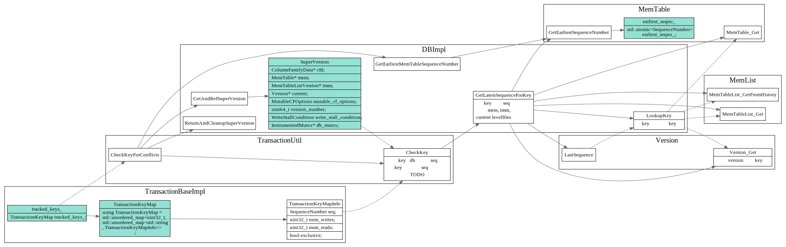
遍历TransactionKeyMap, 检查每个key的冲突
Status TransactionUtil::CheckKeysForConflicts(DBImpl* db_impl,
const TransactionKeyMap& key_map,
bool cache_only) {
//other code..
//遍历迭代key_map
for (const auto& key_iter : keys) {
const auto& key = key_iter.first;
const SequenceNumber key_seq = key_iter.second.seq;
result = CheckKey(db_impl, sv, earliest_seq, key_seq, key, cache_only);
if (!result.ok()) {
break;
}
}
}
检查具体某个key的冲突
// min_uncommitted 默认值为 KMaxSequnceNumber
// snap_checker默认值为nullptr;
Status TransactionUtil::CheckKey(DBImpl* db_impl, SuperVersion* sv,
SequenceNumber earliest_seq,
SequenceNumber snap_seq,
const std::string& key, bool cache_only,
ReadCallback* snap_checker,
SequenceNumber min_uncommitted) {
//...other code
SequenceNumber seq = kMaxSequenceNumber;
bool found_record_for_key = false;
// When min_uncommitted == kMaxSequenceNumber, writes are committed in
// sequence number order, so only keys larger than `snap_seq` can cause
// conflict.
// When min_uncommitted != kMaxSequenceNumber, keys lower than
// min_uncommitted will not triggered conflicts, while keys larger than
// min_uncommitted might create conflicts, so we need to read them out
// from the DB, and call callback to snap_checker to determine. So only
// keys lower than min_uncommitted can be skipped.
SequenceNumber lower_bound_seq =
(min_uncommitted == kMaxSequenceNumber) ? snap_seq : min_uncommitted;
// 去数据库中查找key的最新seq
Status s = db_impl->GetLatestSequenceForKey(sv, key, !need_to_read_sst,
lower_bound_seq, &seq,
&found_record_for_key);
if (!(s.ok() || s.IsNotFound() || s.IsMergeInProgress())) {
result = s;
} else if (found_record_for_key) {
bool write_conflict = snap_checker == nullptr
? snap_seq < seq
: !snap_checker->IsVisible(seq);
if (write_conflict) {
result = Status::Busy();
}
}
}
return result;
}
一些问题：
- 根据什么判断是否有冲突的？貌似是根据sequnceNumber，但是具体细节不太清楚
bucketed_locks_的作用是啥？- CommitWithSerialValidate和 CommitWithParallelValidate这两者区别是啥？
- key冲突检测是咋搞的
- 并行和顺序这个是怎么弄的
Transaction lock mgr
TransactionLockMgr 用于管理悲观事务的key lock，所有的悲观事务，通过txn_db_impl->lock_mgr_指针共享
同一个lockmgr
LockMap
rocksdb中对于key lock做了多种优化
- 首先根据ColumnFamilyId, 从LockMaps获得对应的LockMap
- 使用了thread local data来缓存全局的lock maps, 避免每次查询全局的lockmaps需要加锁
- 使用
GetStripe把key做sharding获得相应的LockStripe,降低了锁冲突, 但是在同一个stripe中的key还是有并发等待问题.

size_t LockMap::GetStripe(const std::string& key) const {
assert(num_stripes_ > 0);
return fastrange64(GetSliceNPHash64(key), num_stripes_);
}
GetLockMap封装装了从thread local cache获取lockMap逻辑
std::shared_ptr<LockMap> TransactionLockMgr::GetLockMap(
uint32_t column_family_id) {
// First check thread-local cache
if (lock_maps_cache_->Get() == nullptr) {
lock_maps_cache_->Reset(new LockMaps());
}
auto lock_maps_cache = static_cast<LockMaps*>(lock_maps_cache_->Get());
//首先从thread local cache中查找
auto lock_map_iter = lock_maps_cache->find(column_family_id);
if (lock_map_iter != lock_maps_cache->end()) {
// Found lock map for this column family.
return lock_map_iter->second;
}
//没找到的话，使用mutex访问全局LockMaps
// Not found in local cache, grab mutex and check shared LockMaps
InstrumentedMutexLock l(&lock_map_mutex_);
lock_map_iter = lock_maps_.find(column_family_id);
if (lock_map_iter == lock_maps_.end()) {
return std::shared_ptr<LockMap>(nullptr);
} else {
//插入到thread local cache中，方便下一次访问
// Found lock map. Store in thread-local cache and return.
std::shared_ptr<LockMap>& lock_map = lock_map_iter->second;
lock_maps_cache->insert({column_family_id, lock_map});
return lock_map;
}
}
获取/释放key锁
死锁检测

Two phase commit
Write Commited txn
事务只有在提交之后，才会写入到db的memtable中，事务在数据库中读到的 kv都是提交之后的，这种需要在提交之前把所有的write kv操作保存在内存writeBatch中， 对于大的事务来说，内存是个瓶颈，另一方面，commit时候才集中的写入memtabe，这个延迟可能也无法忽略。
WriteCommited 两阶段提交：
- Prepare阶段 将writebatch 写入WAL日志中,并将writeBatch中内容用
ktypeBeginPrepare(Xid),kTypeEndPrepare(xid)括起来 由于只写到了WAL日志中, 其他事务看不到这个事务的修改 - Commit阶段 向WAL日志写入commit 标记，比如
kTypeCommit(xid)并writeBatch中内容insert到memtable上，写入memtable之后，该事务的修改对其他事务就可以见了。 如果向WAL日志中写入KtypeCommit(xid)日志就挂了的话，下次recover时候，会重新从日志中恢复writeBatch，然后插入到memtabl中。

Status WriteBatchInternal::MarkEndPrepare(WriteBatch* b, const Slice& xid,
bool write_after_commit,
bool unprepared_batch) {
// other code..
// rewrite noop as begin marker
b->rep_[12] = static_cast<char>(
write_after_commit ? kTypeBeginPrepareXID
: (unprepared_batch ? kTypeBeginUnprepareXID
: kTypeBeginPersistedPrepareXID));
b->rep_.push_back(static_cast<char>(kTypeEndPrepareXID));
PutLengthPrefixedSlice(&b->rep_, xid);
// other code..
}
Recover
事务日志会以writeBatch为单位写入到WAL日志中，恢复时MemtableInsetor会去遍历日志中的writeBatch,
将BeginPrepare....EndPrepare(xid)之间的kv操作插入到新的writeBatch中，
在遍历到Commit(xid)时候，将该writeBatch插入到memtable中，完成提交。
Write prepared txn
没有commit，就把数据insert到db中，有以下几个问题需要解决:
- How do we identify the key/values in the DB with transactions that wrote them?
- How do we figure if a key/value written by transaction
Txn_wis in the read snapshot of the reading transactionTxn_r? - How do we rollback the data written by aborted transactions?
在prepare阶段就插入memtalbe中.
CommitCache 用于判断是否提交了
Write unprepared txn
TODO:
- write prepared txn和write unprepared txn这个具体逻辑还不是很清楚，只知道是把commit放到了一个cache里面。
ClickHouse
Server Main
Server main 主流程
主循环
首先监听端口号，等待客户端连接， 和客户端建立连接后,server然后不断从conn中读取packet, 解析sql语句为AST树，然后创建plan pipeline 最后执行plan，将result set通过网络发送给客户端.

SQL 解析执行流程
一条Query SQL在clickhouse中执行流程如下:

Parse SQL
解析SQL，解析为AST树，然后创建对应的pipeline plan.

SelectQuery
执行Select Query , 创建QueryPlan

QueryPlanStep

IProcessor
Processor is an element (low level building block) of a query execution pipeline. It has zero or more input ports and zero or more output ports.
Blocks of data are transferred over ports. Each port has fixed structure: names and types of columns and values of constants.
src/Processors/IProcessor.h
IProcessor 继承关系图
CK中Iprocessor的继承关系图
class IProcessor
{
protected:
InputPorts inputs;
OutputPorts outputs;
}


Executor: 执行pipeline
PipelineExecutor
使用线程池执行pipline

PullingPipelineExecutor
单线程同步执行？
/// Pulling executor for QueryPipeline. Always execute pipeline in single thread.
/// Typical usage is:
///
/// PullingPipelineExecutor executor(query_pipeline);
/// while (executor.pull(chunk))
/// ... process chunk ...

PullingAsyncPipelineExecutor
多线程异步执行
/// Asynchronous pulling executor for QueryPipeline.
/// Always creates extra thread. If query is executed in single thread, use PullingPipelineExecutor.
/// Typical usage is:
///
/// PullingAsyncPipelineExecutor executor(query_pipeline);
/// while (executor.pull(chunk, timeout))
/// ... process chunk ...
IBlockInputStream
PipelineExecutingBlockInputStream
封装了PullingPipelineExecutor和PullingAsyncPipelineExecutor, 实现了IBlockInputStream接口

AsynchronousBlockInputStream
在另外一个线程中执行inner BlockInputStream
/** Executes another BlockInputStream in a separate thread.
* This serves two purposes:
* 1. Allows you to make the different stages of the query execution pipeline work in parallel.
* 2. Allows you not to wait until the data is ready, and periodically check their readiness without blocking.
* This is necessary, for example, so that during the waiting period you can check if a packet
* has come over the network with a request to interrupt the execution of the query.
* It also allows you to execute multiple queries at the same time.
*/

BlockIO
block-io getInputStream，读数据时执行plan

参考资料
Block
Block
A Block is a container that represents a subset (chunk) of a table in memory. It is just a set of triples: (IColumn, IDataType, column name). During query execution, data is processed by Blocks. If we have a Block, we have data (in the IColumn object), we have information about its type (in IDataType) that tells us how to deal with that column, and we have the column name. It could be either the original column name from the table or some artificial name assigned for getting temporary results of calculations.
最基本的数据处理单元, 有点类似于Pandas的dataframe, 对应的基本操作有insert/erase
/** Container for set of columns for bunch of rows in memory.
* This is unit of data processing.
* Also contains metadata - data types of columns and their names
* (either original names from a table, or generated names during temporary calculations).
* Allows to insert, remove columns in arbitrary position, to change order of columns.
*/
BlockInfo
/** is_overflows:
* After running GROUP BY ... WITH TOTALS with the max_rows_to_group_by and group_by_overflow_mode = 'any' settings,
* a row is inserted in the separate block with aggregated values that have not passed max_rows_to_group_by.
* If it is such a block, then is_overflows is set to true for it.
*/
/** bucket_num:
* When using the two-level aggregation method, data with different key groups are scattered across different buckets.
* In this case, the bucket number is indicated here. It is used to optimize the merge for distributed aggregation.
* Otherwise -1.
*/
IColumn
Cow: Copy on write shared Ptr
ICoumn存储数据
icolumn和idatatype 比较类似？他们两者分别负责什么功能?
IDataType
数据的序列化和反序列化

BlockIO
Block的输入输出, 主要有BlockInputStream 和 BlockOutputStream, 输入输出的基本单位为Block
getHeader header的作用是啥？表明data的schema吗?
IBlockInputStream
The stream interface for reading data by blocks from the database. Relational operations are supposed to be done also as implementations of this interface. Watches out at how the source of the blocks works. Lets you get information for profiling: rows per second, blocks per second, megabytes per second, etc. Allows you to stop reading data (in nested sources).
IBlockInputStream 主要接口 read, readPrefix, readSuffix
这个地方的limit, quta, 以及info之类的作用是什么?

IBlockInputStream 继承关系

AsynchronousBlockInputStream
Executes another BlockInputStream in a separate thread. This serves two purposes:
- Allows you to make the different stages of the query execution pipeline work in parallel.
- Allows you not to wait until the data is ready, and periodically check their readiness without blocking. This is necessary, for example, so that during the waiting period you can check if a packet has come over the network with a request to interrupt the execution of the query. It also allows you to execute multiple queries at the same time.
PipelineExecutingBlockInputStream
Implement IBlockInputStream from QueryPipeline. It's a temporary wrapper.
TODO:
- TypePromotion 模板
- Cow 模板
IBlockOutputStream
Interface of stream for writing data (into table, filesystem, network, terminal, etc.)
Storage
IStorage Struct
Storage. Describes the table. Responsible for
- storage of the table data;
- the definition in which files (or not in files) the data is stored;
- data lookups and appends;
- data storage structure (compression, etc.)
- concurrent access to data (locks, etc.)
struct StorageInMemoryMetadata
{
/// Columns of table with their names, types,
/// defaults, comments, etc. All table engines have columns.
ColumnsDescription columns;
/// Table indices. Currently supported for MergeTree only.
IndicesDescription secondary_indices;
/// Table constraints. Currently supported for MergeTree only.
ConstraintsDescription constraints;
/// PARTITION BY expression. Currently supported for MergeTree only.
KeyDescription partition_key;
/// PRIMARY KEY expression. If absent, than equal to order_by_ast.
KeyDescription primary_key;
/// ORDER BY expression. Required field for all MergeTree tables
/// even in old syntax MergeTree(partition_key, order_by, ...)
KeyDescription sorting_key;
/// SAMPLE BY expression. Supported for MergeTree only.
KeyDescription sampling_key;
/// Separate ttl expressions for columns
TTLColumnsDescription column_ttls_by_name;
/// TTL expressions for table (Move and Rows)
TTLTableDescription table_ttl;
/// SETTINGS expression. Supported for MergeTree, Buffer and Kafka.
ASTPtr settings_changes;
/// SELECT QUERY. Supported for MaterializedView and View (have to support LiveView).
SelectQueryDescription select;
//...
}
IStorage Interface
watch/read/write
virtual BlockInputStreams watch(
const Names & /*column_names*/,
const SelectQueryInfo & /*query_info*/,
const Context & /*context*/,
QueryProcessingStage::Enum & /*processed_stage*/,
size_t /*max_block_size*/,
unsigned /*num_streams*/)
{
throw Exception("Method watch is not supported by storage " + getName(), ErrorCodes::NOT_IMPLEMENTED);
}
virtual Pipes read(
const Names & /*column_names*/,
const StorageMetadataPtr & /*metadata_snapshot*/,
const SelectQueryInfo & /*query_info*/,
const Context & /*context*/,
QueryProcessingStage::Enum /*processed_stage*/,
size_t /*max_block_size*/,
unsigned /*num_streams*/)
{
throw Exception("Method read is not supported by storage " + getName(), ErrorCodes::NOT_IMPLEMENTED);
}
virtual BlockOutputStreamPtr write(
const ASTPtr & /*query*/,
const StorageMetadataPtr & /*metadata_snapshot*/,
const Context & /*context*/)
{
throw Exception("Method write is not supported by storage " + getName(), ErrorCodes::NOT_IMPLEMENTED);
}
virtual void drop() {}
virtual void truncate(
const ASTPtr & /*query*/,
const StorageMetadataPtr & /* metadata_snapshot */,
const Context & /* context */,
TableExclusiveLockHolder &)
{
throw Exception("Truncate is not supported by storage " + getName(), ErrorCodes::NOT_IMPLEMENTED);
}
rename
virtual void rename(const String & /*new_path_to_table_data*/, const StorageID & new_table_id)
/**
* Just updates names of database and table without moving any data on disk
* Can be called directly only from DatabaseAtomic.
*/
virtual void renameInMemory(const StorageID & new_table_id);
alter: add/drop columns
/** ALTER tables in the form of column changes that do not affect the change
* to Storage or its parameters. Executes under alter lock (lockForAlter).
*/
virtual void alter(const AlterCommands & params, const Context & context, TableLockHolder & alter_lock_holder);
/** Checks that alter commands can be applied to storage. For example, columns can be modified,
* or primary key can be changes, etc.
*/
virtual void checkAlterIsPossible(const AlterCommands & commands, const Settings & settings) const;
/** ALTER tables with regard to its partitions.
* Should handle locks for each command on its own.
*/
virtual void alterPartition(const ASTPtr & /* query */, const StorageMetadataPtr & /* metadata_snapshot */, const PartitionCommands & /* commands */, const Context & /* context */)
{
throw Exception("Partition operations are not supported by storage " + getName(), ErrorCodes::NOT_IMPLEMENTED);
}
AlterCommands
/// Operation from the ALTER query (except for manipulation with PART/PARTITION).
/// Adding Nested columns is not expanded to add individual columns.
struct AlterCommand
{
/// The AST of the whole command
ASTPtr ast;
enum Type
{
ADD_COLUMN,
DROP_COLUMN,
MODIFY_COLUMN,
COMMENT_COLUMN,
MODIFY_ORDER_BY,
ADD_INDEX,
DROP_INDEX,
ADD_CONSTRAINT,
DROP_CONSTRAINT,
MODIFY_TTL,
MODIFY_SETTING,
MODIFY_QUERY,
RENAME_COLUMN,
};
...
mutate
/// Mutate the table contents
virtual void mutate(const MutationCommands &, const Context &)
{
throw Exception("Mutations are not supported by storage " + getName(), ErrorCodes::NOT_IMPLEMENTED);
}
/// Cancel a mutation.
virtual CancellationCode killMutation(const String & /*mutation_id*/)
{
throw Exception("Mutations are not supported by storage " + getName(), ErrorCodes::NOT_IMPLEMENTED);
}
MutationCommand
/// Represents set of actions which should be applied
/// to values from set of columns which statisfy predicate.
struct MutationCommand
{
ASTPtr ast; /// The AST of the whole command
enum Type
{
EMPTY, /// Not used.
DELETE,
UPDATE,
MATERIALIZE_INDEX,
READ_COLUMN,
DROP_COLUMN,
DROP_INDEX,
MATERIALIZE_TTL,
RENAME_COLUMN,
};
Type type = EMPTY;
...
}
optimize: backgroud work
/** Perform any background work. For example, combining parts in a MergeTree type table.
* Returns whether any work has been done.
*/
virtual bool optimize(
const ASTPtr & /*query*/,
const StorageMetadataPtr & /*metadata_snapshot*/,
const ASTPtr & /*partition*/,
bool /*final*/,
bool /*deduplicate*/,
const Context & /*context*/)
{
throw Exception("Method optimize is not supported by storage " + getName(), ErrorCodes::NOT_IMPLEMENTED);
}
startup/shutdown
/** If the table have to do some complicated work on startup,
* that must be postponed after creation of table object
* (like launching some background threads),
* do it in this method.
* You should call this method after creation of object.
* By default, does nothing.
* Cannot be called simultaneously by multiple threads.
*/
virtual void startup() {}
/** If the table have to do some complicated work when destroying an object - do it in advance.
* For example, if the table contains any threads for background work - ask them to complete and wait for completion.
* By default, does nothing.
* Can be called simultaneously from different threads, even after a call to drop().
*/
virtual void shutdown() {}
Storage Inherit
主要分为StorageLog, MergeTree, SystemData还有类似StorageMySQL等external Data的
System Storage
system storage 在clickhouse中可以通过use system, 然后 show tables 看到 可以通过表查询clickhouse的各种信息。
>use system;
>show tables;
aggregate_function_combinators │
│ asynchronous_metrics │
│ build_options │
│ clusters │
│ collations │
│ columns │
│ contributors │
│ current_roles │
│ data_type_families │
│ databases │
│ detached_parts │
│ dictionaries │
│ disks │
│ distribution_queue │
│ enabled_roles │
│ events │
│ formats │
│ functions │
│ grants │
│ graphite_retentions │
│ licenses │
│ macros │
│ merge_tree_settings │
│ merges │
│ metric_log │
│ metric_log_0 │
│ metrics │
│ models │
│ mutations │
│ numbers │
│ numbers_mt │
│ one │
│ parts │
│ parts_columns │
│ privileges │
│ processes │
│ query_log │
│ query_thread_log │
│ quota_limits │
│ quota_usage │
│ quotas │
│ quotas_usage │
│ replicas │
│ replication_queue │
│ role_grants │
│ roles │
│ row_policies │
│ settings │
│ settings_profile_elements │
│ settings_profiles │
│ stack_trace │
│ storage_policies │
│ table_engines │
│ table_functions │
│ tables │
│ trace_log │
│ trace_log_0 │
│ users │
│ zeros │
│ zeros_mt │
└────────────
MergeTreeData
StorageLog
MergeTreeData
> Data structure for *MergeTree engines.
> Merge tree is used for incremental sorting of data.
> The table consists of several sorted parts.
> During insertion new data is sorted according to the primary key and is written to the new part.
> Parts are merged in the background according to a heuristic algorithm.
> For each part the index file is created containing primary key values for every n-th row.
> This allows efficient selection by primary key range predicate.
数据是根据primary key排序的，新插入的数据，被写到一个新的part中，然后由 后台线程根据启发式算法将parts merge合并起来。
MergeTreeData file struct
MergeTreeData Struct
StorageInMemoryMetadata
data_parts_indexes
使用了boost的multi_index 用来根据快速定位到DataPart
using DataPartsIndexes = boost::multi_index_container<DataPartPtr,
boost::multi_index::indexed_by<
/// Index by Info
boost::multi_index::ordered_unique<
boost::multi_index::tag<TagByInfo>,
boost::multi_index::global_fun<const DataPartPtr &, const MergeTreePartInfo &, dataPartPtrToInfo>
>,
/// Index by (State, Info), is used to obtain ordered slices of parts with the same state
boost::multi_index::ordered_unique<
boost::multi_index::tag<TagByStateAndInfo>,
boost::multi_index::global_fun<const DataPartPtr &, DataPartStateAndInfo, dataPartPtrToStateAndInfo>,
LessStateDataPart
>
>
>;
围绕data_parts_index的insert/erase和查询
MergeTreeData 的数据成员
bool require_part_metadata;
String relative_data_path;
/// Current column sizes in compressed and uncompressed form.
ColumnSizeByName column_sizes;
/// Engine-specific methods
BrokenPartCallback broken_part_callback;
String log_name;
Poco::Logger * log;
/// Storage settings.
/// Use get and set to receive readonly versions.
MultiVersion<MergeTreeSettings> storage_settings;
mutable std::mutex data_parts_mutex;
DataPartsIndexes data_parts_indexes;
DataPartsIndexes::index<TagByInfo>::type & data_parts_by_info;
DataPartsIndexes::index<TagByStateAndInfo>::type & data_parts_by_state_and_info;
MergeTreePartsMover parts_mover;
create
/// Create part, that already exists on filesystem.
/// After this methods 'loadColumnsChecksumsIndexes' must be called.
MutableDataPartPtr createPart(const String & name,
const VolumePtr & volume, const String & relative_path) const;
call create的调用链
loadDataParts
MergeTreeDataWriter
writeTempPart
对block数据排序，然后写到MergeTreeDataPart中，
IMergeTreeDataPartWriter
MergeTreeDataPartWriterOnDisk
MergeTreeDataPartWriterOnDisk::Stream
负责将数据写入到存储介质中
/// Helper class, which holds chain of buffers to write data file with marks.
/// It is used to write: one column, skip index or all columns (in compact format).
struct Stream
{
Stream(
const String & escaped_column_name_,
DiskPtr disk_,
const String & data_path_,
const std::string & data_file_extension_,
const std::string & marks_path_,
const std::string & marks_file_extension_,
const CompressionCodecPtr & compression_codec_,
size_t max_compress_block_size_,
size_t estimated_size_,
size_t aio_threshold_);
String escaped_column_name;
std::string data_file_extension;
std::string marks_file_extension;
/// compressed -> compressed_buf -> plain_hashing -> plain_file
std::unique_ptr<WriteBufferFromFileBase> plain_file;
HashingWriteBuffer plain_hashing;
CompressedWriteBuffer compressed_buf;
HashingWriteBuffer compressed;
/// marks -> marks_file
std::unique_ptr<WriteBufferFromFileBase> marks_file;
HashingWriteBuffer marks;
void finalize();
void sync() const;
void addToChecksums(IMergeTreeDataPart::Checksums & checksums);
};
stream负责将数据写入磁盘(s3), 这里面要提到WriteBuffer
MergetreeData -> MergetTreeDataPart -> partWriter -> stream -> writeBuffer
MergeTreeDataPartWriterCompact
所有的column写在一起
MergeTreeDataPartWriterWide
每个column有自己的.bin和.mrk文件
MergeTreeDataPartWriterInMemory
IMergeTreeDataPart
state
enum class State
{
Temporary, /// the part is generating now, it is not in data_parts list
PreCommitted, /// the part is in data_parts, but not used for SELECTs
Committed, /// active data part, used by current and upcoming SELECTs
Outdated, /// not active data part, but could be used by only current SELECTs, could be deleted after SELECTs finishes
Deleting, /// not active data part with identity refcounter, it is deleting right now by a cleaner
DeleteOnDestroy, /// part was moved to another disk and should be deleted in own destructor
};
reader/writer interface
IMergeTreeDataPart 封装了getReader和getWriter分别用于part的读写
virtual MergeTreeReaderPtr getReader(
const NamesAndTypesList & columns_,
const StorageMetadataPtr & metadata_snapshot,
const MarkRanges & mark_ranges,
UncompressedCache * uncompressed_cache,
MarkCache * mark_cache,
const MergeTreeReaderSettings & reader_settings_,
const ValueSizeMap & avg_value_size_hints_ = ValueSizeMap{},
const ReadBufferFromFileBase::ProfileCallback & profile_callback_ = ReadBufferFromFileBase::ProfileCallback{}) const = 0;
virtual MergeTreeWriterPtr getWriter(
const NamesAndTypesList & columns_list,
const StorageMetadataPtr & metadata_snapshot,
const std::vector<MergeTreeIndexPtr> & indices_to_recalc,
const CompressionCodecPtr & default_codec_,
const MergeTreeWriterSettings & writer_settings,
const MergeTreeIndexGranularity & computed_index_granularity = {}) const = 0;
MergeTreeDataPartWide
/** In wide format data of each column is stored in one or several (for complex types) files.
* Every data file is followed by marks file.
* Can be used in tables with both adaptive and non-adaptive granularity.
* This is the regular format of parts for MergeTree and suitable for big parts, as it's the most efficient.
* Data part would be created in wide format if it's uncompressed size in bytes or number of rows would exceed
* thresholds `min_bytes_for_wide_part` and `min_rows_for_wide_part`.
*/
MergeTreeDataPartCompact
MergeTreeDataPartInMemory
MergeTreeDataPartWriterWide
没有看明白，哪个地方是写数据到disk里中的。
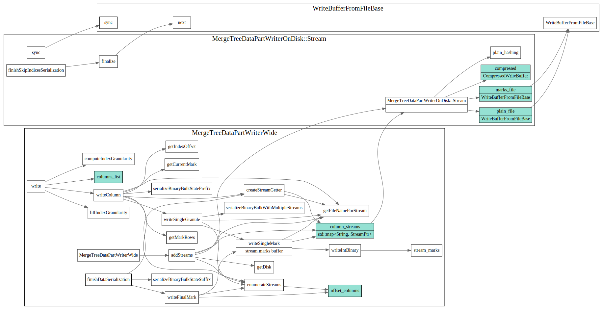
其他杂项TODO
WriteBuffer
write buffer派生
StorageMergeTree
什么是MergeTree？原理是啥？有啥优缺点
MergeTree存储结构需要对用户写入的数据做排序然后进行有序存储，数据有序存储带来两大核心优势：
struct
read
write
write 返回一个MergeTreeBlockOutputStream
WriteTempPart
mutate
mergeMutateTask
finalizeMutatedPart
Initialize and write to disk new part fields like checksums, columns,
TiDB
TiDB 学习资料整理
参考资料
本文主要摘自pingcap 如下几篇blog, 从整体上介绍了tidb/tikv的设计架构，以及为什么要这么设计，为了解决什么问题。 看完后能对tidb有个整体的认识。
TiDb 整体架构

TiDB包含三大核心组件，TiDB/TiKV/PD, 组件之间通过GRPC通信, 各自功能如下：TiDB Operator，让 TiDB 成为真正的 Cloud-Native 数据库
- TiDB Server：主要负责 SQL 的解析器和优化器，它相当于计算执行层，同时也负责客户端接入和交互。
- TiKV Server：是一套分布式的 Key-Value 存储引擎，它承担整个数据库的存储层，数据的水平扩展和多副本高可用特性都是在这一层实现。
- PD Server：相当于分布式数据库的大脑，一方面负责收集和维护数据在各个 TiKV 节点的分布情况，另一方面 PD 承担调度器的角色，根据数据分布状况以及各个存储节点的负载来采取合适的调度策略，维持整个系统的平衡与稳定。
TiDB/TiKV 背后对应的论文基础How do we build TiDB, Google Spanner/F1, Raft.

tidb

tidb开发选择从上往下开发，无缝兼容MYSQL协议。talk is cheap, show me the test，使用了大量的测试用例来保证正确性。

关系模型到 Key-Value 模型的映射
CREATE TABLE User {
ID int,
Name varchar(20),
Role varchar(20),
Age int,
PRIMARY KEY (ID),
Key idxAge (age)
};
每行数据按照如下规则进行编码成 Key-Value pair：
Key: tablePrefix{tableID}_recordPrefixSep{rowID}
Value: [col1, col2, col3, col4]
其中 Key 的 tablePrefix/recordPrefixSep 都是特定的字符串常量，用于在 KV 空间内区分其他数据。 对于 Index 数据，会按照如下规则编码成 Key-Value pair：
Key: tablePrefix{tableID}_indexPrefixSep{indexID}_indexedColumnsValue
Value: rowID
注意上述编码规则中的 Key 里面的各种 xxPrefix 都是字符串常量，作用都是区分命名空间，以免不同类型的数据之间相互冲突，定义如下：
var(
tablePrefix = []byte{'t'}
recordPrefixSep = []byte("_r")
indexPrefixSep = []byte("_i")
)
tikv
TiKV 利用 Raft 来做数据复制，每个数据变更都会落地为一条 Raft 日志，通过 Raft 的日志复制功能，将数据安全可靠地同步到 Group 的多数节点中。 通过单机的 RocksDB，我们可以将数据快速地存储在磁盘上；通过 Raft，我们可以将数据复制到多台机器上，以防单机失效。数据的写入是通过 Raft 这一层的接口写入，而不是直接写 RocksDB。通过实现 Raft，我们拥有了一个分布式的 KV，现在再也不用担心某台机器挂掉了。


MVCC
很多数据库都会实现多版本控制（MVCC），TiKV 也不例外。设想这样的场景，两个 Client 同时去修改一个 Key 的 Value，如果没有 MVCC，就需要对数据上锁，在分布式场景下，可能会带来性能以及死锁问题。 TiKV 的 MVCC 实现是通过在 Key 后面添加 Version 来实现，简单来说，没有 MVCC 之前，可以把 TiKV 看做这样的：
pd
下面问题值得仔细思考。
- 如何保证同一个 Region 的多个 Replica 分布在不同的节点上？更进一步，如果在一台机器上启动多个 TiKV 实例，会有什么问题？
- TiKV 集群进行跨机房部署用于容灾的时候，如何保证一个机房掉线，不会丢失 Raft Group 的多个 Replica？
- 添加一个节点进入 TiKV 集群之后，如何将集群中其他节点上的数据搬过来?
- 当一个节点掉线时，会出现什么问题？整个集群需要做什么事情？如果节点只是短暂掉线（重启服务），那么如何处理？如果节点是长时间掉线（磁盘故障，数据全部丢失），需要如何处理？
- 假设集群需要每个 Raft Group 有 N 个副本，那么对于单个 Raft Group 来说，Replica 数量可能会不够多（例如节点掉线，失去副本），也可能会 过于多（例如掉线的节点又回复正常，自动加入集群）。那么如何调节 Replica 个数？
- 读/写都是通过 Leader 进行，如果 Leader 只集中在少量节点上，会对集群有什么影响？
- 并不是所有的 Region 都被频繁的访问，可能访问热点只在少数几个 Region，这个时候我们需要做什么？
- 集群在做负载均衡的时候，往往需要搬迁数据，这种数据的迁移会不会占用大量的网络带宽、磁盘 IO 以及 CPU？进而影响在线服务？
作为一个分布式高可用存储系统，必须满足的需求，包括四种：
- 副本数量不能多也不能少
- 副本需要分布在不同的机器上
- 新加节点后，可以将其他节点上的副本迁移过来
- 节点下线后，需要将该节点的数据迁移走
作为一个良好的分布式系统，需要优化的地方，包括：
- 维持整个集群的 Leader 分布均匀
- 维持每个节点的储存容量均匀
- 维持访问热点分布均匀
- 控制 Balance 的速度，避免影响在线服务
- 管理节点状态，包括手动上线/下线节点，以及自动下线失效节点
TiDB Server Main Loop
跟着官方的tidb源码阅读博客，看了TiDB main函数，大致了解了一个SQL的处理过程
conn session
下图显示了TiDB中Accept一个mysql连接的处理流程，对于每个新的conn, TiDB会启动一个goroutine来处理这个conn, 并按照Mysql协议，处理不同的mysql cmd。 每个conn在server端会有个对应的session.
对于Query语句，会session.Execute生成一个执行器，返回一个resultSet, 最后调用writeResultset, 从ResultSet.Next中获取结果，然后将结果返回给客户端。
一个sql语句执行过程中经过以下几个过程:
ParseSQL将SQL语句解析为stmt ast treeCompile将stmt ast tree 转换为physical planBuildExecutor创建executorresultSet.Next驱动executor执行
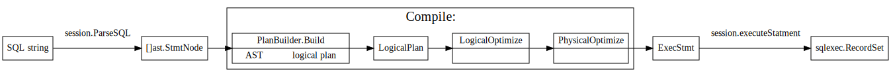
ParseSQL
StmtNodes
StmtNode 接口定义
// Node is the basic element of the AST.
// Interfaces embed Node should have 'Node' name suffix.
type Node interface {
// Restore returns the sql text from ast tree
Restore(ctx *format.RestoreCtx) error
// Accept accepts Visitor to visit itself.
// The returned node should replace original node.
// ok returns false to stop visiting.
//
// Implementation of this method should first call visitor.Enter,
// assign the returned node to its method receiver, if skipChildren returns true,
// children should be skipped. Otherwise, call its children in particular order that
// later elements depends on former elements. Finally, return visitor.Leave.
Accept(v Visitor) (node Node, ok bool)
// Text returns the original text of the element.
Text() string
// SetText sets original text to the Node.
SetText(text string)
}
// StmtNode represents statement node.
// Name of implementations should have 'Stmt' suffix.
type StmtNode interface {
Node
statement()
}
stmtNode实现种类和继承关系
Compile
Compile中首先使用planbuilder，将stmt ast 树转换为logical plan,
然后logicalOptimize做基于规则的逻辑优化，physicalOptimize会根据
cost选择最佳的physical plan. 最后postOptimize还会做一波优化。
logical plan optimize
逻辑优化(Rule-based-Optimization, 简称RBO)，主要依据关系代数的等价交换规则做一些逻辑变换。
var optRuleList = []logicalOptRule{
&gcSubstituter{},
&columnPruner{},
&buildKeySolver{},
&decorrelateSolver{},
&aggregationEliminator{},
&projectionEliminator{},
&maxMinEliminator{},
&ppdSolver{},
&outerJoinEliminator{},
&partitionProcessor{},
&aggregationPushDownSolver{},
&pushDownTopNOptimizer{},
&joinReOrderSolver{},
&columnPruner{}, // column pruning again at last, note it will mess up the results of buildKeySolver
}
Physical Optimization
物理优化，主要通过对查询的数据读取、表连接方式、表连接顺序、排序等技术进行优化。 基于代价的优化（CBO), 依赖于统计信息的准确性与及时性，执行计划会及时的根据数据变换做对应的调整
主要实现在函数findBestTask中，每个logical plan都实现了这个findBestTask接口, 具体实现在planner/core/find_best_task.go中
其中baseLogicalPlan.findBestTask 为封装的基类函数
在attach2Task中会更新task的cost
findBestTask

// findBestTask converts the logical plan to the physical plan. It's a new interface.
// It is called recursively from the parent to the children to create the result physical plan.
// Some logical plans will convert the children to the physical plans in different ways, and return the one
// With the lowest cost and how many plans are found in this function.
// planCounter is a counter for planner to force a plan.
// If planCounter > 0, the clock_th plan generated in this function will be returned.
// If planCounter = 0, the plan generated in this function will not be considered.
// If planCounter = -1, then we will not force plan.
findBestTask(prop *property.PhysicalProperty, planCounter *PlanCounterTp) (task, int64, error)
// attach2Task makes the current physical plan as the father of task's physicalPlan and updates the cost of
// current task. If the child's task is cop task, some operator may close this task and return a new rootTask.
attach2Task(...task) task
findBestTask最后的输出为task, 可以使用explain查看最后生成的task
>create table t (id varchar(31), name varchar(50), age int, key id_idx(id));
>explain select name, age from t where age > 18;
+-----------------------+---------+-----------+---------------+--------------------------------+
| id | estRows | task | access object | operator info |
+-----------------------+---------+-----------+---------------+--------------------------------+
| Projection_4 | 0.00 | root | | tests.t.name, tests.t.age |
| └─TableReader_7 | 0.00 | root | | data:Selection_6 |
| └─Selection_6 | 0.00 | cop[tikv] | | eq(tests.t.id, "pingcap") |
| └─TableFullScan_5 | 1.00 | cop[tikv] | table:t | keep order:false, stats:pseudo |
+-----------------------+---------+-----------+---------------+--------------------------------+
task
cop task 是指被下推到 KV 端分布式执行的计算任务，root task 是指在 TiDB 端单点执行的计算任务。
type task interface {
count() float64
addCost(cost float64)
cost() float64
copy() task
plan() PhysicalPlan
invalid() bool
}
rootTask
// rootTask is the final sink node of a plan graph. It should be a single goroutine on tidb.
type rootTask struct {
p PhysicalPlan
cst float64
}
copTask
// copTask is a task that runs in a distributed kv store.
// TODO: In future, we should split copTask to indexTask and tableTask.
type copTask struct {
indexPlan PhysicalPlan
tablePlan PhysicalPlan
cst float64
// indexPlanFinished means we have finished index plan.
indexPlanFinished bool
// keepOrder indicates if the plan scans data by order.
keepOrder bool
// doubleReadNeedProj means an extra prune is needed because
// in double read case, it may output one more column for handle(row id).
doubleReadNeedProj bool
extraHandleCol *expression.Column
commonHandleCols []*expression.Column
// tblColHists stores the original stats of DataSource, it is used to get
// average row width when computing network cost.
tblColHists *statistics.HistColl
// tblCols stores the original columns of DataSource before being pruned, it
// is used to compute average row width when computing scan cost.
tblCols []*expression.Column
idxMergePartPlans []PhysicalPlan
// rootTaskConds stores select conditions containing virtual columns.
// These conditions can't push to TiKV, so we have to add a selection for rootTask
rootTaskConds []expression.Expression
// For table partition.
partitionInfo PartitionInfo
}
ExecStmt
Compile后最后返回的数据结构为ExecStmt, 接下来会使用buildExecutor把ExecSmt
转变为executor.
// ExecStmt implements the sqlexec.Statement interface, it builds a planner.Plan to an sqlexec.Statement.
type ExecStmt struct {
// GoCtx stores parent go context.Context for a stmt.
GoCtx context.Context
// InfoSchema stores a reference to the schema information.
InfoSchema infoschema.InfoSchema
// Plan stores a reference to the final physical plan.
Plan plannercore.Plan
// Text represents the origin query text.
Text string
StmtNode ast.StmtNode
Ctx sessionctx.Context
// LowerPriority represents whether to lower the execution priority of a query.
LowerPriority bool
isPreparedStmt bool
isSelectForUpdate bool
retryCount uint
retryStartTime time.Time
// OutputNames will be set if using cached plan
OutputNames []*types.FieldName
PsStmt *plannercore.CachedPrepareStmt
}
Executor
根据physical plan生成相应的executor, Executor interface如下, 使用了Volcano模型，接口用起来和迭代器差不多，采用Open-Next-Close套路来使用。
Open: 做一些初始化工作Next: 执行具体操作Close: 做一些清理操作
// Executor is the physical implementation of a algebra operator.
//
// In TiDB, all algebra operators are implemented as iterators, i.e., they
// support a simple Open-Next-Close protocol. See this paper for more details:
//
// "Volcano-An Extensible and Parallel Query Evaluation System"
//
// Different from Volcano's execution model, a "Next" function call in TiDB will
// return a batch of rows, other than a single row in Volcano.
// NOTE: Executors must call "chk.Reset()" before appending their results to it.
type Executor interface {
base() *baseExecutor
Open(context.Context) error
Next(ctx context.Context, req *chunk.Chunk) error
Close() error
Schema() *expression.Schema
}
RecordSet
executor的next方法，将由recordset的next来驱动不断地执行。
下图摘自2 executor本身
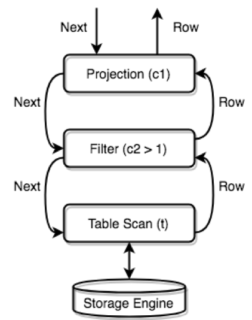
handleNoDelay
Insert 这种不需要返回数据的语句，只需要把语句执行完成即可。这类语句也是通过 Next 驱动执行，驱动点在构造 recordSet 结构之前

RecordSet driver
// RecordSet is an abstract result set interface to help get data from Plan.
type RecordSet interface {
// Fields gets result fields.
Fields() []*ast.ResultField
// Next reads records into chunk.
Next(ctx context.Context, req *chunk.Chunk) error
// NewChunk create a chunk.
NewChunk() *chunk.Chunk
// Close closes the underlying iterator, call Next after Close will
// restart the iteration.
Close() error
}
RecordSet Next方法接口的实现.
// Next use uses recordSet's executor to get next available chunk for later usage.
// If chunk does not contain any rows, then we update last query found rows in session variable as current found rows.
// The reason we need update is that chunk with 0 rows indicating we already finished current query, we need prepare for
// next query.
// If stmt is not nil and chunk with some rows inside, we simply update last query found rows by the number of row in chunk.
func (a *recordSet) Next(ctx context.Context, req *chunk.Chunk) error {
err := Next(ctx, a.executor, req)
if err != nil {
a.lastErr = err
return err
}
numRows := req.NumRows()
if numRows == 0 {
if a.stmt != nil {
a.stmt.Ctx.GetSessionVars().LastFoundRows = a.stmt.Ctx.GetSessionVars().StmtCtx.FoundRows()
}
return nil
}
if a.stmt != nil {
a.stmt.Ctx.GetSessionVars().StmtCtx.AddFoundRows(uint64(numRows))
}
return nil
}
在writeResult时候不断调用RecordSet的Next方法，去驱动调用executor的Next;
// writeChunks writes data from a Chunk, which filled data by a ResultSet, into a connection.
// binary specifies the way to dump data. It throws any error while dumping data.
// serverStatus, a flag bit represents server information
func (cc *clientConn) writeChunks(ctx context.Context, rs ResultSet, binary bool, serverStatus uint16) error {
data := cc.alloc.AllocWithLen(4, 1024)
req := rs.NewChunk()
//...
for {
// Here server.tidbResultSet implements Next method.
err := rs.Next(ctx, req)
/...
rowCount := req.NumRows()
//...
for i := 0; i < rowCount; i++ {
data = data[0:4]
/...
if err = cc.writePacket(data); err != nil {
return err
}
//...
}
}
return cc.writeEOF(serverStatus)
}
Ref
Insert 语句
InsertStmt
Parse
parser.y 将insert语句解析为InsertStmt
TableName:
Identifier
{
$$ = &ast.TableName{Name: model.NewCIStr($1)}
}
| Identifier '.' Identifier
{
$$ = &ast.TableName{Schema: model.NewCIStr($1), Name: model.NewCIStr($3)}
}
InsertIntoStmt:
"INSERT" TableOptimizerHints PriorityOpt IgnoreOptional IntoOpt TableName PartitionNameListOpt InsertValues OnDuplicateKeyUpdate
{
x := $8.(*ast.InsertStmt)
x.Priority = $3.(mysql.PriorityEnum)
x.IgnoreErr = $4.(bool)
// Wraps many layers here so that it can be processed the same way as select statement.
ts := &ast.TableSource{Source: $6.(*ast.TableName)}
x.Table = &ast.TableRefsClause{TableRefs: &ast.Join{Left: ts}}
if $9 != nil {
x.OnDuplicate = $9.([]*ast.Assignment)
}
if $2 != nil {
x.TableHints = $2.([]*ast.TableOptimizerHint)
}
x.PartitionNames = $7.([]model.CIStr)
$$ = x
}
解析后的InsertStmt结构如下
// InsertStmt is a statement to insert new rows into an existing table.
// See https://dev.mysql.com/doc/refman/5.7/en/insert.html
type InsertStmt struct {
dmlNode
IsReplace bool
IgnoreErr bool
Table *TableRefsClause
Columns []*ColumnName
Lists [][]ExprNode
Setlist []*Assignment
Priority mysql.PriorityEnum
OnDuplicate []*Assignment
Select ResultSetNode
// TableHints represents the table level Optimizer Hint for join type.
TableHints []*TableOptimizerHint
PartitionNames []model.CIStr
}
Preprocess
使用preprocess函数补全table的info信息, 找到要插入table.
schema 在tidb server内存中信息如下：
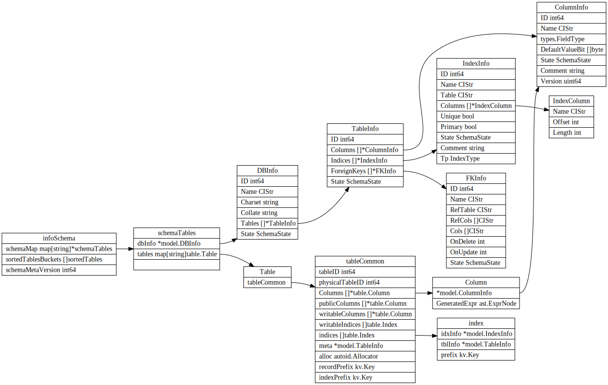
PlanBuilder.buildInsert

InsertExec
数据结构定义如下
// InsertExec represents an insert executor.
type InsertExec struct {
*InsertValues
OnDuplicate []*expression.Assignment
evalBuffer4Dup chunk.MutRow
curInsertVals chunk.MutRow
row4Update []types.Datum
Priority mysql.PriorityEnum
}
// InsertValues is the data to insert.
type InsertValues struct {
baseExecutor
rowCount uint64
curBatchCnt uint64
maxRowsInBatch uint64
lastInsertID uint64
SelectExec Executor
Table table.Table
Columns []*ast.ColumnName
Lists [][]expression.Expression
SetList []*expression.Assignment
GenExprs []expression.Expression
insertColumns []*table.Column
// colDefaultVals is used to store casted default value.
// Because not every insert statement needs colDefaultVals, so we will init the buffer lazily.
colDefaultVals []defaultVal
evalBuffer chunk.MutRow
evalBufferTypes []*types.FieldType
allAssignmentsAreConstant bool
hasRefCols bool
hasExtraHandle bool
// Fill the autoID lazily to datum. This is used for being compatible with JDBC using getGeneratedKeys().
// `insert|replace values` can guarantee consecutive autoID in a batch.
// Other statements like `insert select from` don't guarantee consecutive autoID.
// https://dev.mysql.com/doc/refman/8.0/en/innodb-auto-increment-handling.html
lazyFillAutoID bool
memTracker *memory.Tracker
stats *InsertRuntimeStat
}
type baseExecutor struct {
ctx sessionctx.Context
id int
schema *expression.Schema // output schema
initCap int
maxChunkSize int
children []Executor
retFieldTypes []*types.FieldType
runtimeStats *execdetails.BasicRuntimeStats
}
Next
最终会调用Table.AddRecord 接口向表中插入记录
Table AddRecord
allocHandleIDs
encode key/value
pingcap的博客三篇文章了解 TiDB 技术内幕 - 说计算, 中介绍了row/index的key value编码方式：
TiDB 对每个表分配一个 TableID，每一个索引都会分配一个 IndexID，每一行分配一个 RowID（如果表有整数型的 Primary Key，那么会用 Primary Key 的值当做 RowID），其中 TableID 在整个集群内唯一，IndexID/RowID 在表内唯一，这些 ID 都是 int64 类型。
row key/value 编码如下:
Key: tablePrefix{tableID}_recordPrefixSep{rowID}
Value: [col1, col2, col3, col4]
index的key编码如下:
Key: tablePrefix{tableID}_indexPrefixSep{indexID}_indexedColumnsValue
Value: rowID
KV
Transaction
最终commit时候，首先将MemBuffer转为mutation, 最后提交到tikv。
commit 的被调用流程如下，
Select 语句
SelectStmt
type SelectStmt struct {
dmlNode
resultSetNode
// SelectStmtOpts wraps around select hints and switches.
*SelectStmtOpts
// Distinct represents whether the select has distinct option.
Distinct bool
// From is the from clause of the query.
From *TableRefsClause
// Where is the where clause in select statement.
Where ExprNode
// Fields is the select expression list.
Fields *FieldList
// GroupBy is the group by expression list.
GroupBy *GroupByClause
// Having is the having condition.
Having *HavingClause
// WindowSpecs is the window specification list.
WindowSpecs []WindowSpec
// OrderBy is the ordering expression list.
OrderBy *OrderByClause
// Limit is the limit clause.
Limit *Limit
// LockInfo is the lock type
LockInfo *SelectLockInfo
// TableHints represents the table level Optimizer Hint for join type
TableHints []*TableOptimizerHint
// IsInBraces indicates whether it's a stmt in brace.
IsInBraces bool
// QueryBlockOffset indicates the order of this SelectStmt if counted from left to right in the sql text.
QueryBlockOffset int
// SelectIntoOpt is the select-into option.
SelectIntoOpt *SelectIntoOption
// AfterSetOperator indicates the SelectStmt after which type of set operator
AfterSetOperator *SetOprType
// Kind refer to three kind of statement: SelectStmt, TableStmt and ValuesStmt
Kind SelectStmtKind
// Lists is filled only when Kind == SelectStmtKindValues
Lists []*RowExpr
}
LogicalPlan
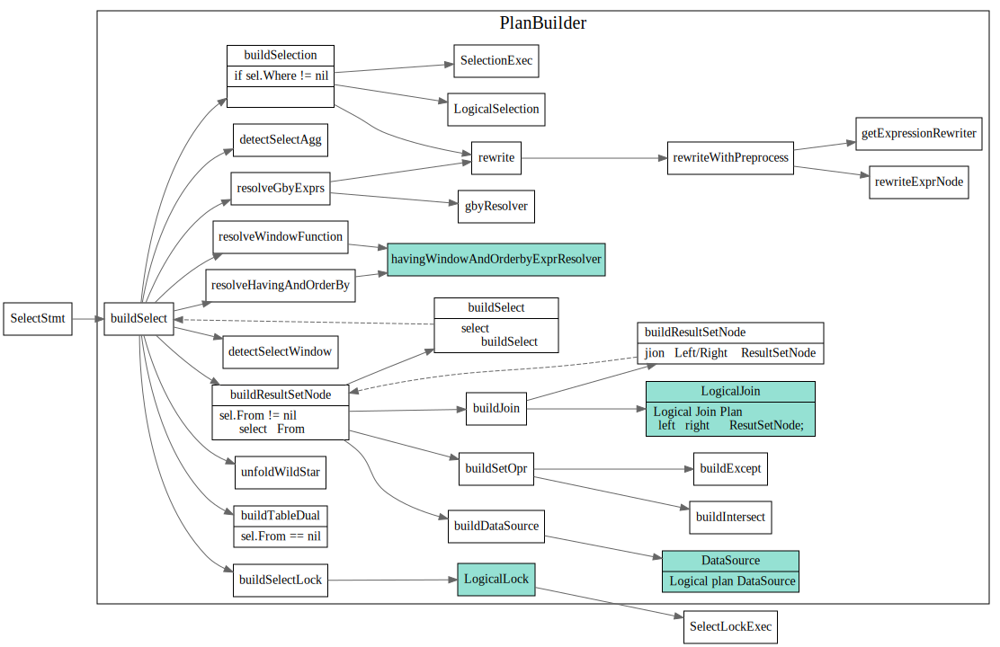
PhysicalPlan
DataSource.findBestTask
LogicalJoin.exhaustPhysicalPlans
Executor
SelectionExec
// SelectionExec represents a filter executor.
type SelectionExec struct {
baseExecutor
batched bool
filters []expression.Expression
selected []bool
inputIter *chunk.Iterator4Chunk
inputRow chunk.Row
childResult *chunk.Chunk
memTracker *memory.Tracker
}
生成的计划
explain select name, age from t where id = 'pingcap';
+-----------------------+---------+-----------+---------------+--------------------------------+
| id | estRows | task | access object | operator info |
+-----------------------+---------+-----------+---------------+--------------------------------+
| Projection_4 | 0.00 | root | | tests.t.name, tests.t.age |
| └─TableReader_7 | 0.00 | root | | data:Selection_6 |
| └─Selection_6 | 0.00 | cop[tikv] | | eq(tests.t.id, "pingcap") |
| └─TableFullScan_5 | 3.00 | cop[tikv] | table:t | keep order:false, stats:pseudo |
+-----------------------+---------+-----------+---------------+--------------------------------+
TiDB 基本数据类型
Datum
// Datum is a data box holds different kind of data.
// It has better performance and is easier to use than `interface{}`.
type Datum struct {
k byte // datum kind.
decimal uint16 // decimal can hold uint16 values.
length uint32 // length can hold uint32 values.
i int64 // i can hold int64 uint64 float64 values.
collation string // collation hold the collation information for string value.
b []byte // b can hold string or []byte values.
x interface{} // x hold all other types.
}
const (
KindNull byte = 0
KindInt64 byte = 1
KindUint64 byte = 2
KindFloat32 byte = 3
KindFloat64 byte = 4
KindString byte = 5
KindBytes byte = 6
KindBinaryLiteral byte = 7 // Used for BIT / HEX literals.
KindMysqlDecimal byte = 8
KindMysqlDuration byte = 9
KindMysqlEnum byte = 10
KindMysqlBit byte = 11 // Used for BIT table column values.
KindMysqlSet byte = 12
KindMysqlTime byte = 13
KindInterface byte = 14
KindMinNotNull byte = 15
KindMaxValue byte = 16
KindRaw byte = 17
KindMysqlJSON byte = 18
)
Chunk
// Chunk stores multiple rows of data in Apache Arrow format.
// See https://arrow.apache.org/docs/format/Columnar.html#physical-memory-layout
// Values are appended in compact format and can be directly accessed without decoding.
// When the chunk is done processing, we can reuse the allocated memory by resetting it.
type Chunk struct {
// sel indicates which rows are selected.
// If it is nil, all rows are selected.
sel []int
columns []*Column
// numVirtualRows indicates the number of virtual rows, which have zero Column.
// It is used only when this Chunk doesn't hold any data, i.e. "len(columns)==0".
numVirtualRows int
// capacity indicates the max number of rows this chunk can hold.
// TODO: replace all usages of capacity to requiredRows and remove this field
capacity int
// requiredRows indicates how many rows the parent executor want.
requiredRows int
}
Column
Column offsets[i]表示第i个元素在data中的偏移, data和elmBuf分别作用是啥？ elmBuf用来临时append value,将value转为[]byte，然后再append到data上 fixed sized的offsfet数组就不用了，可以直接算出来，这样就省下了offset这个数组.
// Column stores one column of data in Apache Arrow format.
// See https://arrow.apache.org/docs/memory_layout.html
type Column struct {
length int
nullBitmap []byte // bit 0 is null, 1 is not null
offsets []int64
data []byte
elemBuf []byte
}
Row
// Row represents a row of data, can be used to access values.
type Row struct {
c *Chunk
idx int
}
Range
// Range represents a range generated in physical plan building phase.
type Range struct {
LowVal []types.Datum
HighVal []types.Datum
LowExclude bool // Low value is exclusive.
HighExclude bool // High value is exclusive.
}
RowContainer
// RowContainer provides a place for many rows, so many that we might want to spill them into disk.
type RowContainer struct {
m struct {
// RWMutex guarantees spill and get operator for rowContainer is mutually exclusive.
sync.RWMutex
// records stores the chunks in memory.
records *List
// recordsInDisk stores the chunks in disk.
recordsInDisk *ListInDisk
// spillError stores the error when spilling.
spillError error
}
fieldType []*types.FieldType
chunkSize int
numRow int
memTracker *memory.Tracker
diskTracker *disk.Tracker
actionSpill *SpillDiskAction
}
expression
Expression

builtinFunc
Column
Schema
DDL
本文主要描述TiDB在分布式场景下支持无锁schema变更。
Schema 信息会存储在TiKV中，每个TiDB server内存中也会有个Schema信息。
Schema
Schema in TiKV
Schema在kv中的存储形式如下
//meta/meta.go // Meta structure:
// NextGlobalID -> int64
// SchemaVersion -> int64
// DBs -> {
// DB:1 -> db meta data []byte
// DB:2 -> db meta data []byte
// }
// DB:1 -> {
// Table:1 -> table meta data []byte
// Table:2 -> table meta data []byte
// TID:1 -> int64
// TID:2 -> int64
// }
//
TiDB meta/meta.go模块封装了对存储在TiKV中schema进行的操作，在ddl owner节点在
runDDLJobs时候，会调用meta的方法, 来修改schema。
TiDB loadSchemaInLoop 中也会用到meta方法来加载schema.
模块层次之间调用如下图所示:

// Meta is for handling meta information in a transaction.
type Meta struct {
txn *structure.TxStructure
StartTS uint64 // StartTS is the txn's start TS.
jobListKey JobListKeyType
}
// TxStructure supports some simple data structures like string, hash, list, etc... and
// you can use these in a transaction.
type TxStructure struct {
reader kv.Retriever
readWriter kv.RetrieverMutator
prefix []byte
}
// RetrieverMutator is the interface that groups Retriever and Mutator interfaces.
type RetrieverMutator interface {
Retriever
Mutator
}
// Getter is the interface for the Get method.
type Getter interface {
// Get gets the value for key k from kv store.
// If corresponding kv pair does not exist, it returns nil and ErrNotExist.
Get(ctx context.Context, k Key) ([]byte, error)
}
// Retriever is the interface wraps the basic Get and Seek methods.
type Retriever interface {
Getter
// Iter creates an Iterator positioned on the first entry that k <= entry's key.
// If such entry is not found, it returns an invalid Iterator with no error.
// It yields only keys that < upperBound. If upperBound is nil, it means the upperBound is unbounded.
// The Iterator must be Closed after use.
Iter(k Key, upperBound Key) (Iterator, error)
// IterReverse creates a reversed Iterator positioned on the first entry which key is less than k.
// The returned iterator will iterate from greater key to smaller key.
// If k is nil, the returned iterator will be positioned at the last key.
// TODO: Add lower bound limit
IterReverse(k Key) (Iterator, error)
}
// Mutator is the interface wraps the basic Set and Delete methods.
type Mutator interface {
// Set sets the value for key k as v into kv store.
// v must NOT be nil or empty, otherwise it returns ErrCannotSetNilValue.
Set(k Key, v []byte) error
// Delete removes the entry for key k from kv store.
Delete(k Key) error
}
Schema in TiDB
TiDB 使用Schema来将关系数据库中的table/index等映射到TiKV的kv存储中。 Schema本身也是以kv的形式保存在TiKV中的。 TiDB是无状态的，而且在TiDB内存 中也加载这一份Schema, 在TiDB server中infoSchema在内存中结构如下
Schema Modification
TiDB ddl 请求处理请求流程如下图所示(摘自TiDB 源码阅读系列文章（十七）DDL 源码解析)
每个tidb server都会起一个ddl worker，但只有一个节点的 ddl worker会被选为owner。
owner节点的ddl worker 从ddl job queue 中取job
执行job, 调用Meta.go 中定义的CreateDatabase等接口
修改存储在TiKV中的schema。
其他TiDB server收到ddl 请求，只用把这个请求转ddl job 放入ddl job queue中 即可。
问题：每个tidb server是怎么更新自己内存中的schema 信息的？ 怎么知道内存中的schema已经过期了的？
owner 节点的ddl worker handleDDLJobQueue 主要调用关系如下图所示：
Owner 选举
TiDB load schema
TiDB每隔lease/2 就会去Tikv中去reload schema, 首先会检查版本号，如果tikv中版本号和TiDB
中版本一致的话，就不用继续加载了。否则，tryLoadSchemaDiffs先尝试加载schemaDiff, 如果不行的话，
调用fetchAllSchemasWithTables会加载所有的schema
Online Schema Change
Schema state
DDL Job
TiDB 在同一时刻，只允许一个节点执行 DDL 操作。用户可以把多个 DDL 请求发给任何 TiDB 节点，但是所有的 DDL 请求在 TiDB 内部是由 owner 节点的 worker 串行执行的。
- worker：每个节点都有一个 worker 用来处理 DDL 操作。
- owner：整个集群中只有一个节点能当选 owner，每个节点都可能当选这个角色。当选 owner 后的节点 worker 才有处理 DDL 操作的权利。owner 节点的产生是用 Etcd 的选举功能从多个 TiDB 节点选举出 owner 节点。owner 是有任期的，owner 会主动维护自己的任期，即续约。当 owner 节点宕机后，其他节点可以通过 Etcd 感知到并且选举出新的 owner。
以上内容摘自4
Schema 存储
Schema 存储格式
Schema在kv中的存储形式如下
//meta/meta.go // Meta structure:
// NextGlobalID -> int64
// SchemaVersion -> int64
// DBs -> {
// DB:1 -> db meta data []byte
// DB:2 -> db meta data []byte
// }
// DB:1 -> {
// Table:1 -> table meta data []byte
// Table:2 -> table meta data []byte
// TID:1 -> int64
// TID:2 -> int64
// }
//
meta
TiDB meta/meta.go模块封装了对存储在TiKV中schema进行的操作
- ddl owner节点在
runDDLJobs时候，会调用meta的方法修改schema。 - TiDB
loadSchemaInLoop中调用meta方法来加载schema.
模块层次之间调用如下图所示:
// Meta is for handling meta information in a transaction.
type Meta struct {
txn *structure.TxStructure
StartTS uint64 // StartTS is the txn's start TS.
jobListKey JobListKeyType
}
// TxStructure supports some simple data structures like string, hash, list, etc... and
// you can use these in a transaction.
type TxStructure struct {
reader kv.Retriever
readWriter kv.RetrieverMutator
prefix []byte
}
// RetrieverMutator is the interface that groups Retriever and Mutator interfaces.
type RetrieverMutator interface {
Retriever
Mutator
}
// Getter is the interface for the Get method.
type Getter interface {
// Get gets the value for key k from kv store.
// If corresponding kv pair does not exist, it returns nil and ErrNotExist.
Get(ctx context.Context, k Key) ([]byte, error)
}
// Retriever is the interface wraps the basic Get and Seek methods.
type Retriever interface {
Getter
// Iter creates an Iterator positioned on the first entry that k <= entry's key.
// If such entry is not found, it returns an invalid Iterator with no error.
// It yields only keys that < upperBound. If upperBound is nil, it means the upperBound is unbounded.
// The Iterator must be Closed after use.
Iter(k Key, upperBound Key) (Iterator, error)
// IterReverse creates a reversed Iterator positioned on the first entry which key is less than k.
// The returned iterator will iterate from greater key to smaller key.
// If k is nil, the returned iterator will be positioned at the last key.
// TODO: Add lower bound limit
IterReverse(k Key) (Iterator, error)
}
// Mutator is the interface wraps the basic Set and Delete methods.
type Mutator interface {
// Set sets the value for key k as v into kv store.
// v must NOT be nil or empty, otherwise it returns ErrCannotSetNilValue.
Set(k Key, v []byte) error
// Delete removes the entry for key k from kv store.
Delete(k Key) error
}
Load Schema
Schema Cache
TiDB 使用Schema来将关系数据库中的table/index等映射到TiKV的kv存储中。
TiDB是无状态的，在TiDB内存中也加载这一份Schema, 在TiDB server中infoSchema在内存中结构如下
Schema Load
TiDB每隔lease/2 会去Tikv中去reload schema,
- 首先会检查版本号，如果tikv中版本号和TiDB 中版本一致的话，就不用继续加载了, 否则进入下一步
tryLoadSchemaDiffs先尝试加载schemaDiff, 如果失败，进入下一步- 调用
fetchAllSchemasWithTables会加载所有的schema
Schema Modification
DDL 处理流程
TiDB ddl 请求处理请求流程如下图所示(摘自TiDB 源码阅读系列文章（十七）DDL 源码解析)
每个tidb server都会起一个ddl worker，但只有一个节点的 ddl worker会被选为owner。
Owner 选举
TiDB 在同一时刻，只允许一个节点执行 DDL 操作。用户可以把多个 DDL 请求发给任何 TiDB 节点，但是所有的 DDL 请求在 TiDB 内部是由 owner 节点的 worker 串行执行的。
- worker：每个节点都有一个 worker 用来处理 DDL 操作。
- owner：整个集群中只有一个节点能当选 owner，每个节点都可能当选这个角色。当选 owner 后的节点 worker 才有处理 DDL 操作的权利。owner 节点的产生是用 Etcd 的选举功能从多个 TiDB 节点选举出 owner 节点。owner 是有任期的，owner 会主动维护自己的任期，即续约。当 owner 节点宕机后，其他节点可以通过 Etcd 感知到并且选举出新的 owner。
handleDDLJobQueue
owner节点的ddl worker 从ddl job queue 中取job
执行job, 调用Meta.go 中定义的CreateDatabase等接口
修改存储在TiKV中的schema。
其他TiDB server收到ddl 请求，只用把这个请求转ddl job 放入ddl job queue中 即可。
owner 节点的ddl worker handleDDLJobQueue 主要调用关系如下图所示：
Online Schema Change
Schema state
统计信息
概念
在 TiDB 中，我们维护的统计信息包括表的总行数，列的等深直方图，Count-Min Sketch，Null 值的个数，平均长度，不同值的数目等等 用于快速估算代价。
等深直方图
相比于等宽直方图，等深直方图在最坏情况下也可以很好的保证误差 等深直方图，就是落入每个桶里的值数量尽量相等。
CMSketch
Count-Min Sketch 是一种可以处理等值查询，Join 大小估计等的数据结构，并且可以提供很强的准确性保证。自 2003 年在文献 An improved data stream summary: The count-min sketch and its applications 中提出以来，由于其创建和使用的简单性获得了广泛的使用。
FMSketch
TiDB中实现
Histogram
一个Histogram对应一个column或者index的统计信息。
// Histogram represents statistics for a column or index.
type Histogram struct {
ID int64 // Column ID.
NDV int64 // Number of distinct values.
NullCount int64 // Number of null values.
// LastUpdateVersion is the version that this histogram updated last time.
LastUpdateVersion uint64
Tp *types.FieldType
// Histogram elements.
//
// A bucket bound is the smallest and greatest values stored in the bucket. The lower and upper bound
// are stored in one column.
//
// A bucket count is the number of items stored in all previous buckets and the current bucket.
// Bucket counts are always in increasing order.
//
// A bucket repeat is the number of repeats of the bucket value, it can be used to find popular values.
Bounds *chunk.Chunk
Buckets []Bucket
// Used for estimating fraction of the interval [lower, upper] that lies within the [lower, value].
// For some types like `Int`, we do not build it because we can get them directly from `Bounds`.
scalars []scalar
// TotColSize is the total column size for the histogram.
// For unfixed-len types, it includes LEN and BYTE.
TotColSize int64
// Correlation is the statistical correlation between physical row ordering and logical ordering of
// the column values. This ranges from -1 to +1, and it is only valid for Column histogram, not for
// Index histogram.
Correlation float64
}
// Bucket store the bucket count and repeat.
type Bucket struct {
Count int64
Repeat int64
}
type scalar struct {
lower float64
upper float64
commonPfxLen int // commonPfxLen is the common prefix length of the lower bound and upper bound when the value type is KindString or KindBytes.
}
生成统计信息
AnalyzeExec
在执行 analyze 语句的时候，TiDB 会将 analyze 请求下推到每一个 Region 上，然后将每一个 Region 的结果合并起来。
Analyze 语句
analyzeColumnsPushdown
analyzeIndexPushdown
QueryFeedback
收集QueryFeedback
Datasource对应的一些Executor: TableReaderExecutor, IndexReaderExecutor,
IndexLookupExecutor, IndexMergeReaderExecutor
执行时候会生成一些feedback信息
// Feedback represents the total scan count in range [lower, upper).
type Feedback struct {
Lower *types.Datum
Upper *types.Datum
Count int64
Repeat int64
}
// QueryFeedback is used to represent the query feedback info. It contains the query's scan ranges and number of rows
// in each range.
type QueryFeedback struct {
PhysicalID int64
Hist *Histogram
Tp int
Feedback []Feedback
Expected int64 // Expected is the Expected scan count of corresponding query.
actual int64 // actual is the actual scan count of corresponding query.
Valid bool // Valid represents the whether this query feedback is still Valid.
desc bool // desc represents the corresponding query is desc scan.
}
TablesRangesToKVRanges
// TablesRangesToKVRanges converts table ranges to "KeyRange".
func TablesRangesToKVRanges(tids []int64, ranges []*ranger.Range, fb *statistics.QueryFeedback) []kv.KeyRange {
if fb == nil || fb.Hist == nil {
return tableRangesToKVRangesWithoutSplit(tids, ranges)
}
krs := make([]kv.KeyRange, 0, len(ranges))
feedbackRanges := make([]*ranger.Range, 0, len(ranges))
for _, ran := range ranges {
low := codec.EncodeInt(nil, ran.LowVal[0].GetInt64())
high := codec.EncodeInt(nil, ran.HighVal[0].GetInt64())
if ran.LowExclude {
low = kv.Key(low).PrefixNext()
}
// If this range is split by histogram, then the high val will equal to one bucket's upper bound,
// since we need to guarantee each range falls inside the exactly one bucket, `PrefixNext` will make the
// high value greater than upper bound, so we store the range here.
r := &ranger.Range{LowVal: []types.Datum{types.NewBytesDatum(low)},
HighVal: []types.Datum{types.NewBytesDatum(high)}}
feedbackRanges = append(feedbackRanges, r)
if !ran.HighExclude {
high = kv.Key(high).PrefixNext()
}
for _, tid := range tids {
startKey := tablecodec.EncodeRowKey(tid, low)
endKey := tablecodec.EncodeRowKey(tid, high)
krs = append(krs, kv.KeyRange{StartKey: startKey, EndKey: endKey})
}
}
fb.StoreRanges(feedbackRanges)
return krs
}
这些信息会先插入到一个QueryFeedbackMap的一个队列中，
后面的updateStatsWorker 定期apply 这些feedback到自己的cache中。以及将这些
feedback apply到mysql.stats_*中
apply feedback locally
apply feedback
每个TiDB会将本地搜集到的feedback插到mysql.stats_feedback中，然后
由owner将表mysql.stats_feedback插入
mysql.stats_histograms, msyql.stats_buckets等表。
UpdateHistogram
没怎么看明白这块算法。
使用统计信息
加载统计信息
从mysql.stats_*表中加载信息。
每个TiDB server有个goroutine 周期性的更新stat信息 Handle can update stats info periodically.
在TiDB启动时候，会启动一个goroutine, loadStatsWorker
Update, 更新statsCache
加载载table的Histogram和CMSketch tableStatsFromStorage
Selectivity
StatsNode
// StatsNode is used for calculating selectivity.
type StatsNode struct {
Tp int
ID int64
// mask is a bit pattern whose ith bit will indicate whether the ith expression is covered by this index/column.
mask int64
// Ranges contains all the Ranges we got.
Ranges []*ranger.Range
// Selectivity indicates the Selectivity of this column/index.
Selectivity float64
// numCols is the number of columns contained in the index or column(which is always 1).
numCols int
// partCover indicates whether the bit in the mask is for a full cover or partial cover. It is only true
// when the condition is a DNF expression on index, and the expression is not totally extracted as access condition.
partCover bool
}
// Selectivity is a function calculate the selectivity of the expressions.
// The definition of selectivity is (row count after filter / row count before filter).
// And exprs must be CNF now, in other words, `exprs[0] and exprs[1] and ... and exprs[len - 1]` should be held when you call this.
// Currently the time complexity is o(n^2).
Selectivity:
- 计算表达式的ranges: ExtractColumnsFromExpressions
questions:
- correlated column 是什么意思？
- maskCovered作用是什么
- statsNode的作用是什么
参考
基本概念
在 TiDB 中，我们维护的统计信息包括表的总行数，列的等深直方图，Count-Min Sketch，Null 值的个数，平均长度，不同值的数目等等 用于快速估算代价。
等深直方图
相比于等宽直方图，等深直方图在最坏情况下也可以很好的保证误差 等深直方图，就是落入每个桶里的值数量尽量相等。
CMSketch
Count-Min Sketch 是一种可以处理等值查询，Join 大小估计等的数据结构，并且可以提供很强的准确性保证。自 2003 年在文献 An improved data stream summary: The count-min sketch and its applications 中提出以来，由于其创建和使用的简单性获得了广泛的使用。
FMSketch
stats tables
统计信息存储
在TiDB中统计信息会存在几个表中
mysql.stats_meta: 统计信息元信息mysql.stats_histograms: 统计信息直方图mysql.stats_buckets: 统计信息桶mysql.stats_extendedmysql.stats_feedback: 收集的stats feedback， 会被定期apply到上面的表中
// CreateStatsMetaTable stores the meta of table statistics.
CreateStatsMetaTable = `CREATE TABLE IF NOT EXISTS mysql.stats_meta (
version BIGINT(64) UNSIGNED NOT NULL,
table_id BIGINT(64) NOT NULL,
modify_count BIGINT(64) NOT NULL DEFAULT 0,
count BIGINT(64) UNSIGNED NOT NULL DEFAULT 0,
INDEX idx_ver(version),
UNIQUE INDEX tbl(table_id)
);`
// CreateStatsColsTable stores the statistics of table columns.
CreateStatsColsTable = `CREATE TABLE IF NOT EXISTS mysql.stats_histograms (
table_id BIGINT(64) NOT NULL,
is_index TINYINT(2) NOT NULL,
hist_id BIGINT(64) NOT NULL,
distinct_count BIGINT(64) NOT NULL,
null_count BIGINT(64) NOT NULL DEFAULT 0,
tot_col_size BIGINT(64) NOT NULL DEFAULT 0,
modify_count BIGINT(64) NOT NULL DEFAULT 0,
version BIGINT(64) UNSIGNED NOT NULL DEFAULT 0,
cm_sketch BLOB,
stats_ver BIGINT(64) NOT NULL DEFAULT 0,
flag BIGINT(64) NOT NULL DEFAULT 0,
correlation DOUBLE NOT NULL DEFAULT 0,
last_analyze_pos BLOB DEFAULT NULL,
UNIQUE INDEX tbl(table_id, is_index, hist_id)
);`
// CreateStatsBucketsTable stores the histogram info for every table columns.
CreateStatsBucketsTable = `CREATE TABLE IF NOT EXISTS mysql.stats_buckets (
table_id BIGINT(64) NOT NULL,
is_index TINYINT(2) NOT NULL,
hist_id BIGINT(64) NOT NULL,
bucket_id BIGINT(64) NOT NULL,
count BIGINT(64) NOT NULL,
repeats BIGINT(64) NOT NULL,
upper_bound BLOB NOT NULL,
lower_bound BLOB ,
UNIQUE INDEX tbl(table_id, is_index, hist_id, bucket_id)
);`
// CreateStatsFeedbackTable stores the feedback info which is used to update stats.
CreateStatsFeedbackTable = `CREATE TABLE IF NOT EXISTS mysql.stats_feedback (
table_id BIGINT(64) NOT NULL,
is_index TINYINT(2) NOT NULL,
hist_id BIGINT(64) NOT NULL,
feedback BLOB NOT NULL,
INDEX hist(table_id, is_index, hist_id)
// CreateStatsExtended stores the registered extended statistics.
CreateStatsExtended = `CREATE TABLE IF NOT EXISTS mysql.stats_extended (
stats_name varchar(32) NOT NULL,
db varchar(32) NOT NULL,
type tinyint(4) NOT NULL,
table_id bigint(64) NOT NULL,
column_ids varchar(32) NOT NULL,
scalar_stats double DEFAULT NULL,
blob_stats blob DEFAULT NULL,
version bigint(64) unsigned NOT NULL,
status tinyint(4) NOT NULL,
PRIMARY KEY(stats_name, db),
KEY idx_1 (table_id, status, version),
KEY idx_2 (status, version)
);`
// CreateStatsTopNTable stores topn data of a cmsketch with top n.
CreateStatsTopNTable = `CREATE TABLE IF NOT EXISTS mysql.stats_top_n (
table_id BIGINT(64) NOT NULL,
is_index TINYINT(2) NOT NULL,
hist_id BIGINT(64) NOT NULL,
value LONGBLOB,
count BIGINT(64) UNSIGNED NOT NULL,
INDEX tbl(table_id, is_index, hist_id)
);`
创建 stat tables
这些SQL将由ddl worker owner在启动的时候执行, 创建相应的Table
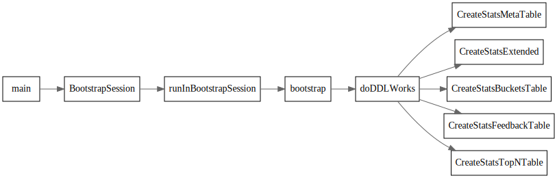
更新/缓存/加载 stats table
每个TiDB启动后，会调用UpdateTableStatsLoop，分别使用一个goroutine执行如下任务:
autoAnalzeWorker定时触发autoAnaly worker, 根据一定规则触发执行analyze table xxx, 执行AnlyzeExec,会后将结果写入mysql.stats_*中。loadStatsWorker把mysql.stat_*信息定期加载到本地缓存中。updateStatsWorker将本地收集的feedback apply到自己的本地缓存上，并写入mysql.stats_feedback中，如果该节点是owner, 会将mysql.stats_feedback表中信息apply到mysql.stat_*表中。
Analyze
AnalyzeExec
在执行 analyze 语句的时候，TiDB 会将 analyze 请求下推到每一个 Region 上，然后将每一个 Region 的结果合并起来。
Analyze 语句
analyzeColumnsPushdown
analyzeIndexPushdown
QueryFeedback
收集QueryFeedback
Datasource对应的一些Executor: TableReaderExecutor, IndexReaderExecutor,
IndexLookupExecutor, IndexMergeReaderExecutor
执行时候会生成一些feedback信息
// Feedback represents the total scan count in range [lower, upper).
type Feedback struct {
Lower *types.Datum
Upper *types.Datum
Count int64
Repeat int64
}
// QueryFeedback is used to represent the query feedback info. It contains the query's scan ranges and number of rows
// in each range.
type QueryFeedback struct {
PhysicalID int64
Hist *Histogram
Tp int
Feedback []Feedback
Expected int64 // Expected is the Expected scan count of corresponding query.
actual int64 // actual is the actual scan count of corresponding query.
Valid bool // Valid represents the whether this query feedback is still Valid.
desc bool // desc represents the corresponding query is desc scan.
}
TablesRangesToKVRanges
// TablesRangesToKVRanges converts table ranges to "KeyRange".
func TablesRangesToKVRanges(tids []int64, ranges []*ranger.Range, fb *statistics.QueryFeedback) []kv.KeyRange {
if fb == nil || fb.Hist == nil {
return tableRangesToKVRangesWithoutSplit(tids, ranges)
}
krs := make([]kv.KeyRange, 0, len(ranges))
feedbackRanges := make([]*ranger.Range, 0, len(ranges))
for _, ran := range ranges {
low := codec.EncodeInt(nil, ran.LowVal[0].GetInt64())
high := codec.EncodeInt(nil, ran.HighVal[0].GetInt64())
if ran.LowExclude {
low = kv.Key(low).PrefixNext()
}
// If this range is split by histogram, then the high val will equal to one bucket's upper bound,
// since we need to guarantee each range falls inside the exactly one bucket, `PrefixNext` will make the
// high value greater than upper bound, so we store the range here.
r := &ranger.Range{LowVal: []types.Datum{types.NewBytesDatum(low)},
HighVal: []types.Datum{types.NewBytesDatum(high)}}
feedbackRanges = append(feedbackRanges, r)
if !ran.HighExclude {
high = kv.Key(high).PrefixNext()
}
for _, tid := range tids {
startKey := tablecodec.EncodeRowKey(tid, low)
endKey := tablecodec.EncodeRowKey(tid, high)
krs = append(krs, kv.KeyRange{StartKey: startKey, EndKey: endKey})
}
}
fb.StoreRanges(feedbackRanges)
return krs
}
这些信息会先插入到一个QueryFeedbackMap的一个队列中，
后面的updateStatsWorker 定期apply 这些feedback到自己的cache中。以及将这些
feedback apply到mysql.stats_*中
apply feedback locally
apply feedback
每个TiDB会将本地搜集到的feedback插到mysql.stats_feedback中，然后
由owner将表mysql.stats_feedback插入
mysql.stats_histograms, msyql.stats_buckets等表。
UpdateHistogram
没怎么看明白这块算法。
统计信息使用场景
加载统计信息
从mysql.stats_*表中加载信息。
每个TiDB server有个goroutine 周期性的更新stat信息 Handle can update stats info periodically.
在TiDB启动时候，会启动一个goroutine, loadStatsWorker
Update, 更新statsCache
加载载table的Histogram和CMSketch tableStatsFromStorage
Selectivity
StatsNode
// StatsNode is used for calculating selectivity.
type StatsNode struct {
Tp int
ID int64
// mask is a bit pattern whose ith bit will indicate whether the ith expression is covered by this index/column.
mask int64
// Ranges contains all the Ranges we got.
Ranges []*ranger.Range
// Selectivity indicates the Selectivity of this column/index.
Selectivity float64
// numCols is the number of columns contained in the index or column(which is always 1).
numCols int
// partCover indicates whether the bit in the mask is for a full cover or partial cover. It is only true
// when the condition is a DNF expression on index, and the expression is not totally extracted as access condition.
partCover bool
}
// Selectivity is a function calculate the selectivity of the expressions.
// The definition of selectivity is (row count after filter / row count before filter).
// And exprs must be CNF now, in other words, `exprs[0] and exprs[1] and ... and exprs[len - 1]` should be held when you call this.
// Currently the time complexity is o(n^2).
Selectivity:
- 计算表达式的ranges: ExtractColumnsFromExpressions
questions:
- correlated column 是什么意思？
- maskCovered作用是什么
- statsNode的作用是什么
参考
LogicalPlan Optimize
LogicalPlan
列举下都有哪些logical plan
Schema
// Schema stands for the row schema and unique key information get from input.
type Schema struct {
Columns []*Column
Keys []KeyInfo
}
Expression
DataSource
type DataSource struct {
logicalSchemaProducer
astIndexHints []*ast.IndexHint
IndexHints []indexHintInfo
table table.Table
tableInfo *model.TableInfo
Columns []*model.ColumnInfo
DBName model.CIStr
TableAsName *model.CIStr
// indexMergeHints are the hint for indexmerge.
indexMergeHints []indexHintInfo
// pushedDownConds are the conditions that will be pushed down to coprocessor.
pushedDownConds []expression.Expression
// allConds contains all the filters on this table. For now it's maintained
// in predicate push down and used only in partition pruning.
allConds []expression.Expression
statisticTable *statistics.Table
tableStats *property.StatsInfo
// possibleAccessPaths stores all the possible access path for physical plan, including table scan.
possibleAccessPaths []*util.AccessPath
// The data source may be a partition, rather than a real table.
isPartition bool
physicalTableID int64
partitionNames []model.CIStr
// handleCol represents the handle column for the datasource, either the
// int primary key column or extra handle column.
//handleCol *expression.Column
handleCols HandleCols
// TblCols contains the original columns of table before being pruned, and it
// is used for estimating table scan cost.
TblCols []*expression.Column
// commonHandleCols and commonHandleLens save the info of primary key which is the clustered index.
commonHandleCols []*expression.Column
commonHandleLens []int
// TblColHists contains the Histogram of all original table columns,
// it is converted from statisticTable, and used for IO/network cost estimating.
TblColHists *statistics.HistColl
// preferStoreType means the DataSource is enforced to which storage.
preferStoreType int
// preferPartitions store the map, the key represents store type, the value represents the partition name list.
preferPartitions map[int][]model.CIStr
}
- DataSource 这个就是数据源，也就是表，select * from t 里面的 t。
- Selection 选择，例如 select xxx from t where xx = 5 里面的 where 过滤条件。
- Projection 投影， select c from t 里面的取 c 列是投影操作。
- Join 连接， select xx from t1, t2 where t1.c = t2.c 就是把 t1 t2 两个表做 Join。
哪些Logical plan 可能有多个child ? 感觉也就join/union/interset
优化规则
基于规则的优化 logicalOptimize
var optRuleList = []logicalOptRule{
&gcSubstituter{},
&columnPruner{},
&buildKeySolver{},
&decorrelateSolver{},
&aggregationEliminator{},
&projectionEliminator{},
&maxMinEliminator{},
&ppdSolver{},
&outerJoinEliminator{},
&partitionProcessor{},
&aggregationPushDownSolver{},
&pushDownTopNOptimizer{},
&joinReOrderSolver{},
&columnPruner{}, // column pruning again at last, note it will mess up the results of buildKeySolver
}
列裁剪
列裁剪的思想是这样的：对于用不上的列，没有必要读取它们的数据，无谓的浪费 IO 资源。比如说表 t 里面有 a b c d 四列。
构建节点属性(buildKeySolver)
LogicalPlan的BuildKeyInfo和MaxOneRow接口
// BuildKeyInfo will collect the information of unique keys into schema.
// Because this method is also used in cascades planner, we cannot use
// things like `p.schema` or `p.children` inside it. We should use the `selfSchema`
// and `childSchema` instead.
BuildKeyInfo(selfSchema *expression.Schema, childSchema []*expression.Schema)
// MaxOneRow means whether this operator only returns max one row.
MaxOneRow() bool
// Get the schema.
Schema() *expression.Schema
buildKeySolver 会构建MaxOneRow属性和unique key属性，在后面的优化器, 比如聚合消除中会用到。
decorrelateSolver
decorrelateSolver tries to convert apply plan to join plan.

最大最小消除(maxMinEliminator)
最大最小消除，会对 Min/Max 语句进行改写。
投影消除 (projectionEliminator)
影消除可以把不必要的 Projection 算子消除掉
谓词下推(ppdSolver)
谓词下推将查询语句中的过滤表达式计算尽可能下推到距离数据源最近的地方，以尽早完成数据的过滤，进而显著地减少数据传输或计算的开销。
PredicatePushDown是LogicalPlan的一个接口， predicates 表示要添加的过滤条件。函数返回值是无法下推的条件，以及生成的新 plan。
// PredicatePushDown pushes down the predicates in the where/on/having clauses as deeply as possible.
// It will accept a predicate that is an expression slice, and return the expressions that can't be pushed.
// Because it might change the root if the having clause exists, we need to return a plan that represents a new root.
PredicatePushDown([]expression.Expression) ([]expression.Expression, LogicalPlan)
baseLogicalPlan实现了公共基本实现，调用child的PredictPushDown, child返回的不能下推的expression会新创建一个SelectPlan.
// PredicatePushDown implements LogicalPlan interface.
func (p *baseLogicalPlan) PredicatePushDown(predicates []expression.Expression) ([]expression.Expression, LogicalPlan) {
if len(p.children) == 0 {
return predicates, p.self
}
child := p.children[0]
rest, newChild := child.PredicatePushDown(predicates)
addSelection(p.self, newChild, rest, 0)
return nil, p.self
}
假设 t1 和 t2 都是 100 条数据。如果把 t1 和 t2 两个表做笛卡尔积了再过滤，我们要处理 10000 条数据，而如果能先做过滤条件，那么数据量就会大量减少。谓词下推会尽量把过滤条件，推到靠近叶子节点，从而减少数据访问，节省计算开销。这就是谓词下推的作用。
谓词下推不能推过 MaxOneRow 和 Limit 节点。因为先 Limit N 行，然后再做 Selection 操作，跟先做 Selection 操作，再 Limit N 行得到的结果是不一样的。比如数据是 1 到 100，先 Limit 10 再 Select 大于 5，得到的是 5 到 10，而先做 Selection 再做 Limit 得到的是 5 到 15。MaxOneRow 也是同理，跟 Limit 1 效果一样。
DataSource是叶子节点, 会直接把过滤条件加入到 CopTask 里面。最后会通过 coprocessor 推给 TiKV 去做。

聚合消除(aggregationEliminator)
聚合合消除会检查 SQL 查询中 Group By 语句所使用的列是否具有唯一性属性.
如果满足，则会将执行计划中相应的 LogicalAggregation 算子替换为 LogicalProjection 算子。
这里的逻辑是当聚合函数按照具有唯一性属性的一列或多列分组时，下层算子输出的每一行都是一个单独的分组. 这时就可以将聚合函数展开成具体的参数列或者包含参数列的普通函数表达式。
// tryToEliminateAggregation will eliminate aggregation grouped by unique key.
// e.g. select min(b) from t group by a. If a is a unique key, then this sql is equal to `select b from t group by a`.
// For count(expr), sum(expr), avg(expr), count(distinct expr, [expr...]) we may need to rewrite the expr. Details are shown below.
// If we can eliminate agg successful, we return a projection. Else we return a nil pointer.

外连接消除(outerJoinEliminator)
这里外连接消除指的是将整个连接操作从查询中移除。 外连接消除需要满足一定条件：
- 条件 1 : LogicalJoin 的父亲算子只会用到 LogicalJoin 的 outer plan 所输出的列
- 条件 2 :
- 条件 2.1 : LogicalJoin 中的 join key 在 inner plan 的输出结果中满足唯一性属性
- 条件 2.2 : LogicalJoin 的父亲算子会对输入的记录去重
// tryToEliminateOuterJoin will eliminate outer join plan base on the following rules
// 1. outer join elimination: For example left outer join, if the parent only use the
// columns from left table and the join key of right table(the inner table) is a unique
// key of the right table. the left outer join can be eliminated.
// 2. outer join elimination with duplicate agnostic aggregate functions: For example left outer join.
// If the parent only use the columns from left table with 'distinct' label. The left outer join can
// be eliminated.
子查询优化/去相关
-- 非相关子查询
select * from t1 where t1.a > (select t2.a from t2 limit 1);
-- 相关子查询
select * from t1 where t1.a > (select t2.a from t2 where t2.b > t1.b limit 1);
子查询展开
即直接执行子查询获得结果，再利用这个结果改写原本包含子查询的表达式
子查询转为 Join
-- 包含IN(subquery)的查询
select * from t1 where t1.a in (select t2.a from t2);
-- 改写为inner join
select t1.* from t1 inner join (select distinct(t2.a) as a from t2) as sub on t1.a = sub.a;
-- 如果 t2.a 满足唯一性属性，根据上面介绍的聚合消除规则，查询会被进一步改写成：
select t1.* from t1 inner join t2 on t1.a = t2.a;
展开子查询需要一次性将 t2 的全部数据从 TiKV 返回到 TiDB 中缓存，并作为 t1 扫描的过滤条件；如果将子查询转化为 inner join 的 inner plan ，我们可以更灵活地对 t2 选择访问方式，比如我们可以对 join 选择 IndexLookUpJoin 实现方式
aggPushDown

partitionProcessor
// partitionProcessor rewrites the ast for table partition.
//
// create table t (id int) partition by range (id)
// (partition p1 values less than (10),
// partition p2 values less than (20),
// partition p3 values less than (30))
//
// select * from t is equal to
// select * from (union all
// select * from p1 where id < 10
// select * from p2 where id < 20
// select * from p3 where id < 30)
//

pushDownTopNOptimizer
TODO: 解释这块主要干了啥, TOPN 怎么push下去了的。
// pushDownTopN will push down the topN or limit operator during logical optimization.
pushDownTopN(topN *LogicalTopN) LogicalPlan

joinReOrderSolver

greedySolver
// solve reorders the join nodes in the group based on a greedy algorithm.
//
// For each node having a join equal condition with the current join tree in
// the group, calculate the cumulative join cost of that node and the join
// tree, choose the node with the smallest cumulative cost to join with the
// current join tree.
//
// cumulative join cost = CumCount(lhs) + CumCount(rhs) + RowCount(join)
// For base node, its CumCount equals to the sum of the count of its subtree.
// See baseNodeCumCost for more details.
// TODO: this formula can be changed to real physical cost in future.
//
// For the nodes and join trees which don't have a join equal condition to
// connect them, we make a bushy join tree to do the cartesian joins finally.
joinReorderDPSolver
参考文献
- TiDB 源码阅读系列文章（七）基于规则的优化
- TiDB 源码阅读系列文章（二十一）基于规则的优化 II
- TiDB 文档子查询相关的优化
- An Introduction to Join Ordering
- Introduction to Join Reorder
Physical Optimize
task
// task is a new version of `PhysicalPlanInfo`. It stores cost information for a task.
// A task may be CopTask, RootTask, MPPTask or a ParallelTask.
type task interface {
count() float64
addCost(cost float64)
cost() float64
copy() task
plan() PhysicalPlan
invalid() bool
}
task分两种, roottask在TiDB端执行
rootTaskis the final sink node of a plan graph. It should be a single goroutine on tidb.copTaskis a task that runs in a distributed kv store.
- task是怎么执行的呢？
- coptask和rootTask的执行在哪而体现的呢？
Physical PhysicalProperty
// It contains the orders and the task types.
type PhysicalProperty struct {
Items []Item
// TaskTp means the type of task that an operator requires.
//
// It needs to be specified because two different tasks can't be compared
// with cost directly. e.g. If a copTask takes less cost than a rootTask,
// we can't sure that we must choose the former one. Because the copTask
// must be finished and increase its cost in sometime, but we can't make
// sure the finishing time. So the best way to let the comparison fair is
// to add TaskType to required property.
TaskTp TaskType
// ExpectedCnt means this operator may be closed after fetching ExpectedCnt
// records.
ExpectedCnt float64
// hashcode stores the hash code of a PhysicalProperty, will be lazily
// calculated when function "HashCode()" being called.
hashcode []byte
// whether need to enforce property.
Enforced bool
}
taskType
// TaskType is the type of execution task.
type TaskType int
const (
// RootTaskType stands for the tasks that executed in the TiDB layer.
RootTaskType TaskType = iota
// CopSingleReadTaskType stands for the a TableScan or IndexScan tasks
// executed in the coprocessor layer.
CopSingleReadTaskType
// CopDoubleReadTaskType stands for the a IndexLookup tasks executed in the
// coprocessor layer.
CopDoubleReadTaskType
// CopTiFlashLocalReadTaskType stands for flash coprocessor that read data locally,
// and only a part of the data is read in one cop task, if the current task type is
// CopTiFlashLocalReadTaskType, all its children prop's task type is CopTiFlashLocalReadTaskType
CopTiFlashLocalReadTaskType
// CopTiFlashGlobalReadTaskType stands for flash coprocessor that read data globally
// and all the data of given table will be read in one cop task, if the current task
// type is CopTiFlashGlobalReadTaskType, all its children prop's task type is
// CopTiFlashGlobalReadTaskType
CopTiFlashGlobalReadTaskType
)
findBestTask
type LogicalPlan interface {
// findBestTask converts the logical plan to the physical plan. It's a new interface.
// It is called recursively from the parent to the children to create the result physical plan.
// Some logical plans will convert the children to the physical plans in different ways, and return the one
// With the lowest cost and how many plans are found in this function.
// planCounter is a counter for planner to force a plan.
// If planCounter > 0, the clock_th plan generated in this function will be returned.
// If planCounter = 0, the plan generated in this function will not be considered.
// If planCounter = -1, then we will not force plan.
findBestTask(prop *property.PhysicalProperty, planCounter *PlanCounterTp) (task, int64, error)
//..
}
DataSource
Logical Plan
DataSource在query plan tree中是叶子节点，表示数据来源，在Logical Plan Optimize中，查询过滤条件 会尽量向叶子节点下推。
下推的过滤条件conds，首先被用于分区剪枝(根据partion expr相关的cond剪枝)， 然后primary key相关的cond会被抽出来，转换成为TiKV层Range。
最后其他无法抽离出来的cond被下推到TiKV层, 由TiKV层coprocessor来处理。
struct DataSource
DataSource 中的tableInfo字段包含了table的一些元信息，比如
tableId, indices之类的。
possibleAccessPaths表示该DataSource的所有
可能访问路径，比如TableScan 或者扫描某个index等。
TblColHists 用来Estimate符合条件的RowCount, 从而估算对应physical plan的cost.
// DataSource represents a tableScan without condition push down.
type DataSource struct {
logicalSchemaProducer
astIndexHints []*ast.IndexHint
IndexHints []indexHintInfo
table table.Table
tableInfo *model.TableInfo
Columns []*model.ColumnInfo
DBName model.CIStr
TableAsName *model.CIStr
// indexMergeHints are the hint for indexmerge.
indexMergeHints []indexHintInfo
// pushedDownConds are the conditions that will be pushed down to coprocessor.
pushedDownConds []expression.Expression
// allConds contains all the filters on this table. For now it's maintained
// in predicate push down and used only in partition pruning.
allConds []expression.Expression
statisticTable *statistics.Table
tableStats *property.StatsInfo
// possibleAccessPaths stores all the possible access path for physical plan, including table scan.
possibleAccessPaths []*util.AccessPath
// The data source may be a partition, rather than a real table.
isPartition bool
physicalTableID int64
partitionNames []model.CIStr
// handleCol represents the handle column for the datasource, either the
// int primary key column or extra handle column.
//handleCol *expression.Column
handleCols HandleCols
// TblCols contains the original columns of table before being pruned, and it
// is used for estimating table scan cost.
TblCols []*expression.Column
// commonHandleCols and commonHandleLens save the info of primary key which is the clustered index.
commonHandleCols []*expression.Column
commonHandleLens []int
// TblColHists contains the Histogram of all original table columns,
// it is converted from statisticTable, and used for IO/network cost estimating.
TblColHists *statistics.HistColl
// preferStoreType means the DataSource is enforced to which storage.
preferStoreType int
// preferPartitions store the map, the key represents store type, the value represents the partition name list.
preferPartitions map[int][]model.CIStr
}
AccessPath
AccessPath 表示我们访问一个table路径，是基于单索引，还是使用多索引, 或者去扫描整个表，其定义如下, 在逻辑优化阶段的paritionProcessor中会生成DataSource的所有possiableAccessPath
type AccessPath struct {
Index *model.IndexInfo
FullIdxCols []*expression.Column
FullIdxColLens []int
IdxCols []*expression.Column
IdxColLens []int
Ranges []*ranger.Range
// CountAfterAccess is the row count after we apply range seek and before we use other filter to filter data.
// For index merge path, CountAfterAccess is the row count after partial paths and before we apply table filters.
CountAfterAccess float64
// CountAfterIndex is the row count after we apply filters on index and before we apply the table filters.
CountAfterIndex float64
AccessConds []expression.Expression
EqCondCount int
EqOrInCondCount int
IndexFilters []expression.Expression
TableFilters []expression.Expression
// PartialIndexPaths store all index access paths.
// If there are extra filters, store them in TableFilters.
PartialIndexPaths []*AccessPath
StoreType kv.StoreType
IsDNFCond bool
// IsTiFlashGlobalRead indicates whether this path is a remote read path for tiflash
IsTiFlashGlobalRead bool
// IsIntHandlePath indicates whether this path is table path.
IsIntHandlePath bool
IsCommonHandlePath bool
// Forced means this path is generated by `use/force index()`.
Forced bool
}
buildDataSource
TableByName
根据tableName，找到对应的tableInfo
Schema
handleCols
getPossibleAccessPaths
遍历table的Indices, 生成对应的AccessPath
range: 索引范围计算
主要作用
从查询条件中，抽出指定columns(主要是主键，索引, partition）相关filter，转换为Range, 用来做RangeScan查询, 这样TiKV只用扫描对应Key Range的数据。
比如下面的SQL查询(摘自参考1），会把primary key a 上filter抽离出来: range: (1,5), (8,10)
CREATE TABLE t (a int primary key, b int, c int);
select * from t where ((a > 1 and a < 5 and b > 2) or (a > 8 and a < 10 and c > 3)) and d = 5;
explain select * from t where ((a > 1 and a < 5 and b > 2) or (a > 8 and a < 10 and c > 3) and (a > 100)) ;
TableReader_7 | 2.00 | root | | data:Selection_6 |
| └─Selection_6 | 2.00 | cop[tikv] | | or(and(and(gt(tests.t.a, 1), lt(tests.t.a, 5)), gt(tests.t.b, 2)), and(and(gt(tests.t.a, 8), lt(tests.t.a, 10)), gt(tests.t.c, 3))) |
| └─TableRangeScan_5 | 6.00 | cop[tikv] | table:t | range:(1,5), (8,10), keep order:false, stats:pseudo
单列索引
DetachCondsForColumn
在成本估算和填充AccessPath一些信息时会调用该函数。主要是针对主键和单例索引。
// DetachCondsForColumn detaches access conditions for specified column from other filter conditions.
func DetachCondsForColumn(sctx sessionctx.Context, conds []expression.Expression, col *expression.Column) (accessConditions, otherConditions []expression.Expression) {
checker := &conditionChecker{
colUniqueID: col.UniqueID,
length: types.UnspecifiedLength,
}
return detachColumnCNFConditions(sctx, conds, checker)
}
conditionChecker
没怎么看明白conditionChecker到底是干嘛的。
多列索引
rangeDetacher

DetachCondAndBuildRangeForIndex
detachDNFCondAndBuildRangeForIndex
detachCNFCondAndBuildRangeForIndex
AND 表达式中，只有当之前的列均为点查的情况下，才会考虑下一个列。
e.g. 对于索引 (a, b, c)，有条件 a > 1 and b = 1，那么会被选中的只有 a > 1。对于条件 a in (1, 2, 3) and b > 1，两个条件均会被选到用来计算 range。
ExtractEqAndInCondition
// ExtractEqAndInCondition will split the given condition into three parts by the information of index columns and their lengths.
// accesses: The condition will be used to build range.
// filters: filters is the part that some access conditions need to be evaluate again since it's only the prefix part of char column.
// newConditions: We'll simplify the given conditions if there're multiple in conditions or eq conditions on the same column.
// e.g. if there're a in (1, 2, 3) and a in (2, 3, 4). This two will be combined to a in (2, 3) and pushed to newConditions.
// bool: indicate whether there's nil range when merging eq and in conditions.
func ExtractEqAndInCondition(sctx sessionctx.Context, conditions []expression.Expression,
range build: 计算逻辑区间
计算一个expression对应的range
func (r *builder) build(expr expression.Expression) []point {
switch x := expr.(type) {
case *expression.Column:
return r.buildFromColumn(x)
case *expression.ScalarFunction:
return r.buildFromScalarFunc(x)
case *expression.Constant:
return r.buildFromConstant(x)
}
return fullRange
}
point
每个 point 代表区间的一个端点，其中的 excl 表示端点为开区间的端点还是闭区间的端点。start 表示这个端点是左端点还是右端点。
// Point is the end point of range interval.
type point struct {
value types.Datum
excl bool // exclude
start bool
}
FlattenDNFConditions/FlattenCNFConditions
extract DNF/CNF expression's leaf item
// FlattenDNFConditions extracts DNF expression's leaf item.
// e.g. or(or(a=1, a=2), or(a=3, a=4)), we'll get [a=1, a=2, a=3, a=4].
func FlattenDNFConditions(DNFCondition *ScalarFunction) []Expression {
return extractBinaryOpItems(DNFCondition, ast.LogicOr)
}
// FlattenCNFConditions extracts CNF expression's leaf item.
// e.g. and(and(a>1, a>2), and(a>3, a>4)), we'll get [a>1, a>2, a>3, a>4].
func FlattenCNFConditions(CNFCondition *ScalarFunction) []Expression {
return extractBinaryOpItems(CNFCondition, ast.LogicAnd)
}
参考
table/index存储编码
RowKey
Rowkey形式如下
{tablePrefix}{tableID}{recordPrefixSep}{handle.Encode()}
prefix 常量值如下:
var (
tablePrefix = []byte{'t'}
recordPrefixSep = []byte("_r")
indexPrefixSep = []byte("_i")
metaPrefix = []byte{'m'}
)
Handle
Handle is the ID of a row, 主要类型有：CommonHandle, IntHandle, PartitionHandle
CommonHandle 指非整形的handle 比如string等, IntHandle是int64的handle PartitionHandle 增加了一个PartitionID 字段
// Handle is the ID of a row.
type Handle interface {
// IsInt returns if the handle type is int64.
IsInt() bool
// IntValue returns the int64 value if IsInt is true, it panics if IsInt returns false.
IntValue() int64
// Next returns the minimum handle that is greater than this handle.
Next() Handle
// Equal returns if the handle equals to another handle, it panics if the types are different.
Equal(h Handle) bool
// Compare returns the comparison result of the two handles, it panics if the types are different.
Compare(h Handle) int
// Encoded returns the encoded bytes.
Encoded() []byte
// Len returns the length of the encoded bytes.
Len() int
// NumCols returns the number of columns of the handle,
NumCols() int
// EncodedCol returns the encoded column value at the given column index.
EncodedCol(idx int) []byte
// Data returns the data of all columns of a handle.
Data() ([]types.Datum, error)
// String implements the fmt.Stringer interface.
String() string
}
CommanHandle
// CommonHandle implements the Handle interface for non-int64 type handle.
type CommonHandle struct {
encoded []byte
colEndOffsets []uint16
}
PartitionHandle
PartitionHandle 用于GlobalIndex
type PartitionHandle struct {
Handle
PartitionID int64
}
IntHandle
type IntHandle int64
Index
IndexKey
indexKey形式如下:
{tablePrefix}{phyTblID}{indexPrefixSep}{idxInfo.ID}{indexedValues}
一般的local index phyTblID用的是分区table对应的Physical table ID
Global Index
如果是GlobalIndex，phyTblID 则用的是tablInfo.ID, 真实的ParitionID会被编码到IndexKey的value中.
// GenIndexKey generates storage key for index values. Returned distinct indicates whether the
// indexed values should be distinct in storage (i.e. whether handle is encoded in the key).
func (c *index) GenIndexKey(sc *stmtctx.StatementContext, indexedValues []types.Datum, h kv.Handle, buf []byte) (key []byte, distinct bool, err error) {
idxTblID := c.phyTblID
if c.idxInfo.Global {
idxTblID = c.tblInfo.ID
}
return tablecodec.GenIndexKey(sc, c.tblInfo, c.idxInfo, idxTblID, indexedValues, h, buf)
}
在PartitionHandlesToKVRanges中则会使用partitionID来计算handle的RowKey
Index Value Layout
DecodeIndexKV
IndexType
TiDB 中IndexType是为了兼容MySQL语法而设置的，在实际起到什么作用。
IndexTypeBtree
IndexTypeHash
IndexTypeRtree
参考:
- 三篇文章了解 TiDB 技术内幕 - 说计算
- Proposal: Support global index for partition table
- 2.0解析系列 | 一文详解 OceanBase 2.0 的“全局索引”功能
partitionProcessor
partitionProcessor
逻辑优化partitionProcessor会计算出Datasource的possibleAccessPath prune时候，会参照datasource 的allconds
var optRuleList = []logicalOptRule{
&partitionProcessor{},
}
// partitionProcessor rewrites the ast for table partition.
//
// create table t (id int) partition by range (id)
// (partition p1 values less than (10),
// partition p2 values less than (20),
// partition p3 values less than (30))
//
// select * from t is equal to
// select * from (union all
// select * from p1 where id < 10
// select * from p2 where id < 20
// select * from p3 where id < 30)
//
// partitionProcessor is here because it's easier to prune partition after predicate push down.
首先处理分区，然后会根据hints: IndexHints, indexMergeHints, preferStoreType 以及 Table自己的Index(在getPossibleAccessPath中会遍历TableInfo.Indices), 组合列举出所有的accessPath. 最后会去掉违反IsolationRead的path.
pruneRangePartition
REATE TABLE employees (
id INT NOT NULL,
fname VARCHAR(30),
lname VARCHAR(30),
hired DATE NOT NULL DEFAULT '1970-01-01',
separated DATE NOT NULL DEFAULT '9999-12-31',
job_code INT NOT NULL,
store_id INT NOT NULL
)
PARTITION BY RANGE (store_id) (
PARTITION p0 VALUES LESS THAN (6),
PARTITION p1 VALUES LESS THAN (11),
PARTITION p2 VALUES LESS THAN (16),
PARTITION p3 VALUES LESS THAN (21)
);
The optimizer can prune partitions through WHERE conditions in the following two scenarios:
partition_column = constant partition_column IN (constant1, constant2, ..., constantN)
pruneHashPartition
CREATE TABLE employees (
id INT NOT NULL,
fname VARCHAR(30),
lname VARCHAR(30),
hired DATE NOT NULL DEFAULT '1970-01-01',
separated DATE NOT NULL DEFAULT '9999-12-31',
job_code INT,
store_id INT
)
PARTITION BY HASH(store_id)
PARTITIONS 4;
pruneListPartition
CREATE TABLE employees (
id INT NOT NULL,
fname VARCHAR(30),
lname VARCHAR(30),
hired DATE NOT NULL DEFAULT '1970-01-01',
separated DATE NOT NULL DEFAULT '9999-12-31',
job_code INT,
store_id INT
)
PARTITION BY LIST(store_id) (
PARTITION pNorth VALUES IN (3,5,6,9,17),
PARTITION pEast VALUES IN (1,2,10,11,19,20),
PARTITION pWest VALUES IN (4,12,13,14,18),
PARTITION pCentral VALUES IN (7,8,15,16)
);
makeUnionAllChildren
对于每个Partition对应的Datasource, 生成所有可能的AccessPath
参考
Trash
分区剪枝
func (s *partitionProcessor) prune(ds *DataSource) (LogicalPlan, error) {
pi := ds.tableInfo.GetPartitionInfo()
if pi == nil {
return ds, nil
}
// Try to locate partition directly for hash partition.
if pi.Type == model.PartitionTypeHash {
return s.processHashPartition(ds, pi)
}
if pi.Type == model.PartitionTypeRange {
return s.processRangePartition(ds, pi)
}
// We haven't implement partition by list and so on.
return s.makeUnionAllChildren(ds, pi, fullRange(len(pi.Definitions)))
}
TiDB中分区主要有Range和Hash两种,一下文字摘自book.tidb.io
Range分区
Range 分区是指将数据行按分区表达式计算的值都落在给定的范围内。 在 Range 分区中，你必须为每个分区指定值的范围，并且不能有重叠， 通过使用 VALUES LESS THAN 操作进行定义。目前只支持单列的 Range 分区表。
Hash分区
Hash 分区主要用于保证数据均匀地分散到一定数量的分区里面。 在 Hash 分区中，你只需要指定分区的数量。 使用 Hash 分区时，需要在 CREATE TABLE 后面添加 PARTITION BY HASH (expr) PARTITIONS num ， 其中：expr 是一个返回整数的表达式，它可以是一个列名， 但这一列的类型必须整数类型；num 是一个正整数，表示将表划分为多少个分区。
prune parition 调用图
每个partition 会生成一个新的DataSource, 然后用LogicalPartitionUnionAll最为父节点，把这些Datasource Union起来。
PredicatePushDown
PredicatePushDown 整个数据流程如下：
PredicatePushDown
func (ds *DataSource) PredicatePushDown(predicates []expression.Expression) ([]expression.Expression, LogicalPlan) {
ds.allConds = predicates
ds.pushedDownConds, predicates = expression.PushDownExprs(ds.ctx.GetSessionVars().StmtCtx, predicates, ds.ctx.GetClient(), kv.UnSpecified)
return predicates, ds
}
DeriveStats
在DeriveStats中把pushedDownConds derive到每个AccessPath上
func (ds *DataSource) DeriveStats(childStats []*property.StatsInfo, selfSchema *expression.Schema, childSchema []*expression.Schema, colGroups [][]*expression.Column) (*property.StatsInfo, error) {
//...
for _, path := range ds.possibleAccessPaths {
if path.IsTablePath() {
continue
}
err := ds.fillIndexPath(path, ds.pushedDownConds)
//...
}
ds.stats = ds.deriveStatsByFilter(ds.pushedDownConds, ds.possibleAccessPaths)
for _, path := range ds.possibleAccessPaths {
if path.IsTablePath() {
noIntervalRanges, err := ds.deriveTablePathStats(path, ds.pushedDownConds, false)
//...
}
//...
noIntervalRanges := ds.deriveIndexPathStats(path, ds.pushedDownConds, false)
// ...
}
deriveTablePathStats
pushedDownConds 中的primary key column 相关的过滤条件会被分离出来 作为AccessConds, 其他Column的cond留作TableFilter.
// deriveTablePathStats will fulfill the information that the AccessPath need.
// And it will check whether the primary key is covered only by point query.
// isIm indicates whether this function is called to generate the partial path for IndexMerge.
func (ds *DataSource) deriveTablePathStats(path *util.AccessPath, conds []expression.Expression, isIm bool) (bool, error) {
//...
//pkcol为primary key的column
path.AccessConds, path.TableFilters = ranger.DetachCondsForColumn(ds.ctx, conds, pkCol)
//...
path.Ranges, err = ranger.BuildTableRange(path.AccessConds, sc, pkCol.RetType)
}
AccessPath 后续处理
上面得到的AccessPath的Ranges 最终会被转换为KVRanges，用来表示去TiKV层去扫哪些数据， TableFilters/IndexFilters 将会最终下推到TiKV层, 作为TiPB.Selection 在TiKV层提提前过滤
TableRangesToKVRanges
在PhysicalTableScan.ToPB转为KvRange
// ToPB implements PhysicalPlan ToPB interface.
func (p *PhysicalTableScan) ToPB(ctx sessionctx.Context, storeType kv.StoreType) (*tipb.Executor, error) {
//...
ranges := distsql.TableRangesToKVRanges(tsExec.TableId, p.Ranges, nil)
for _, keyRange := range ranges {
//...
tsExec.Ranges = append(tsExec.Ranges, tipb.KeyRange{Low: keyRange.StartKey, High: keyRange.EndKey})
}
}
TableRange转为KVRange主要是把tableId encode进去.
func TableRangesToKVRanges(tids []int64, ranges []*ranger.Range, fb *statistics.QueryFeedback) []kv.KeyRange {
//...
for _, tid := range tids {
startKey := tablecodec.EncodeRowKey(tid, low)
endKey := tablecodec.EncodeRowKey(tid, high)
krs = append(krs, kv.KeyRange{StartKey: startKey, EndKey: endKey})
//..
}
TableFilters转换为Tipb.Selection
TableFilters 则会被转成PhysicalSelection，并且在ToPB调用时候，被下推到TiKV层。 下图中的tipb则为发送到TiKV的GRPC请求.
Physical Optimize
findBestTask
DataSource 对应的Physical plan分为三种：
- PhysicalTableReader: 读表
- PhysicalIndexReader: 读index
- PhysicalIndexLookUpReader: 读完index之后，根据rowID再去读index
其对应的copTask为PhysicalTableScan, PhysicalIndexScan
cost
估算Datasource的rowCount, rowSize，然后使用session vars中定义的一些factor来计算cost.
session vars factor
TiDB中定义了一些Session Vars, 这些值由SetSystemVars来设置
func (s *SessionVars) SetSystemVar(name string, val string) error {
type SessionVars struct {
//..
// CPUFactor is the CPU cost of processing one expression for one row.
CPUFactor float64
// CopCPUFactor is the CPU cost of processing one expression for one row in coprocessor.
CopCPUFactor float64
// CopTiFlashConcurrencyFactor is the concurrency number of computation in tiflash coprocessor.
CopTiFlashConcurrencyFactor float64
// NetworkFactor is the network cost of transferring 1 byte data.
NetworkFactor float64
// ScanFactor is the IO cost of scanning 1 byte data on TiKV and TiFlash.
ScanFactor float64
// DescScanFactor is the IO cost of scanning 1 byte data on TiKV and TiFlash in desc order.
DescScanFactor float64
// SeekFactor is the IO cost of seeking the start value of a range in TiKV or TiFlash.
SeekFactor float64
// MemoryFactor is the memory cost of storing one tuple.
MemoryFactor float64
// DiskFactor is the IO cost of reading/writing one byte to temporary disk.
DiskFactor float64
// ConcurrencyFactor is the CPU cost of additional one goroutine.
ConcurrencyFactor float64
//..
}
可以在tidb client中看下当前session对应的factor
show session variables like '%factor'
+-------------------------------------+-------+
| Variable_name | Value |
+-------------------------------------+-------+
| innodb_fill_factor | |
| tidb_opt_concurrency_factor | 3 |
| tidb_opt_copcpu_factor | 3 |
| tidb_opt_correlation_exp_factor | 1 |
| tidb_opt_cpu_factor | 3 |
| tidb_opt_desc_factor | 3 |
| tidb_opt_disk_factor | 1.5 |
| tidb_opt_memory_factor | 0.001 |
| tidb_opt_network_factor | 1 |
| tidb_opt_scan_factor | 1.5 |
| tidb_opt_seek_factor | 20 |
| tidb_opt_tiflash_concurrency_factor | 24 |
+-------------------------------------+-------+
crossEstimateRowCount
估算rowcount 这个地方用到了信息统计的Histogram和CMSketch，用来估算RowCount(filter后的rowCount) crossEstimateTableRowCount
convertToTableScan

convertToIndexScan

convertToIndexMergeScan
Executors
TableReaderExecutor
PhyscialTableReader对应的Executor为TableReaderExecutor, 其build过程如下:
TableReaderExecutor 对应的Open/Next/Close调用，其中对TiKV层的调用封装在了distsql模块中。
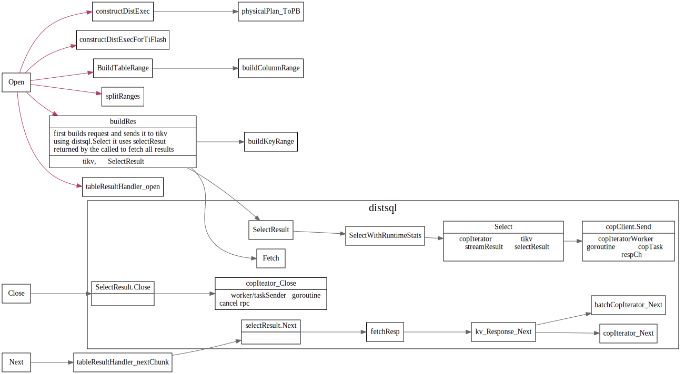
TableIndexExecutor
PhysicalIndexReader 对应的Execturo为TableIndexExecutor, 其build过程如下:

IndexExecutor Open/Next/Close方法, 也调用了distsql的方法
IndexLookUpExecutor
PhysicalIndexLookUpReader 对应的Execturo为IndexLookupReader, 其build过程如下:

index Worker/Table Worker
extractTaskHandles
从index中获取row handlers
buildTableReader
根据row handlers 去获取相应的Row
DistSQL
上面的TableReaderExecutor/TableIndexExecutor/IndexLookUpExecutor 最后 都会去调用DistSQL模块的代码, 去TiKV请求数据。
DistSQL
ReginCache
简介
TiDB 的数据分布是以 Region 为单位的，一个 Region 包含了一个范围内的数据，通常是 96MB 的大小，Region 的 meta 信息包含了 StartKey 和 EndKey 这两个属性。当某个 key >= StartKey && key < EndKey 的时候，我们就知道了这个 key 所在的 Region，然后我们就可以通过查找该 Region 所在的 TiKV 地址，去这个地址读取这个 key 的数据
TiKV中数据是按照Region为单位存储key,value的， TiDB拿到key, 或者key range之后，需要定位去哪个TiKV服务去取数据。
PDServer(placement driver)就是用来做这个事情的，TiDB需要先去PDserver 获取region leader的addr,然后再向TiKV发起请求。
为了提高效率，TiDB 本地对region做了一层cache，避免每次都要向Pd server发请求。 TiKV层region split之后，TiDB的cache就过期了，这时候，TiDB去TikV发请求，TiKV 会返回错误，然后TiDB根据错误信息，更新region Cache.
CopClient.Send

LocateKey
RegionCache 的内部，有两种数据结构保存 Region 信息，一个是 map，另一个是 b-tree，用 map 可以快速根据 region ID 查找到 Region，用 b-tree 可以根据一个 key 找到包含该 key 的 Region
RegionStore
RegionStore represents region stores info
SendReqCtx
根据RegionVerID，去cache中获取region, 然后获取peer(TiKV/TiFlash)的addr 发送GRPC请求.
onRegionError
TiKV返回RegionError, TiDB根据error 信息更新本地RegionCache

参考文献
TiKV GRPC Client
Client
// Client is a client that sends RPC.
// It should not be used after calling Close().
type Client interface {
// Close should release all data.
Close() error
// SendRequest sends Request.
SendRequest(ctx context.Context, addr string, req *tikvrpc.Request, timeout time.Duration) (*tikvrpc.Response, error)
}
SendRequest
CopTask
copTask
// copTask contains a related Region and KeyRange for a kv.Request.
type copTask struct {
id uint32
region RegionVerID
ranges *copRanges
respChan chan *copResponse
storeAddr string
cmdType tikvrpc.CmdType
storeType kv.StoreType
}
// copRanges is like []kv.KeyRange, but may has extra elements at head/tail.
// It's for avoiding alloc big slice during build copTask.
type copRanges struct {
first *kv.KeyRange
mid []kv.KeyRange
last *kv.KeyRange
}
buildCopTask
从KeyRanges到copTask
pingcap的TiDB 源码阅读系列文章（十九）tikv-client（下） 详细介绍了distsql.
distsql 是位于 SQL 层和 coprocessor 之间的一层抽象，它把下层的 coprocessor 请求封装起来对上层提供一个简单的 Select 方法。执行一个单表的计算任务。最上层的 SQL 语句可能会包含 JOIN，SUBQUERY 等复杂算子，涉及很多的表，而 distsql 只涉及到单个表的数据。一个 distsql 请求会涉及到多个 region，我们要对涉及到的每一个 region 执行一次 coprocessor 请求。 所以它们的关系是这样的，一个 SQL 语句包含多个 distsql 请求，一个 distsql 请求包含多个 coprocessor 请求。
kv.Request
// Request represents a kv request.
type Request struct {
// Tp is the request type.
Tp int64
StartTs uint64
Data []byte
KeyRanges []KeyRange
// ..
}
// KeyRange represents a range where StartKey <= key < EndKey.
type KeyRange struct {
StartKey Key
EndKey Key
}
// Key represents high-level Key type.
type Key []byte
CopIteratorWorker
Coprocessor 中通过copIteratorWorker来并发的向tikv(可能是多个tikv sever) 发送请求.
Worker负责发送RPC请求到Tikv server，处理错误，然后将正确的结果放入respCh channel中 在copIterator Next方法中会respCh中获取结果。
Coprocessor
TiKV 源码解析系列文章（十四）Coprocessor 概览 中介绍了TiKV端的Coprocessor, 相关信息摘抄如下：
TiKV Coprocessor 处理的读请求目前主要分类三种：
- DAG：执行物理算子，为 SQL 计算出中间结果，从而减少 TiDB 的计算和网络开销。这个是绝大多数场景下 Coprocessor 执行的任务。
- Analyze：分析表数据，统计、采样表数据信息，持久化后被 TiDB 的优化器采用。
- CheckSum：对表数据进行校验，用于导入数据后一致性校验。

DAGRequest
以下结构由tipb 中Proto自动生成, 这些Executor将在TiKV端执行。
PhysicalPlan.ToPB
PhysicalPlan有ToPB方法，用来生成tipb Executor
// PhysicalPlan is a tree of the physical operators.
type PhysicalPlan interface {
Plan
// attach2Task makes the current physical plan as the father of task's physicalPlan and updates the cost of
// current task. If the child's task is cop task, some operator may close this task and return a new rootTask.
attach2Task(...task) task
// ToPB converts physical plan to tipb executor.
ToPB(ctx sessionctx.Context, storeType kv.StoreType) (*tipb.Executor, error)
}
调用ToPB流程
physical plan 的toPB方法，可以看到基本TableScan和IndexScan是作为叶子节点的. 其他的比如PhysicalLimit, PhyscialTopN, PhyscialSelection 都用child executor.
参考
Join
Join算法
Nest loop join
nest loop join, 遍历取外表R中一条记录r, 然后遍历inner表S每条记录和r做join。
对于外表中的每一条记录，都需要对Inner表做一次全表扫描。IO比较高
algorithm nested_loop_join is
for each tuple r in R do
for each tuple s in S do
if r and s satisfy the join condition then
yield tuple <r,s>
Block nest loop join
Block Nest Loop Join是对NestLoop Join的一个优化
for each block Br of r do begin
for each block Bs of s do begin
for each tuple tr in Br do begin
for each tuple ts in Bs do begin
test pair (tr, ts) to see if they satisfy the join condition
if they do, add tr ⋅ ts to the result;
end
end
end
end
Indexed Nested loop join
index join inner表中对于要join的attribute由了索引, 可以使用索引
来避免对inner表的全表扫描, 复杂度为O(M * log N)
for each tuple r in R do
for each tuple s in S in the index lookup do
yield tuple <r,s>
Hash join
/* Partition s */
for each tuple ts in s do begin
i := h(ts[JoinAttrs]);
Hsi := Hsi ∪ {ts};
end
/* Partition r */
for each tuple tr in r do begin
i := h(tr[JoinAttrs]);
Hri := Hri ∪ {tr};
end
/* Perform join on each partition */
for i := 0 to nh do begin
read Hsi and build an in-memory hash index on it;
for each tuple tr in Hri do begin
probe the hash index on Hsi to locate all tuples ts
such that ts[JoinAttrs] = tr[JoinAttrs];
for each matching tuple ts in Hsi do begin
add tr ⋈ ts to the result;
end
end
end
Sort MergeJoin
function sortMerge(relation left, relation right, attribute a)
var relation output
var list left_sorted := sort(left, a) // Relation left sorted on attribute a
var list right_sorted := sort(right, a)
var attribute left_key, right_key
var set left_subset, right_subset // These sets discarded except where join predicate is satisfied
advance(left_subset, left_sorted, left_key, a)
advance(right_subset, right_sorted, right_key, a)
while not empty(left_subset) and not empty(right_subset)
if left_key = right_key // Join predicate satisfied
add cartesian product of left_subset and right_subset to output
advance(left_subset, left_sorted, left_key, a)
advance(right_subset, right_sorted,right_key, a)
else if left_key < right_key
advance(left_subset, left_sorted, left_key, a)
else // left_key > right_key
advance(right_subset, right_sorted, right_key, a)
return output
// Remove tuples from sorted to subset until the sorted[1].a value changes
function advance(subset out, sorted inout, key out, a in)
key := sorted[1].a
subset := emptySet
while not empty(sorted) and sorted[1].a = key
insert sorted[1] into subset
remove sorted[1]
Logical Optimize
join reorder
参考文献
Physical Optimize
Physical Join 继承关系
Physical PhysicalProperty
// It contains the orders and the task types.
type PhysicalProperty struct {
Items []Item
// TaskTp means the type of task that an operator requires.
//
// It needs to be specified because two different tasks can't be compared
// with cost directly. e.g. If a copTask takes less cost than a rootTask,
// we can't sure that we must choose the former one. Because the copTask
// must be finished and increase its cost in sometime, but we can't make
// sure the finishing time. So the best way to let the comparison fair is
// to add TaskType to required property.
TaskTp TaskType
// ExpectedCnt means this operator may be closed after fetching ExpectedCnt
// records.
ExpectedCnt float64
// hashcode stores the hash code of a PhysicalProperty, will be lazily
// calculated when function "HashCode()" being called.
hashcode []byte
// whether need to enforce property.
Enforced bool
}
taskType
// TaskType is the type of execution task.
type TaskType int
const (
// RootTaskType stands for the tasks that executed in the TiDB layer.
RootTaskType TaskType = iota
// CopSingleReadTaskType stands for the a TableScan or IndexScan tasks
// executed in the coprocessor layer.
CopSingleReadTaskType
// CopDoubleReadTaskType stands for the a IndexLookup tasks executed in the
// coprocessor layer.
CopDoubleReadTaskType
// CopTiFlashLocalReadTaskType stands for flash coprocessor that read data locally,
// and only a part of the data is read in one cop task, if the current task type is
// CopTiFlashLocalReadTaskType, all its children prop's task type is CopTiFlashLocalReadTaskType
CopTiFlashLocalReadTaskType
// CopTiFlashGlobalReadTaskType stands for flash coprocessor that read data globally
// and all the data of given table will be read in one cop task, if the current task
// type is CopTiFlashGlobalReadTaskType, all its children prop's task type is
// CopTiFlashGlobalReadTaskType
CopTiFlashGlobalReadTaskType
)
findBestTask
枚举所有满足parent plan physicalProperty 的join物理计划, 其中GetMergeJoin, 给child加了PhyscialProp 要求child plan是按照joinKey 降序排序.
// LogicalJoin can generates hash join, index join and sort merge join.
// Firstly we check the hint, if hint is figured by user, we force to choose the corresponding physical plan.
// If the hint is not matched, it will get other candidates.
// If the hint is not figured, we will pick all candidates.
func (p *LogicalJoin) exhaustPhysicalPlans(prop *property.PhysicalProperty) ([]PhysicalPlan, bool) {
//...
}
Cost 估算
估算每个join计划的cost

PhysicalMergeJoin
func (p *PhysicalMergeJoin) attach2Task(tasks ...task) task {
lTask := finishCopTask(p.ctx, tasks[0].copy())
rTask := finishCopTask(p.ctx, tasks[1].copy())
p.SetChildren(lTask.plan(), rTask.plan())
return &rootTask{
p: p,
cst: lTask.cost() + rTask.cost() + p.GetCost(lTask.count(), rTask.count()),
}
}
PhysicalHashJoin
func (p *PhysicalHashJoin) attach2Task(tasks ...task) task {
lTask := finishCopTask(p.ctx, tasks[0].copy())
rTask := finishCopTask(p.ctx, tasks[1].copy())
p.SetChildren(lTask.plan(), rTask.plan())
task := &rootTask{
p: p,
cst: lTask.cost() + rTask.cost() + p.GetCost(lTask.count(), rTask.count()),
}
return task
}
PhysicalIndexJoin
func (p *PhysicalIndexJoin) attach2Task(tasks ...task) task {
innerTask := p.innerTask
outerTask := finishCopTask(p.ctx, tasks[1-p.InnerChildIdx].copy())
if p.InnerChildIdx == 1 {
p.SetChildren(outerTask.plan(), innerTask.plan())
} else {
p.SetChildren(innerTask.plan(), outerTask.plan())
}
return &rootTask{
p: p,
cst: p.GetCost(outerTask, innerTask),
}
}
Hash Join
HashJoinExec struct
HashJoin整体流程如下，主要有三个4个goroutine, 几个goroutine之间通过channel 来协作.
fetchBuildSideRows读取buildSides表中数据, 放入buildSideResultCh中fetchAndBuildHashTable根据buildSide表中数据, 创建hashRowContainerfetchProbeSideChunks: 读取probeSide表数据, 放入probeResultChs中runJoinWorker多个joinWorker并发执行，从probeResultChs读取probe数据，然后和rowContainer做匹配, 并将结果放入joinResultCh中
fetchAndBuildHashTable
读取buildSideExec中所有数据，然后写入hasRowContainer中 如果内存不够，会写到磁盘上

fetchProbeSideChunks
fetchProbeSideChunks get chunks from fetches chunks from the big table in a background goroutine and sends the chunks to multiple channels which will be read by multiple join workers.
runJoinWorker
HashJoinExec.Next会启动多个runJoinWorker来做hashJoin,
每个runJoinWorker会从probeResultChs chan中去取要Probe的数据
然后做Join,最后写到joinResultCh中，由HashJoinExec.Next接受，
返回给上层调用者。

join2Chunk
join2Chunk负责将probeResult和inner table做Join
MergeJoin
MergeJoinExec Struct
// MergeJoinExec implements the merge join algorithm.
// This operator assumes that two iterators of both sides
// will provide required order on join condition:
// 1. For equal-join, one of the join key from each side
// matches the order given.
// 2. For other cases its preferred not to use SMJ and operator
// will throw error.
type MergeJoinExec struct {
baseExecutor
stmtCtx *stmtctx.StatementContext
compareFuncs []expression.CompareFunc
joiner joiner
isOuterJoin bool
desc bool
innerTable *mergeJoinTable
outerTable *mergeJoinTable
hasMatch bool
hasNull bool
memTracker *memory.Tracker
diskTracker *disk.Tracker
}
首先使用vecGroupCheck分别将innner chunk和outerchunk 分为相同groupkey的组
fetchNextInnerGroup
这个地方没怎么看明白，不太明白它是怎么处理一个groupkey超过多个chunk的情况
fetchNextOuterGroup
Ref
参考资料TiDB 源码阅读系列文章（十五）Sort Merge Join
Index Lookup Join
IndexLookUpJoin Struct
主要流程
执行index lookup join时候，会启动一个outerWorker go routine和多个innerWorker go routine, go routine之间通过innerCh和resultCh来协作， 他们关系如下：
outerWorker负责读取probe side 数据，然后建立map，创建完毕后，将task 同时放入innerCh中和resultCh中innerWorker从innerCh取task，去inner表取数据，执行完毕后，将task的doneCh close用以通知Main线程（执行IndexLookupJoin.Next的groutine)- 调用IndexLookupJoin.Next的groutine从 resultCh中取一个task, 然后等待task执行完毕，执行完毕后做join, 将数据返回给上层调用者。
buildTask
buildTask builds a lookUpJoinTask and read outer rows.
When err is not nil, task must not be nil to send the error to the main thread via task.
handleTask
buildExecutorForIndexJoin
参考资料
Agg
LogicalAggregation
type LogicalAggregation struct {
logicalSchemaProducer
AggFuncs []*aggregation.AggFuncDesc
GroupByItems []expression.Expression
// aggHints stores aggregation hint information.
aggHints aggHintInfo
possibleProperties [][]*expression.Column
inputCount float64 // inputCount is the input count of this plan.
// noCopPushDown indicates if planner must not push this agg down to coprocessor.
// It is true when the agg is in the outer child tree of apply.
noCopPushDown bool
}
type aggHintInfo struct {
preferAggType uint
preferAggToCop bool
}
aggregationPushDownSolver
findBestTask
TaskType
// CopSingleReadTaskType stands for the a TableScan or IndexScan tasks
// executed in the coprocessor layer.
CopSingleReadTaskType
// CopDoubleReadTaskType stands for the a IndexLookup tasks executed in the
// coprocessor layer.
CopDoubleReadTaskType
// CopTiFlashLocalReadTaskType stands for flash coprocessor that read data locally,
// and only a part of the data is read in one cop task, if the current task type is
// CopTiFlashLocalReadTaskType, all its children prop's task type is CopTiFlashLocalReadTaskType
CopTiFlashLocalReadTaskType
// CopTiFlashGlobalReadTaskType stands for flash coprocessor that read data globally
// and all the data of given table will be read in one cop task, if the current task
// type is CopTiFlashGlobalReadTaskType, all its children prop's task type is
// CopTiFlashGlobalReadTaskType
CopTiFlashGlobalReadTaskType
// MppTaskType stands for task that would run on Mpp nodes, currently meaning the tiflash node.
MppTaskType
newPartialAggregate
CheckAggPushFlash
func CheckAggPushFlash(aggFunc *AggFuncDesc) bool {
switch aggFunc.Name {
case ast.AggFuncSum, ast.AggFuncCount, ast.AggFuncMin, ast.AggFuncMax, ast.AggFuncAvg, ast.AggFuncFirstRow, ast.AggFuncApproxCountDistinct:
return true
}
return false
}
expr_pushdown_blacklist
该blacklist 存在mysql.expr_pushdown_blacklist表中
func LoadExprPushdownBlacklist(ctx sessionctx.Context) (err error) {
sql := "select HIGH_PRIORITY name, store_type from mysql.expr_pushdown_blacklist"
rows, _, err := ctx.(sqlexec.RestrictedSQLExecutor).ExecRestrictedSQL(sql)
}
对Distinct特殊处理
if aggFunc.HasDistinct {
/*
eg: SELECT COUNT(DISTINCT a), SUM(b) FROM t GROUP BY c
change from
[root] group by: c, funcs:count(distinct a), funcs:sum(b)
to
[root] group by: c, funcs:count(distinct a), funcs:sum(b)
[cop]: group by: c, a
*/
对first row function 特殊处理
if !partialIsCop {
// if partial is a cop task, firstrow function is redundant since group by items are outputted
// by group by schema, and final functions use group by schema as their arguments.
// if partial agg is not cop, we must append firstrow function & schema, to output the group by
// items.
// maybe we can unify them sometime.
ToPB
AggFunc
AggFunc interface
// AggFunc is the interface to evaluate the aggregate functions.
type AggFunc interface {
// AllocPartialResult allocates a specific data structure to store the
// partial result, initializes it, and converts it to PartialResult to
// return back. The second returned value is the memDelta used to trace
// memory usage. Aggregate operator implementation, no matter it's a hash
// or stream, should hold this allocated PartialResult for the further
// operations like: "ResetPartialResult", "UpdatePartialResult".
AllocPartialResult() (pr PartialResult, memDelta int64)
// ResetPartialResult resets the partial result to the original state for a
// specific aggregate function. It converts the input PartialResult to the
// specific data structure which stores the partial result and then reset
// every field to the proper original state.
ResetPartialResult(pr PartialResult)
// UpdatePartialResult updates the specific partial result for an aggregate
// function using the input rows which all belonging to the same data group.
// It converts the PartialResult to the specific data structure which stores
// the partial result and then iterates on the input rows and update that
// partial result according to the functionality and the state of the
// aggregate function. The returned value is the memDelta used to trace memory
// usage.
UpdatePartialResult(sctx sessionctx.Context, rowsInGroup []chunk.Row, pr PartialResult) (memDelta int64, err error)
// MergePartialResult will be called in the final phase when parallelly
// executing. It converts the PartialResult `src`, `dst` to the same specific
// data structure which stores the partial results, and then evaluate the
// final result using the partial results as input values. The returned value
// is the memDelta used to trace memory usage.
MergePartialResult(sctx sessionctx.Context, src, dst PartialResult) (memDelta int64, err error)
// AppendFinalResult2Chunk finalizes the partial result and append the
// final result to the input chunk. Like other operations, it converts the
// input PartialResult to the specific data structure which stores the
// partial result and then calculates the final result and append that
// final result to the chunk provided.
AppendFinalResult2Chunk(sctx sessionctx.Context, pr PartialResult, chk *chunk.Chunk) error
}
AggFunc 数据继承关系
type baseAggFunc struct {
// args stores the input arguments for an aggregate function, we should
// call arg.EvalXXX to get the actual input data for this function.
args []expression.Expression
// ordinal stores the ordinal of the columns in the output chunk, which is
// used to append the final result of this function.
ordinal int
// frac stores digits of the fractional part of decimals,
// which makes the decimal be the result of type inferring.
frac int
}
sum4Float64
sum4DistinctFloat64
存在某个聚合函数参数为 DISTINCT 时。TiDB 暂未实现对 DedupMode 的支持，因此对于含有 DISTINCT 的情况目前仅能单线程执行。
所以这个没有MergePartialResult过程
AggFuncDesc
type AggFuncDesc struct {
baseFuncDesc
// Mode represents the execution mode of the aggregation function.
Mode AggFunctionMode
// HasDistinct represents whether the aggregation function contains distinct attribute.
HasDistinct bool
// OrderByItems represents the order by clause used in GROUP_CONCAT
OrderByItems []*util.ByItems
}
AggFunctionMode
// AggFunctionMode stands for the aggregation function's mode.
type AggFunctionMode int
// |-----------------|--------------|--------------|
// | AggFunctionMode | input | output |
// |-----------------|--------------|--------------|
// | CompleteMode | origin data | final result |
// | FinalMode | partial data | final result |
// | Partial1Mode | origin data | partial data |
// | Partial2Mode | partial data | partial data |
// | DedupMode | origin data | origin data |
// |-----------------|--------------|--------------|
const (
CompleteMode AggFunctionMode = iota
FinalMode
Partial1Mode
Partial2Mode
DedupMode
)
不同mode，最后会生成不同的aggfunc, 在不同的phase执行。
AggFuncToPBExpr
可以下推的agg func
func AggFuncToPBExpr(sc *stmtctx.StatementContext, client kv.Client, aggFunc *AggFuncDesc) *tipb.Expr {
//..
switch aggFunc.Name {
case ast.AggFuncCount:
tp = tipb.ExprType_Count
case ast.AggFuncApproxCountDistinct:
tp = tipb.ExprType_ApproxCountDistinct
case ast.AggFuncFirstRow:
tp = tipb.ExprType_First
case ast.AggFuncGroupConcat:
tp = tipb.ExprType_GroupConcat
case ast.AggFuncMax:
tp = tipb.ExprType_Max
case ast.AggFuncMin:
tp = tipb.ExprType_Min
case ast.AggFuncSum:
tp = tipb.ExprType_Sum
case ast.AggFuncAvg:
tp = tipb.ExprType_Avg
case ast.AggFuncBitOr:
tp = tipb.ExprType_Agg_BitOr
case ast.AggFuncBitXor:
tp = tipb.ExprType_Agg_BitXor
case ast.AggFuncBitAnd:
tp = tipb.ExprType_Agg_BitAnd
case ast.AggFuncVarPop:
tp = tipb.ExprType_VarPop
case ast.AggFuncJsonObjectAgg:
tp = tipb.ExprType_JsonObjectAgg
case ast.AggFuncStddevPop:
tp = tipb.ExprType_StddevPop
case ast.AggFuncVarSamp:
tp = tipb.ExprType_VarSamp
case ast.AggFuncStddevSamp:
tp = tipb.ExprType_StddevSamp
}
HashAgg
buildHashAgg
HashAggExec
HashAggExec 主要有如下几种gorotine, 他们之间通过ch来协作，每个go routine 主要功能如下
fetchChildData负责从child Exec中读取chunk数据HashAggPartialWorker处理fetchChildData的输出数据，调用AggFunc的UpdatePartialResult, 做一个预处理.HashAggFinalWorker处理HashAggPartialWorker的输出数据，调用AggFunc的MergePartialResult和AppendFinalResult2Chunk, 输出最终结果到finalOutputCh中HashAggExec.Next从finalOutputCh中获取最后结果，输出给上层调用者。

getGroupKey

updatePartialResult
consumeIntermData
Stream Agg
StreamAggExec
// StreamAggExec deals with all the aggregate functions.
// It assumes all the input data is sorted by group by key.
// When Next() is called, it will return a result for the same group.
TODO: 这个地方加一些描述
vecGroupChecker
TODO: 这个地方加一些描述
PD
PD 是 TiKV 的全局中央控制器，存储整个 TiKV 集群的元数据信息，负责整个 TiKV 集群的调度，全局 ID 的生成，以及全局 TSO 授时等。
PD 是一个非常重要的中心节点，它通过集成 etcd，自动的支持了分布式扩展以及 failover，解决了单点故障问题。关于 PD 的详细介绍，后续我们会新开一篇文章说明。
资料收集：
- 官方PD相关文档 https://pingcap.com/blog-cn/#PD
主要数据结构
RaftCluster
// RaftCluster is used for cluster config management.
// Raft cluster key format:
// cluster 1 -> /1/raft, value is metapb.Cluster
// cluster 2 -> /2/raft
// For cluster 1
// store 1 -> /1/raft/s/1, value is metapb.Store
// region 1 -> /1/raft/r/1, value is metapb.Region
BasicCluster
provides basic data member and interface of a tikv cluster
用来在内存中保存(查找) tikv cluster的store和region信息
Main 流程
GRPC Service api
Bootstrap
StoreHeartbeat
定期 store 向 PD 汇报自己的相关信息，供 PD 做后续调度。譬如，Store 会告诉 PD 当前的磁盘大小，以及剩余空间，如果 PD 发现空间不够了，就不会考虑将其他的 Peer 迁移到这个 Store 上面。
RegionHeartbeat
Region Leader定期向pd 汇报region情况，PD返回Operator
AskSplit
SplitRegions
GetRegion
TiKV
raft-rs
RawNode
raft module

基本过程为，client发读写请求给raft leader。
raft leader在处理写请求(比如put k, v)时，将写请求包装为一个log entry, 写到自己 本地的raft log中，然后发给各个follower, follower写成功后，发送ack给leader, 当集群中 大部分节点写成功时(达到commit状态，可以安全的apply 到state machine上，leader返回写成功给client.
leader在处理读请求时，会通过read index检查确认自己还是不是leader,
RawNode API
raft对外暴露的接口为RawNode，它和App关系如下图所示:

App在处理client write操作时候，调用Raft Propose 将writes数据作为log entry写入 到raft log。 等该log entry在raft group中达到commit状态时，Client write操作就可以返回了。
App通过RawNode的tick 来驱动raft的logical时钟(驱动leader节点发送hearbeat, follower节点累计触发election timeout)
调用RawNode::step将其他节点发来的raft message发给raft处理。
然后调用RawNode Ready获取需要发送给raft peer的Message, 需要持久化保存的log entries, 以及需要apply 到state machine的log entries.
最后App调用RawNode的advance，Raft更新完一些状态后，准备处理App下一次调用。
tick
RawNode::tick 定时时钟，用来驱动leader的定期的向follower/candidate 发送
heartbeat, 而follower则在累积election timoout, 如果follower如果发现超过election timeout没收到
leader的心跳包，则会成为candidate发起campaign.
#![allow(unused)] fn main() { /// Tick advances the internal logical clock by a single tick. /// /// Returns true to indicate that there will probably be some readiness which /// needs to be handled. pub fn tick(&mut self) -> bool }
step
App会调用RawNode::step来处理集群其他peer发来的Message。
比如Leader的heartbeat, leader的AppendMsg, candidate的vote request, follower节点的heartbeat resp, append resp, vote resp等消息。
#![allow(unused)] fn main() { /// Step advances the state machine using the given message. pub fn step(&mut self, m: Message) -> Result<()> }
propose
App 通过RawNode::propose来write data到raft log，当这个log entry被
复制到集群大部分节点，并且可以被安全提交时候，App调用 RawNode::ready
获取可以被安全的applied到state machine上的log entries，
把它们apply到state machine上。
#![allow(unused)] fn main() { /// Propose proposes data be appended to the raft log. pub fn propose(&mut self, context: Vec<u8>, data: Vec<u8>) -> Result<()> }
propose_conf_change
App调用RawNode::propose_conf_change来提交对raft 集群成员的配置修改，
等该提交committed, 并且App把集群配置信息保存好后，
App调用RawNode::apply_conf_change 真正的去修改
Raft的集群配置(对应于Raft的ProgressTracker)
#![allow(unused)] fn main() { /// ProposeConfChange proposes a config change. /// /// If the node enters joint state with `auto_leave` set to true, it's /// caller's responsibility to propose an empty conf change again to force /// leaving joint state. #[cfg_attr(feature = "cargo-clippy", allow(clippy::needless_pass_by_value))] pub fn propose_conf_change(&mut self, context: Vec<u8>, cc: impl ConfChangeI) -> Result<()> { }
read_index
App调用RawNode::read_index 来获取read_index
除此之外raft中还有一个lease read.
#![allow(unused)] fn main() { /// ReadIndex requests a read state. The read state will be set in ready. /// Read State has a read index. Once the application advances further than the read /// index, any linearizable read requests issued before the read request can be /// processed safely. The read state will have the same rctx attached. pub fn read_index(&mut self, rctx: Vec<u8>) { }
从step 到Ready
App先将hardstate, log entries等保存下来，再将raft message 发出去。
Raft::msgs
发送的消息都会暂存在Raft::msgs数组中,在RawNode::ready被调用时， 会先放到RawNode::records中，等entries都保存完后， app再取到这些消息，将消息发送给对应的peers.
leader
leader会主动定期的发送Heartbeat给follower。 在处理follower的heartbeat resp和Append resp中 会发送AppendEntry(MsgSnapshot, MsgAppend)消息给follower

follower
follower 处理leader发送的heartbeat消息和Append消息，然后 发送HeartBeatResp和AppendResp给leader
candidate
如果在投票期间收到了其他leader的消息，并且验证（term不小于自己的term)Ok的话， 就成为follower，处理heartbeat, appendEntry等消息,流程和上面的follwer一样。
如果没有其他leader的消息，就处理peer发来的投票resp，
如果只是赢得了PRE_ELECTION 就接着发起ELECTION,如果赢了ELECTION,就成为新的leader,
然后立刻bcast_append 发送消息所有peers.

entries
snapshot
hardState and softState
hardstate:
- term:当前任期,
- vote: 给谁投票了。
- commit: 当前的commit index
softstate 则包含leaderId是谁，当前node的角色是什么

term 扮演逻辑时钟的角色.
read states
在处理读请求时，从Leader节点读数据，leader节点需要确认自己是否还是leader ，如果从follower节点读数据，follower节点要知道当前leader节点的committed index, 等自己的state machine apply到这个committed index后，再回复数据给client.
Raft提供了两种方法一个是ReadIndex，ReadIndex就是leader节点广播一次心跳，确认自己是leader.
另外一种是LeaseRead, 他假设leader 的 lease 有效期可以到 start + election timeout / clock drift bound 这个时间点。需要各个服务器之间的clock频率是准的,在lease有效期内，不用发送心跳。
ReadState 负责记录每个客户端读请求状态，
request_ctx: 客户端唯一标识index: committed index

ready
RaftCore::step之后，raft会产生一系列的状态更新，比如要发送raft message, 有些committed log entry 需要apply到state machine上, 有些log entry 需要保存等.
App通过调用RawNode::ready 返回的struct Ready来获取这些更新
#![allow(unused)] fn main() { /// Returns the outstanding work that the application needs to handle. /// /// This includes appending and applying entries or a snapshot, updating the HardState, /// and sending messages. The returned `Ready` *MUST* be handled and subsequently /// passed back via advance() or its families. /// /// `has_ready` should be called first to check if it's necessary to handle the ready. pub fn ready(&mut self) -> Ready }
Ready struct如下:
其中主要字段如下：
hs: Raft 相关的元信息更新，如当前的term，投票结果，committed index 等等。LightReady::committed_entries: 最新被 commit 的日志，需要apply到state machine上。LightReady::messages: 需要发送给其他 peer的Message。Ready::snapshot: 需要apply到state machine 的snapshot。Ready::entries: 需要保存的 log entries。Ready::ReadState:read_index?
解释下ReadyRecord, max_number, records的作用。
需要注意的是，Raft需要把entries持久化，才能把message发出去。 所以这个地方用了ReadyRecord先把message 保存起来， 等RawNode::advance之后，才会把message放到RawNode::messages数组。
advance
应用在保存完ready中的entries, apply完snapshot， 发送完messages之后， 调用RawNode::advance更新raft一些状态。
主要会更新
RaftLog::persisted: 表示已经持久化保存日志的indexRaftLog::committed_index： 由ProgressTracker的votes来计算committed indexRaftLog::applied: 已经apply 到state machine的index

参考文献
Storage
trait Storage
另外raft底层又抽象出一个trait Storage负责保存Raft log entries和hard state. App需要实现Storage的trait
#![allow(unused)] fn main() { /// Storage saves all the information about the current Raft implementation, including Raft Log, /// commit index, the leader to vote for, etc. /// /// If any Storage method returns an error, the raft instance will /// become inoperable and refuse to participate in elections; the /// application is responsible for cleanup and recovery in this case. pub trait Storage { /// `initial_state` is called when Raft is initialized. This interface will return a `RaftState` /// which contains `HardState` and `ConfState`. /// /// `RaftState` could be initialized or not. If it's initialized it means the `Storage` is /// created with a configuration, and its last index and term should be greater than 0. fn initial_state(&self) -> Result<RaftState>; /// Returns a slice of log entries in the range `[low, high)`. /// max_size limits the total size of the log entries returned if not `None`, however /// the slice of entries returned will always have length at least 1 if entries are /// found in the range. /// /// # Panics /// /// Panics if `high` is higher than `Storage::last_index(&self) + 1`. fn entries(&self, low: u64, high: u64, max_size: impl Into<Option<u64>>) -> Result<Vec<Entry>>; /// Returns the term of entry idx, which must be in the range /// [first_index()-1, last_index()]. The term of the entry before /// first_index is retained for matching purpose even though the /// rest of that entry may not be available. fn term(&self, idx: u64) -> Result<u64>; /// Returns the index of the first log entry that is possible available via entries, which will /// always equal to `truncated index` plus 1. /// /// New created (but not initialized) `Storage` can be considered as truncated at 0 so that 1 /// will be returned in this case. fn first_index(&self) -> Result<u64>; /// The index of the last entry replicated in the `Storage`. fn last_index(&self) -> Result<u64>; /// Returns the most recent snapshot. /// /// If snapshot is temporarily unavailable, it should return SnapshotTemporarilyUnavailable, /// so raft state machine could know that Storage needs some time to prepare /// snapshot and call snapshot later. /// A snapshot's index must not less than the `request_index`. fn snapshot(&self, request_index: u64) -> Result<Snapshot>; } }
从RawNode到Storage之间的调用路径如下：
initial_state
获取初始的RaftState, 设置HardState和ConfState
初始state 为follower, leader_id是INVALID_ID
entries 和snapshot
leader在向follower发送log entry或者snapshot时，会调用entries或者snapshot接口。
term
参考文献
ProgressTracker
Leader 上对每一个peer，都维护了一个 Progress
progress tracker初始化
maximal committed index
计算committed index
#![allow(unused)] fn main() { /// Returns the maximal committed index for the cluster. The bool flag indicates whether /// the index is computed by group commit algorithm successfully. /// /// Eg. If the matched indexes are [2,2,2,4,5], it will return 2. /// If the matched indexes and groups are `[(1, 1), (2, 2), (3, 2)]`, it will return 1. pub fn maximal_committed_index(&mut self) -> (u64, bool) }
在日志entries更新保存后，会重新计算一次commit index
leader节点在收到follower的AppendResponse后， 会更新follower pr的mached index. 也会重新计算一次commited index.
tally votes
统计election 投票
Progress
这部分分析可以放到Log entry 那儿。
Progress::next_idx
Raft::reset函数中。这个函数会在 Raft 完成选举之后选出的 Leader 上调用，
会将 Leader 的所有其他副本的 next_idx设置为跟 Leader 相同的值。之后，
Leader 就可以会按照 Raft 论文里的规定，广播一条包含了自己的 term 的空 Entry 了
参考文献：
Hearbeat
hearbeat是leader向follower发送自己还活着，重置follower的election timer, 同步commit和term.
hearbeat 同时用来实现ReadIndex功能, leader通过hearbeat的ack来确认自己是leader. readIndex相关实现细节，将在后面readindex 章节专门讲述。
tick
定时触发leader发送heartbeat消息.
leader send heartbeat
send hearbeat消息中会把read context带上发给follower, follower的hearbeat resp会把这个context 回传回来。
follower handle_hearbeat
重置election_elapse= 0, follower 根据Msg中的commit 更新自己的raftlog comitted
如果candidate收到了比自己更高的term的心跳消息，会成为它的follower，并且会
重置自己的 randomized_election_timeout为min_election_timeout到max_election_timeout
之间的一个随机值，这样降低了多个candidate同时发起election,导致split vote概率.
follower发送给leader的MsgHeartbeatResponse中会将heatBeat消息中的context 带上，然后 加上自己的commit index.
leader handle_heartbeat_response
在处理follower HeartbeatResp时，首先将resp中的commit信息保存到follower对应的progress.
然后如果需要的话，发送log entries, 从pr.next_idx开始发送，发送max_msg_size
个消息，或者发送给snapshot给follower.
leader根据resp中context信息来更新readindex中的recv_ack
如果收到了quorum的回应，就将该context对应的read state 发送给ReadIndex的发起者（如果是leader
自己就放到RaftCore::read_states中，如果是follower发来的ReadIndexReq, 就发送ReadIndexResp
给follower.
在代码中没找到Progress::comitted_index被使用的地方，不知道这个功能是干什么用的。
Election
- 只有日志足够新(按照term和index来比较)的candidate 能够当选为leader
- 节点决定投给某个candidate后，不能再投给别人(节点在发出vote消息前，需要持久化自己的
vote_for)。- candidate 先不增大自己term，先进行pre election，确保自己能当选, 然后再增加自己的term，发起真正的election.
- 随机化选举超时时间，降低多个candidate同时发起election，导致split vote的概率。
Pre vote
raft-rs中新增了pre candidate角色, 可以跟配置Config::pre_vote来决定是否启用这个功能。
在正式开始election之前，先不增加自己的term, 是尝试pre candidate, 如果赢得pre election
才正式的将自己的term +1, 真正的发起选举。
prevote 可以避免在网络分区的情况避免反复的 election 打断当前 leader，触发新的选举造成可用性降低的问题
在prevote过程中，不会更改集群任何节点的hardstate，只是一次查询，查看pre candidate是否有当选的潜质。
发起election
follower节点在一段时间内没收到leader的heartbeat后，就会election timeout, 然后先发起pre election, 角色成为pre candidate, 先投自己一票，然后发pre vote消息给集群中的其他节点，进行pre election。
注意pre candidate不会更改自己的hard state vote,也不会更改自己的hardstate term，只是发的消息中term+1
赢得pre election后，将自己的term + 1, 角色成为candidate, 然后投自己一票，更改自己的hard state vote，然后发送Vote 请求给集群中 其他节点，进行election.
发送的pre vote消息和vote消息，会附带上candidate 的last index和term，其他节点据此来决定要不要给它投票。
同时也会附带上自己当前的commit index和commit term, 这样其他节点maybe_commit_by_vote，
尝试更新自己的commit index.
candidate使用ProgressTracker::votes HashMap，来存放voter 给自己的投票结果。(grant or reject)
ProgressTracker::tally_votes 会使用JointConfig来统计是否都得到了大部节点的投票。
处理投票请求
如果节点收到了MsgVote，且term比自己的大，节点就become_follower成为follower，并将自己的term设置和MsgVote.term, 并且将自己的leader_id设置为INVALID_ID
#![allow(unused)] fn main() { pub fn step(&mut self, m: Message) -> Result<()> { // 收到term比自己大的消息 if m.term > self.term { if m.get_msg_type() == MessageType::MsgAppend || m.get_msg_type() == MessageType::MsgHeartbeat || m.get_msg_type() == MessageType::MsgSnapshot { self.become_follower(m.term, m.from); } else { self.become_follower(m.term, INVALID_ID); } } } }
如果节点已经给其他candidate投票了(hardstate中的vote)，会reject掉这个candidate的投票（但是不会reject PreVote)
为什么这个地方要自己的leader_id == INVALID_ID才会去投票？看了etcd项目的issues 8517 解释
看完了也不知道为什么，没有对应的paper链接.
This includes one theoretical logic change: A node that knows the leader of the current term will no longer grant votes, even if it has not yet voted in this term. It also adds a
m.Type == MsgPreVoteguard on them.Term > r.Termcheck, which was previously thought to be incorrect (see #8517) but was actually just unclear.
需要注意的是对于MsgPreVote节点不会更改自己任何hard state, 节点发送的MsgPreVoteResp中的term 是MsgPreVote的term.
#![allow(unused)] fn main() { pub fn step(&mut self, m: Message) -> Result<()> { //... match m.get_msg_type() { MessageType::MsgRequestVote | MessageType::MsgRequestPreVote => { // We can vote if this is a repeat of a vote we've already cast... let can_vote = (self.vote == m.from) || // ...we haven't voted and we don't think there's a leader yet in this term... (self.vote == INVALID_ID && self.leader_id == INVALID_ID) || // ...or this is a PreVote for a future term... (m.get_msg_type() == MessageType::MsgRequestPreVote && m.term > self.term); // ...and we believe the candidate is up to date. if can_vote && self.raft_log.is_up_to_date(m.index, m.log_term) && (m.index > self.raft_log.last_index() || self.priority <= m.priority) { self.log_vote_approve(&m); let mut to_send = new_message(m.from, vote_resp_msg_type(m.get_msg_type()), None); to_send.reject = false; to_send.term = m.term; self.r.send(to_send, &mut self.msgs); if m.get_msg_type() == MessageType::MsgRequestVote { // Only record real votes. self.election_elapsed = 0; self.vote = m.from; } } }
在RaftLog::is_up_to_date中把自己的last_term和last_index和candidate的做比较，如果candidate日志没自己的新，会reject candidate 的vote.
#![allow(unused)] fn main() { pub fn is_up_to_date(&self, last_index: u64, term: u64) -> bool { term > self.last_term() || (term == self.last_term() && last_index >= self.last_index()) } }

只有对于MsgRequestVote, 投票时候，才会节点才会修改自己的vote, 重置自己的election_elapsed,
对于MsgPreVote 只是投票，并不会修改vote和election_elapsed。
#![allow(unused)] fn main() { if m.get_msg_type() == MessageType::MsgRequestVote { // Only record real votes. self.election_elapsed = 0; self.vote = m.from; } }
处理投票响应
如果在选举期间，candidate如果收到了term和自己term 相同的MsgAppend, MsgHeartbeat, MsgSnapshot, 说明已经有节点已经赢得了选举，成为了leader, candidate会转变为它的follower.
收到MsgPreVoteResp或MsgPreVoteResp后，candidate会将peer的投票结果保存在ProgressTracker::votes HashMap
中，然后ProgressTracker::tally_votes,根据自己在JointConfig中是否收到了大部分节点的投票，来判断是否赢得了选举。
如果选举失败，则转变为follower。
如果赢得了选举. PreCandidate 状态的会成为Candidate, 增大自己的term，发起真正的Election。
Candidate状态的会变为真正的leader, 因为leader只能commit包含当前term的log entry，因此当选后，leader立刻广播发送AppendMsg，AppendMsg中的entries可能是空的。加快 commit log的速度。
LogEntry
- 只要term ,index相同，则log entry内容一定相同
- 当log entry被复制到大多节点时，log entry才能被commit.
- leader只能commit 包含当前term的log entry.
- 只有raft log (拥有最大term, 最长Log index)的最新的candidate 才能当选leader.
- 当follower log entry和leader冲突时，以leader为准,清理掉和leader log不一致的log。
Raft log 处理过程
在raft中，一条日志从propose到最后apply到sate machine流程如下
propose
收到Propose, append到自己的Log 上，然后bcast_send, 发送Appendmsg给所有的follower.
从pr.next_idx发送max_msg_size个log entry给follower, 发送的log entry可能和
follower的不匹配，follower在AppendResp中会reject，并给出reject_hint,
leaderProgress::maybe_decr_to重新调整发送的next_idx，然后重新发送AppendMsg给follower
follower: handle_append_entries
关键函数为RaftLog::maybe_append, 检查term是否一致
RaftLog::find_conflict, 找到和leader log entry冲突的地方，清理掉和leader不一致的log entry
leader: handle_append_response

如果Progress::next_idx不对，follower在AppendRespMsg中会reject，然后leader调用Progress::maybe_decr_to来尝试减小Progress::next_idx，然后重新
发送log entries给follower
另外收到follower的append resp之后，leader会计算committed index。由函数ProgressTracker::maximal_comitted_index来根据incoming votes和outging votes中，
已经复制到大部分节点的log entry 最大index，作为maximal_commit_index。
为了安全提交old leader的Log entry. leader只能commit当前任期Log entry，RaftLog::maybe_commit 会检查计算出来的max_index的term
是否是当前leader的。
如果不是，则不能提交commit index. 所以leader一当选，就会发送一个空的NoOp AppendMsg给所有的follower， 尽快使自己term内log entry达到commit 状态。
#![allow(unused)] fn main() { /// Attempts to commit the index and term and returns whether it did. pub fn maybe_commit(&mut self, max_index: u64, term: u64) -> bool { if max_index > self.committed && self.term(max_index).map_or(false, |t| t == term) { debug!( self.unstable.logger, "committing index {index}", index = max_index ); self.commit_to(max_index); true } else { false } } }
比如在下图c中，重新当选的s1 commit了日志(term=2,idx=2), 然后此时它挂了的话，
出现情况d中 S5重新被选为leader
会出现该被commit的日志被覆盖掉的情况, 此时就出现了不一致情况。
因此要达到图e, 重新当选的s1,在term 4中已经由log entry达到了commit状态，它才能将之前的
日志(term=2,idx=2) commit.
参考资料
Snapshot
snapshot msg struct
这个需要主动发起才行？
follower send request snapshot
leader send snapshot
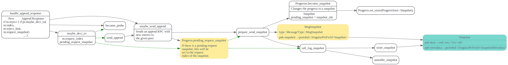
follower handle snapshot
要处理snapshot，以及confstate
ConfChange
joint consensus
raft中的决策(投票和计算commit index)，基础是集群中的majority， 由于无法同时原子性的将集群中所有成员配置都修改了，如果一次加入集群节点比较多， 就可能造成集群中使用新配置和使用旧配置的节点形成两个分裂的majority.
因此需要加入一个过渡期的概念，在过渡期的节点同时使用新老配置，保证新老conf change可以正常交接。
在conf change期间, 由于各个节点apply conf change的时间点不同，不同节点的配置也会不同。 有的会用conf old, 有的节点开始使用conf new. 有的节点还处于过渡期，投票和计算commit index需要同时使用新老配置来做决策。
ProgressTracker
ProgressTracker::Configuration 存放着raft集群配置。更改raft 集群配置，主要就是更改
ProgressTracker的conf和ProgressMap。
使用新老配置做决策
在Joint consensus期间，ProgressTracker同时使用新老配置来计算commit index和vote result
#![allow(unused)] fn main() { //JointConfig pub struct Configuration { //incoming 为新的配置 pub(crate) incoming: MajorityConfig, //outgoing 为老的配置 pub(crate) outgoing: MajorityConfig, } // MajorityConfig pub struct Configuration { voters: HashSet<u64>, } }
计算committed index
#![allow(unused)] fn main() { //同时统计新老配置中的committed index // JointConfig pub fn committed_index(&self, use_group_commit: bool, l: &impl AckedIndexer) -> (u64, bool) { let (i_idx, i_use_gc) = self.incoming.committed_index(use_group_commit, l); let (o_idx, o_use_gc) = self.outgoing.committed_index(use_group_commit, l); (cmp::min(i_idx, o_idx), i_use_gc && o_use_gc) } }
统计vote result
#![allow(unused)] fn main() { // pub fn vote_result(&self, check: impl Fn(u64) -> Option<bool>) -> VoteResult { let i = self.incoming.vote_result(&check); let o = self.outgoing.vote_result(check); match (i, o) { // It won if won in both. (VoteResult::Won, VoteResult::Won) => VoteResult::Won, // It lost if lost in either. (VoteResult::Lost, _) | (_, VoteResult::Lost) => VoteResult::Lost, // It remains pending if pending in both or just won in one side. _ => VoteResult::Pending, } } }
conf change流程
raft-rs中的conf change流程下图所示，比较关键的是，leader节点在conf change被applied后， 会自动append一个空的conf change，开始leave joint流程。空的conf change被app applied之后 该节点就使用新的配置。
propose conf change
raft-rs中，conf change先像正常的log entry 那样append 到leader的log中，然后由leader，分发给其他 follower.
RaftCore::pending_conf_index指向了该log entry的index，该index可用于防止在这个conf change 被apply完之前，
app 又propose conf change。
AppPropose的ConfChange如下, ConfChange 会被转换为ConfChangeV2
这里面的context的作用是什么？
enter joint consensus
conf change被app保存后，应用调用RawNode::apply_conf_change，
来修改ProgressTracker的conf和progress。
在更改配置时，先clone一份ProgressTracker, 然后修改他的conf,
最后在ProgressTracker::apply_conf中实用新的conf。
另外这个地方还会设置conf的auto_leave字段，如果该字段为true, 在后面的RaftCore::commit_apply
会自动的apply 一个空的EntryConfChangeV2消息，开始leave joint.
修改完毕后，就开始了joint consensus，同时会使用新老配置(incoming/outging)。
来统计投票 ProgressTracker::tall_votes和 计算commit index.
ProgressTracker::maximal_committed_index。
leave joint consensus
在conf change 被commit时，说明集群老配置中的大部分节点，都收到了该conf change, 并且会 apply 这它， 这时候集群开始准备leave joint.
leader会append一个空的confchange 给集群中新老配置。当这个空的conf change达到commit 状态时，集群开始 leave joint, 开逐步切换到新的配置。
auto leave
在log entry被applied到state machine时候，raft-rs可以根据applied_index和pending_conf_index
来判断pending conf change是否已被applied到state machine上。
leader 节点在conf change log entry 被applied之后, 会自动(根据conf.auto_leave)
append一个空的EntryConfChangeV2消息，开始leave joint.
#![allow(unused)] fn main() { pub fn commit_apply(&mut self, applied: u64) { let old_applied = self.raft_log.applied; #[allow(deprecated)] self.raft_log.applied_to(applied); // TODO: it may never auto_leave if leader steps down before enter joint is applied. if self.prs.conf().auto_leave && old_applied <= self.pending_conf_index && applied >= self.pending_conf_index && self.state == StateRole::Leader { // If the current (and most recent, at least for this leader's term) // configuration should be auto-left, initiate that now. We use a // nil Data which unmarshals into an empty ConfChangeV2 and has the // benefit that appendEntry can never refuse it based on its size // (which registers as zero). let mut entry = Entry::default(); entry.set_entry_type(EntryType::EntryConfChangeV2); // append_entry will never refuse an empty if !self.append_entry(&mut [entry]) { panic!("appending an empty EntryConfChangeV2 should never be dropped") } self.pending_conf_index = self.raft_log.last_index(); info!(self.logger, "initiating automatic transition out of joint configuration"; "config" => ?self.prs.conf()); } } }
leave joint
第二次自动append空的ConfChange 达到commit 状态，App在处理该log entry时，调用
RawNode::apply_conf_change开始leave joint, 使用新配置(ProgressTracker.conf.incoming).
在RaftCore::apply_conf_change 的change 为空时候，开始leave joint
ReadIndex
Readindex 要解决的问题
当出现网络隔离，原来的 Leader 被隔离在了少数派这边，多数派那边选举出了新的 Leader，但是老的 Leader 并没有感知，在任期内他可能会给客户端返回老的数据。
Read index流程
leader节点在处理读请求时，首先需要与集群多数节点确认自己依然是Leader，然后读取已经被应用到应用状态机的最新数据。
- 记录当前的commit index，称为 ReadIndex
- 向 Follower 发起一次心跳，如果大多数节点回复了，那就能确定现在仍然是 Leader
- 等待状态机至少应用到 ReadIndex 记录的 Log
- 执行读请求，将结果返回给 Client
发起ReadIndex
应用通过调用RawNode::read_index方法来获取当前的leader的committed index，
调该接口时，会附带上一个ctx, 它的类型为vec<u8>，起到唯一标识的作用。
在read index ready后，该ctx会回传给App.
如果是在follower 节点，follower节点会将MsgReadIndex转发给leader，等待
leader回复MsgReadIndexResp。
如果ReadOnlyOption为Safe, leader节点则会广播发送一次心跳信息，来确认自己 还是leader,发送的心跳信息，会附带上ctx, follower的hearbeat resp中 会带回该ctx.
如果ReadOnlyOption为LeaseBased并且leader的lease还没过期，就省掉了一次广播心跳信息过程。
等leader确认好自己还是集群的leader后，如果在MsgReadIndex是由leader节点自己发起的，
leader节点就直接将ReadState放入RaftCore::read_states。
如果是由follower 发起的，leader会发送MsgReadIndexResp给follower, follower放入自己的RaftCore::read_states中
等app下次调用ready时，就能跟ctx获取对应的comitted_index了
RaftCore::read_states中。
处理follower hearbeat resp
leader在收到follower的hearbeat resp时，会使用resp中的ctx,
找到之前的ReadIndexStatus, 更新里面的acks，当acks 达到大多数时候，
read index就Ready了，可以返回给上层应用了。
leader节点上的read_index, leader节点会将ReadIndexStatus中的index,和ctx 放入
RaftCore::read_states, 在App调用ready时候，返回给App.
follower节点上的read_index, leader节点会发送MsgReadIndexResp给follower, follower
将index和ctx放入它自己的RaftCore::states, 然后在App调用ready时，返回给App。
retry
如果client读到了老的leader节点，leader一直没达到quorum，这个该怎么办？
在TiKV代码中，会由上层周期性的检查一次，如果再一个election timout 时间周期内 有的read index没有ready，就重试。
参考资料
RaftKV
- RaftKV对上层提供了
async_snapshot和async_write异步读写接口- RaftKV使用RaftStoreRouter将propose（读写请求）发送给region的peer来处理请求。
- RaftKV中和raft相关部分代码封装在PeerStorage中。
- RaftKV存储Engine分两种，一个负责存储key,value，一个负责raft log存储.
Engines
RaftKV 的存储分两种，一个为负责存储state machine的key, value, 对应于模板参数EK,
其实现为RocksEngine,
另一个负责存储raft log, 对应于模板参数ER，其实现为RocksEngine或者RaftLogEngine.
RaftLogEngine是一个单独的repo，对raft log存储做了优化。
A WAL-is-data engine that used to store multi-raft log
在初始化调用run_tikv函数时，会根据配置config.raft_engine.enable来决定
是否采用RaftLogEngine来存储raft log日志
#![allow(unused)] fn main() { pub fn run_tikv(config: TiKvConfig) { //other code... if !config.raft_engine.enable { run_impl!(RocksEngine) } else { run_impl!(RaftLogEngine) } } }
关键数据结构关系如下：
RaftRouter
根据region_id将RaftCmdRequest消息发送到对应的PeerFSM, 由RaftPoller线程池来
批量的处理消息，处理消息时候，先将写操作写入write batch，在这一批处理完毕后
再将整个write batch写入底层的RaftLogEngine或者RocksEngine, 这样降低了IO频率
, 提高了性能。
Normals Hashmap的初始化和batchSystem的机制，详见后面的BatchSystem相关代码分析。
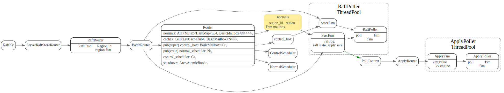
PeerStorage
PeerStorage 使用raftlog和kv engine, 实现了Raft-rs中的Storage trait接口。
#![allow(unused)] fn main() { pub trait Storage { fn initial_state(&self) -> Result<RaftState>; fn entries(&self, low: u64, high: u64, max_size: impl Into<Option<u64>>) -> Result<Vec<Entry>>; fn term(&self, idx: u64) -> Result<u64>; fn first_index(&self) -> Result<u64>; fn last_index(&self) -> Result<u64>; fn snapshot(&self, request_index: u64) -> Result<Snapshot>; } }
Raft的log entries，raft state， apply state写入流程如下：
- 先调用PeerFsmDelegate
handle_msgs，将RaftCmdRequest 发给raft_group - collect ready调用
raft_group.ready,获取需要保存的log entries PeerStorage::handle_raft_ready将log entries, raft state, apply state等信息写到write batch中RaftPoller::end将write batch写入磁盘中，然后PeerStorage::post_ready更改raft_state,apply_state等状态
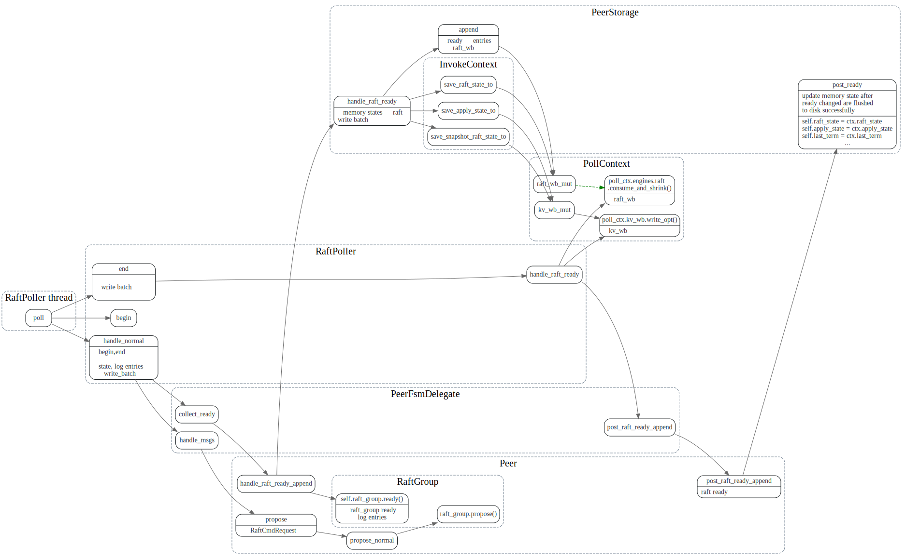
读写队列
每个raft region的异步读写队列，存放在Peer中。
调用Peer::propose 处理RaftCmdRequest时，会同时传入一个callback.
Peer会将根据request类型，将request,callback打包在一起放入等待队列中。
对于读请求，会放在ReadIndexQueue，写请求则放入ProposalQueue
#![allow(unused)] fn main() { pub struct Peer<EK, ER> where EK: KvEngine, ER: RaftEngine, { /// The Raft state machine of this Peer. pub raft_group: RawNode<PeerStorage<EK, ER>>, pending_reads: ReadIndexQueue<EK::Snapshot>, proposals: ProposalQueue<EK::Snapshot>, //... } }
ReadIndexQueue
ReadIndex 大致流程如下:
- 将ReadIndex request和callback放入ReadIndexQueue中，request会生成一个uuid::u64作为Id, 来标识这个request.
- 带上生成的uuid, 调用
raft_group的read_index方法 apply_reads处理raft_group.ready()返回的ready.read_states- 根据uuid从队列中找到对应的callback, 调用callback.(TODO: 这块逻辑好像不是这样的）
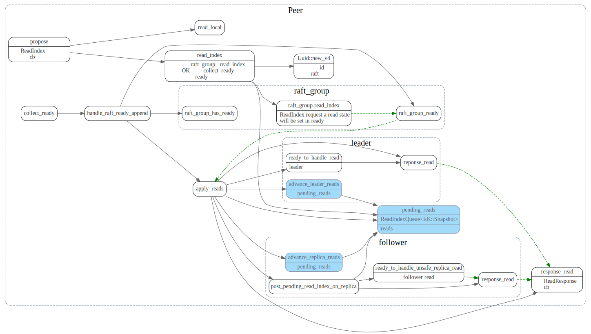
ProposalQueue
在向Raft group propose之后，会调用Callback的invoke_proposed,
Raft ready 之后log entries commited 之后，会回调Callback的invoke_committed
然后将cb 包在Apply中，发送apply task给ApplyFsm.
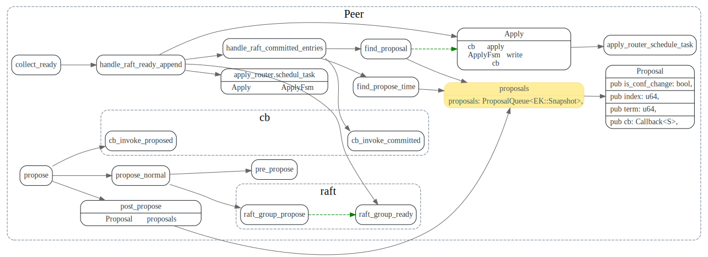
ApplyFsm在修改写入底层kv engine后，会回调callback的invoke_all
BatchSystem
BatchSystem init
Router normals 初始化
RaftPollerBuilder::init 扫描kv engine的CF_RAFT faimly, 加载所有的Region.
对于每个Region,调用PeerFsm::create 创建一个PeerFsm以及用来和它通信的
loose_bounded，tx部分则会放入BasicMailbox，然后放到RaftRouter的normals map中。
代码调用流程如下图：
消息发送处理流程
TODO: 怎么根据key找到对应的regionID ?这个流程需要明确下.
给某个region_id的PeerFsm发送PeerMsg流程如下：
- 通过RaftRouter找到
region_id对应的mailbox，并通过mailbox发送到PeerFsm 的msg channel - 如果Mailbox中的FsmState是Idle, 则需要用
RaftRouter::normalScheduler将PeerFsm发送到NormalChannel
消息处理流程如下：
- poller线程池poll时，从调用
fetch_fsm从Normal Channel读取一批PeerFsm - poller调用RaftPoller.begin 开始处理这批PeerFsm的消息。
- poller从这批PeerFsm 每个rx中unblock方式读取PeerFsm要处理的PeerMsg，由
RaftPoller::handle_normals处理消息。 将修改写入write batch. - poller在一批消息处理完毕后，调用RaftPoller.end, 将write batch等写入磁盘中
Router::try_send 发送消息给Fsm
poller线程工作主要流程是从channel中去fetch 一批fsm，然后再从每个fsm的rx中取消息，处理消息。 为了保证发消息给fsm后，fsm能被poller fetch到，需要将fsm 发送到poller的channel中(使用FsmScheduler来发送)。
为了避免重复的将fsm发送到channel中，TiKV中封装了一个BasicMailbox， 在发给fsm消息的tx上，加了一个FsmState, 用来标记Fsm.
Notified表示已经发送到poller的channel，Idle则表示还没有，在BasicMailbox在发消息时， 如果FsmState为Idle, 则还需要使用FsmScheduler将fsm发送到poller的channel。
#![allow(unused)] fn main() { pub struct BasicMailbox<Owner: Fsm> { sender: mpsc::LooseBoundedSender<Owner::Message>, state: Arc<FsmState<Owner>>, } }

Poller
PollHandler的实现有RaftPoller和ApplyPoller, RaftPoller负责处理RaftCmd和RaftMessage, raft log的保存， 以及驱动raft的状态机。 raft 日志被committed后，交给ApplyPoller来处理。
ApplyPoller将key,value的修改写入KvEngine, 会发送ApplyRes给RaftPoller，告知Apply 结果.
RaftPoller
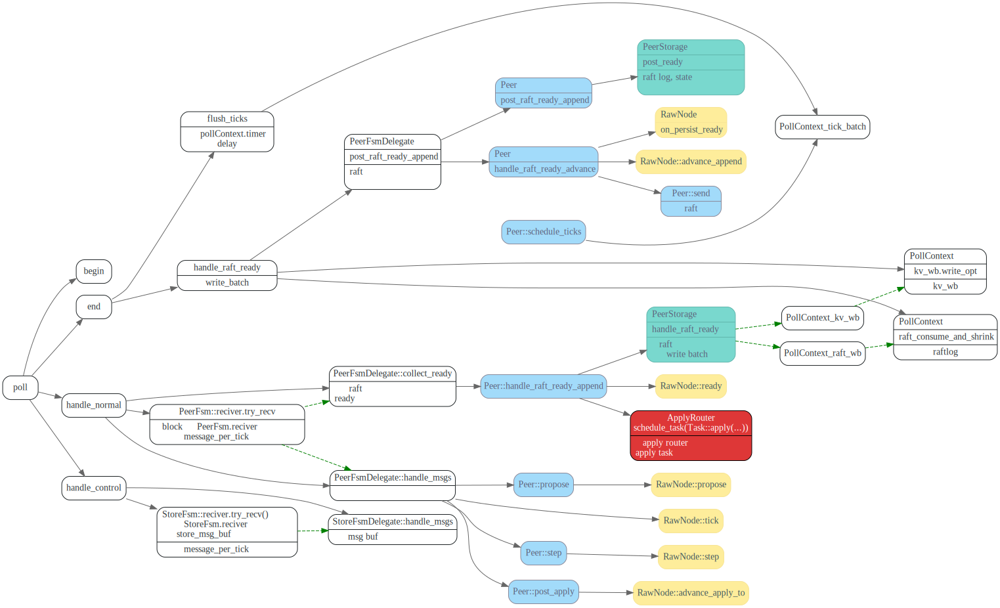
ApplyPoller
RaftMessage
proto
send_raft_message
在PeerFsmDelegate handle_msg之后，会调用collect_ready
获取raft中可以发送的raft messages. 在RaftPoller::end将
handle_msg中产生的write batch写入磁盘，然后更新完PeerStorage状态后，
会再Raft的advance_append获取要发送的raft message.
这些raft message 都会通过调用RaftClient::send 先将消息缓存到队列里面，
在最后RaftPoller::end或者RaftPoller::pause时，会调用RaftClient::flush,
将raft message真正的发送出去。
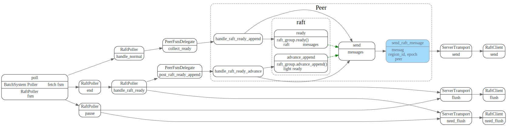
grpc 接口: raft/batch_raft
on_raft_message
peer收到RaftMessage后处理流程
RaftClient
trait Transport
#![allow(unused)] fn main() { /// Transports messages between different Raft peers. pub trait Transport: Send + Clone { fn send(&mut self, msg: RaftMessage) -> Result<()>; fn need_flush(&self) -> bool; fn flush(&mut self); } }
raft client使用方式如下，先send 将消息放入队列中，最后flush，才真正的发送消息。
#![allow(unused)] fn main() { /// A raft client that can manages connections correctly. /// /// A correct usage of raft client is: /// /// ```text /// for m in msgs { /// if !raft_client.send(m) { /// // handle error. /// } /// } /// raft_client.flush(); /// ``` }
ServerTransport
connection pool
connection builder
RaftClient的创建
主要函数调用流程
send
先从LRUCache 中获取(store_id, conn_id)对应的Queue，如果成功,
则向 Queue中push raftMessage, 如果push消息时返回Full错误，就调用notify，
通知RaftCall 去pop Queue消息, 将消息发送出去。
如果LRUCache中没有，则向Connection Pool中获取，如果获取还失败的话，则创建一个。
最后在future pool中执行start,
load_stream

start
start会异步的调用PdStoreAddrResolver去resolve store_id的addr,
然后创建连接。
调用batch_call 新建一个RaftCall.
RaftCall被poll时会不断的去Queue中pop 消息, 并通过grpc stream将消息发出去。
由于包含snap的Message太大，会有send_snapshot_sock专门处理
resolve: store addr解析
在TiKVServer::init时，store addr resolve worker，会在background yatp 线程池中执行。
调用者使用PdStoreAddrResolver来向add resolver线程
发消息。它创建流程如下:
Resolve流程如下：addr-resolver worker收到消息后，先本地cache中看查看有没有store 的addr，如果没有或者
已经过期了，就调用PdClient的get_store方法，获取store的addr地址。
成功后回调task_cb函数，在该回调函数中会触发oneshot_channel, StreamBackEnd::resolve 接着执行
await resolve后边代码。
snapshot 发送和接收
send_snap
包含snap的RaftMessage消息体比较大，将由snap-handler worker来发送.
snap-handler的worker创建和启动流程如下：
send_snapshot_sock 使用scheduler的tx，向snap-handler
worker 发送SnapTask::Send Task, snap-handler worker 调用send_snap创建
发送snap的异步任务，然后在上面创建的Tokio 线程池Runtime中执行。
send_snap会去snap manager获取snapshot 构造一个SnapChunk
然后创建和peer所在store addr的grpc connection channel，使用snapshotgrpc调用
将SnapChunk数据发送给peer.
SnapChunk实现了Stream trait, 在poll_next中调用read_exact一块块的将snap数据发出去。
recv_snap
broadcast_unreachable
往store_id消息失败, 向自己所有region广播store unreachable消息
参考
draft

Region
proto: Region
bootstrap region
Node::check_or_prepare_bootstrap_cluster, 创建第一个region.
#![allow(unused)] fn main() { pub const LOCAL_PREFIX: u8 = 0x01; pub const PREPARE_BOOTSTRAP_KEY: &[u8] = &[LOCAL_PREFIX, 0x02]; const MAX_CHECK_CLUSTER_BOOTSTRAPPED_RETRY_COUNT: u64 = 60; const CHECK_CLUSTER_BOOTSTRAPPED_RETRY_SECONDS: u64 = 3; }
初始化raft state和apply state
store::prepare_bootstrap_cluster 写入初始的raft state和apply state 到raft engine和kv engine.
region_id的raft_state_key为 0x010x02region_id0x02， apply_state_key为 0x010x02region_id0x03
#![allow(unused)] fn main() { pub const LOCAL_PREFIX: u8 = 0x01; // When we create a region peer, we should initialize its log term/index > 0, // so that we can force the follower peer to sync the snapshot first. pub const RAFT_INIT_LOG_TERM: u64 = 5; pub const RAFT_INIT_LOG_INDEX: u64 = 5; pub const REGION_STATE_SUFFIX: u8 = 0x01; pub const RAFT_STATE_SUFFIX: u8 = 0x02; }
Region数据结构关系
region信息在内存中会三处,StoreMeta, ApplyFsmDelegate, PeerStorage,
StoreMeta 包含了该store的所有region 信息，每个region的ApplyFsm和PeerFsm也都有一份。
region信息保存
region信息(RegionLocalState) 存在Kv Engine，regioin_id 对应的key为region_state_key，
0x01x03region_id0x01, 由函数write_peer_state负责将REgionLocalState写入write batch中。
在ApplyPoller end时候，会将write batch数据写入kv engine对应的Rocksdb.
region 信息加载
在初始化时，会扫描KV engine的0x010x03到ox010x04之间的所有key, 创建PeerFsm,
并将region信息 添加到StoreMeta.
region 信息更改流程
在执行admin cmd时(比如change peer, split region, merge region) 会 更改region信息。ApplyFsmDelegate会先将数据写入write batch中。 然后在更新自己的region 信息。
ApplyPolle线程在write batch 写入rocksdb后，会发消息个RaftPoller, RaftPoller负责更新StoreMeta中的region信息，PeerStorage 中的 region信息，并且如果peer是leader的话，还会将region信息通过 heartbeat 上报给Pd server.
RaftApplyState
RaftApplyState的作用是啥？主要记录了当前applied_index是多少。
在内存中有四处引用了RaftApplyState, 其中ApplyFsmDelegate和PeerStorage是长期持有， 而ApplyRes和InvokeContext则是短暂的，他们之间关系如下:
为什么ApplyFsmDelegate和PeerStorage都写了raftApplyState ?
ApplyFsm 中RaftApplyState更新流程如下:
- 收到raft log entries后，ApplyFsmDelegate使用最后一个log entry 更新自己的
commit_index和commit_term, - 在处理每一条raft normal log entry时，根据entry中的cmd 将修改操作写入kv write batch中，并更新
applied_index, - 处理完毕后，会将
apply_state也写入kv write batch, 最后整个kv write batch会一起写入kv engine.
注意此处将apply state和raft log entry 是放在同一write batch中写入kv engine的。这样写入是原子性的， 避免了可能出现不一致的情况。
PeerStorage中RaftApplyState更新流程如下:

简单看了下,read_index, conf_change, 判断是否merging和spliting用到了这个.
applied_index作用
applied_index 起了哪些作用?
RaftLocalState
PeerStorage
Trait Storage
#![allow(unused)] fn main() { /// Storage saves all the information about the current Raft implementation, including Raft Log, /// commit index, the leader to vote for, etc. /// /// If any Storage method returns an error, the raft instance will /// become inoperable and refuse to participate in elections; the /// application is responsible for cleanup and recovery in this case. pub trait Storage { /// `initial_state` is called when Raft is initialized. This interface will return a `RaftState` /// which contains `HardState` and `ConfState`. /// /// `RaftState` could be initialized or not. If it's initialized it means the `Storage` is /// created with a configuration, and its last index and term should be greater than 0. fn initial_state(&self) -> Result<RaftState>; /// Returns a slice of log entries in the range `[low, high)`. /// max_size limits the total size of the log entries returned if not `None`, however /// the slice of entries returned will always have length at least 1 if entries are /// found in the range. /// /// # Panics /// /// Panics if `high` is higher than `Storage::last_index(&self) + 1`. fn entries(&self, low: u64, high: u64, max_size: impl Into<Option<u64>>) -> Result<Vec<Entry>>; /// Returns the term of entry idx, which must be in the range /// [first_index()-1, last_index()]. The term of the entry before /// first_index is retained for matching purpose even though the /// rest of that entry may not be available. fn term(&self, idx: u64) -> Result<u64>; /// Returns the index of the first log entry that is possible available via entries, which will /// always equal to `truncated index` plus 1. /// /// New created (but not initialized) `Storage` can be considered as truncated at 0 so that 1 /// will be returned in this case. fn first_index(&self) -> Result<u64>; /// The index of the last entry replicated in the `Storage`. fn last_index(&self) -> Result<u64>; /// Returns the most recent snapshot. /// /// If snapshot is temporarily unavailable, it should return SnapshotTemporarilyUnavailable, /// so raft state machine could know that Storage needs some time to prepare /// snapshot and call snapshot later. /// A snapshot's index must not less than the `request_index`. fn snapshot(&self, request_index: u64) -> Result<Snapshot>; } }
log entries
接口first_index, last_index, initial_state和
Region, RaftLocalState, RaftApplyState之间的关系如下图:
entries 和term
entries和term接口实现逻辑如下图所示，主要是调用
RaftEngine的fetch_entries_to 获取[low,high)
范围内的log entries.
如果RaftEngine没有builtin_entry_cache, 则中间加一层EntryCache
在PeerStorageappend raft log entry时，会同时append 到EntryCach
和raft write batch中,而 write batch最终会写到raft engine。
raft snapshot
raft snapshot相关proto 如下，其中Snapshot是leader 发送给 follower的snapshot数据结构。 SnapshotMetadata则包含了confState 以及当前的index和term。

生成 snapshot
snapshot 生成流程如下:
- PeerStorage::snapshot函数生成GenSnapTask, 然后
Peer::handle_raft_ready_append将task发送给ApplyFsm - ApplyFsm将GenSnapTask转为
RegionTask::Gen, 发送给snap-generator worker线程。 - snap-generator worker 线程调用
peer_storage::do_snapshot生成snapshot, 然后 使用notifier(对应GenSnapTask rx的tx),通知GenSnapTask已OK。 - 下次PeerStorage::snapshot被调用时，会从GenSnapTask::Receiver中
try_recvsnapshot, 如果未准备好会返回SnapshotTemporarilyUnavailable，后面会再重试。
GenSnapTask

ApplyFsm::handle_snapshot
ApplyFsm::handle_snapshot, 此处主要处理need_sync的状况，
将write batch数据和apply sate flush写入rocksdb后，
再获取rocksdb 的snapshot. 最包装成RegionTask::Gen
由snap-generator worker线程池来执行。
snap-generator线程池执行handle_gen
在worker/region 的snap-generator线程池中执行生成snapshot的任务,线程池大小为GENERATE_POOL_SIZE 2
该线程池还负责apply snapshot.

生成SnapshotMetadata: peer_storage::do_snapshot
do_snapshot负责生成SnapshotMetadata, 而store/snap.rs中的build函数则负责生成snapshot的数据部分。
生成Snapshot 数据: Snap::build
将region的default, lock, write 几个column family 数据分别写入对应的cf_file
先写入到cf.tmp_file,写入成功后再rename.
#![allow(unused)] fn main() { pub const SNAPSHOT_CFS_ENUM_PAIR: &[(CfNames, CfName)] = &[ (CfNames::default, CF_DEFAULT), (CfNames::lock, CF_LOCK), (CfNames::write, CF_WRITE), ]; pub const CF_DEFAULT: CfName = "default"; pub const CF_LOCK: CfName = "lock"; pub const CF_WRITE: CfName = "write"; }
send snapshot
recv snapshot
apply snapshot
schedule_applying_snapshot
PeerStorage在处理raft的ready中的snapshot时，先将 snapshot metadata一些信息放入InvokeContext，写入write batch，
在write batch写完磁盘后，在PeerStorage::post_ready中，
将snap_state 设置为SnapState::Applying, 然后发送RegionTask::Apply给
snap generator worker线程池。
snap generator 线程池执行handle_apply

Thread Local Engine
RaftStorage中有read pool和两个write pool, 分别负责storage的读写操作，每个pool中的 每个线程都有自己的RaftKV engine clone为tls engine。
每个线程启动完，在after_start方法中，会调用set_tls_engine设置好自己的TLS_ENGINE_ANY指针。
线程关闭时，会调用destroy_tls_engine清理掉 tls engine.
使用时，用with_tls_engine来使用该指针。

TiKVServer::init_servers初始化时，会创建一些yatp thread pool. TxnScheduler会创建两个
worker pool用来处理Txn command，而Storage和Coprocessor 则有个read_pool,
如果enable了config.pool中的unified_read_pool选项，Storage和coprocessor会共享一个read pool.
Unified thread pool 参见pingcap博客 Unified Thread Pool
with_tls_engine
使用with_tls_engine主要有三处，
- TxnScheduler在执行事务cmd时，会在worker thread pool，执行read/write cmd.
- Storage的正常的
batch_get_command,scan等读操作。 - Coprocessor的读数据操作。
tls LRUcache
tls engine的作用是，这样每个线程在使用RaftKV时，会优先使用自己线程 tls RaftKv的LruCache，如果cache miss或者cache的数据 stale了才会使用Lock去mutex共享的变量中获取数据，并插入LruCache中。 这样大大的降低了lock使用的概率.
RaftKv中LRUcache主要有两处：
Router::caches
Router给region 的raft peer 发送消息时候(具体方法为Router::check_do)，先从Router::caches获取BasicMailbox, 如果cache miss
再加锁去normals中读取BasicMailbox.
#![allow(unused)] fn main() { pub struct Router<N: Fsm, C: Fsm, Ns, Cs> { normals: Arc<Mutex<HashMap<u64, BasicMailbox<N>>>>, caches: Cell<LruCache<u64, BasicMailbox<N>>>, //... } }
LocalReader::delegate
在读数据时，线程会先在自己的LocalReader::delegates LRUcache中获取delegate(具体方法为LocalReader::get_delegate)，
如果cache中没有或者delegate 版本发生了变化，才会去加lock 去store_meta中获取ReadDelegate.
#![allow(unused)] fn main() { pub struct LocalReader<C, E> where C: ProposalRouter<E::Snapshot>, E: KvEngine, { store_meta: Arc<Mutex<StoreMeta>>, delegates: LruCache<u64, Arc<ReadDelegate>>, } }
参考文献
Leader Lease
TiKV 功能介绍 - Lease Read 中描述了 raft 中leader lease 机制如下:
在 Raft 论文里面，提到了一种通过 clock + heartbeat 的 lease read 优化方法。 也就是 leader 发送 heartbeat 的时候，会首先记录一个时间点 start， 当系统大部分节点都回复了 heartbeat response，那么我们就可以认为 leader 的 lease 有效期可以到 start + election timeout / clock drift bound这个时间点。
由于 Raft 的选举机制，因为 follower 会在至少 election timeout 的时间之后， 才会重新发生选举，所以下一个 leader 选出来的时间一定可以保证大于 start + election timeout / clock drift bound。
在TiKV实现中，并不是通过底层的raft-rs heatbeat 机制而是通过上层的读写操作 来renew lease的.
TiKV实现了transfer leadership, 在转移leadership时，target节点
不必等到election timout就能开始选举，上面的假设就不成立了，
因此TiKV引入了LeaseState::Suspect状态
data struct
在TiKV中，每个region，有两个存放lease的地方，一个为Peer::leader_lease类型为Lease,一个是ReadDelegate
的RemoteLease. 在更改Peer::lease_lease时，同时也会更新RemoteLease. RemoteLease 主要由LocalReader来用.
Lease bound
记录leader lease变量为Lease::bound, Lease::bound值可能为以下两种:
#![allow(unused)] fn main() { /// 1. Suspect Timestamp /// A suspicious leader lease timestamp, which marks the leader may still hold or lose /// its lease until the clock time goes over this timestamp. /// 2. Valid Timestamp /// A valid leader lease timestamp, which marks the leader holds the lease for now. /// The lease is valid until the clock time goes over this timestamp. }
如果bound为None，说明lease还没被设置， 或者expired了，或者节点角色由leader变为了follower, lease失效了。
如果boud类型为Either::Left则当前LeaseState为Supsect(说明leadership可能在转移中).
如果bound类型为Either::Right, 并且ts < bound, 则说明还在lease内。
Inspect
#![allow(unused)] fn main() { /// Inspect the lease state for the ts or now. pub fn inspect(&self, ts: Option<Timespec>) -> LeaseState { match self.bound { Some(Either::Left(_)) => LeaseState::Suspect, Some(Either::Right(bound)) => { if ts.unwrap_or_else(monotonic_raw_now) < bound { LeaseState::Valid } else { LeaseState::Expired } } None => LeaseState::Expired, } } }
inspect被调用流程如下：
主要有个trait RequestInspector，它有个默认的实现inspect方法，然后会调用inspect_lease和has_applied_to_current_term
两个方法。
LocalReader的Inspector和Peer都implement了该trait, 各自实现了has_applied_to_current_term和inspect_lease方法。
LocalReader会使用ReadDelegate中的RemoteLease inspect一次看是否在lease内。如果不在，则会将请求通过raft route 发给对应的PeerFsm, Peer::propose时，会使用 Peer的Lease inspect检查一次。
此外Peer::inspect_lease还有两个调用路径如下, 主要是对read_index的优化
在leader 节点处理其他peer发来的消息时，
如果消息为MsgReadIndex, 并且当前leader在lease内的话，就直接返回
当前store的commit index，不用再去调用raft_group的step方法了。
另外在leader节点, 在调用raft_group的read_index会如果当前LeaseState不为Supsect,
则还会用pending_reads中最后一个ReadIndexRequest的renew_lease_time来看是否在
lease内。
#![allow(unused)] fn main() { // 3. There is already a read request proposed in the current lease; //Peer的read_index方法 fn read_index<T: Transport>( //... if self.is_leader() { match self.inspect_lease() { // Here combine the new read request with the previous one even if the lease expired is // ok because in this case, the previous read index must be sent out with a valid // lease instead of a suspect lease. So there must no pending transfer-leader proposals // before or after the previous read index, and the lease can be renewed when get // heartbeat responses. LeaseState::Valid | LeaseState::Expired => { // Must use the commit index of `PeerStorage` instead of the commit index // in raft-rs which may be greater than the former one. // For more details, see the annotations above `on_leader_commit_idx_changed`. let commit_index = self.get_store().commit_index(); if let Some(read) = self.pending_reads.back_mut() { let max_lease = poll_ctx.cfg.raft_store_max_leader_lease(); if read.renew_lease_time + max_lease > renew_lease_time { read.push_command(req, cb, commit_index); return false; } } } // If the current lease is suspect, new read requests can't be appended into // `pending_reads` because if the leader is transferred, the latest read could // be dirty. _ => {} } } }
renew
为了保持和etcd逻辑一致，TiKV中并没有通过hearbeat来renew leader lease(参见PingCap博客TiKV 功能介绍 - Lease Read)， 而是在上层通过读写操作来renew leader lease.
- 在节点刚成为leader时，
on_role_changed会更新新当选leader的lease. Peer::apply_reads时，使用read_index发起时候的ts更新leadr lease- 在处理committed log entries时，会使用write 的ts leader lease.
在2，3中，如果Peer处理Raft ready时，如果leader节点成功的处理了read_index和proposewrite请求，
则说明发起该请求时，该节点肯定是leader, 因此可以用发起请求时候的ts来renew leader lease.
函数Peer::maybe_renew_leader_lease 会更新Peer的leader lease, 同时会update ReadDelegate的RemoteLease
suspect
由于leader transfer时，target节点不必等待election timeout就可以发起election, 因此此时要将leader 的Lease设为Supsect状态。
expire
在peer节点由leader变为follower时，会将lease expire, 另一方面如果lease长时间没被renew(比如长时间没有读写操作），inspect时，lease会被expire
lease expire时会将bound设置为None，并将ReadDelegate的RemoteLease也设置为None.
参考文献
Read Index
- 弄明白replica memory lock机制
- 弄明白为啥leader只等待
apply_current_term?- 为什么要send ?
data struct
主要有个ReadIndexQueue 等待队列，每个ReadIndexRequest都有一个Uuid唯一标识， ReadIndexQueue中的context 则记录了从Uuid到reads队列中index的映射。 这样方便根据uuid来找到reads对应的ReadIndexRequest。
在调用raft接口时，uuid会传过去，raft ready时，会将uuid 和commit index带回来。
Peer read_index
如果region正在splitting，或者merging 则会返回ReadIndexNotReady错误。
Peer::read_index 主要流程是生成一个uuid, 然后调用raft RawNode的read_index方法，并传入该uuid
然后将请求放入pending_reads队列中, 等后面raft ready, 拿到commit index了，
再从pending_reads队列中找到该请求，然后调用它的callback。
此外Tikv对lease和hibernate_state做了一些特殊处理。
在TiKV中，每次read_index时候，还会加上当前monotonic_raw_now时间戳，在后面raft ready时，Peer
会使用该时间戳来renew leader lease.
如果当节点为leader, 并且pending reads中最后一个请求的renew_lease_time + max_lease > monotonic_raw_now
则直接将req,cb,和当前store的commit_index push 到最后一个请求的cmds数组中，不用走后面raft的read index了。
如果当前节点为follower, 并且follower不知道自的leader是谁，leader可能出于hibernated状态， follower需要广播WakeUP消息，唤醒region中所有peer. 并且向PD询问当前leader是谁。 然后返回NotLeader错误。
leader apply_reads
Peer apply_reads时， leader和follower节点的逻辑有些不同
leader 节点raft ready返回的read states 顺序和leader的pending_reads队列中的顺序是一致的。
因此可以直接遍历reads队列。
leader节点的ready_to_handle_read 方法如下, 要等到leader当前
term的log entry已被applied, 并且当前不在splitting或者merging时，
才能准备response_read
在线性一致性和 Raft 中说明了原因
新选举产生的 Leader，它虽然有全部 committed Log，但它的状态机可能落后于之前的 Leader，状态机应用到当前 term 的 Log 就保证了新 Leader 的状态机一定新于旧 Leader，之后肯定不会出现 stale read。
这个地方让我疑惑的是为什么不像follower节点那样，等到applied_index >= read_index ?
在TiDB 新特性漫谈：从 Follower Read 说起 中也谈到了这个问题
因为 TiKV 的异步 Apply 机制，可能会出现一个比较诡异的情况：破坏线性一致性，本质原因是由于 Leader 虽然告诉了 Follower 最新的 Commit Index，但是 Leader 对这条 Log 的 Apply 是异步进行的，在 Follower 那边可能在 Leader Apply 前已经将这条记录 Apply 了，这样在 Follower 上就能读到这条记录，但是在 Leader 上可能过一会才能读取到。 这个并不会破坏TiKV的事务隔离级别.(TODO: 想下为什么不会)
#![allow(unused)] fn main() { fn ready_to_handle_read(&self) -> bool { // TODO: It may cause read index to wait a long time. // There may be some values that are not applied by this leader yet but the old leader, // if applied_index_term isn't equal to current term. self.get_store().applied_index_term() == self.term() // There may be stale read if the old leader splits really slow, // the new region may already elected a new leader while // the old leader still think it owns the split range. && !self.is_splitting() // There may be stale read if a target leader is in another store and // applied commit merge, written new values, but the sibling peer in // this store does not apply commit merge, so the leader is not ready // to read, until the merge is rollbacked. && !self.is_merging() } }
follower apply_reads
follower apply reads时，为什么要send_read_command ?
follower节点要等到applied_index >= read_index, 并且没在apply snapshot才能ready。
#![allow(unused)] fn main() { fn ready_to_handle_unsafe_replica_read(&self, read_index: u64) -> bool { // Wait until the follower applies all values before the read. There is still a // problem if the leader applies fewer values than the follower, the follower read // could get a newer value, and after that, the leader may read a stale value, // which violates linearizability. self.get_store().applied_index() >= read_index // If it is in pending merge state(i.e. applied PrepareMerge), the data may be stale. // TODO: Add a test to cover this case && self.pending_merge_state.is_none() // a peer which is applying snapshot will clean up its data and ingest a snapshot file, // during between the two operations a replica read could read empty data. && !self.is_applying_snapshot() } }
memory locks on replica read
check memory locks in replica read #8926
This PR changes the read index context from a UUID to something more complex. Now the context may contain the range to check and also may contain the lock returned by the leader. When a leader receives a read index context with key ranges, it will check the in-memory lock table and see if there is any lock blocking this read. If any, it will send the lock back to the follower or learner via the read index context.
leader节点收到follower的ReadIndex请求后，会调用ConcurrencyManager::read_range_check
放到ReadIndexContext的lock字段中返回给follower
在follower的Peer::response_read中，如果有lock，会将LockInfo 返回给cb.invoke_read
返回给上层调用。
#![allow(unused)] fn main() { fn response_read<T>( &self, read: &mut ReadIndexRequest<EK::Snapshot>, ctx: &mut PollContext<EK, ER, T>, replica_read: bool, ){ //... for (req, cb, mut read_index) in read.cmds.drain(..) { // leader reports key is locked if let Some(locked) = read.locked.take() { let mut response = raft_cmdpb::Response::default(); response.mut_read_index().set_locked(*locked); let mut cmd_resp = RaftCmdResponse::default(); cmd_resp.mut_responses().push(response); cb.invoke_read(ReadResponse { response: cmd_resp, snapshot: None, txn_extra_op: TxnExtraOp::Noop, }); continue; } } }
- 为什么要加个memory lock ?
- follower怎么处理这个lock ?
- 上层callback收到这个resp后，会怎么处理？
retry
retry时，需要注意哪些问题 ？
参考文献
Questions
- read index这个为什么不像raft论文中描述那样，等到commit index被applied才返回值?
- follower read 和leader read在处理流程上有什么不同？
- 为什么role变了，要清理掉 在等待的read index ？
- 这块怎么会有个lock info ?
- memory check locking的作用是什么？
- TiDB,TiKV怎么开启follower read ? coprocessor 会走follower read吗？
Async Snapshot
async snapshot
async snapshot最终会调到LocalReader::read方法, 如果可以local read(根据当前leader lease是否过期，request是否强制要求走readIndex等来判断） 就直接使用当前kv engine的snapshot. 否则就需要走一次read index,
使用router将readIndex请求发给regionId对应的PeerFsm.
LocalReader
LocalReader数据结构关系图如下, 它引用了SotreMeta，用来获取regionID对应的ReadDelegate, 然后根据ReadDelegate,来判断能否直接local read.
LocalReader 首先会检查是否还在leader lease内，不在leader lease内, 会将raft 请求redirct给PeerFsm来处理。
在leader lease内的read request 会直接用自己的kv engine snapshot，并且对于同一个Grpc stream request （使用ThreadReadId 来标识）会用同一个snapshot.
LocalReader 检查leader lease主要靠regionId对应的ReadDelegate中的RemoteLease,
而ReadDelegate 是集中放在StoreMeta::reads中的，为了避免每次需要用lock来访问
SotreMeta::reads, LocalReader加了一层LruCache.
// TODO: 为啥？
注意这里面的Inspector::inspect_lease
只检查了ReadDelegate::leader_lease是否为None.
在后面read时候，才会去真正检查是否是validate.
但是搜了代码，貌似没被钓到过。
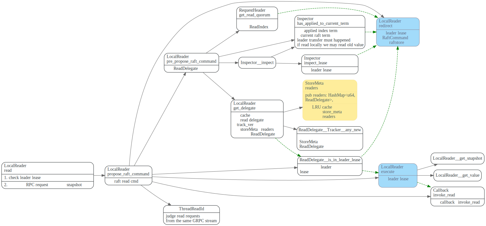
LocalReader::get_delegate 先看LRU cache中是否有regionID对应的ReadDelegate,
如果没有，或者ReadDelegate的track_ver发生了变化， 则需要加锁然后从StoreMeta.readers
获取最新ReadDelegate
ThreadReadId
tikv 用ThreadReadId来判断reads是否from 同一个GRPC Stream，比如下面的KvService中的batch_commands stream接口中的read request会用同一个ThreadReadId
为什么coprocessor 那而没有用ThreadReadID?
在LocalReader get_snapshot时，如果cache_read_id == read_id
则直接返回snap_cache, 否则就调用kv_engine::snapshot ，并更新snap_cache
和cache_read_id
ReadDelegate
StoreMeta的readers保存了regionID -> ReadDelegate的映射。而LocalReader的则有一份delegates 保存了
一些ReadDelegate的cache.
TrackVer则用判断ReadDelegate是否发生了变化, 里面的version是个Atomic Arc, 保存当前最新版本，在TrackVer被clone时，
local_ver 会保存当前version最新版本。ReadDelegate update时候，会将Atomic version inc 1.
#![allow(unused)] fn main() { impl Clone for TrackVer { fn clone(&self) -> Self { TrackVer { version: Arc::clone(&self.version), local_ver: self.version.load(Ordering::Relaxed), source: false, } } }
ReadDelegate update, 会更新TrackVer,这样LocalReader 就会知道自己LRU Cache中的 ReadDelegate过期了，会重新加载ReadDelegate.
参考文献
draft
lease = max_lease - (commit_ts - send_ts)
raft_store_max_leader_lease: ReadableDuration::secs(9),
lease和split/merge之间也有相互影响
lease 的bound是啥？ max_drift起到的作用是？
max_lease是9s, election timeout是10
为什么要引入supsect这个状态呢？直接设置为Invalid 不可以吗？
LeaseState有Suspect, Valid, Expired三种状态
这里面的ts 需要使用monotonic_raw_now, 具体原因是？
ReadIndex
这个corner case不是很明白，为什么新的leader的commit index不是最新的？
但这里，需要注意，实现 ReadIndex 的时候有一个 corner case，在 etcd 和 TiKV 最初实现的时候，我们都没有注意到。也就是 leader 刚通过选举成为 leader 的时候，这时候的 commit index 并不能够保证是当前整个系统最新的 commit index，所以 Raft 要求当 leader 选举成功之后，首先提交一个 no-op 的 entry，保证 leader 的 commit index 成为最新的。
所以，如果在 no-op 的 entry 还没提交成功之前，leader 是不能够处理 ReadIndex 的。但之前 etcd 和 TiKV 的实现都没有注意到这个情况，也就是有 bug。解决的方法也很简单，因为 leader 在选举成功之后，term 一定会增加，在处理 ReadIndex 的时候，如果当前最新的 commit log 的 term 还没到新的 term，就会一直等待跟新的 term 一致，也就是 no-op entry 提交之后，才可以对外处理 ReadIndex。
Follower read
参考文献
TiKV 的 lease read 实现在原理上面跟 Raft 论文上面的一样，但实现细节上面有些差别，我们并没有通过 heartbeat 来更新 lease，
而是通过写操作。对于任何的写入操作，都会走一次 Raft log，所以我们在 propose 这次 write 请求的时候，记录下当前的时间戳 start，然后等到对应的请求 apply 之后，我们就可以续约 leader 的 lease。当然实际实现还有很多细节需要考虑的，譬如：
Async Write
提交raft proposal
Peer调用raft RawNode::propose方法，将RaftCmdRequest 提交给raft log, 然后将write callback和要写入的log entry的index放入了本地的proposals等待队列。
这个地方和ReadIndex一样，会带上当前时间戳，作为后续renew lease的时间戳
处理raft committed
leader节点在应用propse log entry后，会将该log entry先保存在本地，然后复制到各个follower上，待集群中大部分节点 都保存了该log entry时， log entry达到comitted 状态，TiKV可以安全的把它apply 到kv engine上了。
Peer在handle_raft_committed_entries时，会根据log entry的term和index找到它在proposals队列中
对应的proposal, 然后主要做如下工作
- renew leader lease, 使用proposal时候的时间戳来更新leader lease.
- 调用该proposal cb的
invoke_comitted。 - 将comitted entries和它们的cbs 打包发给apply fsm处理。
Apply to KvEngine
comitted entries, 连同它对应的Proposals， 被路由到ApplyFsm后，由ApplyFsm 负责执行comitted entries中的RaftCmdRequest
保存完毕后，调用回调cb.invoke_with_response,通知write 已经apply 到kv engine了.
这些Proposals首先会被放到ApplyDelegate::pending_cmds队列中, 等raft cmd被执行完毕后，
从ApplyDelegate::pending_cmds队列中，找到对应的Proposal, 然后将它的callback 放入
ApplyContext::cbs中。
最后再ApplyContext::flush时, 回调ApplyContext::cbs中的callback, 然后将ApplyRes 发
给PeerFsm.
RaftApplyState
处理完一个comitted entry后，会更新applied_index_term和applied_index
这两项会放到ApplyRes，后面通知PeerFsm, PeerFsm会更新PeerStorage中的
apply_state和applied_index_term.
在生成snaptask时，也会用到这两项。
exec raft cmd
write有四种命令，Put, Delete, DeleteRange, IngestSst, 其中put/delete是写到write batch上的。
ApplyResult::yield
每次ApplyPoller::handle_normal时，会在ApplyDelegate::handle_start中记录开始的时间，
然后在ApplyDelegate::handle_raft_entry_normal, 每次处理一个raft log entries,
如果需要write batch需要写入kv engine的话，就调用ApplyContext::commit，将write batch
提交，然后计算已经消耗的时间。如果时间超过ApplyContext::yield_duration, 就返回ApplyResult::yield.
在ApplyDelegate::handle_raft_committed_entries中，会将剩余的committed entries 保存到
ApplyDelegate::yield_state中。
等下次重新开始handle_normal时，先调用resume_pending, 先处理ApplyDelegate::yield_state中的log
entries.
Region Epoch
Region Epoch变更规则如下：
- 配置变更的时候，
conf_ver+ 1。- Split 的时候，原 region 与新 region 的 version均等于原 region 的 version+ 新 region 个数。
- Merge 的时候，两个 region 的 version均等于这两个 region 的 version最大值 + 1。
在raft peer之间发送RaftMessage(比如hearbeat, append等消息）时，Peer::send_raft_message
会把region的epoch放到RaftMessage中, 然后再发出去.
在raft peer收到消息时，PeerFsmDelegate::check_msg中会检查Region Epoch，如果不匹配的话，会drop skip掉这个消息。
在处理上层应用通过raft router发来的RaftCmdRequest时，也会检查它的region epoch和term, 如果不Match会返回EpochNotMatch.
在ApplyFsm 执行raft cmd时，也会检查region epoch，如果不match的话，会返回EpochNotMatch，
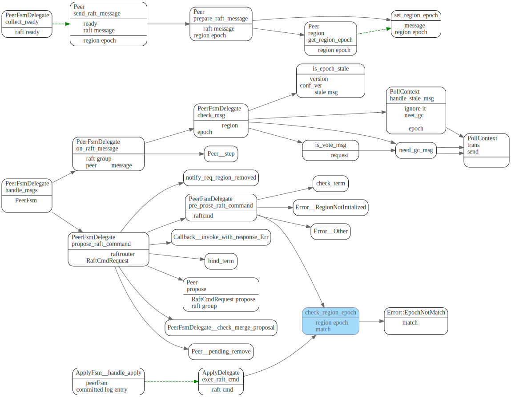
check_region_epoch检查逻辑如下
- 对于normal request，只会检查version.
- 对于AdminCmd 有个map
#![allow(unused)] fn main() { pub struct AdminCmdEpochState { pub check_ver: bool, pub check_conf_ver: bool, pub change_ver: bool, pub change_conf_ver: bool, } lazy_static! { /// WARNING: the existing settings in `ADMIN_CMD_EPOCH_MAP` **MUST NOT** be changed!!! /// Changing any admin cmd's `AdminCmdEpochState` or the epoch-change behavior during applying /// will break upgrade compatibility and correctness dependency of `CmdEpochChecker`. /// Please remember it is very difficult to fix the issues arising from not following this rule. /// /// If you really want to change an admin cmd behavior, please add a new admin cmd and **do not** /// delete the old one. pub static ref ADMIN_CMD_EPOCH_MAP: HashMap<AdminCmdType, AdminCmdEpochState> = [ (AdminCmdType::InvalidAdmin, AdminCmdEpochState::new(false, false, false, false)), (AdminCmdType::CompactLog, AdminCmdEpochState::new(false, false, false, false)), (AdminCmdType::ComputeHash, AdminCmdEpochState::new(false, false, false, false)), (AdminCmdType::VerifyHash, AdminCmdEpochState::new(false, false, false, false)), // Change peer (AdminCmdType::ChangePeer, AdminCmdEpochState::new(false, true, false, true)), (AdminCmdType::ChangePeerV2, AdminCmdEpochState::new(false, true, false, true)), // Split (AdminCmdType::Split, AdminCmdEpochState::new(true, true, true, false)), (AdminCmdType::BatchSplit, AdminCmdEpochState::new(true, true, true, false)), // Merge (AdminCmdType::PrepareMerge, AdminCmdEpochState::new(true, true, true, true)), (AdminCmdType::CommitMerge, AdminCmdEpochState::new(true, true, true, false)), (AdminCmdType::RollbackMerge, AdminCmdEpochState::new(true, true, true, false)), // Transfer leader (AdminCmdType::TransferLeader, AdminCmdEpochState::new(true, true, false, false)), ].iter().copied().collect(); } }
会修改region epoch的RaftAdminCmd
Conf Change
propose conf change
ApplyFsm
exec_change_peer
exec_change_peer_v2
on_ready_change_peer
Split Region
data struct
region相关信息如下：
Split Check
执行Split操作
Split操作是在当前region raft group的各个节点上原地进行的， Split 操作被当做一条Proposal 通过 Raft 达成共识， 然后各自的Peer分别执行 Split。
Split操作会修改region epoch中的version字段。
准备和propose split
向pd server发送ask_batch_split请求获取新的region_ids和以及每个region对应的peer_ids
然后发送AdminCmdType为BatchSplit的raft cmd给PeerFsm。
然后PeerFsmDelegate在处理BatchSplit RaftCmdRequest时，会像正常的log entry那样,propose到raft, 然后有
leader 复制到各个peer, 等达到commit状态时，ApplyFsm开始执行exec_batch_split.
ApplyDelegate::exec_batch_split: 保存split region state
SplitRequest会被转换为SplitBatchRequest, 然后执行ApplyDelegate::exec_batch_split
分裂后的region epoch中的version会更新。
#![allow(unused)] fn main() { // fn exec_batch_split<W: WriteBatch<EK>>( let mut derived = self.region.clone(); // 更新region epoch.version let new_version = derived.get_region_epoch().get_version() + new_region_cnt as u64; derived.mut_region_epoch().set_version(new_version); }
新的region复用之前region的peers信息，会根据SplitRequest中更新new region的 region_id以及region的peer_ids.
#![allow(unused)] fn main() { for req in split_reqs.get_requests() { let mut new_region = Region::default(); new_region.set_id(req.get_new_region_id()); new_region.set_region_epoch(derived.get_region_epoch().to_owned()); new_region.set_start_key(keys.pop_front().unwrap()); new_region.set_end_key(keys.front().unwrap().to_vec()); new_region.set_peers(derived.get_peers().to_vec().into()); for (peer, peer_id) in new_region .mut_peers() .iter_mut() .zip(req.get_new_peer_ids()) { peer.set_id(*peer_id); } new_split_regions.insert( new_region.get_id(), NewSplitPeer { peer_id: util::find_peer(&new_region, ctx.store_id).unwrap().get_id(), result: None, }, ) regons.push(new_region) } }
最后调用write_peer_state将split 后的new_region RegionLocalState写入WriteBatch
pending_create_peers
PeerFsmDelegate::on_ready_split_region
创建新的region对应的PeerFsm并且注册到RaftRouter, 创建ApplyFsm
并且注册到ApplyRouter. 然后更新StoreMeta中的readers,
regions, region_ranges等元信息。
如果是leader会向PD 上报自己和新的region的元信息。只有leader节点，在执行split时， 可以开始new region的campaign操作，其他非leader节点， 要等选举超时之后，才能开始选举操作。
读过 Peer::handle_raft_ready_append中记录 last_committed_split_idx的小伙伴应该能注意这里并没有让租约立马失效，仅仅设置 index 阻止下次续约。换句话说，在 Split 期间的那次租约时间内是可以让原 Region 的 Leader 提供本地读取功能的。根据前面的分析，这样做貌似是不合理的。
原因十分有趣，对于原 Region 非 Leader 的 Peer 来说，它创建新 Region 的 Peer 是不能立马发起选举的，得等待一个 Raft 的选举超时时间，而对于原 Region 是 Leader 的 Peer 来说，新 Region 的 Peer 可以立马发起选举。Raft 的超时选举时间是要比租约时间长的，这是保证租约正确性的前提
last_committed_split_idx
Spliting期间的一致性

在split时，会更改region epoch，split期间对于原有region的写操作会返回EpochNotMatch错误。
下面分几种情况讨论
- leader节点还没apply BatchSplit.
is_splitting
在split期间，不会renew leader lease,
参考文献
Questions
- 在splitting 期间是怎么处理读写的？
- region A分裂为 region A, B， B的成员和A的一样吗？
Merge Region
Merge Region时，PD先将source region和targer Region 的TiKV节点对齐。
Merge流程
理解的关键点
- Source region 在向target region 提交CommitMerge前,怎么发现和处理target region发生了变动
- source region的
on_catch_up_logs_for_merge和on_ready_prepare_merge这两个被调用时序问题。 - target和source region之间通过CatchUpLogs中的atomic
catch_up_logs,来同步补齐的状态。
相关RaftCmdRequest
在merge region中，主要涉及到的raft cmd为PrePareMergeRequest和CommitMergeRequest
PrepareMergeRequest 将由source region来proposal并执行，在source region执行PrepareMerge时，
PeerState为Merging, 并在RaftLocalState中保存了一个MergeState。然后发CommitMergeRequest给本地的target region,
target region把CommitMergeRequest proposal到target region的raft group后， 由target region来执行CommitMerge.
PrepareMerge
Source Region: propose PrepareMerge
Source Region leader在leader收到PrepareMerge请求后，会propose 一条PrepareMerge消息。
propose 之前会做一些检查, 最后会设置PrePareMerge中的min_index参数
在ApplyFsm执行PrepareMerge时，region的epoch和conf_version都会+1,
这样PrepareMerge 之后Proposal的log entry 在Apply时都会被skip掉。
所以soure region在propose PreapreMerge 之后，就不可读写了。
Source Region ApplyDelegate::exec_prepare_merge
将PeerState设置为Merging, 将region epoch的conf_ver和version 都+1
Source Region PeerFsmDelegate::on_ready_prepare_merge
source region raft 在收到ExecResult::PreapreMerge消息之后， 会调用on_ready_prepare_merge 处理该消息。
首先设置了pending_merge_state，在此之后，该region raft 对于proposal(RollbackMerge的除外)请求，会返回Error::ProposalInMergeMode.
#![allow(unused)] fn main() { fn propose_normal<T>( &mut self, poll_ctx: &mut PollContext<EK, ER, T>, mut req: RaftCmdRequest, ) -> Result<Either<u64, u64>> { if self.pending_merge_state.is_some() && req.get_admin_request().get_cmd_type() != AdminCmdType::RollbackMerge { return Err(Error::ProposalInMergingMode(self.region_id)); } }
然调用on_check_merge, 经过一系列检查后， 向本地的target region Propose 一条CommitMergeRequest消息,
CommitMergeRequest 带上了source region一些peer要补齐的log entries.
其中比较重要的方法是Peer::validate_merge_peer, 会检查Source的MergeState 中的target region信息
和当前本地target region信息。如果merge state中的比本地的epoch小，则返回错误。
如果比本地的大，则需要等target region epoch 追上后再schedule_merge,
在下一次check merge tick中接着检查。
向本地target region发送AdminCmdType::CommitMerge类型的RaftCmd.
#![allow(unused)] fn main() { // Please note that, here assumes that the unit of network isolation is store rather than // peer. So a quorum stores of source region should also be the quorum stores of target // region. Otherwise we need to enable proposal forwarding. self.ctx .router .force_send( target_id, PeerMsg::RaftCommand(RaftCommand::new(request, Callback::None)), ) .map_err(|_| Error::RegionNotFound(target_id)) }
处理Schedule Error: RegionNotFound, 以及target region epoch比merge state中的大。
RollbackMerge
RollbackMerge执行后，会将pending_merge_state设置为none, 这样
就停止了on_check_merge, 并且propose_normal也可以正常工作了
RollbackMerge会将region epoch的version +1, 然后通过pd hearbeat 上报给pd server.
CommitMerge
Target Region ApplyDelegate::exec_commit_merge
CommitMerge消息由source region 发给本地的target region后，如果本地 的target region是leader， 则会像正常消息一样propose 到raft group, 如果target region不是leader, 则会slient drop掉该消息。
在target节点执行CommitMerge时，会先发送一个CatchUpLogs消息，给本地的source region
让它把日志补齐，CatchUpLogs里面带了一个logs_up_to_date是个AtomicU64.
如果source region补齐了log, 则会设置logs_up_to_date为自己的region_id。
ApplyDelegate::wait_merge_state 也引用了logs_up_to_date，每次resume_pending
都会load logs_up_to_date，如果有值，则会继续重新执行exec_commit_merge.
最后返回结果ExecResult::CommitMerge
等SourceRegion 已经CatchUpLogs后, 会修改atomic logs_up_to_date
从而影响ApplyDelegate::wait_merge_state, 在resume_pending
时重新执行exec_commit_merge。
这次会将target region的key range扩大, 增加target region的version, 最后调用
write_peer_state将target region信息保存起来。
Source Region: PeerFsmDelegate::on_catch_up_logs_for_merge
使用CommitMergeRequest中的entries，补齐apply自己本地raft log. ，然后发送LogsUpToDate消息个ApplyFsm。
ApplyFsm中设置atomic 变量CatchUpLogs::logs_up_to_date值为
source_region_id, 然后发Noop消息给target region， 让target region接着处理自己的wait_merge_state
在执行on_catch_up_logs_for_merge时，如果pending_merge_state不为None,
说明source region可能已经过PreapreMerge消息了，直接发送LogsUpToDate消息给applyFsm.
#![allow(unused)] fn main() { fn on_catch_up_logs_for_merge(&mut self, mut catch_up_logs: CatchUpLogs) { if let Some(ref pending_merge_state) = self.fsm.peer.pending_merge_state { if pending_merge_state.get_commit() == catch_up_logs.merge.get_commit() { assert_eq!( pending_merge_state.get_target().get_id(), catch_up_logs.target_region_id ); // Indicate that `on_ready_prepare_merge` has already executed. // Mark pending_remove because its apply fsm will be destroyed. self.fsm.peer.pending_remove = true; // Just for saving memory. catch_up_logs.merge.clear_entries(); // Send CatchUpLogs back to destroy source apply fsm, // then it will send `Noop` to trigger target apply fsm. self.ctx .apply_router .schedule_task(region_id, ApplyTask::LogsUpToDate(catch_up_logs)); return; } } }
同样在执行on_ready_prepare_merge中如果 Peer.catch_up_logs不为None，说明on_catch_up_logs_for_merge
这个先执行的，此时执行时的是被补齐的log中的PrepareMerge消息。
这时候Log已经补齐了，可以ApplyFsm发送LogsUpToDate消息了。
#![allow(unused)] fn main() { fn on_ready_prepare_merge(&mut self, region: metapb::Region, state: MergeState) { //... if let Some(ref catch_up_logs) = self.fsm.peer.catch_up_logs { if state.get_commit() == catch_up_logs.merge.get_commit() { assert_eq!(state.get_target().get_id(), catch_up_logs.target_region_id); // Indicate that `on_catch_up_logs_for_merge` has already executed. // Mark pending_remove because its apply fsm will be destroyed. self.fsm.peer.pending_remove = true; // Send CatchUpLogs back to destroy source apply fsm, // then it will send `Noop` to trigger target apply fsm. self.ctx.apply_router.schedule_task( self.fsm.region_id(), ApplyTask::LogsUpToDate(self.fsm.peer.catch_up_logs.take().unwrap()), ); return; } } }
Target region: PeerFsmDelegate::on_ready_commit_merge
target region的PeerFsm 中更新StoreMeta中regions, readers， region_ranges信息，
删除source_region的，更新target region的
然后发送SignificantMsg::MergeResult消息给source_region.
Source Region: PeerFsmDelegate::on_merge_result
destory source regon PeerFsm和ApplyFsm.
如果ApplyFsm还没被注销的话，发送ApplyTask::destory 先destory ApplyFsm.
Storage
Percolator
- 分布式事务关键点在于所有的参与者对于事务状态(commit/abort) 达成共识，并且每个参与者保证最终可以完成该共识。
2PC在commit时候，只有coordinator知道事务的状态, 如果coordinator node fail stop，并且唯一收到commit消息的参与者也fail了，新起的coordinator(也无旧的coordinator的事务日志)无法通过询问存活的参与者来推算事务状态。3PC增加了precommit 阶段, 在所有参与者收到precommit消息后(precommit 相当于告参与者投票结果)，才会进入commit阶，新起的coordinator 可以根据precommit来推算事务的状态。 但是无法解决network partition的问题。Percolatorcoordinator是无状态的，它将事务信息保存在BigTable中，使用primary key来存储事务状态，并且所有的参与者(secondary keys) 保存了指向primary key的指针，随时可以知道事务的状态。
2PC(Two Phase Commit)
2PC is an atomic commit protocol meaning all participants will eventually commit if all voted “YES” or leave the system unchanged otherwise.
2PC 主要思想
2pc 中有两种角色，coordinator(协调者)和participant(参与者)
coordinator在prepare阶段, 先写入begin commit日志， 然后向所有的participant发送prepare消息。如果所有的participant 投票yes, 则向所有的participant发送commit消息，participant完成commit.

如果在prepare阶段，某个participant投了no, coordinator则需要 向所有的participant发送rollback消息。
可以看到2PC模型中，事务的一致性依赖于coordinator, 也只有coordinator知道 prepare 阶段所有参与者的投票结果。
coordinator会把事务日志做本地持久化，并保证coordinator从crash恢复后， 重新读取事务日志，获取当前事务状态，然后接着发送commit/rollback 消息， 从而保证事务可以接着一致的执行。
2PC缺陷
无法处理fail stop
- fail stop Model: node can crash and never recover
- fail recover Model: nodes could crash and may at some later date recover from the failure and continue executing.
如果coordinator node fail stop了，新选择的coordinator， 没有旧的coordinator的事务日志。也就无法得知事务的状态，无法决定是rollback 还是commit。
新的coordinator可以重新查询让所有的参与者上次的投票，来推算事务的状态。
但是这时候，如果有个参与者挂了，这样新的coordinator无法知道 他之前投的是yes还是no，还是已经将事务commit了， 这样也就无法推算事务状态了。
假定这个挂的参与者已经将事务commit了，新的coordinator就无法决定事务状态为abort. 假定他投的是no, 新的coordinator 就无法决定事务状态为commit。（或者coordinator 只能等到这个挂掉 参与者恢复了才能接着判断事务的状态？)
我个人觉得根源上是coordinator的事务日志没有分布式的持久化?
同步阻塞问题
- 参与者的资源要一直lock，直到收到coordinator 的commit/rollback
- 如果coordinator和某个参与者都挂了，coordinator 要等到该参与者恢复了，才能判断事务状态.
3PC
3P主要思想
3pc 将2pc的Commit 阶段拆分为PreCommit, Commit两个阶段。加入PreCommit状态[2], 是为了告诉所有的参与者，当前的投票结果。 这样新的coordinator 只要根据precommit这个状态，就能得知上投票结果了。
The purpose of this phase is to communicate the result of the vote to every replica so that the state of the protocol can be recovered no matter which replica dies. (if you are tolerating a fixed number f of failures, the co-ordinator can go ahead once it has received f+1 confirmations)
这样coordinator 节点fail stop之后，新的coordinator询问所有的参与者状态，
如果有参与者没达到preCommit状态，说明之前coordinator还没有commit, 这时候 新的coordinator可以放心的abort事务了。
如果有的参与者已经在commit状态了，说明所有的参与者，应该都收到PreCommit了， 新的coordinator可以决定事务状态为commit.
考虑到2pc的case, 假定有两个参与者p1, p2, p1 挂了，
- 如果p2是precommit或者commit状态，说明p1投的是yes, 并且p1有可能已经将事务commit了，事务状态应该为commit.
- 如果p2不是precommit，说明p肯定还没收到commit消息，可以安全的abort事务。
3PC缺陷
3PC 多了一轮消息，增加了延迟。 而且无法network partition 问题。
假定有三个参与者p1, p2, p3, p1, p2处于precommit状态被分到一个一个network里面，p3还未收preCommit消息被分到了另外一个network里面， 这时候原有的coordinator 挂了，
p1, p2选举出coordinator c1, p3选举出coordinator c2。c1 判断事务应该为commit，c2判断事务应该为abort. 这样事务的状态就不一致了。
Percolator 主要思想
coordinator状态保存
Percolator 使用两阶段提交来完成事务，不过coordinator是client，coordinator的相关 状态也存放到bigtable中。这样作为coordinator的client就不用保存什状态了。
每个column 有data, write, lock 几个属性, 其中start_ts 是事务开始时时间戳,
commit_ts为事务提交时候的时间戳。commit_ts > start_ts。
事务读写都会用start_ts
- data 负责保存多版本的value:
(key, start_ts) -> value - write 负责控制value可见的版本控制:
(key, commit_ts) -> write_info - lock 表示事务的锁，表示有事务在写key:
key -> lock_info
跨行事务
Percolator从key中任选一个作为primary key，事务的状态完全由primary key来决定。
其他的作为secondary key，secondary key的lock保存了对primary key引用。
事务的primary key 提交成功后，client就认为事务提交成功了，其他的secondary key可以异步提交。
事务在读取或者prewrite 某个key时，如果发现key的lock column 不为空，如果lock类型为secondary的,
则会根据里面保存的引用来找到primary key，使用primay key的write/lock来判断lock是否是stale的。
可以认为primary key的write/lock 为coordinator的状态，其他的secondary key write/lock是participant的状态。
prewrite阶段
commit 阶段
key的提交操作，就在在write中写入事务所做修改的版本(start_ts), 并清除key对应的lock.
client failure的处理
client failure由读操作处理，假定client正在执行事务t1, client failure有两类，
一类情况是在commit point之前，client在prewrite阶段拿到了primary key和一些secondary key的lock，然后client 挂了，一直没提交。
后续这些key的read操作会检查lock的ttl(如果是secondary key则先根据位置信息找到primary key)，
如果超时了，就会clean up 清理掉lock，然后对事务做rollback。
一类是在commit point 之后，提交primary key成功，但在提交secondary lock时挂了。
这些提交失败的seconary key的读取操作首先定位到primary key, 然后
发现事务是成功的，就会对这些secondary lock做roll forward
伪代码
CF_DEFAULT: (key, start_ts) -> value
CF_LOCK: key -> lock_info
CF_WRITE: (key, commit_ts) -> write_info
An instance of RocksDB may have multiple CFs, and each CF is a separated key namespace and has its own LSM-Tree. However different CFs in the same RocksDB instance uses a common WAL, providing the ability to write to different CFs atomically.
CF_DEFAULT: (key, start_ts) -> value
CF_LOCK: key -> lock_info
CF_WRITE: (key, commit_ts) -> write_info
- LockColumn: 事务产生的锁，未提交的事务会写本项，记录primary lock的位置。事务成功提交后，该记录会被清理。记录内容格式
- Data Column: 存储实际数据
- Write Column: 已提交的数据信息，存储数据所对应的时间戳。

MvccReader封装了读操作 MvccTxn 封装了写操作。
An instance of RocksDB may have multiple CFs, and each CF is a separated key namespace and has its own LSM-Tree. However different CFs in the same RocksDB instance uses a common WAL, providing the ability to write to different CFs atomically.
事务lock冲突时候处理：
when a transaction T1 (either reading or writing) finds that a row R1 has a lock which belongs to an earlier transaction T0, T1 doesn’t simply rollback itself immediately. Instead, it checks the state of T0's primary lock.
- If the primary lock has disappeared and there’s a record data @ T0.start_ts in the write column, it means that T0 has been successfully committed. Then row R1's stale lock can also be committed. Usually we call this rolling forward. After this, the new transaction T1 resumes.
- If the primary lock has disappeared with nothing left, it means the transaction has been rolled back. Then row R1's stale lock should also be rolled back. After this, T1 resumes.
- If the primary lock exists but it’s too old (we can determine this by saving the wall time to locks), it indicates that the transaction has crashed before being committed or rolled back. Roll back T1 and it will resume.
- Otherwise, we consider transaction T0 to be still running. T1 can rollback itself, or try to wait for a while to see whether T0 will be committed before T1.start_ts.
memcomparable-encoded key
- Encode the user key to memcomparable
- Bitwise invert the timestamp (an unsigned int64) and encode it into big-endian bytes.
- Append the encoded timestamp to the encoded key.
如何做rollback的
Doing rollback on a key will leave a Rollback record in CF_WRITE(Percolator’s write column)
Short Value in Write Column
直接把short value写到write column中。
Percolator in TiKV
Memcomparable-format
async commit
判断 Async Commit 事务则需要知道所有 keys 的状态，所以我们需要能从事务的任意一个 key 出发，查询到事务的每一个 key。于是我们做了一点小的修改，保留从 secondary key 到 primary key 指针的同时，在 primary key 的 value 里面存储到到每一个 secondary key 的指针 对于 Async Commit 事务的每一个 key，prewrite 时会计算并在 TiKV 记录这个 key 的 Min Commit TS，事务所有 keys 的 Min Commit TS 的最大值即为这个事务的 Commit TS。
一阶段提交(1pc)
一阶段提交没有使用分布式提交协议，减少了写 TiKV 的次数。所以如果事务只涉及一个 Region，使用一阶段提交不仅可以降低事务延迟，还可以提升吞吐。4
参考文献
Percolator 相关
PinCap相关文档
two phase commit
- Two phase commit
- 漫话分布式系统共识协议: 2PC/3PC篇
- Consensus Protocols: Two-Phase Commit
- Consensus Protocols: Three-phase Commit
- Consensus, Two Phase and Three Phase Commits
- Notes on 2PC
- Sinfonia: A new Paradigm for Building scalable Distributed System
Percolator in TiKV
data struct
在TiKV中，data/lock/write这些信息会写入不同的Column Family 中，由于Rocksdb 不同的column faimly 共享一个WAL, 所以不同CF的写入是原子性的。
- Data 信息写入
CF_DEFAULT, key 为raw_key start_ts, 值为要写入的数据 - Write 信息会写入
CF_WRITE, key为raw_key commit_ts, 注意Rollback类型的Write 写入的key 为raw_key start_ts，值为Write, 使用WriteRef::tobytes序列化，WriteRef::parse反序列化。 - Lock 信息会写入
CF_LOCK, key 为raw_key, 值为LockInfo, 使用Lock::tobytes序列化，Lock::parse反序列化。
MvccTxn
put_lock
加锁操作, 其中只有PrewriteMutation中是新创建lock的。
check_txn_status_lock_exists 更新lock的min_commit_ts
mark_rollback_on_mismatching_lock 将事务的start_ts加入到
lock的 rollback_ts vec，该字段说明如下
#![allow(unused)] fn main() { // In some rare cases, a protected rollback may happen when there's already another // transaction's lock on the key. In this case, if the other transaction uses calculated // timestamp as commit_ts, the protected rollback record may be overwritten. Checking Write CF // while committing is relatively expensive. So the solution is putting the ts of the rollback // to the lock. pub rollback_ts: Vec<TimeStamp>, }
unlock_key
put_write
在commit或者rollback时，会创建write record，
commit时，保存的write record用的是key commit_ts
其中commit_ts,是事务提交的ts.
rollback时候，会创建一个WriteType::Rollback的WriteRecord。
对应的key是key start_ts, 其中start_ts是事务的自身的start_ts

delete_write
modifies
由MvccTxn负责data/lock/write的写入, 会先将将改动保存在MvccTxn::modifies vec中。
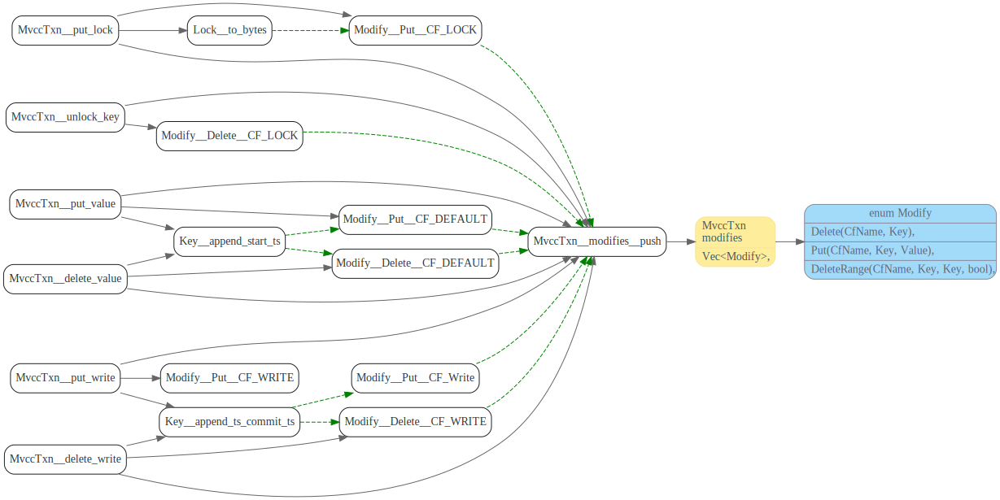
modifiers 后续处理
modifiers会转换为WriteData, 然后放到WriteResult中，由Schedule::process_write负责将WriteResult异步
保存起来。
WriteResult 保存

MvccReader
在执行txn事务cmd时，由MvccReader的load_lock, load_data和seek_write 负责读取相应数据。
seek_write
主要的方法为seek_write, 如果事务T(假设它ts为start_ts, 要读key的数据，首先要seek_write,
找到距离start_ts 最近的commit record。
然后使用它的Write.start_ts 去Data column中读取数据，或者对于short value, TiKV做了
一个优化，short_value直接保存在了Write中，直接返回Write.short_value就行了. 省去了一次读数据。
MvccReader::seek_write和MvccReader::load_data的实现，体现了Percolator的思想，即使用Write column 来
控制事务所写数据的可见性，以及start_ts和commit_ts的作用。
2pc
数据流程
TiDB中乐观事务提交流程如下(摘自TiDB 新特性漫谈：悲观事务)

- 首先Begin 操作会去TSO服务获取一个timestamp，作为事务的
startTS，同时startTs也是事务的唯一标识。 - DML阶段先KVTxn将写(Set, Delete)操作保存在
MemDB中。 - 2PC提交阶段在
KVTxn::Commit时创建twoPhaseCommitter, 并调用它的initKeysAndMutations遍历MemDB, 初始化memBufferMutations. - 在
twoPhaseCommitter::execute中，首先对memBufferMutations先按照region做分组，然后每个分组内，按照size limit分批。 - 每批mutations，调用对应的action的
handleSignleBatch，发送相应命令到TiKV.
Begin Transaction
每个client connection 对应着一个session, 事务相关数据的放在了session中， 它包含了对kv.Storage和Txn接口的引用。
kv.Storage接口定义了Begin/BeginWithOption接口，用来创建开始一个事务，它
主要实现者为KVStore。
kv.Transaction定义了事务的接口，txn可以commit/rollback.
它主要实现者为KVTxn。
每个KVTxn有个对MemDB的引用，每个事务的set/delete等修改会先存放到MemDB中。

kv.Storage的Begin/BeginWithOption 调用图如下：如果startTS为nil, 则会去TOS(timestamp oracle service)也就是 PD服务获取一个时间戳，作为事务的startTS，同时也是事务的唯一标识。

数据DML: 先保存到txn的MemDB
table row的增删改，最终会调用Table的AddRecord, RemoveRecord, UpdateRecord接口来更新数据。

而Table的这些接口，会将改动保存在Txn.KVUnionStore.MemDB中。
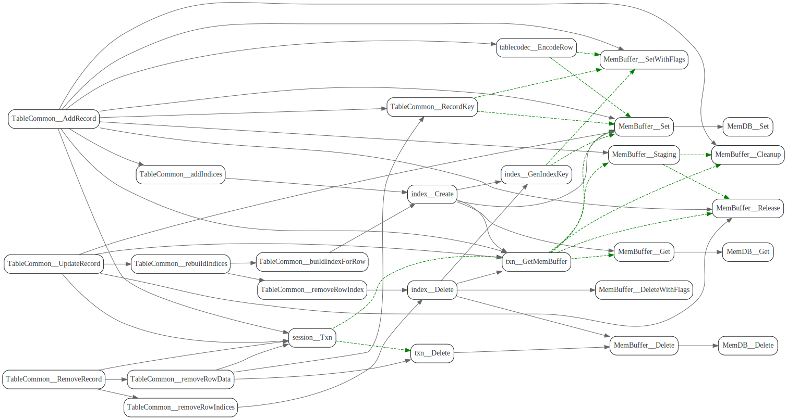
twoPhaseCommitter
像pecolator论文中描述的协议一样，两阶段提交步骤如下：
- 先Prewrite获取Lock, TiDB中可以并发的发起Prewrite请求.
- 去TSO 服务获取commit ts, 保证获取的
commit_ts比之前的事务的start_ts都大。 - commit primary key, 提交完primary key后，就可以返回给client，事务提交成功了。
- 其它剩下的keys由go routine在后台异步提交。
下图摘自[Async Commit 原理介绍][async-commit]
TiDB中会先根据region对MemDB中的keys做分组，然后每个分组内做分批，最后一批一批的向TiKV发请求。
mutations
上面保存在txn的MemDB中的修改，在txn commit时，会被转变为twoPhaseCommitter::mutations，在两阶段提交的
Prewrite/Commit阶段会提交这些mutations.

doActionOnMutations
// doActionOnMutations groups keys into primary batch and secondary batches, if primary batch exists in the key,
// it does action on primary batch first, then on secondary batches. If action is commit, secondary batches
// is done in background goroutine.
先调用groupMutations, 将mutations按照region分组，然后doActionOnGroupMutations对每个group分别做处理。
groupMutations: 按照region分组
先对mutations按照region分组，如果某个region的mutations 太多。 则会先发送CmdSplitRegion命令给TiKV, TiKV对那个region先做个split, 然后再开始提交， 这样避免对单个region too much write workload, 避免了不必要的重试。

doActionOnGroupMutations: 分批
doActionOnGroupMutations 会对每个group的mutations 做进一步的分批处理。 对于actionCommit做了特殊处理，如果是NormalCommit, primay Batch要先提交， 然后其他的batch可以新起一个go routine在后台异步提交。
关键代码如下：
func (c *twoPhaseCommitter) doActionOnGroupMutations(bo *Backoffer, action twoPhaseCommitAction, groups []groupedMutations) error {
// 1.每个分组内的再分批
for _, group := range groups {
batchBuilder.appendBatchMutationsBySize(group.region, group.mutations, sizeFunc, txnCommitBatchSize)
}
//2.commit先同步的提交primary key所在的batch
if firstIsPrimary &&
((actionIsCommit && !c.isAsyncCommit()) || actionIsCleanup || actionIsPessimiticLock) {
// primary should be committed(not async commit)/cleanup/pessimistically locked first
err = c.doActionOnBatches(bo, action, batchBuilder.primaryBatch())
//...
batchBuilder.forgetPrimary()
}
//...
//3. 其它的key由go routine后台异步的提交
// Already spawned a goroutine for async commit transaction.
if actionIsCommit && !actionCommit.retry && !c.isAsyncCommit() {
//..
go func() {
//其它的action异步提交
e := c.doActionOnBatches(secondaryBo, action, batchBuilder.allBatches())
}
}else {
err = c.doActionOnBatches(bo, action, batchBuilder.allBatches())
}
//...
doActionOnBatches: 并发的处理batches
batchExecutor::process 每个batch会启动一个go routine来并发的处理,
并通过channel等待batch的处理结果。当所有batch处理完了，再返回给调用者。
其中会使用令牌做并发控制, 启动goroutine前先去获取token, goroutine运行 完毕，归还token。

actionPrewrite
发送prewrite命令到TiKV, 如果prewrite阶段，遇到了lock error， 则尝试Resole lock， 然后重试；如果遇到了regionError， 则需要重新 调用doActionONMutations,重新分组，重新尝试。
如果没有keyError，并且Batch是primary. 则启动一个tllManager，给txn的 primary lock续命，ttlManager会定期的向TiKV发送txnHeartbeat, 更新primary lock的ttl。

TiKV端处理Prewrite
TiKV端PreWriteKind，分为悲观事务和乐观事务。
对单个key Muation的prewrite操作。

constraint check
should not write
PrewriteMutation
TiKV端处理TxnHeartBeat
直接更新primary key lock的ttl.
#![allow(unused)] fn main() { //txn_heart_beat.rs impl<S: Snapshot, L: LockManager> WriteCommand<S, L> for TxnHeartBeat { fn process_write(self, snapshot: S, context: WriteContext<'_, L>) -> Result<WriteResult> { //... let lock = match reader.load_lock(&self.primary_key)? { Some(mut lock) if lock.ts == self.start_ts => { if lock.ttl < self.advise_ttl { lock.ttl = self.advise_ttl; txn.put_lock(self.primary_key.clone(), &lock); } lock } }
actionCommit
TiDB向Tikv发起commit请求，CommitRequest中的Keys即为要提交的key.
TiKV端处理commit
TiKV会遍历Commit请求中的每个key, 尝试去commit key, 然后调用ReleasedLocks唤醒等待这些key的事务。
单个key的commit过程如下, 分两种case:
lock match: lock仍然被txn 所持有，则继续尝试提交, 提交如果commit_ts < lock.min_commit_ts则报错，ErrorInner::CommitTsExpired，如果lock.rollback_ts中有和commit_ts相同的ts, 则需要将 要写入的write.set_overlapped_rollback。最后unlock key, 提交write。lock mismatch: lock为None或者Lock已经被其他事务所持有，则需要get_txn_commit_record读取commit record来判断事务的commit状态.

参考文献
Draft
事务startTS
在执行start transaction时，会去TimmStamp Oracle服务获取时间戳，作为事务的startTS, startTs会保存在TransactionContext中 startTS 是单调递增的，这样startT标识事务, 也可以用来表示事务之间的先后关系。

在TiDB中，对应流程如下:

AsyncCommit
AsyncCommit 等所有的key prewrite之后，就算成功了，TiDB即可返回告诉client事务提交成功了。 primary key 可以异步的commit.其流程如下(摘自Async Commit 原理介绍)
好处是在prewrite结束后，就可以返回结果给client, commit由tidb在后台异步提交，降低了事务的延迟。
需要解决的主要有两个：
- 从如何确定所有 keys 已被prewrite，需要根据primary key找到所有的secondary keys.
- 如果确定
commit_ts
对于问题1，primarylock中增加了pub secondaries: Vec<Vec<u8>>字段。
lock 包含了txn涉及到的所有的 secondaries keys
#![allow(unused)] fn main() { #[derive(PartialEq, Clone)] pub struct Lock { pub lock_type: LockType, pub primary: Vec<u8>, pub ts: TimeStamp, pub ttl: u64, pub short_value: Option<Value>, // If for_update_ts != 0, this lock belongs to a pessimistic transaction pub for_update_ts: TimeStamp, pub txn_size: u64, pub min_commit_ts: TimeStamp, pub use_async_commit: bool, // Only valid when `use_async_commit` is true, and the lock is primary. Do not set // `secondaries` for secondaries. pub secondaries: Vec<Vec<u8>>, // In some rare cases, a protected rollback may happen when there's already another // transaction's lock on the key. In this case, if the other transaction uses calculated // timestamp as commit_ts, the protected rollback record may be overwritten. Checking Write CF // while committing is relatively expensive. So the solution is putting the ts of the rollback // to the lock. pub rollback_ts: Vec<TimeStamp>, } }
问题2，则使用每个key的min_commit_ts和TiKV的max_ts来确定事务的commit_ts TiDB的每次读都会更新Tikv的max_ts。
对于 Async Commit 事务的每一个 key，prewrite 时会计算并在 TiKV 记录这个 key 的 Min Commit TS，事务所有 keys 的 Min Commit TS 的最大值即为这个事务的 Commit TS。
checkAsyncCommit
先关配置在Config.TiKVClient.AsyncCommit中, checkAsyncCommit 会遍历mutations
计算事务的total key size是否超过了限制。 最后结果保存在atomic变量useAsyncCommit中。
相关配置项如下：
#![allow(unused)] fn main() { type AsyncCommit struct { // Use async commit only if the number of keys does not exceed KeysLimit. KeysLimit uint `toml:"keys-limit" json:"keys-limit"` // Use async commit only if the total size of keys does not exceed TotalKeySizeLimit. TotalKeySizeLimit uint64 `toml:"total-key-size-limit" json:"total-key-size-limit"` // The duration within which is safe for async commit or 1PC to commit with an old schema. // The following two fields should NOT be modified in most cases. If both async commit // and 1PC are disabled in the whole cluster, they can be set to zero to avoid waiting in DDLs. SafeWindow time.Duration `toml:"safe-window" json:"safe-window"` // The duration in addition to SafeWindow to make DDL safe. AllowedClockDrift time.Duration `toml:"allowed-clock-drift" json:"allowed-clock-drift"` } }
isAsyncCommit caller
对isAsyncCommit的调用, 最主要的有两个地方
- prewrite阶段，是buildPrewriteRequest时，需要遍历事务的 mutations将所有的secondaries lock keys 放到request中
- commit阶段，commit时，启动一个go routine 异步提交，这样prewrite成功后，就可以向client返回事务结果， 不必向正常commit时等到primary key，提交成功才返回结果给client.
minCommitTS
对于 Async Commit 事务的每一个 key，prewrite 时会计算并在 TiKV 记录这个 key 的 Min Commit TS，事务所有 keys 的 Min Commit TS 的最大值即为这个事务的 Commit TS。
client端更新min commit ts
minCommitTS更新逻辑如下，twoPhaseCommitter有个成员变量minCommitTS，记录事务的最小CommitTS.
每次prewrite request会带上该minCommitTS, 并且如果prewrite resp返回的minCommitTS比自己的大，
则更新twoPhaseCommitter的minCOmmitTS
这样能保证所有prewrite 请求处理完后，twoPhaseCommitter的minCommitTS是所有key lock的minCommitTS
中最大的。
在后面resolve async commit lock中，也要遍历所有的lock的minCommitTS, 来确定最后的minCommitTS.
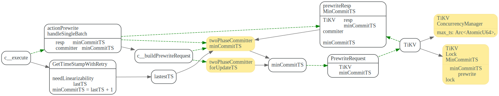
- PreWrite前从TSO获取ts, 更新成员变量
minCommitTS
func (c *twoPhaseCommitter) execute(ctx context.Context) (err error) {
//...
if commitTSMayBeCalculated && c.needLinearizability() {
latestTS, err := c.store.oracle.GetTimestamp(ctx, &oracle.Option{TxnScope: oracle.GlobalTxnScope})
//...
// Plus 1 to avoid producing the same commit TS with previously committed transactions
c.minCommitTS = latestTS + 1
}
//...
}
- TiDB发送给TiKV的prewrite请求中带上minCommitTS，它收到c.minCommitTS, c.StartTS, c.forUpdateTS影响。
func (c *twoPhaseCommitter) buildPrewriteRequest(batch batchMutations, txnSize uint64) *tikvrpc.Request {
//...
c.mu.Lock()
minCommitTS := c.minCommitTS
c.mu.Unlock()
if c.forUpdateTS > 0 && c.forUpdateTS >= minCommitTS {
minCommitTS = c.forUpdateTS + 1
} else if c.startTS >= minCommitTS {
minCommitTS = c.startTS + 1
}
//...
- TiKV端根据maxTS,请求中的minCommitTS, forUpdateTs计算出最终MinCommitTS，并保存在
lock.min_commit_ts字段中， 然后在prewriteResp.minCommitTS给TiDB client, TiDB client更新twoPhaseCommitter的minCommitTs.
func (action actionPrewrite) handleSingleBatch(c *twoPhaseCommitter, bo *Backoffer, batch batchMutations) error {
//...
if c.isAsyncCommit() {
if prewriteResp.MinCommitTs == 0 {
// fallback到normal commit
}else {
c.mu.Lock()
if prewriteResp.MinCommitTs > c.minCommitTS {
c.minCommitTS = prewriteResp.MinCommitTs
}
c.mu.Unlock()
}
TiKV端计算min commit ts
每次TiDB的prewrite请求，TiKV都会返回一个minCommitTS, minCommitTS流程如下
关键函数在async_commit_timestamps， 这个地方为什么要lock_key ?
#![allow(unused)] fn main() { // The final_min_commit_ts will be calculated if either async commit or 1PC is enabled. // It's allowed to enable 1PC without enabling async commit. fn async_commit_timestamps(/*...*/) -> Result<TimeStamp> { // This operation should not block because the latch makes sure only one thread // is operating on this key. let key_guard = CONCURRENCY_MANAGER_LOCK_DURATION_HISTOGRAM.observe_closure_duration(|| { ::futures_executor::block_on(txn.concurrency_manager.lock_key(key)) }); let final_min_commit_ts = key_guard.with_lock(|l| { let max_ts = txn.concurrency_manager.max_ts(); fail_point!("before-set-lock-in-memory"); let min_commit_ts = cmp::max(cmp::max(max_ts, start_ts), for_update_ts).next(); let min_commit_ts = cmp::max(lock.min_commit_ts, min_commit_ts); lock.min_commit_ts = min_commit_ts; *l = Some(lock.clone()); Ok(min_commit_ts) } ... } }
TiKV MaxTS
TiDB 的每一次快照读都会更新 TiKV 上的 Max TS。Prewrite 时，Min Commit TS 会被要求至少比当前的 Max TS 大，也就是比所有先前的快照读的时间戳大，所以可以取 Max TS + 1 作为 Min Commit TS
每次读操作，都会更新concurrency_manager.max_ts
值得注意的是replica read 也会更新max_ts。replica reader 在read之前会发readIndex消息给leader
因果一致性
循序性要求逻辑上发生的顺序不能违反物理上的先后顺序。具体地说，有两个事务 T1 和 T2，如果在 T1 提交后，T2 才开始提交，那么逻辑上 T1 的提交就应该发生在 T2 之前，也就是说 T1 的 Commit TS 应该小于 T2 的 Commit TS。 3
为了保证这个特性，TiDB 会在 prewrite 之前向 PD TSO 获取一个时间戳作为 Min Commit TS 的最小约束。由于前面实时性的保证，T2 在 prewrite 前获取的这个时间戳必定大于等于 T1 的 Commit TS，而这个时间戳也不会用于更新 Max TS，所以也不可能发生等于的情况。综上我们可以保证 T2 的 Commit TS 大于 T1 的 Commit TS，即满足了循序性的要求。
OnePC(一阶段提交)

只涉及一个region，且一个batch就能完成的事务，不使用分布式提交协议，只使用一阶段完成事务， 和AsyncCommit相比， 省掉了后面的commit步骤。

对于batchCount > 1的事务不会使用OnePC.
func (c *twoPhaseCommitter) checkOnePCFallBack(action twoPhaseCommitAction, batchCount int) {
if _, ok := action.(actionPrewrite); ok {
if batchCount > 1 {
c.setOnePC(false)
}
}
}
Tikv端 处理OnePC
在TiKV端，OnePC 直接向Write Column 写write record, 提交事务， 省掉了写lock, 以及后续commit时候cleanup lock这些操作了。
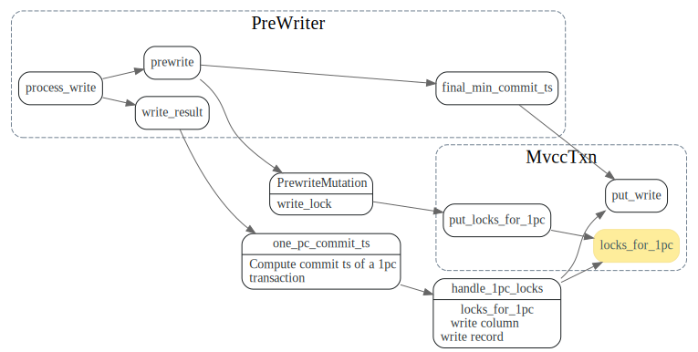
悲观事务
数据流程
悲观事务将上锁时机从prewrite阶段提前到进行DML阶段,先acquire pessimistic lock， 此时并不会写value. 只是写入一个类型为Pessimistic 的lock 占位。
在2pc commit阶段，先将lock类型改写为乐观锁，然后再commit
上图中描述的代码调用流程如下:
LockKeys
悲观锁不包含数据，只有锁，只用于防止其他事务修改相同的 Key，不会阻塞读，但 Prewrite 后会阻塞读（和 Percolator 相同，但有了大事务支持后将不会阻塞 (摘自[TiDB in Action, 6.2 悲观事务][3])
调用流程类似于上面的，也是先对mutation按照region分组，然后每个组内分批。
Client: AcquirePessimisticLock
这个地方有LockWaitTime, 如果有key 冲突，TiKV会等待一段时间, 或者 等key 的lock被释放了，才会返回给TiDB key writeConflict或者deadlock
LockKeys中对于ErrDeadlock特殊处理，等待已经lock的key都被rollback之后并且sleep 5ms, 才会向上返回。
悲观事务对于ErrDeadlock和ErrWriteConflict重试，重新创建executor, 重试statementContext 状态，更新ForUpdateTS。
做selectForUpdate 做了特殊处理，没看明白没什么要这么干。
TiKV: AcquirePessimisticLock
TiKV端获取Pessimistic处理方法(摘自[TiDB 悲观锁实现原理][1])
- 检查 TiKV 中锁情况，如果发现有锁
- 不是当前同一事务的锁，返回 KeyIsLocked Error
- 锁的类型不是悲观锁，返回锁类型不匹配（意味该请求已经超时）
- 如果发现 TiKV 里锁的 for_update_ts 小于当前请求的 for_update_ts(同一个事务重复更新)， 使用当前请求的 for_update_ts 更新该锁
- 其他情况，为重复请求，直接返回成功
- 检查是否存在更新的写入版本，如果有写入记录
- 若已提交的 commit_ts 比当前的 for_update_ts 更新，说明存在冲突，返回 WriteConflict Error
- 如果已提交的数据是当前事务的 Rollback 记录，返回 PessimisticLockRollbacked 错误
- 若已提交的 commit_ts 比当前事务的 start_ts 更新，说明在当前事务 begin 后有其他事务提交过
- 检查历史版本，如果发现当前请求的事务有没有被 Rollback 过，返回 PessimisticLockRollbacked 错误
Client: PessimisticLockRollback
TiDB从 事务的MemBuffer中获取所有被枷锁的key，向tikv发送rollback key lock请求。
TiKV: PessimisticLockRollback
forUpdateTS
ForUpdateTS 存放在SessionVar的TransactionContext中。 然后放到twoPhaseCommitter中，最后在actionIsPessimiticLock 向TiK发送请求时，放到PessimisticRequest请求参数中,发给TiKV.

在buildDelete, buildInsert, buildUpdate, buildSelectLock 时会去TSO服务获取最新的ts作为ForUpdateTS.
// UpdateForUpdateTS updates the ForUpdateTS, if newForUpdateTS is 0, it obtain a new TS from PD.
func UpdateForUpdateTS(seCtx sessionctx.Context, newForUpdateTS uint64) error {
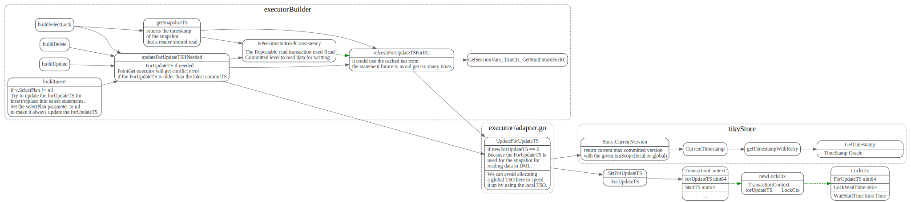
TiDB加锁规则
TiDB中加锁规则如下(摘自[TiDB 悲观锁实现原理][1])
- 插入（ Insert）
- 如果存在唯一索引，对应唯一索引所在 Key 加锁
- 如果表的主键不是自增 ID，跟索引一样处理，加锁。
- 删除（Delete）
- RowID 加锁
- 更新 (update)
- 对旧数据的 RowID 加锁
- 如果用户更新了 RowID, 加锁新的 RowID
- 对更新后数据的唯一索引都加锁
TODO: 没找到insert/delete/update这块的lock代码

Resolve Lock
- 在事务(假定为t1) 在Prewrite阶段执行时，如果遇到Lock冲突，首先会先根据Lock.primaryKey 获取持有该lock事务（假定为t2) > 状态，如果primary key的lock已过期， 则尝试清理t2遗留的lock(cleanup或者commit).
- Asncy commit 需要check所有的secondaris keys判断事务(t2)的
commit_ts- WriteType::Rollback类型的Write,写入的key ts为事务的
start_ts,可能和其他事务的commit_ts相等， 因此在commit或者rollback_lock时，需要特殊处理。
Prewrite 阶段处理lock冲突
在TiDB prewrite阶段，如果遇到lock，会尝试resolveLocks，resolveLocks会尝试获取 持有lock的事务的状态，然后去resolve lock. 如果lock 没有被resolve, 还被其他 事务所持有，则返回要sleep的时间。prewite BackoffWithMaxSleep后，重新尝试去resolve locks。
TiDB resolve lock 流程如下
// ResolveLocks tries to resolve Locks. The resolving process is in 3 steps:
// 1) Use the `lockTTL` to pick up all expired locks. Only locks that are too
// old are considered orphan locks and will be handled later. If all locks
// are expired then all locks will be resolved so the returned `ok` will be
// true, otherwise caller should sleep a while before retry.
// 2) For each lock, query the primary key to get txn(which left the lock)'s
// commit status.
// 3) Send `ResolveLock` cmd to the lock's region to resolve all locks belong to
// the same transaction.

对于primary key已经过期的事务，则尝试去resolve locks，根据事务类型有不同的resolve 方法
resolveLock: resolve正常提交的乐观事务lockresolveLocksAsync: 处理async commit的乐观事务txn locks，需要checkAllSecondaris key的min_commit_ts来计算最终的commit_ts.resolvePessimisticLock: resolve 悲观事务lock
获取事务状态
client getTxnStatusFromLock
resolveLocks 首先会根据lock.primarykey, 调用LockResolver::getTxnStatus去获取持有这个lock的事务的状态。

TiKV CheckTxnStatus
事务(假定为t2)，prewrite阶段遇到Lock(假定为事务t1的lock)冲突时，会发CheckTxnStatus GRPC请求到TiKV 该Cmd主要功能如下：
#![allow(unused)] fn main() { /// checks whether a transaction has expired its primary lock's TTL, rollback the /// transaction if expired, or update the transaction's min_commit_ts according to the metadata /// in the primary lock. /// When transaction T1 meets T2's lock, it may invoke this on T2's primary key. In this /// situation, `self.start_ts` is T2's `start_ts`, `caller_start_ts` is T1's `start_ts`, and /// the `current_ts` is literally the timestamp when this function is invoked; it may not be /// accurate. }
CheckTxnStatus 根据lock.primary_key检查事务t1的状态，在检查过程中，如果t1的lock过期，则可能会rollback t1。
主要会调用check_txn_status_lock_exists和check_txn_status_missing_lock来处理lock的几种可能情况:
-
check_txn_status_lock_exists： 如果Lock存在且t1还持有该lock， 如果lock没过期，更新lock的min_commit_ts, 返回TxnStatus::Uncommitted状态；如果lock已过期，会rollback_lock, 并返回TxnStatus::Expire状态. -
check_txn_status_missing_lock：lock不存在或者lock.ts已经不是t1了，t1可能已经commited了，也可能被rollback了。 需要调用get_txn_commit_record，扫描从max_ts到t1.start_ts之间key的write record来判断t1状态。
调用流程图如下，其中黄色的是GRPC请求中带上来的数据。
primary_keylock的primary keycaller_start_ts如果lock没被提交或者rollback，会用它来更新lock的min_commit_tscurrent_ts调用getTxnStat接口时，传入的当前ts.

rollback_lock
t1的primary lock过期时，rollback_lock调用流程如下:
如果locktype 为put, 并且value没有保存在Lock的short_value字段中，则需要删掉之前写入的value.
主要是提交了Rollback类型的Write, 注意此处的key为 key t1.start_ts, 而不是key t1.commit_ts
这是和pecolator论文中不一样的地方，可能会出现t1.start_ts和其他事务commit_ts一样的情况。
get_txn_commit_record
事务t2遇到持有lock时t1时，调用get_txn_commit_record 扫描从max_ts到t2.start_ts的所有write record，
获取事务t1的状态。
TxnCommitRecord::SingleRecord
找到了write.start_ts = t1.ts1的WriteRecord，可以根据
该record的WriteType来判断事务状态，如果为Rollback则事务状态为rollback. 否则就是Committed。
TxnCommitRecord::OverlappedRollback
找到了t1.start_ts == t3.commit_ts，t3的write record，并且t3 write record中
has_overlapped_write为true，这时候可以确定事务的状态为Rollback
事务t1.start_ts和事务t3.commit_ts相同，并且write columns中，t3的write已经提交了。如果
直接写入t1的rollback，会覆盖掉t3之前的提交。为了避免该情况，只用将t3 write record中的
has_overlapped_rollback 设置为true即可。
TxnCommitRecord::None(Some(write))
找到了t1.start_ts == t3.commit_ts t3的write record，并且
t3 WriteRecord的has_overlapped_write 为false，后续rollback_lock和check_txn_status_missing_lock
会将该字段设置为true.
t1先写入write rollback, 然后t3 commit时，会覆盖掉t1的write rollback.

TxnCommitRecord::None(None)
如果状态为TxnCommitRecord::None(None),并且Lock 现在被t4所持有，则将t1.start_ts
加入到Lock.rollback_ts数组中，这样在t4被commit时，如果t4.commit_ts == t1.start_ts
会将t4的write record的has_overlapped_write设置为true.
从max_ts到t2.start_ts没找到相关的write record.
check_txn_status_missing_lock
check_txn_status_missing_lock会调用get_txn_commit_record计算t1的commit状态，

另外一种情形是，t1.start_ts == t3.commit_ts, 并且t1先被rollback了, t3 commit时， 会覆盖掉t1的rollback write record，这种check_txn_status_missing_lock 更新t3 commit 的has_overalpped rollback设为为true.
上图中绿色的就是最后返回的txn status, 对应的enum如下,在TiDB中对应于返回字段中的Action.
#![allow(unused)] fn main() { /// Represents the status of a transaction. #[derive(PartialEq, Debug)] pub enum TxnStatus { /// The txn was already rolled back before. RolledBack, /// The txn is just rolled back due to expiration. TtlExpire, /// The txn is just rolled back due to lock not exist. LockNotExist, /// The txn haven't yet been committed. Uncommitted { lock: Lock, min_commit_ts_pushed: bool, }, /// The txn was committed. Committed { commit_ts: TimeStamp }, /// The primary key is pessimistically rolled back. PessimisticRollBack, /// The txn primary key is not found and nothing is done. LockNotExistDoNothing, } }
type Action int32
const (
Action_NoAction Action = 0
Action_TTLExpireRollback Action = 1
Action_LockNotExistRollback Action = 2
Action_MinCommitTSPushed Action = 3
Action_TTLExpirePessimisticRollback Action = 4
Action_LockNotExistDoNothing Action = 5
)
清理expired lock
resolveLock
TiDB 获取根据Lock.primary key获取完txn状态后， 开始resolve secondary key的lock.向TiKV 发起resolve Lock request.

TiKV 执行CmdResolveLock
TiKV收到ResolveLock Request后，有三种case
commit_ts > 0, 并且txn还持有该lock，则commitcommit_ts == 0, 并且txn还持有该lock, 则rollback.- 如果lock为None, 或者lock.ts已经发生改变了，则
check_txn_status_missing_lock
其中rollback和 check_txn_status_missing_lock 逻辑和上面 CheckTxnStatus中的一致。
TiKV commit 处理流程:
resolveLocksAsync
TiDB 中首先调用checkAllSecondaries来获取txn的Status, 然后对所有的secondaries keys按照region分组，并且每个分组启动一个go routine, 并发的发送CmdResolveLock 请求给TiKV

client checkAllSecondaries

TiKV CmdCheckSecondaryLocks
#![allow(unused)] fn main() { /// Check secondary locks of an async commit transaction. /// /// If all prewritten locks exist, the lock information is returned. /// Otherwise, it returns the commit timestamp of the transaction. /// /// If the lock does not exist or is a pessimistic lock, to prevent the /// status being changed, a rollback may be written. }
#![allow(unused)] fn main() { #[derive(Debug, PartialEq)] enum SecondaryLockStatus { Locked(Lock), Committed(TimeStamp), RolledBack, } }
lock match
如果txn还持有该lock，对于乐观事务，会返回lock信息，而悲观事务，则会unlock key? 向write column 写入rollback信息。(为什么？）

lock mismatch
如果lock已经被其他事务所持有。或者Lock已经被resolve.
resolvePessimisticLock
PessimisticLock事务的悲观锁，多了一个forUpdateTs, 而且是直接清理lock，不像乐观锁那样，要写入rollback 类型的Write， 这个是为什么呀？
TODO
研究下这个rollback must be protected。 // The rollback must be protected, see more on
OverlappedRollback 和overlapped write代表什么意思？
// issue #7364
Assume that we have three clients {c1, c2, c3} and two keys {k1, k2}:
- Pessimistic client c1 acquires a pessimistic lock on k1(primary), k2. But the command for k1 is lost at this point.
- Optimistic client c2 requires to clean up the lock on k2
- k1 is rollbacked and a write record ("rollback", c1_start_ts, not_protected) is written into k1 (not_protected because the lock on k1 is missing), and a cleanup(primary=k1, ts=c1_start_ts)(*1) is sent but lost at this point.
- Client c3 prewrites k1
- Client c2 requires to clean up the lock on k1
- k1 is rollbacked and the rollback write record is collapsed to ("rollback", c3_start_ts, protected/not_protected)
- Client c1 retries to lock on k1
- k1 is locked by c1
- Client c1 prewrites k1, k2
- k1, k2 are prewrited by c1, and c1 received the prewrite succeed response
- The lost cleanup command (*1) in step 3 is received by k2, therefore k2 is rollbacked
- Client c1 commit k1
- k1 is committed, while k2 is rollbacked
Then atomic guarantee is broken.
get_txn_commit_record 这方法需要仔细研究下。
rollback, make_rollback, collapse_prev_rollback 这几个关系是啥？
lock rollback ts
commit_ts和start_ts 相等的时候会出现的情况。
为什么会出现相等呢？
写WriteType::Rollback时候，用的是start_ts, 而key被commit时候，write record的
key为key commit_ts, 当start_ts == commit_ts时，事务的rollback可能被
commit_ts所覆盖掉。
按照pecolator论文，commit时候，commit_ts一定比之前所有的start_ts大呀，为什么还会出现 被覆盖掉的情况呢？
是不是和Pingcap引入了并发的prewrite有关呢？


Scheduler
schedule_txn_cmd
从service/kv.rs grpc接口handler处理函数中，首先会将 req::into会将request 转换成 对应的cmd, 然后创建一个oneshot channel, 并await oneshot channel返回的future.
然后由Scheduler::sched_txn_command调度执行该cmd, cmd执行完毕，或者
遇到error后，会调用callback, callback触发onshot channel,
然后grpc handler 从await future中获取的resp 返回给client.
TaskSlots
Scheduler command中，会将cmd 包装为一个TaskContext TaskContext中则包含了Task, cb(向上的回到), ProcessResult cmd的执行结果.
对于每个cmd会分配一个唯一的cid, task_slot则用于从cid获取cmd 对应的taskContext.
task slots 会先找到cid 对应的的slot, 之后上mutex lock，获取slot中的hashmap， 做插入查找操作。这样的好处是检查mutex lock，增加了并发度。
run_cmd
在run cmd之前，会尝试获取cmd的所有的key的latches, 如果成功了，就执行cmd 否则就放入latches等待队列中。latches和task slot一样，也对key hash做了slot.
在cmd执行结束或者遇到error了，会release lock，释放掉command获取的key laches.
然后唤醒等待key latch的command id.
release lock
释放cid拥有的latches lock, 唤醒等待的task, 这些被唤醒的task 会尝试去获取lock 如果task的涉及的所有key 的latches都拿到了， 就去执行task.
Scheduler execute
Scheduler执行cmd
Wait Lock
Lock冲突事后，TiKV会将lock, StorageCallback, ProcessResult等打包成waiter. 放入等待队列中，等lock释放了，或者timeout了，再调用callback(ProcessResult) 回调通知client ProcessResult. 相当于延迟等待一段时间，避免client 无效的重试
lock和cb还有ProcessResult会被打包成waiter, cb调用会触发向client返回结果吗？
#![allow(unused)] fn main() { /// If a pessimistic transaction meets a lock, it will wait for the lock /// released in `WaiterManager`. /// /// `Waiter` contains the context of the pessimistic transaction. Each `Waiter` /// has a timeout. Transaction will be notified when the lock is released /// or the corresponding waiter times out. pub(crate) struct Waiter { pub(crate) start_ts: TimeStamp, pub(crate) cb: StorageCallback, /// The result of `Command::AcquirePessimisticLock`. /// /// It contains a `KeyIsLocked` error at the beginning. It will be changed /// to `WriteConflict` error if the lock is released or `Deadlock` error if /// it causes deadlock. pub(crate) pr: ProcessResult, pub(crate) lock: Lock, delay: Delay, _lifetime_timer: HistogramTimer, } }
加入等待队列
将请求放入等待队列中，直到lock被cleanup了，调用StorageCallback, cb中返回WriteConflict错误给 client 让client重试。
在放入前还会将wait lock信息放入dead lock scheduler, 检测死锁.
WaitManager 从channel中去取task, 放入lock的等待队列中。 并加个timeout, 等待超时了会调用cb。并从dead lock scheduler中去掉wait lock。
WakeUp
lock被释放后, LockaManager::wake_up 唤醒等待该lock的waiter.
TODO: 需要对lock.hash做一些说明。 TODO: task的回调机制需要整理下。
LockManager::Wakeup
WaiterManager::handle_wake_up
死锁检测
在事务被加到lock的等待队列之前，会做一发一个rpc请求, 到deadlock detector服务做deadlock检测。
TiKV 会动态选举出一个 TiKV node 负责死锁检测。
(下图摘自[TiDB 新特性漫谈：悲观事务][6]):
死锁检测逻辑如下(摘自[TiDB 悲观锁实现原理][1])
- 维护全局的 wait-for-graph，该图保证无环。
- 每个请求会尝试在图中加一条
txn -> wait_for_txn的 edge，若新加的导致有环则发生了死锁。 - 因为需要发 RPC，所以死锁时失败的事务无法确定。
deadlock leader本地detect
对应代码调用流程如下：
其中比较关键的是wait_for_map ，保存了txn 之间的依赖关系DAG图。
#![allow(unused)] fn main() { /// Used to detect the deadlock of wait-for-lock in the cluster. pub struct DetectTable { /// Keeps the DAG of wait-for-lock. Every edge from `txn_ts` to `lock_ts` has a survival time -- `ttl`. /// When checking the deadlock, if the ttl has elpased, the corresponding edge will be removed. /// `last_detect_time` is the start time of the edge. `Detect` requests will refresh it. // txn_ts => (lock_ts => Locks) wait_for_map: HashMap<TimeStamp, HashMap<TimeStamp, Locks>>, /// The ttl of every edge. ttl: Duration, /// The time of last `active_expire`. last_active_expire: Instant, now: Instant, } }
转发请求给Deadlock leader
如果当前Deadlock detector不是leader,则会把请求转发给Deadlock leader, 转发流程如下:
首先Deadlock client和leader 维持一个grpc stream, detect请求会发到一个channel中 然后由send_task异步的发送DeadlockRequest给Deadlock leader.
recv_task则从stream接口中去获取resp, 然后调用回调函数，最后调用waiter_manager的 deadlock函数来通知等待的事务死锁了。
Deadlock Service
Deadlock leader会在handle_detect_rpc中处理deadlock detect请求，流程和leader处理本地的一样。
Deadlock Service的高可用
Detector在handle_detect,如果leader client为none,
则尝试先去pd server获取LEADER_KEY所在的region(Leader Key为空串，
所以leader region为第一region.
然后解析出leader region leader的 store addr, 创建和deadlock detect leader的grpc detect接口的stream 连接
注册了使用Coprocessor的Observer, RoleChangeNotifier, 当leader region的信息发变动时, RoleChangeNotifier会收到回调 会将leader_client和leader_inf清空，下次handle_detect时会重新 请求leader信息。
问题: DetectTable的wait_for_map需要保证高可用吗？
DetectTable的wait_for_map这个信息在deadlock detect leader 变动时候，是怎么处理的？看代码是直接清空呀？这个之前的依赖关系丢掉了， 这样不会有问题吗？
分组提交
TiDB 提交事务时，会先将mutation按照key的region做分组， 然 每个分组会分批并发的提交。
doActionOnBatches 这个对primaryBatch的commit操作做了特殊处理。
groupMutations: 按照region分组
先对mutations做分组，如果某个region的mutations 太多。 则会先对那个region先做个split, 这样避免对单个region too much write workload.
doActionOnGroupMutations: 分批
doActionOnGroupMutations 会对每个group的mutations 做进一步的分批处理。 对于actionCommit做了特殊处理，如果是NormalCommit, primay Batch要先提交， 然后其他的batch可以新起一个go routine在后台异步提交。
batchExecutor: 并发的处理batches
batchExecutor::process 每个batch会启动一个go routine来并发的处理,
并通过channel等待batch的处理结果。当所有batch处理完了，再返回给调用者。
其中会使用令牌做并发控制, 启动goroutine前先去获取token, goroutine运行 完毕，归还token。
CommitterMutations
数据结构引用关系如下:
Scanner
Scanner 使用归并排序的思路扫描CF_LOCK, CF_WRITE来做遍历
PointGetter
假定事务t2,使用PointGetter::get读取user_key的value，t2的start_ts 保存在PointGetter::ts中。
get 一个user_key value过程如下：
#![allow(unused)] fn main() { pub fn get(&mut self, user_key: &Key) -> Result<Option<Value>> { }
-
如果IsolationLevel为SI(Snapshot Isolation), 则需要检查先
load_and_check_lock， 如果为RC(read commit), 则直接去load_data即可。 -
load_and_check_lock 会从
CF_LOCK中读取user_key的lock， 然后检查lock和t2的时间戳。 -
load_data从CF_WRITE中查找[0, t2.start_ts]之间最新事务(假设为t1)的Write, 其key为{user_key}{t1.commit_ts}, 如果write type为Rollback 或者Lock，就skip掉，接着查找下一个, 如果Write type 为delete，则直接返回None，如果是Put, 则从WriteRef中读取到事务t1的start_ts。 然后去读取数据。 -
从
CF_DEFAULT找到{user_key}{t1.start_ts}对应的value。TiKV 对short_value做了优化，直接把value写在CF_WRITE中了，避免了一次再从CF_DEFAULT读取数据的过程。
Scanner 主要struct
Scanner主要分为ForwardScanner 和BackwardKvScanner，它们公用信息保存在ScannerConfig中，它们使用Cursor来遍历CF_LOCK, CF_WRITE, CF_DEFAULT中的数据。
Cursor主要在底层RocksDB的iter基础上，包装了一些near_seek, seek, valid等函数，并会将一些统计信息
写入到CfStatistics中。
ScannerConfig 用于保存一些公用的信息，比如scan key的lower_bound和upper_bound, 另外它还负责使用CursorBuilder创建cursor.
Snapshot 则提供了Iterator供Cursor使用。
ForwardKvScanner在遇到lock/write时，使用Trait ScanPolicy来处理lock/write.
Trait Policy impl有:
- DeltaEntryPolicy
- LatestKvPolicy
- LatestEntryPolicy
Cursor
Cursor则在RocksSnapshot的ite基础上包装了一些seek, near_seek等功能。
并每次读取key,value, 都会在CfStatistics上加一些统计，
在iter上加了一个near_seek结合和scan_mode，每次Key,value 会加一些key, value的统计。
ForwardScanner
ForwardScanner 用于扫描range(对应ScannerConfig中的lower_bound和upper_bound)内所有key最新(commit_ts <=T.start_ts) value
最简单粗暴的做法是像PointGetter那样，一个个扫描，但问题是对于CF_WRITE中扫描到的每个user_key，都需要到CF_LOCK中seek 查找它的lock信息。
但这样效率太低了.
TiKV采用了类似于归并排序的思路，同时移动 write cursor和 lock cursor. 使用最小的作为current_user_key。
#![allow(unused)] fn main() { //current_user_key, user_key, has_write, has_lock // `current_user_key` is `min(user_key(write_cursor), lock_cursor)`, indicating // the encoded user key we are currently dealing with. It may not have a write, or // may not have a lock. It is not a slice to avoid data being invalidated after // cursor moving. // // `has_write` indicates whether `current_user_key` has at least one corresponding // `write`. If there is one, it is what current write cursor pointing to. The pointed // `write` must be the most recent (i.e. largest `commit_ts`) write of // `current_user_key`. // // `has_lock` indicates whether `current_user_key` has a corresponding `lock`. If // there is one, it is what current lock cursor pointing to. (Some(wk), Some(lk)) => { let write_user_key = Key::truncate_ts_for(wk)?; match write_user_key.cmp(lk) { Ordering::Less => { // Write cursor user key < lock cursor, it means the lock of the // current key that write cursor is pointing to does not exist. (write_user_key, true, false) } Ordering::Greater => { // Write cursor user key > lock cursor, it means we got a lock of a // key that does not have a write. In SI, we need to check if the // lock will cause conflict. (lk, false, true) } Ordering::Equal => { // Write cursor user key == lock cursor, it means the lock of the // current key that write cursor is pointing to *exists*. (lk, true, true) } } }
然后调用Trait ScanPolicy 的handle_lock, handle_write来处理遇到的lock, write
ScanPolicy 有以下三种impl
- LatestKvPolicy: outputs the latest key value pairs.
- LatestEntryPolicy: only outputs records whose commit_ts is greater than
after_ts. It also supports outputting delete records ifoutput_deleteis set totrue. - DeltaEntryPolicy: The ScanPolicy for outputting
TxnEntryfor every locks or commits in specified ts range. TheForwardScannerwith this policy scans all entries whosecommit_tss (or locks'start_tss) in range (from_ts,cfg.ts].
LatestKvPolicy
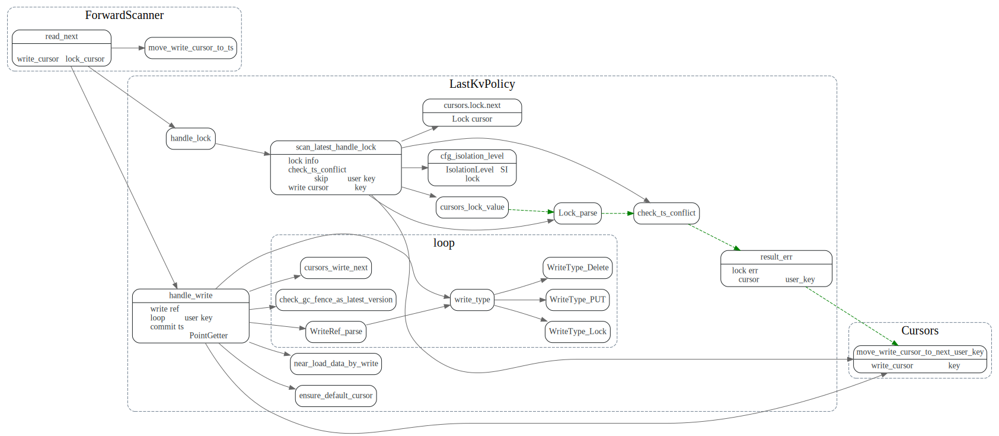
LatestEntryPolicy
DeltaEntryPolicy
BackwardKvScanner
Questions
- bypass_locks ? 这个作用是什么?
- check_ts_conflict 为啥lockType为Pessimistic 就可以返回OK?
参考
Coprocessor
draft
BatchExecutor
{agg;selection} -> BatchTableScanner;BatchIndexScanner -> Scanner -> RangeScanner -> Storage.scan_next;
分为三类 scanner, selection, agg
其中scanner是作为基础数据源的，selection/agg就是在这个基础数据源上做filter和agg scanner 又依赖于RangesScanner
RangesScanner
TiKVStorage
这块需要先把Storage/mvcc的scanner先研究透了.

ScanExecutor
impl负责process_kv_pair, RangeScanner扫描获取kv
ranges_iterator感觉像获取多个range的数据？
把多个range chain起来？
RpnExpression
RpnExpressionBuilder
Expr 定义在tipb repo的proto/expression.proto文件中。
// Evaluators should implement evaluation functions for every expression type.
message Expr {
optional ExprType tp = 1 [(gogoproto.nullable) = false];
optional bytes val = 2;
repeated Expr children = 3;
optional uint32 rpn_args_len = 6;
optional ScalarFuncSig sig = 4 [(gogoproto.nullable) = false];
optional FieldType field_type = 5;
optional bool has_distinct = 7 [(gogoproto.nullable) = false];
}
ExprType主要分为三类，value类型的，agg函数，scalar函数。
scalar函数，在TiKV中会build对应的RpnFnMeta
agg函数也对应的AggregateFunction和AggregateState.
RpnExpressionBuilder 将expr tree转换为RpnExpression,
在handle_node_fn_call, 处理ScalarFunc时候，会使用后续遍历方式，先递归
处理ScalarFunc的args,最后再处理ScalarFunc节点。
其中比较重要的是调用map_expr_node_to_rpn_func，
生成函数对应的RpnFnMeta.
#![allow(unused)] fn main() { fn map_expr_node_to_rpn_func(expr: &Expr) -> Result<RpnFnMeta> { let value = expr.get_sig(); let children = expr.get_children(); let ft = expr.get_field_type(); Ok(match value { // impl_arithmetic ScalarFuncSig::PlusInt => map_int_sig(value, children, plus_mapper)?, ScalarFuncSig::PlusIntUnsignedUnsigned => arithmetic_fn_meta::<UintUintPlus>(), //... } } }

过程宏 rpn_fn
Coprocessor 直接实现了向量与标量的运算，rpn_expr_codegen 提供了过程宏 #[rpn_fn] ，我们只需定义标量逻辑，过程宏将自动生成剩下带有向量的逻辑。
rpn 代码生成
#![allow(unused)] fn main() { /// The `rpn_fn` attribute. #[proc_macro_attribute] pub fn rpn_fn(attr: TokenStream, input: TokenStream) -> TokenStream { match rpn_function::transform(attr.into(), input.into()) { Ok(tokens) => TokenStream::from(tokens), Err(e) => TokenStream::from(e.to_compile_error()), } } }
生成对应vector代码调用地方如下, 循环的调用scalar函数, 生成vector版本的rpn function.
#![allow(unused)] fn main() { //... let chunked_push = if self.writer { quote! { let writer = result.into_writer(); let guard = #fn_ident #ty_generics_turbofish ( #(#captures,)* #(#call_arg),* , writer)?; result = guard.into_inner(); } } else { quote! { result.push( #fn_ident #ty_generics_turbofish ( #(#captures,)* #(#call_arg),* )?); } }; //循环loop调用标量的func let nullable_loop = quote! { for row_index in 0..output_rows { (let (#extract, arg) = arg.extract(row_index));*; chunked_push } }; }
RpnExpression struct
RpnExpression是逆波兰表达式，比如 2 + a 的RPN表达式为2 a + ，RpnExpressionNodeNode有三种类型: Const和Column Ref, Fn
比如对于表达式 2 a + ，其中2为Const, a 为ColumnRef，+ 为Fn。
ColumnRef只记录了一个offset, 表示引用了input_physical_columns index为offset的列.
LazyBatchColumn decode
在eval之前需要对column数据做解码，从Vec<8> decode对应的field_type 类型的数据。
LazyBatchColumn 中Raw 存放了原始数据，Decode 存放了解码后的数据。
#![allow(unused)] fn main() { #[derive(Clone, Debug)] pub enum LazyBatchColumn { //原始数据 Raw(BufferVec), //Decode之后的数据 Decoded(VectorValue), } }
LazyBatchColumn::ensure_decoded 会根据传进来的LogicalRows 对需要的rows做解码
VectorValue
VectorValue包含各种具体type的enum. LazyBatchColumn decode后，会从原始的
vec<8> 数据，decode为field_type对应的具体类型。
RpnStackNode
RpnExpression eval时候，会使用一个stack, stack中的元素即为RpnStackNode
有两种类型，scalar表示标量，vector表示向量. 比如上面表达式2 + a 中2就是标量，
a为向量(column a 那一列值)
RpnExpression eval
RpnExpression eval时，会对遍历RpnExpressionNode, 遇到const或者column ref就压入stack，
遇到Fn节点的，就从stack顶上pop出N个args。
执行完Fn后将结果再push到stack中，stack中最后元素即为RpnExpression的结果。

draft
rpn 宏相关代码分析

AggrFunction
在build_executors时，会将DagRequest中的tipb::Executors 解析为AggrFunction 存放在Entities.each_aggr_fn Vec中.
#![allow(unused)] fn main() { pub trait AggrFunction: std::fmt::Debug + Send + 'static { /// The display name of the function. fn name(&self) -> &'static str; /// Creates a new state instance. Different states aggregate independently. fn create_state(&self) -> Box<dyn AggrFunctionState>; } }
AggrFunctionState
AggrFunctionState 由AggrFunction::create_state创建. 定义了一个derive, aggr_function, 用来自动生成create_state
#![allow(unused)] fn main() { #[derive(Debug, AggrFunction)] #[aggr_function(state = AggrFnStateAvg::<T>::new())] pub struct AggrFnAvg<T> where T: Summable, VectorValue: VectorValueExt<T>, { _phantom: std::marker::PhantomData<T>, } }
BatchExecutor
Executor proto
tipb proto中定义的Executor 关系如下
其中TableScan和IndexScan是最底层的Executor, 从Storage can key range的数据，供上层(Selection等）其他Executor使用。
build_executors
build_executors 根据tipb中定义的Executor 创建对应的BatchExecutor
#![allow(unused)] fn main() { #[allow(clippy::explicit_counter_loop)] pub fn build_executors<S: Storage + 'static>( executor_descriptors: Vec<tipb::Executor>, storage: S, ranges: Vec<KeyRange>, config: Arc<EvalConfig>, is_scanned_range_aware: bool, ) -> Result<Box<dyn BatchExecutor<StorageStats = S::Statistics>>> { match first_ed.get_tp() { ExecType::TypeTableScan => { //... }
参数中的executor_descriptors数组，第i个是第i+1个的child Executor,
且第一个为TableScan或者IndexScan。
BatchExecutor Trait
BatchExecutor定义了Executor的基本接口, 其中的next_batch用来
从child Executor中获取数据。
数据格式为LazyBatchColumnVec
#![allow(unused)] fn main() { impl<C: ExecSummaryCollector + Send, T: BatchExecutor> BatchExecutor for WithSummaryCollector<C, T> { type StorageStats = T::StorageStats; fn schema(&self) -> &[FieldType] { self.inner.schema() } fn next_batch(&mut self, scan_rows: usize) -> BatchExecuteResult { let timer = self.summary_collector.on_start_iterate(); let result = self.inner.next_batch(scan_rows); self.summary_collector .on_finish_iterate(timer, result.logical_rows.len()); result } fn collect_exec_stats(&mut self, dest: &mut ExecuteStats) { self.summary_collector .collect(&mut dest.summary_per_executor); self.inner.collect_exec_stats(dest); } fn collect_storage_stats(&mut self, dest: &mut Self::StorageStats) { self.inner.collect_storage_stats(dest); } fn take_scanned_range(&mut self) -> IntervalRange { self.inner.take_scanned_range() } fn can_be_cached(&self) -> bool { self.inner.can_be_cached() } } }
BatchExecutorsRunner
call next_batch
RangesScanner
提供了统一的next接口，从Storage中遍历多个Key Range
TiKVStorage
Snapshot
#![allow(unused)] fn main() { /// A Snapshot is a consistent view of the underlying engine at a given point in time. /// /// Note that this is not an MVCC snapshot, that is a higher level abstraction of a view of TiKV /// at a specific timestamp. This snapshot is lower-level, a view of the underlying storage. pub trait Snapshot: Sync + Send + Clone { type Iter: Iterator; /// Get the value associated with `key` in default column family fn get(&self, key: &Key) -> Result<Option<Value>>; /// Get the value associated with `key` in `cf` column family fn get_cf(&self, cf: CfName, key: &Key) -> Result<Option<Value>>; /// Get the value associated with `key` in `cf` column family, with Options in `opts` fn get_cf_opt(&self, opts: ReadOptions, cf: CfName, key: &Key) -> Result<Option<Value>>; fn iter(&self, iter_opt: IterOptions) -> Result<Self::Iter>; fn iter_cf(&self, cf: CfName, iter_opt: IterOptions) -> Result<Self::Iter>; // The minimum key this snapshot can retrieve. #[inline] fn lower_bound(&self) -> Option<&[u8]> { None } // The maximum key can be fetched from the snapshot should less than the upper bound. #[inline] fn upper_bound(&self) -> Option<&[u8]> { None } /// Retrieves a version that represents the modification status of the underlying data. /// Version should be changed when underlying data is changed. /// /// If the engine does not support data version, then `None` is returned. #[inline] fn get_data_version(&self) -> Option<u64> { None } fn is_max_ts_synced(&self) -> bool { // If the snapshot does not come from a multi-raft engine, max ts // needn't be updated. true } } }
调用RaftEngine的async_snapshot获取snapshot
tls engine
ScanExecutor
ScanExecutor 使用RangesScanner从底层的Storage，扫描读取Ranges内的key, value Pair,
然后由TableScanExectuorImpl或者IndexScanExecutorImpl
根据ColumnInfo信息，将key,value pair, 组装成 LazyBatchColumnVec,
供上层Executor 使用。
对于TableScan来说， key中包含了intHandle或者commonHandle, 而value则是一些columns Id和column的值
value有两种编码方式v1版本的，是普通的datum方式, col_id1 value1 col_id2 value2.
V2版本的是RowSlice, 具体格式信息见下文.
对于IndexScan来说，key中包含了建索引的columns的columnsValues(编码方式为datum), 如果是unique index的话，key 中则还 包含了intHandle或者commonHandle 信息。

ScanExecutor::next_batch
迭代读取scan_rows行数据，每次调用RangesScanner::next从
Storage中读取kv数据, 然后调用impl的process_kv_pair处理kv数据.
放入LazyBatchColumnVec中，返回给上层Executor。
TableScanExectuorImpl
primary key
primary key可能是两个column compose起来才是primary key, 比如这样：
multi column compose的primay key 应该有个unique index吧.
primay index在column之上又搞了啥？
CREATE TABLE table_name(
primary_key_column datatype PRIMARY KEY,
--...
);
CREATE TABLE IF NOT EXISTS tasks (
task_id INT AUTO_INCREMENT PRIMARY KEY,
title VARCHAR(255) NOT NULL,
start_date DATE,
--...
) ENGINE=INNODB;
CREATE TABLE
product (
category INT NOT NULL,
id INT NOT NULL,
price DECIMAL,
PRIMARY KEY(category, id)
);
handle_indices 和primary column 这两个是什么概念？
TableScanExecutor 输入输出
不明白的的是为什么要handle_indices push 同一个handle值
TableScanExecutor 数据结构关系
处理key
解析key中的intHandle或者commonHandle.

v1版本value
v2版本value
IndexScanExecutorImpl
IndexScanExecutor的输入输出
TiKV中 index 的key layout布局如下：
Unique index
Key: tablePrefix_tableID_indexPrefixSep_indexID_indexedColumnsValue Value: value
非unique index
Key: tablePrefix_idxPrefix_tableID_indexID_ColumnsValue_handle, value: null
其中的handle可以为IntHandle或者commonHandle
IndexScanExecutor的输入输出如下:
其中输出的columns 是在IndexScanExecutorImpl::build_column_vec
方法中创建的。
IndexScan 数据结构关系
process_old_collation_kv
process_kv_general
RangesScanner::next
从storage中读取数据
Selection
调用Src BatchExecutor的next_batch, 获取数据，然后对于自己的每个condition 调用 RpnExpression::eval, 计算condition的结果，然后只保留condition为true的 logical rows.
next_batch
这里面RpnExpression是逆波兰表达式，比如2 *（3 + 4）+ 5 会被 表示为: 2 3 4 + * 5 +。
RpnExpression eval时，从左到右遍历表达式，遇到操作数(比如数字2,3)， 就push到stack中，遇到operator(比如+号)就从Stack中pop出operator需要的参数 比如+就pop 3和4，然后将 3 4 +的执结果7push到stack中。最后stack中就是执行的结果。
对应的执行逻辑在代码RpnExpression::eval_decoded函数中
#![allow(unused)] fn main() { pub fn eval_decoded<'a>( &'a self, ctx: &mut EvalContext, schema: &'a [FieldType], input_physical_columns: &'a LazyBatchColumnVec, input_logical_rows: &'a [usize], output_rows: usize, ) -> Result<RpnStackNode<'a>> { }
Agg executor
next_batch
AggregationExecutorImpl
对应四种实现，每个里面都有个states 是Vec<Box<dyn AggrFunctionState>>
用来保存aggr state (比如avg 的state需要保存sum和count).
SimpleAggregationImpl 是没有group by 的，比如下面这种SQL。
select count(*) from table
SimpleAggregationImpl
这个没有groupby
FastHashAggregationImpl
这个只有一个group by expr
SlowHashAggregationImpl
有多个group by expr

假设数据有四列a,b,c,d, 执行
select
exp_1(a), exp_2(b), avg(c), sum(d)
from t
group by
exp_1(a), exp_2(b)
slow hash agg中相关数据结构关系如下:
BatchStreamAggregationImpl
假定已排好序
stream agg中相关数据结构关系如下:
Performance
本地使用tipu 启动了一个cluster, 跑了bench。
tiup bench tpcc -H 127.0.0.1 -P 4000 -D tpcc --warehouses 10000 run
然后在TiDB的dashboard上，做了一个profile，下载打开后，tikv对应的profile如下(可以在新的tab页打开下面的svg，看到交互的火焰图)
- apply: 20.33%, apply fsm poller, 主要负责将k数据写入到rocksdb.
- raft store: 24.15%, peer fsm poller
- grpc: 16.45%
- sched-worker-pro：20.39%
- unified-read-pro: 14.2%
Batch System: Apply Poller
主要负责将k数据写入到rocksdb，主要时间用在了数据flush上。
raftstore::store::fsm::apply::ApplyContext<EK,W>::flush上
Batch System: Raft Poller
raft store: 24.15%, peer fsm poller, 可以看到其中有将近1/3的时间用在了write_opt上，主要是 write raft state( 比如hard state(term, votefor), raft log等）
Storage: 事务
sched-worker-pro 占总体时间的20.39%
主要时间用在Command:process_write上, 其中MvccReader::seek_write和MvccReader::load_data占据大部分时间.
Coprocessor
- unified-read-pro: 14.2%
主要时间用在了Cusor::Seek上
Grpc 接口
- grpc: 16.45%

yatp
数据结构关系
worker thread
run
WorkerThread::run 线程主循环, 不断的去队列中
获取task, handle task。
callback
future
task status
#![allow(unused)] fn main() { const NOTIFIED: u8 = 1; const IDLE: u8 = 2; const POLLING: u8 = 3; const COMPLETED: u8 = 4; }
如果task.poll调用了ctx.wake, 并且返回了Pending，就会出现poll结束后，task
的NOTIFIED状态, 这时候可以重新调用task.poll，如果超过了repoll_limit
则会调用wake_task, 把任务放入调度队列中。
reschedule
yatp 提供了reschedule, task自己主动让出time slice.
比如下面, while循环中会自己计算自己的time_slice
如果超过了MAX_TIME_SLICE就会调用reschedule.await
并重置time_slice_start
#![allow(unused)] fn main() { //src/coprocessor/statistics/analyze.rs#L101 async fn handle_index( //... //... let mut time_slice_start = Instant::now(); while let Some((key, _)) = scanner.next()? { row_count += 1; if row_count >= BATCH_MAX_SIZE { if time_slice_start.elapsed() > MAX_TIME_SLICE { reschedule().await; time_slice_start = Instant::now(); } row_count = 0; } //... }
reschedule async 定义如下
#![allow(unused)] fn main() { /// Gives up a time slice to the task scheduler. /// /// It is only guaranteed to work in yatp. pub async fn reschedule() { Reschedule { first_poll: true }.await } }

waker
实现了RawWakerVtable中的几个函数, 最后都会调用wake_task
将task队列中.
这里面RawWaker.data data指针指向的是task_cell
task_cell中包含了指向QueueCore的weake指针.
wake_task
如果是在polling中被wake的，可使用
thread 局部变量LOCAL 指针，它指向了worker自己的Local。
该指针由Scope来设置, 在进入future::Runner:handle时
会被设置好,离开该函数时 由Scope的drop函数将LOCAL指针设置为null.
LocalQueue
SingleLevel::LocalQueue
spawn 和pop task过程
task 的spawn有两处，一处是ThreadPool::spawn 外部线程
来执行async task，另一处是Future等待的事件ready后
调用的ctx.wake 将task 放回到队列中。
在WorkerThread主线程中会不断地去pop task, 先从
自己本地的local queue取task，为空的话，再去
global queue steal 一个batch的task.
如果还是没有的话， 就去别的worker那steal一批task. 最后如果没有可执行的task, 就进入sleep状态.
Multilevel::LocalQueue
multilevel 为了避免long run的task阻塞了其他async task的执行。 使用了多个Injector level。Injector level越高，injector 会被pop的 优先级(概率）就越低。
在task被reschedule时，会根据task的running_time 放到不同的level injector中。
task运行时越长，被放入的level就越高
默认level0 用于跑小任务，时间在<5ms, level1 是 5ms ~ 100ms, level2是>100ms的
#![allow(unused)] fn main() { impl Default for Config { fn default() -> Config { Config { name: None, level_time_threshold: [Duration::from_millis(5), Duration::from_millis(100)], level0_proportion_target: 0.8, } } } }
在worker去Injector获取任务时，会根据一定概率来选择某个level的injector, 计算方式如下:
expected_level的计算
先根据level0_chance 概率level0，
然后从level1 ~ Level_NUM -1 依次按照概率 CHANCE_RATIO/(CHANCE_RATIO +1)
选择level.
#![allow(unused)] fn main() { let expected_level = if rng.gen::<f64>() < level0_chance { 0 } else { (1..LEVEL_NUM - 1) .find(|_| rng.gen_ratio(CHANCE_RATIO, CHANCE_RATIO + 1)) .unwrap_or(LEVEL_NUM - 1) }; const LEVEL_NUM: usize = 3; /// The chance ratio of level 1 and level 2 tasks. const CHANCE_RATIO: u32 = 4; }
prepare_before_push, 会根据task的running_time, 和每个level的level_time_threshold,
设置task的current_level, 后面task 会push到current_level对应的injector.
#![allow(unused)] fn main() { let running_time = extras .running_time .get_or_insert_with(|| self.task_elapsed_map.get_elapsed(task_id)); let running_time = running_time.as_duration(); self.level_time_threshold .iter() .enumerate() .find(|(_, &threshold)| running_time < threshold) .map(|(level, _)| level) .unwrap_or(LEVEL_NUM - 1) as u8 }
在每次MultilevelRunner::handle task时，都会更新task的running_time
也会每隔一段时间调用maybe_adjust_chance 更新level0_chance.
#![allow(unused)] fn main() { impl<R, T> Runner for MultilevelRunner<R> fn handle(&mut self, local: &mut Local<T>, mut task_cell: T) -> bool { let extras = task_cell.mut_extras(); let running_time = extras.running_time.clone(); //... let begin = Instant::now(); let res = self.inner.handle(local, task_cell); let elapsed = begin.elapsed(); //更新task的runnig_time if let Some(running_time) = running_time { running_time.inc_by(elapsed); } //... if local_total > FLUSH_LOCAL_THRESHOLD_US { //... //调整level0_chance self.manager.maybe_adjust_chance(); } }
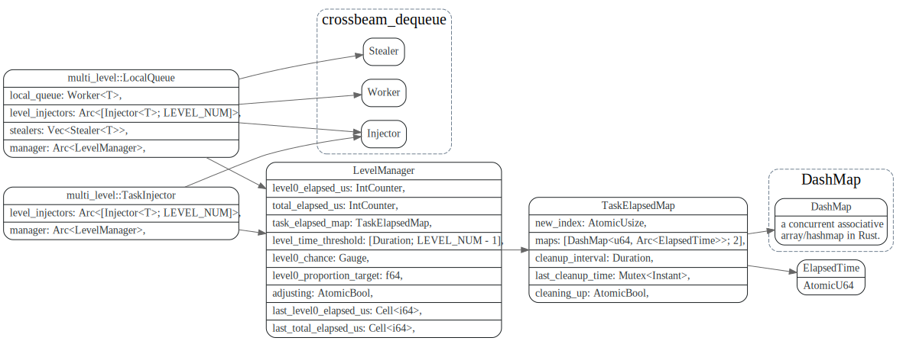
multilevel spawn 和pop
参考文献
Bevy
初次印象
Questions
- texture和camera是咋搞的。
Bevy Sprite
Sprite/Sprite_sheet
了解下bevy的一个sprite是怎么画出来的
sprite的vertex/fragment shader的数据是怎么传过去的？
shader defs
先初始化vertex shader和fragment shader
#![allow(unused)] fn main() { let pipeline_handle = pipelines.add(PipelineDescriptor::default_config(ShaderStages { vertex: shaders.add(Shader::from_glsl(ShaderStage::Vertex, VERTEX_SHADER)), fragment: Some(shaders.add(Shader::from_glsl(ShaderStage::Fragment, FRAGMENT_SHADER))), })); }
PipelineSpecialization
#![allow(unused)] fn main() { commands .spawn(MeshComponents { mesh: cube_handle, render_pipelines: RenderPipelines::from_pipelines(vec![RenderPipeline::specialized( pipeline_handle, // NOTE: in the future you wont need to manually declare dynamic bindings PipelineSpecialization { dynamic_bindings: vec![ // Transform DynamicBinding { bind_group: 1, binding: 0, }, // MyMaterial_color DynamicBinding { bind_group: 1, binding: 1, }, ], ..Default::default() }, )]), transform: Transform::from_translation(Vec3::new(-2.0, 0.0, 0.0)), ..Default::default() }
RenderGraph的概念是咋样的
自动derive的RenderResources和ShaderDefs是啥
shadersource 貌似用的是Spirv
compile_pipeline -> compile_shader
reflect_layout 貌似这块是上传数据到shader里面的。
draw.rs中的set_bind_groups_from_bindings
set_bind_group -> render_command
set_index_buffer
set_vertex_buffer
SetBindGroup
set_vertex_buffers_from_bindings -> set_vertex_buffer
ColorMaterial 包含了color和texture
RenderGraph
RenderGraph 是干啥的，类似于blender中的matrial node吗？
#![allow(unused)] fn main() { pub struct NodeState { pub id: NodeId, pub name: Option<Cow<'static, str>>, pub node: Box<dyn Node>, pub input_slots: ResourceSlots, pub output_slots: ResourceSlots, pub edges: Edges, } }
Slot如下
#![allow(unused)] fn main() { #[derive(Default, Debug, Clone)] pub struct ResourceSlots { slots: Vec<ResourceSlot>, } #[derive(Debug, Clone)] pub struct ResourceSlot { pub resource: Option<RenderResourceId>, pub info: ResourceSlotInfo, } #[derive(Clone, Debug)] pub struct ResourceSlotInfo { pub name: Cow<'static, str>, pub resource_type: RenderResourceType, } #[derive(Debug, Clone, Eq, PartialEq)] pub enum RenderResourceType { Buffer, Texture, Sampler, } }
SpriteRenderGraphBuilder add_sprite_graph -> build_sprite_pipeline;
Render Graph？
https://ourmachinery.com/post/high-level-rendering-using-render-graphs/
Render Pipeline
在stage DRAW 阶段生成所有的RenderCommand,放入render_commands vec, 然后在stage Render阶段，遍历它， 执行这个render commands.
Render Nodes
- PassNode
- CameraNode
- RenderResourcesNode
- AssetRenderResourcesNode;
RenderResourcesNode
RenderResourcesNode 负责绑定uniform
#![allow(unused)] fn main() { pub trait RenderResource { fn resource_type(&self) -> Option<RenderResourceType>; fn write_buffer_bytes(&self, buffer: &mut [u8]); fn buffer_byte_len(&self) -> Option<usize>; // TODO: consider making these panic by default, but return non-options fn texture(&self) -> Option<Handle<Texture>>; } pub trait RenderResources: Send + Sync + 'static { fn render_resources_len(&self) -> usize; fn get_render_resource(&self, index: usize) -> Option<&dyn RenderResource>; fn get_render_resource_name(&self, index: usize) -> Option<&str>; fn get_render_resource_hints(&self, _index: usize) -> Option<RenderResourceHints> { None } fn iter(&self) -> RenderResourceIterator; } }
derive RenderResources
derive 自动实现RenderResources接口
Sprite
#![allow(unused)] fn main() { #[derive(Debug, Default, RenderResources)] pub struct Sprite { pub size: Vec2, #[render_resources(ignore)] pub resize_mode: SpriteResizeMode, } }
在sprite.vert中定义该uniform
layout(set = 2, binding = 1) uniform Sprite_size {
vec2 size;
};
ColorMaterial
#![allow(unused)] fn main() { #[derive(Debug, RenderResources, ShaderDefs)] pub struct ColorMaterial { pub color: Color, #[shader_def] pub texture: Option<Handle<Texture>>, } }
layout(set = 1, binding = 0) uniform ColorMaterial_color {
vec4 Color;
};
# ifdef COLORMATERIAL_TEXTURE
layout(set = 1, binding = 1) uniform texture2D ColorMaterial_texture;
layout(set = 1, binding = 2) uniform sampler ColorMaterial_texture_sampler;
# endif
TextureCopyNode
AssetEvent是由谁来emit?
监听AssetEvent，创建texture 在RendererContext中buffer
Events
Texture
texture 一个vec u8数据 + size + 数据格式
- texture是怎么和shader中的buffer关联起来的?
- texture的数据是怎么实现hot reload的？
#![allow(unused)] fn main() { pub struct Texture { pub data: Vec<u8>, pub size: Vec2, pub format: TextureFormat, } }
texture_resource_system
texture_resource_system 会轮询AssetEvent, 处理AssetEvent::Created/Modified/Remove等事件
Handle是啥？
Asset
AssetServer load相关函数，返回的都是Handle, 由channelAssetHandler加载资源，
加载完毕后，放入channel中，然后update_asset_storage_system会去设置全局
Assets和更新AssetServer中的load状态。

PBR
ECS
Entiy, component, system Resources 资源
thread local 或者global的
#![allow(unused)] fn main() { pub struct Resources { pub(crate) resource_data: HashMap<TypeId, ResourceData>, thread_local_data: HashMap<TypeId, Box<dyn ResourceStorage>>, main_thread_id: ThreadId, } }
Blender 学习笔记
Blender Manual notes
User Interface
Blender 界面分为三块
- TopBar 主要是菜单和workspace的tab
- Areas: 中间的是Areas，由各种Editor组成
- StatusBar: 最下面, 记录鼠标，键盘等状态

StatusBar
左边记录了keymap information, 右边记录了Resource Information.

WorkSpace
WorkSpace, 将几个editor组合起来，便于完成建模，动画等工作，
- Modeling: For modification of geometry by modeling tools.
- Sculpting: For modification of meshes by sculpting tools.
- UV Editing: Mapping of image texture coordinates to 3D surfaces.
- Texture Paint: Tools for coloring image textures in the 3D View.
- Shading: Tools for specifying material properties for rendering.
- Animation: Tools for making properties of objects dependent on time.
- Rendering: For viewing and analyzing rendering results.
- Compositing: Combining and post-processing of images and rendering information.
- Scripting: Programming workspace for writing scripts.
Areas

Split Area
鼠标放在Area左上角，出现+号时候，按住鼠标左键拖动(方向如下图所示）

Join Area
鼠标放在Area左上角，出现+号时候，按住鼠标左键拖动(方向和Split的相反)

Swap Area
两个area交换空间，鼠标放在area左上角，然后按住ctl + LMB 从src area拖动到target area
Regions
blender 的每个editor包含不同的region.
一般Region有
- Header
- ToolBar(快捷键T), 在编辑器左边, 当前active tool的设置
- SideBar(快捷键N)，在编辑器右边, editor中Object的settings和editor自身的settings

Common shortcuts
Ref
- https://docs.blender.org/manual/en/2.80/index.html
python
records
[github records]https://github.com/kennethreitz-archive/records
import records
db = records.Database('postgres://...')
rows = db.query('select * from active_users') # or db.query_file('sqls/active-users.sql')
react
React中state render到html dom的流程分析
Questions
- React的component的lifecycle 在react中是怎么被调到的.
- 分析jsx => element tree => fiber tree => html dom在react中的流程.
- react中的fiber tree的建立和执行, 以及异步的schedule.

研究工具和方法
- chrome debug 打断点
- ag the silver searcher, 源代码全局搜索.
- 猜测它的实现原理，打log, call trace验证, console.log, console.trace;
准备工作
代码下载,编译
$ git clone git@github.com:facebook/react.git
$ cd react
$ yarn install
$ gulp react:extract-errors
$ yarn build
Component lifeCycle callback
准备最简单的组件HelloWorld
import React from "react"
import ReactDom from "react-dom"
class HelloWorld extends React.Component{
constructor(props){
super(props);
this.state = {
message: "hello, world"
}
}
componentWillMount(){
console.log("component will mount");
}
componentWillUpdate(){
console.log("component will update");
}
componentDidUpdate(){
console.log("component did update");
}
componentDidMount(){
console.log("componentDidMount");
}
render(){
return <span className={this.state.message}>
{this.state.message}
</span>;
}
}
ReactDom.render(<HelloWorld/>, document.getElementById("app"));
在componentWillMount, componentDidMount, componentWillUpdate, componentDidUpdate中打个断点

创建html dom的callstack
react中最后一定会去调用document.createElement去创建html的dom节点，所以把document.createElement这个方法覆盖了，加了一层log.
var originCreateElement = document.createElement;
document.createElement = function() {
if (arguments[0] === 'span'){
console.log('create span');
}
return originCreateElement.apply(document, arguments);
}
然后打断点，得到的callstack如下:

call flow 整理
函数间的callflow 整理如下

函数所属模块之间的call flow 整理如下

Fiber
fiber的设计思想
在react-fiber-artchitecture 中作者描述了fiber的设计思想，简单来说，每个fiber就是一个执行单元，可以任意的修改它的优先级，可以pause 它，之后再继续执行（感觉很像进程线程的概念）。
实际中执行一个fiber可以生成下一步要执行的fiber，然后fiber执行之前可以检查时候js跑的时间时候用完了，如果用完了，就挂起来，等待下次requestIdleCallback/requestAnimationFrame的callback, schedule 开始接着上次结束的地方继续执行js code.
相当于把以前的js function 的call stack 改成fiber chain了。

workLoop 函数主要逻辑如下（注，删除了错误处理和其他不相干的if else 分支)
performWork
// ReactScheduler.js workLoop
if (deadline !== null && priorityLevel > TaskPriority) {
// The deferred work loop will run until there's no time left in
// the current frame.
while (nextUnitOfWork !== null && !deadlineHasExpired) {
if (deadline.timeRemaining() > timeHeuristicForUnitOfWork) {
nextUnitOfWork = performUnitOfWork(nextUnitOfWork);
if (nextUnitOfWork === null && pendingCommit !== null) {
// If we have time, we should commit the work now.
if (deadline.timeRemaining() > timeHeuristicForUnitOfWork) {
commitAllWork(pendingCommit);
nextUnitOfWork = findNextUnitOfWork();
// Clear any errors that were scheduled during the commit phase.
}
}
}
}
}
schedule
schedule 有同步和异步的，同步的会一直执行，直到fiber tree被执行结束，不会去检查time限制和priorityLevel的问题，异步的有两类权限，一个是animation的，一类是HighPriority, OffScreen Priority这个会有个deadline.
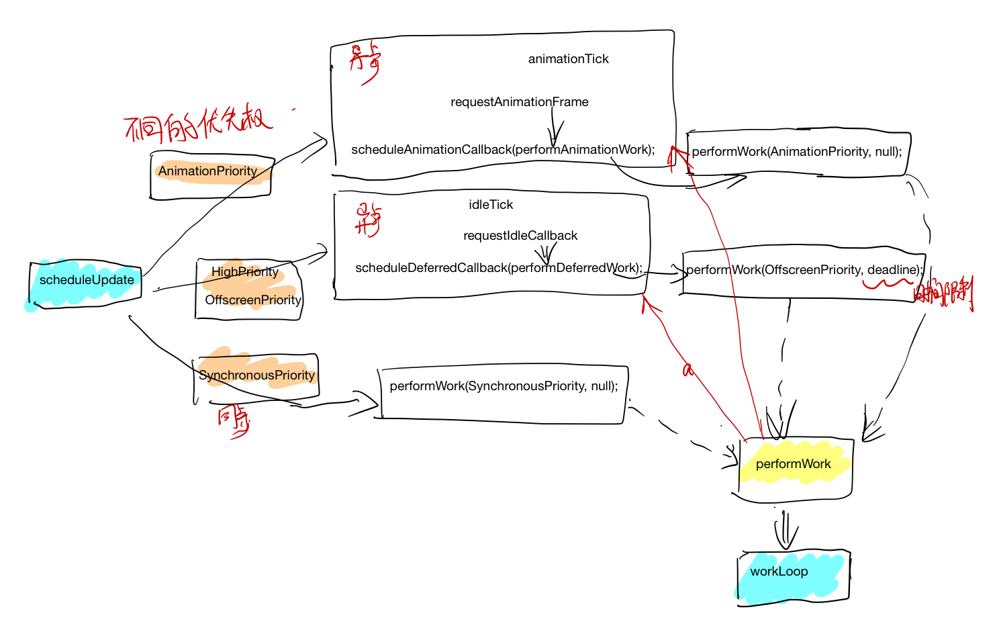
在preformwork的末尾会去检查nextLevelPriority的优先权，然后根据优先权异步的schedule.
switch (nextPriorityLevel) {
case SynchronousPriority:
case TaskPriority:
// Perform work immediately by switching the priority level
// and continuing the loop.
priorityLevel = nextPriorityLevel;
break;
case AnimationPriority:
scheduleAnimationCallback(performAnimationWork);
// Even though the next unit of work has animation priority, there
// may still be deferred work left over as well. I think this is
// only important for unit tests. In a real app, a deferred callback
// would be scheduled during the next animation frame.
scheduleDeferredCallback(performDeferredWork);
break;
case HighPriority:
case LowPriority:
case OffscreenPriority:
scheduleDeferredCallback(performDeferredWork);
break;
}
fiber类型
FunctionalComponent, ClassComponent 对应着用户创建的Component, HostRoot, HostComponent, HostPortal, HostText这些是和平台相关的组件。对于web来说就是 div, span这些dom元素了。
// ReactTypeOfWork.js
module.exports = {
IndeterminateComponent: 0, // Before we know whether it is functional or class
FunctionalComponent: 1,
ClassComponent: 2,
HostRoot: 3, // Root of a host tree. Could be nested inside another node.
HostPortal: 4, // A subtree. Could be an entry point to a different renderer.
HostComponent: 5,
HostText: 6,
CoroutineComponent: 7,
CoroutineHandlerPhase: 8,
YieldComponent: 9,
Fragment: 10,
};
fiber执行的三个阶段
react中的fiber执行的执行主要分为三个阶段
-
beginWork: fiber展开（把ClassComponent render开来，最后展开到fiber tree的叶子节点都是hostComponent) -
completeWork: 计算fiber之间的diff, 底层的dom元素的创建，以及dom tree的建立，还有事件绑定。 -
commitWork: 调用host接口，把fiber的diff更新到host上去
begin work: fiber tree 的展开
每次的beginWork(fiber), 会把fiber的所有直接子节点展开（这里只展开一层, 不会递归的去展开子节点的子节点）
function performUnitOfWork(workInProgress: Fiber): Fiber | null {
const current = workInProgress.alternate;
let next = beginWork(current, workInProgress, nextPriorityLevel);
if (next === null) {
next = completeUnitOfWork(workInProgress);
}
return next;
}
在workloop里面会把beginWork创建的子节点接着传给beginWork，继续展开fiber tree
//workLoop
while (nextUnitOfWork !== null && !deadlineHasExpired) {
if (deadline.timeRemaining() > timeHeuristicForUnitOfWork) {
nextUnitOfWork = performUnitOfWork(nextUnitOfWork);

completeWork 创建dom元素，计算diff
创建的instance(对于html来说，就是dom节点), 存储在workInProgress.stateNode 里面, 计算好的props diff存放在了workInProgress.updateQueue，在下一个阶段commitWork 会把这个updateQueue里面的patch提交到host。

commitWork 提交diff
在commitUpdate中取WorkInprogress.updateQueue,然后调用Dom操作把diff apply上去

Godot
godot 学习笔记
node tree
- 在tree中怎么快速定位到某个Node? 并转换为相应类型？
- node之间怎么互相调用？
- scene之间的过渡场景怎么搞？
- 目前有哪些node 各自负责干啥？
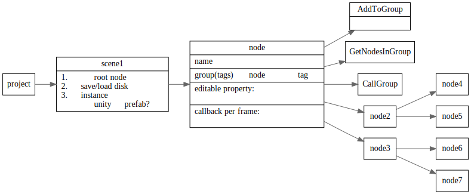
Node2D

Node 虚函数
Rust中没有虚函数，是咋搞的
public override void _EnterTree()
{
// When the node enters the Scene Tree, it becomes active
// and this function is called. Children nodes have not entered
// the active scene yet. In general, it's better to use _ready()
// for most cases.
base._EnterTree();
}
public override void _Ready()
{
// This function is called after _enter_tree, but it ensures
// that all children nodes have also entered the Scene Tree,
// and became active.
base._Ready();
}
public override void _ExitTree()
{
// When the node exits the Scene Tree, this function is called.
// Children nodes have all exited the Scene Tree at this point
// and all became inactive.
base._ExitTree();
}
public override void _Process(float delta)
{
// This function is called every frame.
base._Process(delta);
}
public override void _PhysicsProcess(float delta)
{
// This is called every physics frame.
base._PhysicsProcess(delta);
}
Instance Scene
先load scene, 然后将scene instance为node，可以放在场景里面
var scene = GD.Load<PackedScene>("res://myscene.tscn"); // Will load when the script is instanced.
//preload
var scene = preload("res://myscene.tscn") # Will load when parsing the script.
//instance
var node = scene.Instance();
AddChild(node);
Signal
可以在editor中connect. 也可以在代码中connect 信号和handler
带参数的Signal
extends Node
signal my_signal(value, other_value)
func _ready():
emit_signal("my_signal", true, 42)
Connect signal
// <source_node>.connect(<signal_name>, <target_node>, <target_function_name>)
extends Node2D
func _ready():
$Timer.connect("timeout", self, "_on_Timer_timeout")
func _on_Timer_timeout():
$Sprite.visible = !$Sprite.visible
Emit signal
定义和发射signal
extends Node2D
signal my_signal
func _ready():
emit_signal("my_signal")
AnimatedSprite

KinematicBody2D
控制角色运动和碰撞检测， 和RigionBody2D有什么区别？
- CollisionShape2D: 碰撞检测, Geometric Shape: New RectTangeShape2D
- Modulation: 调制，在inspector中可以改变collisionShape的颜色, 在debug模式比较有用.
- Sprite, render顺序，从上到下，下面的覆盖上面的.
- snaping feature: 用于精确放置图片到0点, snap to grid, 快捷键G Snap to pixel
- collision shape比sprite稍微小一点.
- Dector Monitorble是干啥的, 为啥要把Dector的physical Layer去掉？这样就不会发生碰撞检测了吗？只会做dector?
- stampdector检测的时候，比较global_y 来判断player是否不是在头顶
- player身上的enemyDector，jump更高一些, onAreaEnter和onBodyEnter有啥区别啊
src/Actors/Player.tscn
func _physic_process(delta: float) -> void:
velocity.y = gravity * delta;
velocity.y = max(velocity.y, speed.y)
velocity = move_and_slide(velocity)
is_on_wall is_on_floor
Actor.gd, player和enemy共享公用的代码
TileMap
tileset.tres 这个制作细节需要去学习下
Cell collision, 给每个cell添加collsion，这个画完tilemap之后，自动就有了collision. snapOptions: Step
CellSize
可以直接将Player drag到tilemap里面
physics layers masks: 需要检测碰撞的layer
Input Mapping
get_action_strength
Camera2D控制
Camera Limit: Top, left, Right, Bottom, Smoothed Drag Margin, H,V enable
LevelTemplate
rules: pixels, shiyong rules来衡量位置，然后修改camera的limit
Background
TextureRectangle, Layout, FullRect
CanvasLayer-> Background, Layer -100,
Make Your First 2D Game With Godot
Part 1
KinematicBody2D
控制角色运动和碰撞检测， 和RigionBody2D有什么区别？
- CollisionShape2D: 碰撞检测, Geometric Shape: New RectTangeShape2D
- Modulation: 调制，在inspector中可以改变collisionShape的颜色, 在debug模式比较有用.
- Sprite, render顺序，从上到下，下面的覆盖上面的.
- snaping feature: 用于精确放置图片到0点, snap to grid, 快捷键G Snap to pixel
- collision shape比sprite稍微小一点.
- Dector Monitorble是干啥的, 为啥要把Dector的physical Layer去掉？这样就不会发生碰撞检测了吗？只会做dector?
- stampdector检测的时候，比较global_y 来判断player是否不是在头顶
- player身上的enemyDector，jump更高一些, onAreaEnter和onBodyEnter有啥区别啊
src/Actors/Player.tscn
func _physic_process(delta: float) -> void:
velocity.y = gravity * delta;
velocity.y = max(velocity.y, speed.y)
velocity = move_and_slide(velocity)
is_on_wall is_on_floor
Actor.gd, player和enemy共享公用的代码
TileMap
tileset.tres 这个制作细节需要去学习下
Cell collision, 给每个cell添加collsion，这个画完tilemap之后，自动就有了collision. snapOptions: Step
CellSize
可以直接将Player drag到tilemap里面
physics layers masks: 需要检测碰撞的layer
Input Mapping
get_action_strength
Camera2D控制
Camera Limit: Top, left, Right, Bottom, Smoothed Drag Margin, H,V enable
LevelTemplate
rules: pixels, shiyong rules来衡量位置，然后修改camera的limit
Background
TextureRectangle, Layout, FullRect
CanvasLayer-> Background, Layer -100, 使用canvaslayer作为背景，这样背景图就这一直在了
Part2: Coins, Portals and levels
Coins
AnimationPlayer
制作Coin的bouncing动画
length: 1.8s Add TracK automatic key insert, uncheck rot
AnimationTrackKeyEdit: Easing, 插值, 修改曲线 shirtf + D： player animation
AutoPlay on Load
coin.position
制作Coin的Fadeout动画
修改CanvasItem/Visibility/Modulate的颜色, colorRange, 修改alpha值
在boucing动画中需要: Reset Modulate color
CallMethodTrack
在动画结束的时候，调用node的某个方法，比如fadeout动画结束了，call node的queueFree方法
Portals: 下一个关卡的入口
CapsuleShape2D
TransitionLayer: CanvasLayer, ColorRectangle
canvas layer的行为和普通node不一样？render的时候.
fade in animation
animation player, canvaslayer ,visible 选择这个对性能影响比较大
GUI: Menus/Pause/Score
代码目录结构
- Actors: 放player, enemies
- Levels: 各种关卡
- Objects: coins, portal 之类的小道具
- UserInterface: Menu/Title
- Screens: dialog
add node dialog中，green icon是gui node
control node: anchor/margin/rect/hint/focus etc. ProjectSettings/MainScene/
Background
Background: TextureRectangle, resizable texture for intereface.
背景和gui Layout: FullRect, backgroud fits the parent
Label: basic text box, layout: centerTop
VBoxContainer
Container: 将两个button放到container中, VBoxContainer
Button: Play,quit
Text, Ctl+D 复制一个button 同事选中buttons,然后在inspector中修改： Size Flags: Horizontal/Vectical Expand
两个button填充满VboxContainer
save branch as sencne, 将tree中部分node 保存成scene.
Font
Theme: apply一个theme到node时候，所有的child都是用那个theme
在theme中修改font
DynamicFont, otf 文件拖到font data, 修改size
customerFonts,
get_configuration_warning
ChangeSecneButton: reuseable button
MainScreen/EndScreen/PauseScreen
PlayerData
PlayerData相当于gameState, AutoLoad 单例模式
rest set_score 之后发送一个singal score_updated
AutoLoad在ready中可以用
Pause
score:%s
retrybutton: get_tree().reload_current_scene() 重新加载当前scene
game_tree().paused = false, 使用这个来pause, pause时候所有东西都pause了
Inspector: Node/PauseMode: process 这样这个node就不会被pause了
get_tree().set_input_as_handled(); stop event的传播
player die的时候，就显示pause
Kafka
Kafka client: producer
producer client端发送消息过程

更新元数据过程: updateMetadata
Kafka GroupCoordinator
GroupCoordinator handles general group membership and offset management.
ConsumerGroup
consumer group是kafka提供的可扩展且具有容错性的消费者机制。既然是一个组，那么组内必然可以有多个消费者或消费者实例(consumer instance)，它们共享一个公共的ID，即group ID。组内的所有消费者协调在一起来消费订阅主题(subscribed topics)的所有分区(partition)。当然，每个分区只能由同一个消费组内的一个consumer来消费
- consumer group下可以有一个或多个consumer instance，consumer instance可以是一个进程，也可以是一个线程
- group.id是一个字符串，唯一标识一个consumer group
- consumer group下订阅的topic下的每个分区只能分配给某个group下的一个consumer(当然该分区还可以被分配给其他group)
__consumer_offsets 中的消息保存了每个consumer group某一时刻提交的offset信息。 这个key是consumer-group-id-topic-partition- 这样？
谁来提交offsets?
group与coordinator共同使用它来完成group的rebalance。目前kafka提供了5个协议来处理与consumer group coordination相关的问题：
- Heartbeat请求：consumer需要定期给coordinator发送心跳来表明自己还活着
- JoinGroup请求：成员请求加入组
- LeaveGroup请求：主动告诉coordinator我要离开consumer group
- SyncGroup请求：group leader把分配方案告诉组内所有成员
- DescribeGroup请求：显示组的所有信息，包括成员信息，协议名称，分配方案，订阅信息等。通常该请求是给管理员使用
join/leave group
reblance的时候发生了啥？parition 和consumer之间的分配？？谁负责把partition给各个consumer?
staticMember 是client指定的groupInsanceID
staticMember 和PendingMember是啥？作用是啥？
GroupInstanceId用户指定的consumerid,每个group中这些ID必须是唯一的。
和member.id不同的是，每次成员重启回来后，其静态成员ID值是不变的，因此之前分配给该成员的所有分区也是不变的，而且在没有超时前静态成员重启回来是不会触发Rebalance的。
Static Membership: the membership protocol where the consumer group will not trigger rebalance unless
* A new member joins
* A leader rejoins (possibly due to topic assignment change)
* An existing member offline time is over session timeout
* Broker receives a leave group request containing alistof `group.instance.id`s (details later)
Group instance id: the unique identifier defined by user to distinguish each client instance.

Sync group
总体而言，rebalance分为2步：Join和Sync
- Join， 顾名思义就是加入组。这一步中，所有成员都向coordinator发送JoinGroup请求，请求入组。一旦所有成员都发送了JoinGroup请求，coordinator会从中选择一个consumer担任leader的角色，并把组成员信息以及订阅信息发给leader——注意leader和coordinator不是一个概念。leader负责消费分配方案的制定。
- Sync，这一步leader开始分配消费方案，即哪个consumer负责消费哪些topic的哪些partition。一旦完成分配，leader会将这个方案封装进SyncGroup请求中发给coordinator，非leader也会发SyncGroup请求，只是内容为空。coordinator接收到分配方案之后会把方案塞进SyncGroup的response中发给各个consumer。这样组内的所有成员就都知道自己应该消费哪些分区了。

Fetch/Commit Offset

heartbeat
Group状态
group状态，以及group各个状态下对join/leave/sync/offset_commit等行为的反应

Ref
Kafka 读写消息
消息的produce and consume

partition 对应log对象创建
log对象是什么时候创建的？parition创建时候就创建吗？

ReplicaManager Partion信息维护
ReplicaManager的allPartions是存放在zk中的吗？不同broker server之间这个信息是怎么同步的?
public final class TopicPartition implements Serializable {
//other code
private final int partition;
private final String topic;
}
class ReplicaManager{
/* other code */
private val allPartitions = new Pool[TopicPartition, HostedPartition](
valueFactory = Some(tp => HostedPartition.Online(Partition(tp, time, this)))
)
/* other code */
}
当zk中broker,topic, partion, controller等发生变动时候，由kafka controller通过ControllerChannelManager
向每个kafka broker发送LEADER_AND_ISR消息, broker收到消息以后，会更新ReplicaManager中的allPartitions信息。

具体细节如下 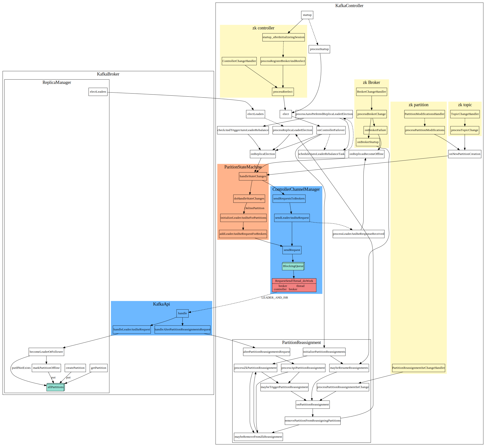
Kafka LogManager
Kafka日志层级
在kafka中每个topic可以有多个partition, 每个partition存储时候分为多个segment。
每个parition有多个副本，副本分布在不同的broker上，其中一个broker被选为该partition的leader, 消息是写到kafka partition leader副本中的，而follower通过fetchmessage，同步该partition的消息。
日志文件加载和创建
启动时候，会打开log所有segment log file, Lazy的加载他们对应的index.

日志读写
写的message个数超过了配置也会触发flush，将cache中msg刷新到磁盘中。

日志后台清理和压缩
清理过期日志
后台线程根据配置定期清理过期或者超过大小的日志segment
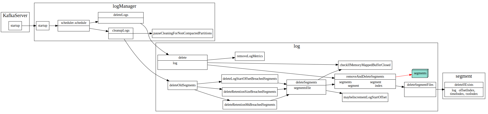
日志缓存flush
后台线程定期将cache刷新到磁盘.
日志compact
有相同key的msg按照时间顺序只用保留最后一条。

首先会创建key -> offset的映射，然后在遍历records的时候，只保留offset最大的那个。
private def buildOffsetMapForSegment(topicPartition: TopicPartition,
segment: LogSegment,
map: OffsetMap,
startOffset: Long,
maxLogMessageSize: Int,
transactionMetadata: CleanedTransactionMetadata,
stats: CleanerStats): Boolean = {
//other code
val records = MemoryRecords.readableRecords(readBuffer)
throttler.maybeThrottle(records.sizeInBytes)
for (batch <- records.batches.asScala) {
//other code...
map.put(record.key, record.offset)
}
}
在memory records的filter中根据这个OffsetMap 过滤掉相同key下offset小的record
private def shouldRetainRecord(map: kafka.log.OffsetMap,
retainDeletes: Boolean,
batch: RecordBatch,
record: Record,
stats: CleanerStats): Boolean = {
val pastLatestOffset = record.offset > map.latestOffset
if (pastLatestOffset)
return true
if (record.hasKey) {
val key = record.key
val foundOffset = map.get(key)
/* First,the message must have the latest offset for the key
* then there are two cases in which we can retain a message:
* 1) The message has value
* 2) The message doesn't has value but it can't be deleted now.
*/
val latestOffsetForKey = record.offset() >= foundOffset
val isRetainedValue = record.hasValue || retainDeletes
latestOffsetForKey && isRetainedValue
} else {
stats.invalidMessage()
false
}
}

Ref
Kafka Partition
PartionState
PartionState中重要信息为当前partion的leader和ISR(in sync replica)的replicaId， PartitionState最终是存储在zk中的。
isr信息有maybeShrinkIsr和maybeExpandIsr这两个函数维护.
每个parition的replica follower都有一个replicaFetcher 线程，该线程负责从partition的leader中 获取消息，在parition leader中处理fetchMessage请求时，判断该follower是否达到in sync标准，将该replicaId加入到该partiton中的ISR中。
另外ReplicaManager后台会周期性的调用maybeShrinkIsr将outOfSync的replica从ISR中踢掉。
replica in/out sync state
判断replica是否处于in/out sync状态
private def isFollowerOutOfSync(replicaId: Int,
leaderEndOffset: Long,
currentTimeMs: Long,
maxLagMs: Long): Boolean = {
val followerReplica = getReplicaOrException(replicaId)
followerReplica.logEndOffset != leaderEndOffset &&
(currentTimeMs - followerReplica.lastCaughtUpTimeMs) > maxLagMs
}
private def isFollowerInSync(followerReplica: Replica, highWatermark: Long): Boolean = {
val followerEndOffset = followerReplica.logEndOffset
followerEndOffset >= highWatermark && leaderEpochStartOffsetOpt.exists(followerEndOffset >= _)
}
partition 对应log对象创建
在成为leader或者follower时会创建相应的log对象
log对象是什么时候创建的？parition创建时候就创建吗？
Partition sate 在zk中的存储
存储路径
Partition 的ISR信息存储在zk下
/broker/topics/{topic}/partitions/{partition}/state，
具体对应代码在zkData.scala中
// tp partition状态在zk中存储路径
object TopicPartitionStateZNode {
def path(partition: TopicPartition) = s"${TopicPartitionZNode.path(partition)}/state"
//other code
}
//tp路径
object TopicPartitionsZNode {
def path(topic: String) = s"${TopicZNode.path(topic)}/partitions"
}
object TopicZNode {
def path(topic: String) = s"${TopicsZNode.path}/$topic"
//othercode
}
//topics路径
object TopicsZNode {
def path = s"${BrokersZNode.path}/topics"
}
存储信息
paritionstate中存储信息如下
def decode(bytes: Array[Byte], stat: Stat): Option[LeaderIsrAndControllerEpoch] = {
Json.parseBytes(bytes).map { js =>
val leaderIsrAndEpochInfo = js.asJsonObject
val leader = leaderIsrAndEpochInfo("leader").to[Int]
val epoch = leaderIsrAndEpochInfo("leader_epoch").to[Int]
val isr = leaderIsrAndEpochInfo("isr").to[List[Int]]
val controllerEpoch = leaderIsrAndEpochInfo("controller_epoch").to[Int]
val zkPathVersion = stat.getVersion
LeaderIsrAndControllerEpoch(LeaderAndIsr(leader, epoch, isr, zkPathVersion), controllerEpoch)
}
}
LeaderAndIsrPartitionState定义在LeaderAndIsrRequest.json中,定义如下
"commonStructs": [
{ "name": "LeaderAndIsrPartitionState", "versions": "0+", "fields": [
{ "name": "TopicName", "type": "string", "versions": "0-1", "entityType": "topicName", "ignorable": true,
"about": "The topic name. This is only present in v0 or v1." },
{ "name": "PartitionIndex", "type": "int32", "versions": "0+",
"about": "The partition index." },
{ "name": "ControllerEpoch", "type": "int32", "versions": "0+",
"about": "The controller epoch." },
{ "name": "Leader", "type": "int32", "versions": "0+", "entityType": "brokerId",
"about": "The broker ID of the leader." },
{ "name": "LeaderEpoch", "type": "int32", "versions": "0+",
"about": "The leader epoch." },
{ "name": "Isr", "type": "[]int32", "versions": "0+",
"about": "The in-sync replica IDs." },
{ "name": "ZkVersion", "type": "int32", "versions": "0+",
"about": "The ZooKeeper version." },
{ "name": "Replicas", "type": "[]int32", "versions": "0+",
"about": "The replica IDs." },
{ "name": "AddingReplicas", "type": "[]int32", "versions": "3+", "ignorable": true,
"about": "The replica IDs that we are adding this partition to, or null if no replicas are being added." },
{ "name": "RemovingReplicas", "type": "[]int32", "versions": "3+", "ignorable": true,
"about": "The replica IDs that we are removing this partition from, or null if no replicas are being removed." },
{ "name": "IsNew", "type": "bool", "versions": "1+", "default": "false", "ignorable": true,
"about": "Whether the replica should have existed on the broker or not." }
]}
]
Replica sync(副本同步)
在broker成为一个follower时候，会启动一个fetchThread，用于和partition leader同步消息 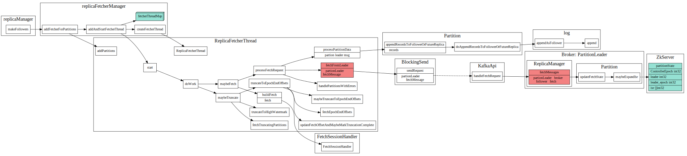
Replica Leader Election
partition replica leader是由KafkaController来分配的.


partion leader选择策略
def offlinePartitionLeaderElection(assignment: Seq[Int], isr: Seq[Int], liveReplicas: Set[Int], uncleanLeaderElectionEnabled: Boolean, controllerContext: ControllerContext): Option[Int] = {
assignment.find(id => liveReplicas.contains(id) && isr.contains(id)).orElse {
if (uncleanLeaderElectionEnabled) {
val leaderOpt = assignment.find(liveReplicas.contains)
if (leaderOpt.isDefined)
controllerContext.stats.uncleanLeaderElectionRate.mark()
leaderOpt
} else {
None
}
}
}
def reassignPartitionLeaderElection(reassignment: Seq[Int], isr: Seq[Int], liveReplicas: Set[Int]): Option[Int] = {
reassignment.find(id => liveReplicas.contains(id) && isr.contains(id))
}
def preferredReplicaPartitionLeaderElection(assignment: Seq[Int], isr: Seq[Int], liveReplicas: Set[Int]): Option[Int] = {
assignment.headOption.filter(id => liveReplicas.contains(id) && isr.contains(id))
}
def controlledShutdownPartitionLeaderElection(assignment: Seq[Int], isr: Seq[Int], liveReplicas: Set[Int], shuttingDownBrokers: Set[Int]): Option[Int] = {
assignment.find(id => liveReplicas.contains(id) && isr.contains(id) && !shuttingDownBrokers.contains(id))
}
Ref
Kafka Controller 主要功能
kafka中会从broker server中选取一个作为controller，该controller通过ControllerChannelManager管理和每个broker通信的线程。
当zk中broker,topic, partion 等发生变动时，controller向每个broker发送消息, replica和partition 主要是通过replicaStateMachine和PartitionStateMachine来管理的 当replica或者partition leaderAndISR信息发生变动时候，controller通过这两个状态机，将状态的转换改为 相应的request请求，发送给broker。
其中比较重要的请求是LeaderAndISR, 它指定了partition的leader和paritition in sync的replica list。
每个broker在zk中注册了ControllerChangeHandler，如果controller挂了，broker就会尝试去选举新的controller.
controller会向broker发送三类请求:
- UpdateMetadataRequest: 更新元数据
- LeaderAndIsrRequest: 创建分区，副本，leader和follower
- StopReplicaRequest: 停止副本。
controller和broker之间同步metadata
三类请求broker主要处理逻辑如下：

controller和broker之间处理IsrAndLeader请求
controller向broker发送stopReplica请求

Kafka Controller: channelManager
Controller和Broker之间采用队列来做异步通信,有专门的线程负责网络数据收发。
每次broker上线，Conntroller会新建一个RequestSendThread线程，当broker下线时候，会销毁该线程。
Controller和每个broker之间都有个RequestSendThread, Controller 将请求放到broker对应的请求队列中。
在RequestSendThread发送完请求，收到broker的响应之后，通过预先设置好的sendEvent回调，通过eventManager 采用异步的方式通知controller。
Kafka Controller 选举
每个kafka broker启动后, 会去zk中尝试创建ControllerZNode, 如果成功就会当选为controller。然后调用onControllerFailover开始controller的工作
- 从zk中加载数据，刷新controllerContext中的各种cache.
- 在zk中注册broker, topic, patition等zk处理函数.
- 启动channelManager, 建立和其他broker之间通信channel
- 启动PartitionStateMachine和ReplicaStateMachine管理分区和副本状态.
- 启动kafkaScheduler，启动后台调度等

Kafka Controller zk监听
在broker当选为controller之后，controller会在zk上注册一堆的handler， 处理broker/topic/partions等变化
private def onControllerFailover(): Unit = {
info("Registering handlers")
// before reading source of truth from zookeeper, register the listeners to get broker/topic callbacks
val childChangeHandlers = Seq(brokerChangeHandler, topicChangeHandler, topicDeletionHandler, logDirEventNotificationHandler,
isrChangeNotificationHandler)
childChangeHandlers.foreach(zkClient.registerZNodeChildChangeHandler)
val nodeChangeHandlers = Seq(preferredReplicaElectionHandler, partitionReassignmentHandler)
nodeChangeHandlers.foreach(zkClient.registerZNodeChangeHandlerAndCheckExistence)
//...other code
}
Broker
BrokerChangeHandler, 处理broker上线下线
Topic
topic change
topic delete

Isrchange
主要更新controller中的cache，并且controller发送sendUpdateMetadata通知所有的borker更新metadata.

LogDirEvent

ReplicaLeaderElection

PartitionReassignment

Kafka Replica Assignment
Replica 迁移过程
缩写说明
- RS: replica set 所有的replica set
- AR: add replica, 需要添加的replica
- RR: remove replica, 需要删除的replica
- TRS: target replica set, 要达到目标的replica set
- ORS: target replica set, 原有的replica set
具体迁移过程kafka代码中注释写的比较详细, 主要分为俩个阶段:
Phase A
如果AR没有在partition的ISR中，controller会发送NewReplica请求给AR的broker, 这些broker开始调用 replicaManager的makeFollowers, 启动Replicafetch线程和parititon leader同步，达到in-sync条件后，partition leader会将该broker加入到ISR中。
然后会触发controller在zk中注册的handler,开始下一步的迁移
Phase B
删除RR中的replica, 更新zk, 如果leader不在TRS中，controller需要发送LeaderAndIsr request给broker, 指定新的leader.
* Phase A (when TRS != ISR): The reassignment is not yet complete
*
* A1. Bump the leader epoch for the partition and send LeaderAndIsr updates to RS.
* A2. Start new replicas AR by moving replicas in AR to NewReplica state.
*
* Phase B (when TRS = ISR): The reassignment is complete
*
* B1. Move all replicas in AR to OnlineReplica state.
* B2. Set RS = TRS, AR = [], RR = [] in memory.
* B3. Send a LeaderAndIsr request with RS = TRS. This will prevent the leader from adding any replica in TRS - ORS back in the isr.
* If the current leader is not in TRS or isn't alive, we move the leader to a new replica in TRS.
* We may send the LeaderAndIsr to more than the TRS replicas due to the
* way the partition state machine works (it reads replicas from ZK)
* B4. Move all replicas in RR to OfflineReplica state. As part of OfflineReplica state change, we shrink the
* isr to remove RR in ZooKeeper and send a LeaderAndIsr ONLY to the Leader to notify it of the shrunk isr.
* After that, we send a StopReplica (delete = false) to the replicas in RR.
* B5. Move all replicas in RR to NonExistentReplica state. This will send a StopReplica (delete = true) to
* the replicas in RR to physically delete the replicas on disk.
* B6. Update ZK with RS=TRS, AR=[], RR=[].
* B7. Remove the ISR reassign listener and maybe update the /admin/reassign_partitions path in ZK to remove this partition from it if present.
* B8. After electing leader, the replicas and isr information changes. So resend the update metadata request to every broker.
*
* In general, there are two goals we want to aim for:
* 1. Every replica present in the replica set of a LeaderAndIsrRequest gets the request sent to it
* 2. Replicas that are removed from a partition's assignment get StopReplica sent to them
*
* For example, if ORS = {1,2,3} and TRS = {4,5,6}, the values in the topic and leader/isr paths in ZK
* may go through the following transitions.
* RS AR RR leader isr
* {1,2,3} {} {} 1 {1,2,3} (initial state)
* {4,5,6,1,2,3} {4,5,6} {1,2,3} 1 {1,2,3} (step A2)
* {4,5,6,1,2,3} {4,5,6} {1,2,3} 1 {1,2,3,4,5,6} (phase B)
* {4,5,6,1,2,3} {4,5,6} {1,2,3} 4 {1,2,3,4,5,6} (step B3)
* {4,5,6,1,2,3} {4,5,6} {1,2,3} 4 {4,5,6} (step B4)
* {4,5,6} {} {} 4 {4,5,6} (step B6)
*
* Note that we have to update RS in ZK with TRS last since it's the only place where we store ORS persistently.
* This way, if the controller crashes before that step, we can still recover.

Kafka partition/replica state machine
Replica 状态机

replica 状态入口
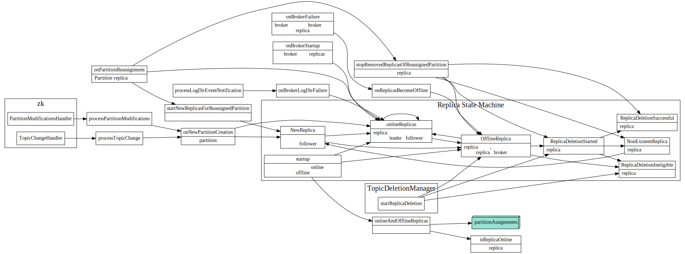
Partition 状态机

partition 状态入口
Txn coordinator
kafka streams中实现exactly once处理 read process write cycle
KafkaProducer producer = createKafkaProducer(
“bootstrap.servers”, “localhost:9092”,
“transactional.id”, “my-transactional-id”);
producer.initTransactions();
KafkaConsumer consumer = createKafkaConsumer(
“bootstrap.servers”, “localhost:9092”,
“group.id”, “my-group-id”,
"isolation.level", "read_committed");
consumer.subscribe(singleton(“inputTopic”));
while (true) {
ConsumerRecords records = consumer.poll(Long.MAX_VALUE);
producer.beginTransaction();
for (ConsumerRecord record : records)
producer.send(producerRecord(“outputTopic”, record));
producer.sendOffsetsToTransaction(currentOffsets(consumer), group);
producer.commitTransaction();
}
Dataflow
Transactions in Apache Kafka中从整体上介绍了kafka中的事务处理流程, 摘抄如下：
- 在A中producer和txn coordinator交互，获取唯一producerId，注册涉及到的partition等。主要发送请为InitProducerId, AddPartitionsToTxn, AddOffsetsToPartitions
- 在B中txn coordinator将事务各种状态写入日志中。
- 在C中producer正常向各个topic paritition写数据。
- 在D中coordinator开始两阶段提交，coordinator确保每个paritition将WriteMark写入成功。
FindCoordinator
首先producer发送FindCoordinator请求找到transcationId对应的coordinator. transactionId由client端提供，保证唯一性。 服务端会根据transactionId做hash，分配到相应的topic state 的paritition 中。 该parition 的leader即为这个事务的coordinator.

InitProducerId
生成全局唯一producerId, 每个transactionId对应着一个TransactionMetadata, 其中的topicPartitions 该事务涉及到的topic partition set.
服务端生成ProducerID时候，有个producerManager每次向zk申请一段的producerId区间，请求来了，先用改区间的id，如果用完了 就像zk再申请。这里面使用了expect zk version 来做分布式控制。避免申请的block被其他的txn coordinator覆盖了。

AddPartitionsToTxn
向事务添加Partitions, 或者提交当前消费的offset, 由于提交offset也是一种写入topic paritition行为，所以这边统一处理了。

endTxn
最后producer发送endTxn请求， commit/abort 事务, coordinator开始两阶段提交。
准备阶段：PrepareCommit/PrepareAbort
将prepareCommit/PrepareAbort写入日志中, 写成功之后，coordinator会保证事务一定会被commit或者abort.

提交阶段
prepareCommit/preapreAbort日志写入成功后调用sendTxnMarkersCallback, coordinator 向事务中涉及到的broker发送WriteTxnMarker 请求，coordinator会一直尝试发送直到成功。
所有broker都响应成功后，会写入日志，并迁移到complete状态。
SendTxnMarkers将请求放入队列中, 有个单独的InterBrokerThread线程负责从队列, 以及处理失败的队列中取出这些消息，然后将相同broker的请求batch起来，统一发送。

broker对WriteMarkers请求的处理
TxnImmigration
txn coordinator partition leader发生了变化，新的leader读取事务日志，加载到内存中，保存在变量transactionMetadataCache中.
对于PrepareCommit/PrepareAbort状态的事务会重新SendTxnMarkers请求
事务状态机迁移
状态迁移时候先prepareTransionTo 设置要转移到的Metadata状态, 然后调用appendTransactionToLog将事务写入日志，日志写入成功后
调用completeTransitionTo 迁移到目标状态

事务日志消息格式
事务日志中消息格式如下, 启动了log compaction

Ref
- Transactions in Apache Kafka
- Transactional Messaging in Kafka
- Exactly Once Delivery and Transactional Messaging in Kafka
- Transactional Messaging in Kafka
- Kafka 事务实现原理
- Kafka设计解析8
Draft: Stream
StreamGraphNode

Processor
ProcessorContext
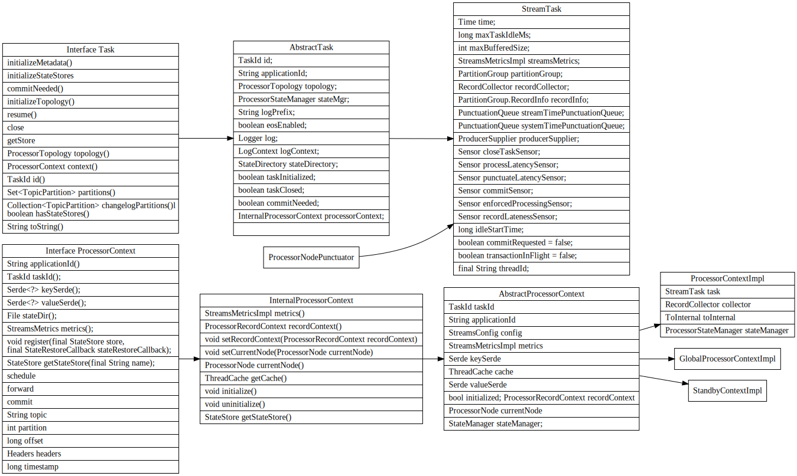
Stream start
Questions
- DAG图是怎么建立起来的。
- Kafka怎么调度DAG？怎么在不同线程，不同机器上部署？
- DAG节点之间是怎么通信的？单纯通过kafka topic ?
- 怎么处理节点之间的依赖关系的?
- Stream中的localstate, sharestate是怎么搞得，怎么保证故障恢复的。状态存储实现快速故障恢复和从故障点继续处理
- Window join 具体指的是啥
- KStream和KTable在kafka中是怎么表示的。
- Kafka中的window有哪些？分别是怎么实现的？
- through方法提供了类似Spark的Shuffle机制，为使用不同分区策略的数据提供了Join的可能
KTable, KStream, KGroupedTable
StreamsBuilder
StreamGraphNode; GlobalStoreNode; StateStoreNode; storeBuilder
writeToTopology
map/filter/groupBy/join(leftJoin, outerJoin) queryableStoreName;
context.getStateStore
kafka Stream的并行模型中，最小粒度为Task，而每个Task包含一个特定子Topology的所有Processor。因此每个Task所执行的代码完全一样，唯一的不同在于所处理的数据集互补。
这里要保证两个进程的StreamsConfig.APPLICATION_ID_CONFIG完全一样。因为Kafka Stream将APPLICATION_ID_CONFIG作为隐式启动的Consumer的Group ID。只有保证APPLICATION_ID_CONFIG相同，才能保证这两个进程的Consumer属于同一个Group，从而可以通过Consumer Rebalance机制拿到互补的数据集。
State store被用来存储中间状态。它可以是一个持久化的Key-Value存储，也可以是内存中的HashMap，或者是数据库。Kafka提供了基于Topic的状态存储。
Topic中存储的数据记录本身是Key-Value形式的，同时Kafka的log compaction机制可对历史数据做compact操作，保留每个Key对应的最后一个Value，从而在保证Key不丢失的前提下，减少总数据量，从而提高查询效率。
Ref
- Kafka设计解析（七）- Kafka Stream
- Kafka Streams开发者指南
- Kafka Streams Internal: TaskManager
- Kafka Streams Architecture
hotspot
在osx下编译调试hotspot
摘要
本文主要描述了在osx下编译hotspot debug版本以方便后续的hotspot代码研读，并尝试了使用gdb和lldb对hotspot进行debug。解决了Debug的时候会遇到的SIGSEGV问题，最后确定用lldb脚本来debug hotspot。
准备工作
- 安装freetype
$brew install freetype
- 获取openjdk repo代码
$git clone https://github.com/dmlloyd/openjdk.git
- configure然后make slowdebug 版本, 开启
--with-native-debug-symbols=internal选项以保留debug-symols
$bash ./configure --with-target-bits=64 --with-freetype-include=/usr/X11/include/freetype2 --with-freetype-lib=/usr/X11/lib --disable-warnings-as-errors --with-debug-level=slowdebug --with-native-debug-symbols=internal
$make
GDB 调试
准备好HelloWorld.java, 然后用javac编译
public class HelloWorld {
public static void main(String[] args) {
System.out.println("hello,world");
}
}
准备gdb 调试脚本, 这里面的file指向第一步编译好的java
$sudo gdb -x hello.gdb
里面的hello.gdb内容如下：
//hello.gdb
file /codes/openjdk/build/macosx-x86_64-normal-server-slowdebug/jdk/bin/java
handle SIGSEGV nostop noprint pass
# break points
break java.c:JavaMain
break InitializeJVM
break LoadJavaVM
break ContinueInNewThread
#in javaMain, after InitializeJVM
break java.c:477
commands
print "vm is"
print **vm
print "env is"
print **env
end
run HelloWorld
gdb脚本中的 break java.c:477 commands ... end 在到达断点的时候，会去执行commands中的命令，这样感觉非常方便~~. 在这边可以看到运行完InitializeJVM之后，vm和env这两个都初始化好了。
vm初始化之后是这样的, 绑定了几个函数指针, env中绑定的函数指针太多了，在此就不列举了。
{reserved0 = 0x0, reserved1 = 0x0, reserved2 = 0x0,
DestroyJavaVM = 0x104939bb0,
AttachCurrentThread = 0x104939e20,
DetachCurrentThread = 0x10493a2d0,
GetEnv = 0x10493a470,
AttachCurrentThreadAsDaemon = 0x10493a770
gdb 调试在mac下会有些问题，libjvm这个so中的符号看不到，无法打断点，网上研究了不少时间，最后发现是osx sierra和gdb兼容性问题，最后搞了半天，感觉太麻烦了。只好放弃，改用lldb.
lldb 调试
lldb调试和gdb很类似. lldb类似的脚本如下, 感觉比gdb清晰些，但是也啰嗦了些~~。
由于lldb只有在进程跑起来的时候，才能加process handle xxx, 所以在main上加一个breakpoint，在那个时候把hanlde SIGSEGV这个加上，忽略SIGSEGV信号。 lldb中通过breakpoing command add 这个加断点的时候要执行的命令，以DONE作为结束。
file /codes/openjdk/build/macosx-x86_64-normal-server-slowdebug/jdk/bin/java
settings set frame-format "frame #${frame.index}: ${line.file.basename}:${line.number}: ${function.name}\n"
#breakpoints
breakpoint set --name main
breakpoint command add
process handle SIGSEGV --notify false --pass true --stop false
continue
DONE
run HelloWorld
process handle SIGSEGV --notify false --pass true --stop false
通过下面命令执行lldb debug的脚本
$lldb -s helloworld.lldb
Hotspot代码研读: jvm 初始化时创建的线程
摘要
本文通过在pthread_create方法上打断点的方式，得到了jvm初始化的时候创建的线程。然后对里面主要线程JavaThread, VMThread， CompilerThread, GCthread 做了简要的分析。
创建线程的callstack
由于创建线程最终肯定会调用pthread_create方法，所以为了研究jvm启动的时候，创立了哪些线程，准备了下面的lldb调试脚本。在pthread_create方法上打断点，然后用bt命令打印callstack， 然后continue接着执行, 去打印下一个pthread_create的callstack, 这样最后就可以得到所有的pthread_create的callstack了。
HelloWorld.java
public class HelloWorld {
public static void main(String[] args) {
System.out.println("hello,world");
}
}
HelloWorld.lldb
//hello.lldb
file /codes/openjdk/build/macosx-x86_64-normal-server-slowdebug/jdk/bin/java
settings set frame-format "frame #${frame.index}: ${line.file.basename}:${line.number}: ${function.name}\n"
#breakpoints
breakpoint set --name main
breakpoint command add
process handle SIGSEGV --notify false --pass true --stop false
continue
DONE
breakpoint set --name pthread_create
breakpoint command add
bt
continue
DONE
run HelloWorld
执行lldb 脚本
#编译HelloWorld.java
$javac HelloWorld.java
#执行lldb脚本
$lldb -s HelloWorld.lldb
最后得到的pthread_create_bt.log, pthread call stack关系整理如下图:

线程创建的过程
main是java的laucher入口，在main-> JLI_LAUCH -> LoadJavaVM 中会调用dlopen加载libjvm的so, 设置好JNI_CreateJavaVm的函数指针.
// main -> JLI_LAUCH -> LoadJavaVM:
// load libjvm so
#ifndef STATIC_BUILD
libjvm = dlopen(jvmpath, RTLD_NOW + RTLD_GLOBAL);
#else
libjvm = dlopen(NULL, RTLD_FIRST);
#endif
//other codes
ifn->CreateJavaVM = (CreateJavaVM_t)
dlsym(libjvm, "JNI_CreateJavaVM");
然再main->JLI_LAUCH -> JVMinit -> ContinueInNewThread创建一个新的线程。新的线程开始执行JavaMain函数.
在JavaMain中最终调用Threads::create_vm 创建java vm中的其他线程。
//JNI_CreateJavaVM jni.cpp:4028
frame #13: thread.cpp:3623: Threads::create_vm(JavaVMInitArgs*, bool*)
frame #14: jni.cpp:3938: JNI_CreateJavaVM_inner(JavaVM_**, void**, void*)
frame #15: jni.cpp:4033: ::JNI_CreateJavaVM(JavaVM **, void **, void *)
frame #16: java.c:1450: InitializeJVM
frame #17: java.c:402: JavaMain
Thread 之间的继承关系
线程class之间的继承关系如下:
JavaThread
// TODO
VMThread
// TODO
CompileBroker
// TODO
Hotspot代码研读: class文件的加载和执行
摘要
本文首先描述了Helloworld.class文件的结构，然后分析了HelloWorld这个在Java中的类在hotpos jvm对应的instanceKlass实例。然后具体分析了HelloWorld中的static main函数字节码， 以及它被加载以后在JVM中存放的位置。之后描述了字节码解释器TemplateInterpreter初始化过程, 最后分析了static main这个java 代码入口函数被调用的过程, 以及new这个字节码执行的时候具体做了哪些工作。
HelloWorld.class 字节码分析
这里先准备一个HelloWord.java，main函数里面new了一个HelloWorld对象，然后调用了该对象的一个成员函数hello方法。
public class HelloWorld {
String m_name;
int m_age = 0;
public static void main(String[] args) {
HelloWorld obj = new HelloWorld();
obj.hello();
}
private void hello(){
m_age ++;
System.out.println("hello, world");
}
}
编译完之后，可以用如下命令查看生成的class二进制文件, 包括常量池和方法的字节码。
$javac HelloWorld.java
$javap -v HelloWorld >HelloWorld-javap
class文件包含两部分，一部分是常量池，另外一部分是方法对应的字节码。常量池包含了这个class中涉及到的字符串，字面常量，methodref, classRef等各种引用。
Constant pool:
#1 = Methodref #9.#23 // java/lang/Object."<init>":()V
#2 = Fieldref #3.#24 // HelloWorld.m_age:I
#3 = Class #25 // HelloWorld
#4 = Methodref #3.#23 // HelloWorld."<init>":()V
....
#10 = Utf8 m_name
#11 = Utf8 Ljava/lang/String;
下面HelloWorld.class的方法有三个，<init>":()V对应着HelloWorld的构造函数，还有main, hello这两个函数，下面主要看下HelloWorld main方法生成的字节码。new之后，做了一个dup(dup的原因是因为后面调用构造函数需要消耗一个，赋值操作也需要消耗一个)，调用了helloWorld的构造函数，对obj做了赋值, 最后调用了hello方法之后就返回了。
public static void main(java.lang.String[]);
descriptor: ([Ljava/lang/String;)V
flags: ACC_PUBLIC, ACC_STATIC
Code:
stack=2, locals=2, args_size=1
0: new #3 // class HelloWorld
3: dup
4: invokespecial #4 // Method "<init>":()V
7: astore_1
8: aload_1
9: invokespecial #5 // Method hello:()V
12: return
LineNumberTable:
line 6: 0
line 7: 8
line 8: 12
}
在hotspot的vm/interpreter/bytecodes.hpp中定义了一个字节码table，可查到上面各个指令对应的字节码值如下：
_new = 187, // 0xbb
_dup = 89, // 0x59
_invokespecial = 183, // 0xb7
_astore_1 = 76, // 0x4c
_aload_1 = 43, // 0x2b
_invokespecial = 183, // 0xb7
_return = 177, // 0xb1
使用vim编辑HelloWorld.class 这块对应的二进制文件(从bb开头)如下:

HelloWorld.class的加载
在HotSpot中由ClassFileParser负责解析class文件，并创建Class对应的instanceKlass实例，首先在vm/classfile/classFileParser.cpp中加入一段代码判断时候是HelloWorld.class的方法, 以方便打断点~~
InstanceKlass* ClassFileParser::create_instance_klass(bool changed_by_loadhook, TRAPS) {
if ( _klass != NULL) {
return _klass;
}
InstanceKlass* const ik =
InstanceKlass::allocate_instance_klass(*this, CHECK_NULL);
fill_instance_klass(ik, changed_by_loadhook, CHECK_NULL);
//新加的代码，以在加载HelloWorld.class的时候才打断点
if (ik->_name->index_of_at(0, "HelloWorld", strlen("HelloWorld")) != -1){
assert(_klass == ik, "invariant");
}
//other code
}
__
然后准备的lldb调试脚本如下：
file /codes/openjdk/build/macosx-x86_64-normal-server-slowdebug/jdk/bin/java
settings set frame-format "frame #${frame.index}: ${line.file.basename}:${line.number}: ${function.name}\n"
#breakpoints
breakpoint set --name main
breakpoint command add
process handle SIGSEGV --notify false --pass true --stop false
continue
DONE
breakpoint set --file classFileParser.cpp --line 5229
breakpoint command add
print *ik
print ik->_methods->_data[0]->name_and_sig_as_C_string()
memory read ik->_methods->_data[0]->_constMethod->code_base() -c `ik->_methods->_data[0]->_constMethod->code_size()`
print ik->_methods->_data[1]->name_and_sig_as_C_string()
memory read ik->_methods->_data[1]->_constMethod->code_base() -c `ik->_methods->_data[1]->_constMethod->code_size()`
print ik->_methods->_data[2]->name_and_sig_as_C_string()
memory read ik->_methods->_data[2]->_constMethod->code_base() -c `ik->_methods->_data[2]->_constMethod->code_size()`
DONE
run -Xint HelloWorld
最后HelloWorld.main对应的的调试lldb输出如下:
(lldb) print ik->_methods->_data[2]->name_and_sig_as_C_string()
(char *) $7 = 0x0000000101002d30 "HelloWorld.main([Ljava/lang/String;)V"
(lldb) memory read ik->_methods->_data[2]->_constMethod->code_base() -c `ik->_methods->_data[2]->_constMethod->code_size()`
0x121faab00: bb 00 03 59 b7 00 04 4c 2b b6 00 05 b1 �..Y�..L+�..�
通过上面的lldb调试可以看到，对于java中的HelloWorld这个类，hotspot创建了一个对应的InstanceKlass实例（假定为ik), ik->_methods中包含了helloworld中的方法。 HelloWorld中的方法对应的字节码, 保存在ik->_methods->_data[i]->_constMethod->code_base()指向保存它的字节码的内存，然后``ik->_mehods->_data[i]->_constMethod->_consts, 都指向了这个HelloWorld.class中对应的常量池。ConstPool->_tags这个数组标明了每个常量的类型（比如methodref对应这JVM_CONSTANT_Methodref,等等)

callstack 分析
通过callstack可以看到, 一个class的加载要通过下面的流程。SystemDictionary负责保存已经loadedclass的一个map, 如果mapl里面有了，就直接返回，如果没有，就调用classLoader去加载class文件，最后用klassFactory从class文件中创建出InstanceKlass来。
Class.c --> SystemDictionary --> ClassLoader --> klassFactory --> classFileParser-->Inputstream --> HelloWorld.class文件
frame #0: classFileParser.cpp:5229: ClassFileParser::create_instance_klass
frame #1: klassFactory.cpp:203: KlassFactory::create_from_stream
frame #2: systemDictionary.cpp:1142: SystemDictionary::resolve_from_stream
...
frame #5: ClassLoader.c:150: Java_java_lang_ClassLoader_defineClass1
...
frame #21: systemDictionary.cpp:1586: SystemDictionary::load_instance_class
...
frame #24: systemDictionary.cpp:185: SystemDictionary::resolve_or_fail
...
frame #27: Class.c:135: Java_java_lang_Class_forName0
....
frame #38: java.c:1543: LoadMainClass
frame #39: java.c:477: JavaMain
InstanceKlass的link
常量池中符号的resolve, method的link. //TODO
Interpreter
在上面加载class的callstack中可以看到有几段的callstack是机器码， 那些是TemplateInterpreter初始化的时候，生成的StubCode(机器代码), java的字节码就是在StubCode中按字节码解释执行（或者直接编译好机器码，直接跑的)~~。
frame #27: Class.c:135: Java_java_lang_Class_forName0
frame #28: 0x000000010602c838 0x000000010602c838
frame #29: 0x000000010600b220 0x000000010600b220
frame #30: 0x000000010600b220 0x000000010600b220
frame #31: 0x000000010600b220 0x000000010600b220
frame #32: 0x00000001060009f1 0x00000001060009f1
frame #33: javaCalls.cpp:410: JavaCalls::call_helper
frame #34: os_bsd.cpp:3682: os::os_exception_wrapper
frame #35: javaCalls.cpp:306: JavaCalls::call
JavaCalls::call 这个是从jvm中调java方法的入口。可以在跑代码的时候加个-XX:+PrintInterpreter选项打印这些生成的studecode的代码。
StubQueue的创建
在hotspot中有三种解释器：TemplateInterpreter，CppInterprete 还有遗留的bytecodeInterpreter。默认用的是TemplateInterpreter，TemplateInterpreter在初始化的时候会把字节码对应的执行代码通过MASM直接转对应平台(比如X86， X86-64)对应的机器代码, 这部分的机器码作为一个个Stub保存在StubQueue中，除了字节码, method_entry也会生成一个个的stub。 生成Stub的callstack如下：
* frame #0: templateInterpreterGenerator.cpp:57: TemplateInterpreterGenerator::generate_all()
frame #1: templateInterpreterGenerator.cpp:40: TemplateInterpreterGenerator::TemplateInterpreterGenerator(StubQueue*)
frame #2: templateInterpreterGenerator.cpp:37: TemplateInterpreterGenerator::TemplateInterpreterGenerator(StubQueue*)
frame #3: templateInterpreter.cpp:56: TemplateInterpreter::initialize()
frame #4: interpreter.cpp:116: interpreter_init()
frame #5: init.cpp:115: init_globals()
frame #6: thread.cpp:3623: Threads::create_vm(JavaVMInitArgs*, bool*)
frame #7: jni.cpp:3938: JNI_CreateJavaVM_inner(JavaVM_**, void**, void*)
frame #8: jni.cpp:4033: ::JNI_CreateJavaVM(JavaVM **, void **, void *)
frame #9: java.c:1450: InitializeJVM
frame #10: java.c:402: JavaMain
分配StubQueue内存
在TemplateInterpreter::initialize中，首先会去申请一块内存，存放stubcode, 然后下面TemplateInterpreterGenerator的代码都会保存到这块内存里面。
//TemplateInterpreter::initialize
// generate interpreter
{ ResourceMark rm;
TraceTime timer("Interpreter generation", TRACETIME_LOG(Info, startuptime));
int code_size = InterpreterCodeSize;
NOT_PRODUCT(code_size*=4;) // debug uses extra interpreter code space
_code = new StubQueue(new InterpreterCodeletInterface, code_size, NULL,
"Interpreter");
TemplateInterpreterGenerator g(_code);
}
__
code_size 和各个平台是相关的，比如x86平台, 大小为224K。
hotspot/src/cpu/x86/vm/templateInterpreterGenerator_x86.cpp
58:int TemplateInterpreter::InterpreterCodeSize = JVMCI_ONLY(268) NOT_JVMCI(256) * 1024;
60:int TemplateInterpreter::InterpreterCodeSize = 224 * 1024;
生成字节码对应的 stub
在set_entry_points_for_all_bytes里面，会遍历所有的bytecode，根据预先创建好的_template_table（这个表是在TemplateTable::initialize初始化的时候创建的）去生成字节码对应的code。比如字节码_new生成stubcode时候的callstack如下:
frame #0: templateTable_x86.cpp:3830: TemplateTable::_new()
frame #1: templateTable.cpp:63: Template::generate(InterpreterMacroAssembler*)
frame #2: templateInterpreterGenerator.cpp:396: TemplateInterpreterGenerator::generate_and_dispatch(Template*, TosState)
frame #3: templateInterpreterGenerator_x86.cpp:1814: TemplateInterpreterGenerator::set_vtos_entry_points(Template*, unsigned char*&, unsigned char*&, unsigned char*&, unsigned char*&, unsigned char*&, unsigned char*&, unsigned char*&, unsigned char*&, unsigned char*&)
frame #4: templateInterpreterGenerator.cpp:364: TemplateInterpreterGenerator::set_short_entry_points(Template*, unsigned char*&, unsigned char*&, unsigned char*&, unsigned char*&, unsigned char*&, unsigned char*&, unsigned char*&, unsigned char*&, unsigned char*&)
frame #5: templateInterpreterGenerator.cpp:329: TemplateInterpreterGenerator::set_entry_points(Bytecodes::Code)
frame #6: templateInterpreterGenerator.cpp:285: TemplateInterpreterGenerator::set_entry_points_for_all_bytes()
frame #7: templateInterpreterGenerator.cpp:263: TemplateInterpreterGenerator::generate_all()
生成字节码对应的stub的函数如下，这里的_gen这个generate就是TemplateInterpreter::_new了。 masm最后的flush会把机器码都flush到StubQueue那边分配的buffer中。
void Template::generate(InterpreterMacroAssembler* masm) {
// parameter passing
TemplateTable::_desc = this;
TemplateTable::_masm = masm;
// code generation
_gen(_arg);
masm->flush();
}
字节码的stub生成完之后，interpreter会有个_normal_table 保存对这些bytecode对应的stubcode的引用, 这儿entry的一堆参数代表了寄存器， 在dispatch_next中会用到这个表。
EntryPoint entry(bep, zep, cep, sep, aep, iep, lep, fep, dep, vep);
Interpreter::_normal_table.set_entry(code, entry);
dispatch_next中会去取bytecode对应stubcode的地址，然后在dispatch_base中jmp到字节码对应的code去执行。
void InterpreterMacroAssembler::dispatch_next(TosState state, int step) {
// load next bytecode (load before advancing _bcp_register to prevent AGI)
load_unsigned_byte(rbx, Address(_bcp_register, step));
// advance _bcp_register
increment(_bcp_register, step);
dispatch_base(state, Interpreter::dispatch_table(state));
}
__
method entry
hotspot中给java的method分了好几类，这样对不同种类的method可以做专门的优化, 比如针对java_lang_math_sin这些常用的数学函数，对应的method entry就直接是sin的汇编代码了。
Method entry的种类定义在了AbstractInterpreter::MethodKind中，通常用的都是zerolocals, 同步的method入口就是zerolocals_synchronized这个了，相应的还有native, native_synchronized， native的方法。部分的methodKind如下:
zerolocals, // method needs locals initialization
zerolocals_synchronized, // method needs locals initialization & is synchronized
native, // native method
native_synchronized, // native method & is synchronized
empty, // empty method (code: _return)
accessor, // accessor method (code: _aload_0, _getfield, _(a|i)return)
abstract, // abstract method (throws an AbstractMethodException)
method_handle_invoke_FIRST, // java.lang.invoke.MethodHandles::invokeExact, etc.
java_lang_math_sin, // implementation of java.lang.Math.sin (x)
method entry定义如下：
#define method_entry(kind) \
{ CodeletMark cm(_masm, "method entry point (kind = " #kind ")"); \
Interpreter::_entry_table[Interpreter::kind] = generate_method_entry(Interpreter::kind); \
Interpreter::update_cds_entry_table(Interpreter::kind); \
}
__
对于zerolocals_synchronized和zerolocals对应的入口是: generate_normal_entry 生成的stubcode, 可以看到, zerolocals_synchronized多了调了一个lock_method, 而且调用了dispatch_next jmp到bytecode对应的stubcode.
// address TemplateInterpreterGenerator::generate_normal_entry(bool synchronized) {
const Address constMethod(rbx, Method::const_offset());
const Address access_flags(rbx, Method::access_flags_offset());
const Address size_of_parametersrdx,
const Address size_of_locals(rdx, ConstMethod::size_of_locals_offset());
// get parameter size (always needed)
__ movptr(rdx, constMethod);
//other code
if (synchronized) {
// Allocate monitor and lock method
lock_method();
}
//other code
__ notify_method_entry();
//other code
__ dispatch_next(vtos);
//other code
native方法入口generate_native_entry 生成部分如下, 最终会去call native的方法。
//address TemplateInterpreterGenerator::generate_native_entry(bool synchronized)
// allocate space for parameters
__ get_method(method);
__ movptr(t, Address(method, Method::const_offset()));
__ load_unsigned_short(t, Address(t, ConstMethod::size_of_parameters_offset()));
//other code
__ call(t);
__ get_method(method); // slow path can do a GC, reload RBX
//other code
method::link
这个entry_table中的入口最后会在instancKlass中method::link的时候和method关联起来。
//method::link代码片段
address entry = Interpreter::entry_for_method(h_method);
set_interpreter_entry(entry);
//native functions
if (is_native() && !has_native_function()) {
set_native_function(
SharedRuntime::native_method_throw_unsatisfied_link_error_entry(),
!native_bind_event_is_interesting);
}
//设置method的入口
void set_interpreter_entry(address entry) {
assert(!is_shared(), "shared method's interpreter entry should not be changed at run time");
if (_i2i_entry != entry) {
_i2i_entry = entry;
}
if (_from_interpreted_entry != entry) {
_from_interpreted_entry = entry;
}
}
TemplateInterpreter初始画之后，各个table之前的关系图如下:

HelloWorld的static main的执行
经过上面的分析，再来看java代码中main被执行过程，首先在JavaMain中加载main class，然后获得class的static main method, 最后调用了这个static method，开始执行HelloWorld.class的Main method。
//JavaMain 代码片段
mainClass = LoadMainClass(env, mode, what);
//...some other code
mainID = (*env)->GetStaticMethodID(env, mainClass, "main",
"([Ljava/lang/String;)V");
//...some other code
(*env)->CallStaticVoidMethod(env, mainClass, mainID, mainArgs);
这里先不管LoadMainClass的过程， 主要分析CallStaticVoidMethod这个方法。首先准备下面的lldb调试脚本, 在JavaMain 执行CallStaticVoidMethod之前打个断点，然后再在JavaCalls::call_helper中打个断点。
#just a line before (*env)->CallStaticVoidMethod(env, mainClass, mainID, mainArgs);
breakpoint set --file java.c --line 517
breakpoint command add
breakpoint set --method JavaCalls::call_helper
continue
DONE
可以看到callstack如下
* frame #0: javaCalls.cpp:360: JavaCalls::call_helper(JavaValue*, methodHandle const&, JavaCallArguments*, Thread*)
frame #1: os_bsd.cpp:3682: os::os_exception_wrapper(void (*)(JavaValue*, methodHandle const&, JavaCallArguments*, Thread*), JavaValue*, methodHandle const&, JavaCallArguments*, Thread*)
frame #2: javaCalls.cpp:306: JavaCalls::call(JavaValue*, methodHandle const&, JavaCallArguments*, Thread*)
frame #3: jni.cpp:1120: jni_invoke_static(JNIEnv_*, JavaValue*, _jobject*, JNICallType, _jmethodID*, JNI_ArgumentPusher*, Thread*)
frame #4: jni.cpp:1990: ::jni_CallStaticVoidMethod(JNIEnv *, jclass, jmethodID, ...)
frame #5: java.c:518: JavaMain
JavaCalls::call_helper
在JavaCalls::call_helper中关键代码片段如下， 首先设置好method的entry point， 这个entry point就是上文中所说的interpreter初始化的时候建立的method entry point（两者之间连接是在method::link的时候建立的）。
//JavaCalls::call_helper代码片段
//设置entry point
address entry_point = method->from_interpreted_entry();
if (JvmtiExport::can_post_interpreter_events() && thread->is_interp_only_mode()) {
entry_point = method->interpreter_entry();
}
//other code
// do call
{ JavaCallWrapper link(method, receiver, result, CHECK);
{ HandleMark hm(thread); // HandleMark used by HandleMarkCleaner
StubRoutines::call_stub()(
(address)&link,
// (intptr_t*)&(result->_value), // see NOTE above (compiler problem)
result_val_address, // see NOTE above (compiler problem)
result_type,
method(),
entry_point,
args->parameters(),
args->size_of_parameters(),
CHECK
);
result = link.result(); // circumvent MS C++ 5.0 compiler bug (result is clobbered across call)
// Preserve oop return value across possible gc points
if (oop_result_flag) {
thread->set_vm_result((oop) result->get_jobject());
}
}
//保存执行结果：
if (oop_result_flag) {
result->set_jobject((jobject)thread->vm_result());
thread->set_vm_result(NULL);
}
call_stub
这个call_stub也是一段汇编代码（定义在StubGenerator_x86_X64.cpp:203由generate_call_stub生成）它在保存好一堆寄存器和栈之后，就把用到的参数都压到寄存器里面，然后调method的entry point去执行，执行完了再把寄存器和栈恢复了。
其中的call Java function部分的汇编代码如下：
// call Java function
__ BIND(parameters_done);
__ movptr(rbx, method); // get Method*
__ movptr(c_rarg1, entry_point); // get entry_point
__ mov(r13, rsp); // set sender sp
BLOCK_COMMENT("call Java function");
__ call(c_rarg1);
BLOCK_COMMENT("call_stub_return_address:");
return_address = __ pc();
JavaCallWrapper
在JavaCallWrapper的构造函数中，会申请一个新的JNIHandleBlock，并把它设置为thread的active_handles，在析构函数中会恢复线程之前的JNIHandleBlock，并释放之前申请的JNIHandleBlock。
线程自身维护一个free_handle_block的list， 申请JNIHandleBlock的时候，就从这里面去取，如果freelist用完了，才回去加个mutex lock new一个JNIHanleBlock。释放的时候，就放回到这个list里面。
很多的java code都会去调用vm/prims/jvm.cpp中的JVM_ENTRY，而JVM_ENTRY会用JNIHanleBlock->make_local保存返回给java代码的的结果。在java code跑完以后,由JavaCallWrapper的destructor负责释放这些内存。
jobject JNIHandles::make_local(Thread* thread, oop obj) {
if (obj == NULL) {
return NULL; // ignore null handles
} else {
assert(Universe::heap()->is_in_reserved(obj), "sanity check");
return thread->active_handles()->allocate_handle(obj);
}
}
bytecode对应的代码
hotspot默认用的是TemplateInterpreter把字节码对应的代码直接生成汇编代码，读起来比较难。hotspot中还有一个bytecodeInterpreter，这个完全是用cpp写的，两者从逻辑上看起来没区别。所以看每个bytecode对应的代码可以从bytecodeInterpreter入手。
new
java中的new 一个class 有两个path： 一个是fastpath: class对应的instanceKlass已经解析，初始化好了，这种比较快，另外一种是 slowpath需要去掉interpreter的runtime 去link, init这个klass, 然后把它放到constpoll的cache里面， 然后分配内存。
在heap堆或者thread的localstorage上分配内存， 设置好oop的 mark head,还有iklass指针，iklass指向在jvm中代表该java类的instanceKlass。
首先判断instanceklass是否已经加载了并且初始化了
ConstantPool* constants = istate->method()->constants();
if (!constants->tag_at(index).is_unresolved_klass()) {
// Make sure klass is initialized and doesn't have a finalizer
Klass* entry = constants->slot_at(index).get_klass();
InstanceKlass* ik = InstanceKlass::cast(entry);
if (ik->is_initialized() && ik->can_be_fastpath_allocated() ) {
如果要求useTLAB的话，就分配在thread localstorage上
size_t obj_size = ik->size_helper();
if (UseTLAB) {
result = (oop) THREAD->tlab().allocate(obj_size);
}
否则从heap上分配
HeapWord* compare_to = *Universe::heap()->top_addr();
HeapWord* new_top = compare_to + obj_size;
if (new_top <= *Universe::heap()->end_addr()) {
if (Atomic::cmpxchg_ptr(new_top, Universe::heap()->top_addr(), compare_to) != compare_to) {
goto retry;
}
result = (oop) compare_to;
}
然后就是初始化这块内存了，设置好对象的markhead和kclass指针, 最后把它放到栈上。
if (need_zero ) {
HeapWord* to_zero = (HeapWord*) result + sizeof(oopDesc) / oopSize;
obj_size -= sizeof(oopDesc) / oopSize;
if (obj_size > 0 ) {
memset(to_zero, 0, obj_size * HeapWordSize);
}
}
if (UseBiasedLocking) {
result->set_mark(ik->prototype_header());
} else {
result->set_mark(markOopDesc::prototype());
}
result->set_klass_gap(0);
result->set_klass(ik);
// Must prevent reordering of stores for object initialization
// with stores that publish the new object.
OrderAccess::storestore();
SET_STACK_OBJECT(result, 0);
UPDATE_PC_AND_TOS_AND_CONTINUE(3, 1);
对于slowcase回去调用interpreterRuntime::_new去创建对象
CALL_VM(InterpreterRuntime::_new(THREAD, METHOD->constants(), index),
handle_exception);
// Must prevent reordering of stores for object initialization
// with stores that publish the new object.
OrderAccess::storestore();
SET_STACK_OBJECT(THREAD->vm_result(), 0);
THREAD->set_vm_result(NULL);
UPDATE_PC_AND_TOS_AND_CONTINUE(3, 1);
___
raft
Raft
Leader Election
在raft中，主要有leader, candidate, follower三种状态, 一个cluster只有一个leader, leader负责处理client的写请求，然后 leader将日志push给各个follower。
leader通过心跳机制告诉follower自己还活着，当follower有一段时间没收到leader的心跳后，认为leader已经挂掉后，就转变为candidate， 发起投票请求，尝试成为leader。
term: 任期
在Raft中，任期扮演着逻辑时钟的角色，节点之间的请求和返回中都带上node当前的term。node在处理请求时，发现请求中的term比自己大，就 将自己term 改为该值，如果比自己小，就拒绝请求，并返回带上自己term。
leader发送给follower的心跳中，如果收到的回复中, follower term比自己大，那么leader就知道自己stale了，就会step down.
candidate在发起RequestForVote时候，会将自己term +=1 , 然后经过一轮处理后，整个集群term都会增加。
AppendEntries
AppendEntries 是由leader发送给follower的RPC请求，主要有两个作用:
- 同步日志。
- AppendEntries的log entriy可以为空，扮演着心跳的角色，心跳用于抑制follower转变为candidate。
Majority Vote
follower 变为candidate之后，会将自己term + 1, 并且会发送RequestForVote请求给所有成员，开始选举，如果收到了大部分成员的投票，则成为 新的任期的leader。 SplitVote是选举中要解决的主要问题。
SplitVote
多个candidate 同时发起投票时候，可能每个candidate可能获得的选票都达不到大多数，为了解决这个问题，Raft采用了random election timeout的机制，每个 candidate的election timout是个随机值，可以在很大程度上保证一段时间内只有一个candidate在request for vote。

Log Replication
一条日志，只有被复制到cluster中大部分server上时候，才会被认为是commited。被commited日志才能apply 到raft的state machine上。 leader自己的日志只能append,不能rewrite，不然后面的commited index就没啥用了。
leader发送给follower的心跳请求中带了当前leader commited index， follower根据这个信息来判断一条日志能安全的apply 到statemachine上。
每条日志都有term和index，如果两条日志的term和index是一致的，那么这两条日志就被认为是一致的。 新leader当选后，需要向follower push自己的日志。leader需要找到和follower日志共同的起点，然后从该点同步follower日志。
Leader维护了一个NextIndex数组，NextIndex[i]表示下一次要向follower发送日志的index。

GFS
Questions
- master 和chunk之间是怎么互相自动发现的？
- master 和chunk之间心跳信息具体内容是啥
- master信息存在哪儿？master挂了？集群都挂？
- Cache怎么解决失效的问题？
- 谁负责写入多个副本？
- 副本的一致性是怎么保证的
- Atomic Append是咋搞的
- 写入流程是怎样的？
ChunkSize
chunksize 64MB的好处
- 减轻client 和master的通信.
- client和chunk server长时间通信,减少需要和多个chunk server网络通信
缺点：
- 小文件只有一个或几个chunk，容易造成成为热点
Metadata
master 相当于一个路由表, master主要存储三种metadata
- the file and chunk namespace
- mapping from files to chunk
- location of each chunk replica 这三个信息都存储在内存中，前两个信息会通过operation log, 持久化存储到磁盘上 信息3没有存在磁盘上，master询问每个chunk server, 来构建这个信息.
写入流程
lease and mutation order

如果修改的区域跨chunk了,上面的lease机制无法保证对多个chunk的修改，有一致的修改顺序。
Atomic record append
这块没怎么看明白，好像是append时候，如果primary发现chunk size不够写，就直接先将当前chunk pad填满，并且
让secondary也pad，填充, 然后让client重试,为了避免过多的碎片，chunk append的record size 现在在maxSize/4
这样就避免了跨chunk写
snapshot


Master operation
- namespace namespace operation
- manages chunk replicas
- placement decisions
Bw-tree
the Bw-tree achieves its very high performance via a latch-free approach that effectively exploits the processor caches of modern multi-core chips.
is paper is on the main memory aspects of the Bw-tree. We describe the details of our latch-free tech- nique,
we need to get better at exploiting a large number of cores by addressing at least two important aspects
- Multi-core cpus mandate high concurrency. But, as the level of concurrency increases, latches are more likely to block, limiting scalability
lock 限制了多核并发能力
- Good multi-core processor performance depends on high CPU cache hit ratios. Updating memory in place results in cache invalidations, so how and when updates are done needs great care.
cpu cache hit rate, 如何利用cpu cache hit rate
the Bw-tree performs “delta” updates that avoid updating a page in place, hence preserving previously cached lines of pages